Tout ce que la plateforme sait faire pour gérer un centre d'hémodialyse — et chaque règle qu'elle applique, sans exception.
HemoDialyse couvre toute la gestion d'un centre d'hémodialyse : accueil et dossier administratif des patients, prises en charge, planification des postes et du personnel, séances et cahier de dialyse, dossier médical et suivi clinique, stock et pharmacie, maintenance des équipements, facturation, règlements et comptabilité, pilotage de la direction. La plateforme est multi-centres et multi-sociétés, en français, arabe, kabyle et anglais.
Au-delà de la disponibilité de l'information, le système surveille (absences, observance des traitements, sous-effectif, péremptions, indisponibilité des équipements, licences), propose (meilleures places de dialyse classées, remplaçants, réforme d'un équipement, simulation de facturation) et protège (placement incohérent refusé, isolement automatique des patients à risque, gel du stock pendant un inventaire, anonymat de la direction, cloisonnement par centre).
| Profil | Rôle | Périmètre principal |
|---|---|---|
ADMIN | Administrateur du centre | Paramétrage, utilisateurs, séances, facturation, GMAO, comptabilité, planification |
MEDECIN | Médecin | Dossier médical, prescriptions, validation et signature, cibles cliniques, greffe |
INFIRMIER | Infirmier | Séances, consommables, administrations, « mon planning », absences |
SECRETAIRE | Secrétaire | Accueil, patients, PEC, règlements, planning, absences |
PHARMACIEN | Pharmacien / magasinier | Stock : bons, lots, inventaire |
DIRECTION | Direction de société | Tableaux de bord consolidés et anonymes, instantanés, rapports |
SUPERADMIN | Propriétaire de la plateforme | Sociétés, centres, comptes d'encadrement, licences, journal d'audit |
Chaque règle porte un identifiant stable RG-XXX-nnn, jamais renuméroté. Le code d'erreur renvoyé à l'utilisateur figure entre apostrophes inversées ; la source dans le code est citée. Un encadré point d'attention signale un écart connu entre l'intention métier et le comportement actuel : il est conservé tant qu'il n'est pas corrigé.
Règles qui s'appliquent à tous les modules : isolation par centre, erreurs, pagination, cache, internationalisation, temps réel, traçabilité technique. Les identifiants
RG-TRV-nnnsont stables : ne jamais les renuméroter.
Toute donnée métier appartient à un centre (center_id, UUID). Aucune donnée n'est créée, lue,
modifiée ou
supprimée sans être rattachée à un centre. Sources : CenterAccessGuard, AGENTS.md §2.
Le centre utilisé par une requête est toujours celui de la session (porté par le jeton). Si le
client
fournit un centerId différent, la requête est refusée (403 ACCESS_DENIED). Une session sans centre de rattachement
est
refusée sur les routes de centre. Source : CenterAccessGuard.requireCenter.
Exception : le propriétaire de la plateforme (SUPERADMIN) est transverse aux centres ; il doit alors
préciser le centre visé (sinon 403 « centerId requis pour un accès transverse »). Source : CenterAccessGuard.
Les clés de cache incluent systématiquement le centre (aucune fuite inter-centres). Les écritures qui
invalident une donnée mise en cache déclenchent l'éviction correspondante. Sources : CacheConfig, AGENTS.md §6.
Les canaux temps réel d'un centre sont /topic/center/{centerId}/events ; les canaux d'une société
sont
/topic/societe/{societeId}/… et réservés à la direction de cette société (voir RG-SEC-040). Source :
NotificationService.
Une règle métier violée renvoie HTTP 422 avec un corps
{title:"Regle metier violee", detail, code}
où code est un identifiant stable (ex. ABSENCE_EXISTANTE) que l'interface traduit. Source :
ApiExceptionHandler.
Une requête invalide (argument illégal) renvoie HTTP 400 BAD_REQUEST ; une validation de
formulaire
échouée renvoie 400 VALIDATION_ERROR. Source : ApiExceptionHandler.
Un état incohérent signalé par une exception d'état renvoie HTTP 422 BUSINESS_RULE_VIOLATION et
est
journalisé côté serveur (aucun échec silencieux). Source : ApiExceptionHandler.
Un refus d'accès renvoie HTTP 403 ACCESS_DENIED (et non 500). Source : ApiExceptionHandler.
Une erreur d'accès aux données renvoie HTTP 500 DATA_ACCESS_ERROR ; toute autre erreur imprévue
HTTP 500 INTERNAL_ERROR. Une déconnexion du client en cours de réponse n'est jamais journalisée comme une
erreur. Source : ApiExceptionHandler.
Deux erreurs de séance ont un code dédié (HTTP 422) : SEANCE_STOCK_EXIT_DATE_IMMUTABLE (la date
d'une sortie de stock rattachée à une séance est immuable) et SEANCE_FACTUREE_NON_MODIFIABLE (toute modification
d'une séance facturée est refusée, y compris son stock ; remplace depuis la slice F6 les anciens codes
BUSINESS_RULE_VIOLATION et SEANCE_BILLED_STOCK_EXIT_IMMUTABLE pour ce cas). Source : ApiExceptionHandler (voir
RG-SEA-002 et RG-SEA-023).
Toute erreur affichée à l'utilisateur est traduite à partir de son code (jamais le texte brut du
serveur quand une clé de traduction existe) ; l'erreur s'affiche à l'endroit de l'action (formulaire, panneau),
pas
seulement en haut de page. Source : stores front, AGENTS.md §19.
Toute liste est paginée : l'API accepte page (0-indexé, défaut 0) et size (défaut 20) et répond
{items, total, page, size}. Aucune liste ne charge toutes les données sans limite. Source : PagedResult,
AGENTS.md §9.
Côté interface, toute table de liste porte un paginateur (tailles proposées : 10, 20, 50, 100) ; le
centre
actif fait toujours partie du filtre de pagination. Source : PagedListState.
Exceptions bornées : les vues dont le volume est borné par construction (grille d'une semaine de
planning,
liste des salles d'une page) renvoient l'ensemble de la période sans pagination. Sources :
SuivreLaSemaine (suivi de la semaine des absences).
Un montant (Money) est obligatoire et ne peut être négatif. Source : Money.
Une quantité (Quantite) est obligatoire et ne peut être négative. Source : Quantite.
Un poids (Poids) est obligatoire, strictement positif et ne dépasse pas 500 kg. Source :
Poids.
Un email est obligatoire, normalisé en minuscules et doit respecter le format x@y.zz.
Source : Email.
Un téléphone est obligatoire ; espaces, tirets et parenthèses sont ignorés, un préfixe 00
devient +,
il compte 8 à 15 chiffres. Source : PhoneNumber.
Un identifiant de centre (CenterId) ne peut être nul. Source : CenterId.
Toutes les clés primaires sont des UUID ; tous les horodatages sont en UTC. Source :
AGENTS.md §10.
Mis en cache (Caffeine, 10 000 entrées max, expiration après écriture) : référentiels (TTL 6 h par
défaut,
CACHE_TTL_REFERENTIALS), détail patient et associés (15 min, CACHE_TTL_PATIENT_DETAIL), listes patient (3 min,
CACHE_TTL_PATIENT_LIST), comptage patient (3 min), valorisation du stock (30 min, CACHE_TTL_STOCK_VALORISATION),
types de TVA (TTL référentiels), modèles d'impression personnalisés compilés (12 h), indicateur « mot de passe
temporaire » (1 min). Source : CacheConfig.
Jamais mis en cache : données temps réel ou financières nécessitant une fraîcheur garantie —
planning de
la semaine, présence des infirmiers, absences, salles et générateurs, tableaux de bord de la direction (réponses
Cache-Control: no-store), journal d'audit, résultats d'authentification. Sources : contrôleurs concernés.
Les langues de l'application sont le français (défaut), l' arabe, le kabyle et l'
anglais ; toute
chaîne visible est traduite, aucune n'est écrite en dur ; toute nouvelle clé est ajoutée dans les quatre langues.
L'arabe
s'affiche de droite à gauche. Source : frontend/public/i18n/*.json, AGENTS.md §19.
Toute interface est responsive (mobile 320–767 px, tablette, bureau) sans débordement horizontal de
la page ;
les tableaux denses défilent horizontalement dans leur conteneur. Source : AGENTS.md §4.1, §21.
Un thème d'apparence (clair/sombre et variantes) est proposé à l'utilisateur. Source :
core/theme.
Les évènements métier sont poussés en temps réel (STOMP sur /ws) vers les utilisateurs du centre ;
chaque
évènement porte un type, le centre, une charge utile et un horodatage ; un évènement peut cibler des rôles
(targetRoles) : seuls ces rôles le voient dans la cloche de notifications. Source : NotificationService.
Chaque évènement de centre signale aussi au tableau de bord de la direction qu'une donnée a changé
(rafraîchissement
temps réel). Source : NotificationService.send → TempsReelDeLaDirection.unCentreAChange (Pilotage direction, RG-DIR-106).
La connexion WebSocket est permise sans authentification (les canaux de centre ne changent pas) ;
seuls les
canaux de société exigent une session de direction valide. Source : WebSocketAuthentication.
| Tâche | Cadence | Rôle | Règles détaillées |
|---|---|---|---|
AuditScheduler.flush |
toutes les 3 s | écrit le journal d'audit par lots | RG-SEC-050 |
AuditScheduler.purge |
03:30 chaque jour | purge au-delà de la rétention (365 j) | RG-SEC-052 |
LicenseOnlineCheckJob.checkAll |
03:15 chaque jour | contrôle en ligne des licences | RG-SEC-032 |
ControleDeNuitDesAbsences.controlerAbsences |
02:30 chaque jour | détecte les absences de patients | RG-ABS-040 |
CaptureDuMoisEcoulePlanifiee |
02:30 le 1er du mois | fige le mois écoulé | RG-DIR-090 |
ControleDeNuitDeLObservance |
06:30 chaque jour | contrôle l'observance des prescriptions | RG-MED-073 |
ControleDesPeremptionsPlanifie.controlerLesPeremptions |
07:00 chaque jour (fuseau du serveur, Africa/Algiers) | notifie les lots proches de la péremption (centres actifs) | RG-STK-061 |
ReplanificationAutomatiqueScheduler.replanifier |
02:30 chaque nuit | replanification automatique (centres volontaires) | RG-PLN-100 |
ControleDeLaPresenceDe0715.controlerLaPresence |
07:15 chaque jour (Africa/Algiers) | alerte de sous-effectif infirmiers | RG-INF-046 |
TempsReelPlanifie |
1 s et 10 s | diffusion temps réel de la direction | RG-DIR-100 |
Préfixe
RG-SEC. Couvre : authentification, double authentification, mot de passe, périmètres de rôles, gestion des comptes et des rôles, installation initiale, licences, journal d'audit.
Rôles du système : ADMIN (administrateur du centre), MEDECIN, INFIRMIER, SECRETAIRE,
PHARMACIEN
(stock), DIRECTION (direction d'une société, sans centre), SUPERADMIN (propriétaire de la plateforme, sans
centre) ;
habilitations complémentaires GMAO_REFORME (autorise la réforme d'un équipement) et GMAO_RECTIFICATION (autorise
la
rectification d'une intervention). Des rôles personnalisés peuvent être créés par l'administrateur. Sources :
seed.sql,
RoleRestController.
Un compte peut cumuler plusieurs rôles ; les périmètres restreints (RG-SEC-020 à 024) ne s'appliquent
qu'aux comptes dont le seul rôle de centre est celui concerné. Source : RoleScopeFilter.
Le rôle SUPERADMIN est réservé au propriétaire : il est invisible dans les listes de rôles pour
tout autre
profil, ne peut être ni créé, ni modifié, ni supprimé par un non-SUPERADMIN (403 « Rôle réservé »), n'est jamais
attribuable
par l'écran de gestion des utilisateurs à moins que l'appelant le détienne déjà, et un non-SUPERADMIN ne peut pas
retirer
ce rôle à un compte qui le possède. Sources : RoleRestController, UserRestController.filterAssignableRoleIds.
Le code d'un rôle est unique (« Code rôle déjà existant », 400). Source :
RoleRestController.createRole.
La gestion des utilisateurs et des rôles est réservée à l'ADMIN. Source : @PreAuthorize de
UserRestController, RoleRestController.
La connexion se fait en deux étapes d'annuaire publiques (sociétés actives disposant d'au moins un
centre
actif ; puis centres actifs de la société choisie) puis identifiant/mot de passe. Les annuaires n'exposent que
identifiant
et nom. Sources : AuthService.listLoginSocietes/listLoginCentres, AuthRestController.
Un identifiant ou un mot de passe erroné renvoie le même message « Identifiants invalides » (on ne
révèle pas
lequel est faux). Le mot de passe (BCrypt) est vérifié avant tout contrôle de rôle ou de rattachement. Source :
AuthService.
Un compte désactivé ne peut pas se connecter (« Compte utilisateur désactivé »). Source :
AuthService.login.
La connexion à un centre exige que l'utilisateur soit rattaché à ce centre, que le centre soit actif,
que sa
société soit active et, si une société est sélectionnée, que le centre lui appartienne. Source :
AuthService.login,
assertCentreEtSocieteUtilisables.
Trois types de session : CENTRE (utilisateur d'un centre), SOCIETE (direction : rôle DIRECTION,
compte
rattaché à la société, société active) et PLATEFORME (propriétaire : rôle SUPERADMIN, sans société). Source :
AuthService.loginScoped.
Le jeton d'accès (JWT) est stocké dans un cookie HttpOnly (HEMO_AUTH, durée 8 h par défaut) et un
jeton de
rafraîchissement opaque dans un cookie distinct (HEMO_REFRESH, 7 jours par défaut, restreint à
/api/v1/auth/refresh) ;
jamais dans le stockage local du navigateur. Le serveur est sans état. Sources : AuthRestController,
application.yml.
Le jeton de rafraîchissement n'est stocké qu'en empreinte SHA-256, est à usage unique (rotation à
chaque
rafraîchissement) ; sa réutilisation révoque tous les jetons de l'utilisateur. Un jeton révoqué ou expiré est
refusé. Source : AuthService.rotateFromRefreshToken.
À chaque rafraîchissement, la session est reconstruite en revérifiant compte actif, rattachement et
état du
centre/de la société. La déconnexion révoque le jeton et expire les deux cookies. Source :
AuthService.rebuildSession.
Un jeton expiré provoque un rafraîchissement silencieux côté interface ; en cas d'échec, retour à la
page de
connexion. Source : authInterceptor.
Politique d'un nouveau mot de passe choisi par l'utilisateur (changement de mot de passe) : 10 à 128
caractères, au moins une lettre et un chiffre, et ne contenant pas l'identifiant de connexion ; sinon
PASSWORD_TROP_FAIBLE. Source : PolitiqueMotDePasse.
Politique des mots de passe posés par le propriétaire pour les comptes administrateur de centre
et
direction : 12 à 100 caractères, au moins une lettre et un chiffre, sans l'identifiant (codes PASSWORD_TOO_SHORT,
PASSWORD_TOO_LONG, PASSWORD_WEAK, PASSWORD_CONTAINS_USERNAME). Politique du compte propriétaire
(installation
initiale) : 14 caractères minimum avec majuscule, minuscule, chiffre et symbole, sans l'identifiant. Source :
PasswordPolicy. Point d'attention : trois seuils coexistent (10 / 12 / 14) ; un mot de passe de 10-11 caractères
est donc accepté au
changement par l'utilisateur mais refusé à la création par le propriétaire.
Un compte créé avec un mot de passe temporaire est marqué « à changer » : tant que le mot de passe
n'est pas
remplacé, toute route /api/** hors /api/v1/auth/** répond 403 PASSWORD_CHANGE_REQUIRED. L'indicateur est mis
en
cache 1 minute et vidé au changement. Sources : PasswordChangeRequiredFilter, ChangementMotDePasseService.
Changement de mot de passe : le mot de passe actuel doit être exact (PASSWORD_ACTUEL_INVALIDE), le
nouveau
doit différer de l'actuel (PASSWORD_IDENTIQUE) et respecter la politique (PASSWORD_TROP_FAIBLE) ; compte
introuvable ou
inactif : PASSWORD_COMPTE_INTROUVABLE. Source : ChangementMotDePasseService.changer.
L'inscription génère un secret chiffré au repos, confirmé par un premier code valide ; la
confirmation produit 8 codes de secours à usage unique (10 caractères, affichés une seule fois, stockés hachés).
Une inscription inachevée est
remplacée. Déjà activée : MFA_ALREADY_ENABLED ; confirmation sans inscription : MFA_NOT_ENROLLED ; code faux :
MFA_INVALID. Source : MfaService.
Si elle est activée, la connexion exige un code après le mot de passe (MFA_REQUIRED si absent). Un
code TOTP
déjà accepté ne peut pas être rejoué (dernier pas mémorisé) ; un code de secours est consommé à l'usage. Source :
MfaService.
Après 5 échecs consécutifs le compte est verrouillé 5 minutes (MFA_LOCKED). La
désactivation exige un
code valide. Source : MfaService.
SUPERADMIN : accès limité aux sociétés (/societes), licences (/licenses), journal d'audit
(/audit) et performance de la base (/supervision, RG-SEC-060) ;
tout autre route /api/v1/** répond 403 ROLE_SCOPE. Source : RoleScopeFilter.
DIRECTION : accès limité à /api/v1/direction/**, en lecture seule, sur des agrégats
anonymes ; aucune
donnée de centre (patients, séances, absences, stock, facturation…). Source : RoleScopeFilter,
DirectionAccessGuard.
Infirmier « seul » (rôle INFIRMIER sans autre rôle de centre) : routes /api/v1/infirmiers/** et
/api/v1/planning/** interdites, hormis son propre planning /api/v1/infirmiers/moi/**. Côté interface il n'accède
qu'à son
planning du jour, au tableau de bord des séances et au suivi des absences de patients. Source : RoleScopeFilter,
role-scope.guard.
Médecin « seul » (rôle MEDECIN sans ADMIN/SECRETAIRE/INFIRMIER) : routes infirmiers,
planning,
facturation, reglements, comptabilite et gmao interdites, sauf la lecture du planning de la semaine
(/planning/semaine) et de la présence des infirmiers (/infirmiers/presence/semaine). Il consulte patients (fiche
en
lecture seule), dossier médical, cahier de dialyse, statistiques, le suivi des absences et, comme accueil
(/medecin), exactement le planning des séances (vues semaine et jour, RG-PLN-103).
Source : idem.
Les écrans interdits à un profil restreint le redirigent vers son accueil (/infirmiers/moi,
/medecin,
/direction, /admin/societes). Source : homeRouteFor, roleScopeGuard.
La société d'une session direction vient du jeton (jamais d'un paramètre) et est revérifiée en base
à chaque
requête : compte actif, rôle DIRECTION, rattachement à la société, société active. Un compte désactivé ou détaché
perd
l'accès immédiatement. Source : DirectionAccessGuard.
Une licence est un jeton signé (RS256) lié à un centre : type, nombre maximal d'utilisateurs, début
et fin de
validité. L'expiration, le quota et le centre sont lus dans le jeton signé, jamais dans les colonnes de la base
(modifier
la base n'a aucun effet). Seule l'instance « autorité » (détenant la clé privée) émet des licences. Seule la
révocation
est un fait propre à la base. Sources : LicenseService, LicenseTokenService.
Émission pour une société : une licence par centre actif (ou une sélection de ses centres
actifs), en une
seule transaction (tous ou aucun) ; société sans centre actif ou centre étranger/inactif : refus. Source :
LicenseService.issueForSociete.
Activation hors ligne : la licence doit avoir été émise pour ce centre et ne peut être activée deux
fois. Source : LicenseService.activate.
Verdict d'un centre : aucune licence, révoquée, signature/expiration invalide, jeton d'un autre
centre (falsification), vérification en ligne trop ancienne → licence invalide. Source : LicenseService.verify.
Tant qu'un centre n'a pas de licence valide, toute route d'un utilisateur non-SUPERADMIN répond
402
LICENSE_REQUIRED, sauf /auth, /licenses/status|activate|authority, /system/ping, actuator, documentation d'API
et
/ws. Le verdict est mis en mémoire 60 s par centre. Source : LicenseEnforcementFilter.
Contrôle en ligne quotidien (03:15, instances clientes avec URL d'autorité configurée) : une licence
révoquée
chez l'autorité est révoquée localement ; un échec réseau n'est que journalisé. La période de grâce hors ligne
(offlineGraceDays) est décomptée depuis le dernier contrôle réussi (ou l'activation). Sources :
LicenseOnlineCheckJob,
LicenseService.isOnlineCheckStale.
Quota de postes : assertSeatAvailable refuse un utilisateur actif de plus que le maximum de la
licence (LicenseRequiredException). Point d'attention : ce contrôle existe dans LicenseService mais son appel
est
actuellement désactivé (commenté) dans UserRestController.createUser : la création d'un utilisateur n'est donc
pas
bloquée par le quota. Source : LicenseService, UserRestController.
Création d'un utilisateur : identifiant unique (« Nom d'utilisateur déjà existant »), mot de passe
haché, rôles
filtrés (RG-SEC-003), rattachement à un ou plusieurs centres. Modification : le mot de passe n'est remplacé que s'il
est fourni ;
l'état actif/inactif est propagé à la fiche infirmier liée ; la suppression supprime aussi le lien infirmier.
Source : UserRestController.
À la première ouverture, tant qu'aucun propriétaire (SUPERADMIN) n'existe, l'écran d'installation
permet de
créer ce compte ; la création est sérialisée (jamais deux propriétaires), refusée dès qu'un propriétaire existe
(SETUP_ALREADY_DONE), protégée par un jeton d'installation facultatif (SETUP_TOKEN_INVALID), avec identifiant
valide (USERNAME_INVALID), identifiant libre (USERNAME_TAKEN), email valide (EMAIL_INVALID) et mot de passe
conforme à la
politique. Sources : InitialSetupService, InitialSetupRestController.
Un abonnement à un canal de société est refusé (« canal réservé à la direction de la société ») sauf
pour un
compte DIRECTION rattaché à cette société, revalidé en base. Source : WebSocketAuthentication.
Réponses durcies : politique de sécurité de contenu restrictive, interdiction d'affichage en cadre,
type MIME
imposé, politique de référent stricte ; CORS limité aux origines configurées, avec cookies. Routes publiques :
connexion,
déconnexion, rafraîchissement, annuaires de sociétés/centres, installation initiale, ping système, actuator health
et WebSocket ; tout le reste exige une authentification. La documentation d'API (Swagger) et la console H2 ne sont
publiques qu'en développement local (app.dev-tools.enabled) : en production elles sont fermées (RG-SEC-042).
Source : SecurityConfig.
Profil de production (prod). Il verrouille le schéma (Flyway seul, Hibernate en
validate, pas de schema.sql ni de données de démonstration), ferme Swagger et la console H2, et n'exécute jamais
l'initialisation des comptes de démonstration. Le démarrage est refusé si le secret JWT est absent, égal à la
valeur de développement ou de moins de 32 caractères, ou si la base est H2. Source : application-prod.yml,
ProductionSafetyGuard, SeedPasswordInitializer.
Toute écriture (POST, PUT, PATCH, DELETE) sur /api/v1/** est tracée automatiquement
(utilisateur,
rôles, centre, société, action, entité, gabarit de route, statut HTTP, durée, adresse IP) ; le gabarit de route
est
journalisé, jamais l'URL brute (pas d'identifiant nominatif dans le libellé). Seule lecture tracée : la consultation
du dossier
médical d'un patient. Sources : AuditRequestFilter, AuditActionResolver.
L'écriture du journal est asynchrone : file mémoire bornée à 5 000 évènements (les plus anciens
sont
abandonnés au-delà), vidée par lots de 500 toutes les 3 s ; un échec d'écriture est journalisé techniquement sans
jamais
affecter la requête. Sources : AuditWriterService, AuditScheduler.flush.
Purge nocturne (03:30) des entrées plus anciennes que la rétention (365 jours par défaut,
AUDIT_RETENTION_DAYS). Source : AuditScheduler.purge.
La consultation du journal est paginée (taille max 200), filtrable (utilisateur, action, période,
centre,
société) et réservée à ADMIN (limité à son centre) et SUPERADMIN (toute la plateforme) ; jamais à la direction.
Sources :
AuditRestController, AuditQueryService.
Écran « Performance de la base », réservé au SUPERADMIN (menu propriétaire, route
/admin/performance) : classement paginé des requêtes SQL les plus coûteuses relevées par PostgreSQL
(pg_stat_statements), triable par temps total, temps moyen ou nombre d'appels (temps total par défaut).
Chaque requête affiche son nombre d'appels, son temps total, sa part du temps total de la base, son temps moyen, son
temps maximal et le nombre de lignes. Ce sont des données techniques de toute la plateforme, hors périmètre d'un
centre : le texte des requêtes est normalisé (les valeurs sont remplacées par $1, $2…) et ne contient aucune
donnée de patient. Aucun autre profil, y compris ADMIN et DIRECTION, n'y accède. Sources :
SupervisionBaseRestController, SupervisionBaseService, PgStatStatementsAdapter.
Gravité d'une requête : CRITIQUE si sa durée moyenne atteint 500 ms ; ATTENTION si elle
atteint 100 ms ou si elle pèse au moins 20 % du temps total de la base ; sinon NORMAL. Source : NiveauRequete.
Mesure indisponible : en développement local (base H2), si l'extension n'est pas installée
(migration Flyway V30 non appliquée) ou si le serveur PostgreSQL n'a pas chargé pg_stat_statements, l'écran
l'indique avec la raison (BASE_NON_POSTGRESQL, EXTENSION_ABSENTE, PRELOAD_ABSENT) et ne liste rien. Source :
PgStatStatementsAdapter.statut.
Remise à zéro des compteurs, après confirmation, pour mesurer l'effet d'une optimisation sur
quelques jours ; tracée au journal d'audit comme toute écriture (RG-SEC-050). Refusée si la mesure est indisponible
(SUPERVISION_INDISPONIBLE) ou si PostgreSQL refuse l'opération faute de droits
(SUPERVISION_REINITIALISATION_IMPOSSIBLE). Source : SupervisionBaseService.reinitialiser.
Pistes d'amélioration par requête. Chaque requête du classement porte des conseils déduits de
son texte normalisé et de ses compteurs (ce sont des indices, à confirmer par l'analyse) : trop de lignes par appel
sans LIMIT (≥ 1 000), lente avec un filtre mais peu de lignes renvoyées (≥ 50 ms et < 50 lignes : lecture complète
probable), COUNT(*) lent, tri ou jointure qui déborde sur disque, taux de cache sous 90 %, écriture lente (≥ 50 ms),
appels très nombreux et rapides pesant au moins 10 % du total (schéma « N+1 », cache), SELECT *, recherche
LIKE/ILIKE, fonction appliquée à la colonne filtrée, longue liste IN, durée maximale très supérieure à la
moyenne. Les actions précèdent les informations. Source : ConseilsRequete.
Analyse du plan d'exécution (bouton « Analyser »). Le serveur relit le texte de la requête à
partir de son identifiant mesuré — le client ne fournit jamais de SQL — et établit son plan générique sans
l'exécuter (PREPARE + EXPLAIN avec plan générique, transaction en lecture seule limitée à 5 s, requête préparée
libérée). Seules les lectures à instruction unique sont analysées (sans écriture cachée dans un WITH). Le résultat
liste les tables lues en entier et conclut : INDEX_RECOMMANDE (avec un ordre CREATE INDEX à étudier : égalités
puis
première colonne de plage, trois colonnes au plus), TABLE_PETITE (moins de 1 000 lignes : lire tout est plus
rapide),
INDEX_PRESENT (un index commence déjà par la première colonne filtrée : le plan générique peut différer du réel) ou
SANS_FILTRE (lecture complète voulue). La suggestion est une piste à valider, jamais appliquée automatiquement.
Requête absente des mesures : SUPERVISION_REQUETE_INTROUVABLE. Sources : AnalyseurPlan, PgPlanAdapter.
Santé de la base (onglet dédié, PostgreSQL uniquement) : taille, part des lectures servies par
le cache, connexions utilisées sur le maximum, quinze plus grosses tables (taille, lignes, part de lignes mortes,
lectures complètes et par index) et index jamais utilisés. Points d'attention : cache sous 95 % (critique sous 90 %),
connexions à 80 % du maximum, lignes mortes au moins 20 %, grande table lue en entier de façon répétée, index
inutilisés. Chaque table est positionnée face aux seuils de l'étude de partitionnement : A_ETUDIER à 20 millions de
lignes ou 10 Go, A_SURVEILLER à la moitié. Sources : DiagnosticSante, PgSanteBaseAdapter.
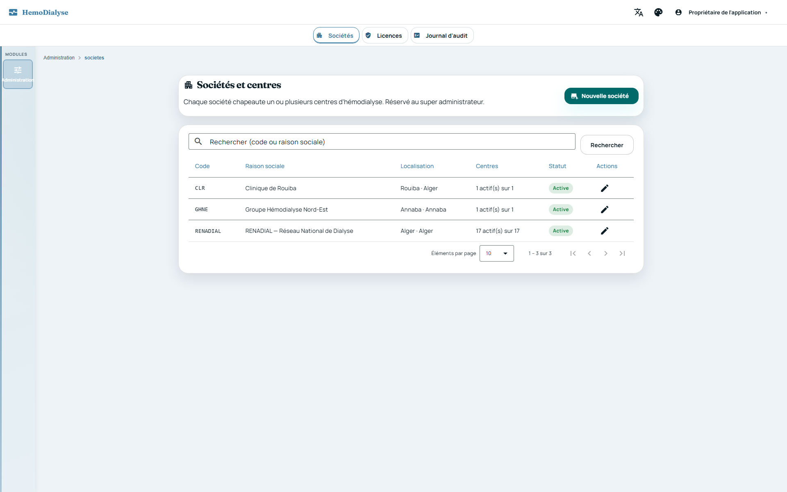
Préfixe
RG-ORG. Le propriétaire de la plateforme (SUPERADMIN) administre les sociétés, leurs centres, les comptes administrateur de centre et les comptes direction. Sources :Societe,Centre,Coordonnees,OrganisationService,SocietesControleur,CentresControleur,SallesControleur,CreneauxControleur,ReferentielsControleur,ReferentielsLegacyControleur(contexte Organisation),SocieteAdminAccountService,DirectionAccountService.
Une société chapeaute un ou plusieurs centres. Elle ne peut être créée qu'avec son premier centre
(SOCIETE_SANS_CENTRE). Une société reconstituée sans centre est refusée.
Code de société : 2 à 30 caractères (lettres majuscules, chiffres, tiret, souligné ; normalisé en
majuscules,
commence par une lettre ou un chiffre) ; sinon SOCIETE_CODE_INVALIDE. Le code est unique
(SOCIETE_CODE_DEJA_UTILISE).
Raison sociale obligatoire, 200 caractères maximum (SOCIETE_NOM_INVALIDE).
Identifiants légaux NIF, NIS, RC facultatifs, 40 caractères maximum chacun
(SOCIETE_IDENTIFIANT_INVALIDE).
Pied de page des documents : 500 caractères maximum (SOCIETE_PIED_PAGE_TROP_LONG) ; vide = absent.
Une société désactivée n'est plus proposée à la connexion ; ses centres sont conservés ; elle peut être réactivée. Un centre de société désactivée ne peut pas se connecter (RG-SEC-013).
Société introuvable : SOCIETE_INTROUVABLE.
La liste des sociétés est paginée, filtrable par recherche, taille plafonnée à 100.
Code de centre : mêmes règles que le code de société (CENTRE_CODE_INVALIDE) ; unique sur toute la
plateforme (CENTRE_CODE_DEJA_UTILISE).
Nom de centre obligatoire, 150 caractères maximum (CENTRE_NOM_INVALIDE).
Un centre appartient à exactement une société. Le rattacher une seconde fois à la même société est
refusé (CENTRE_DEJA_AFFECTE) ; un centre inconnu de la société : CENTRE_INTROUVABLE.
Invariant : une société conserve toujours au moins un centre actif. On ne peut ni désactiver
ni
retirer (transférer) son dernier centre actif (SOCIETE_DERNIER_CENTRE). Désactiver un centre déjà inactif est sans
effet.
Transfert d'un centre vers une autre société : refusé si source = cible
(CENTRE_TRANSFERT_MEME_SOCIETE),
si la société cible est désactivée (SOCIETE_INACTIVE) ou si la source perdrait son dernier centre actif ; le
transfert des
deux sociétés est atomique (tous deux enregistrés ou aucun).
Un centre inactif ne peut plus être sélectionné à la connexion (RG-SEC-010/013) mais ses données sont conservées.
Les écritures qui touchent à l'ensemble des centres d'une société (désactiver, transférer) prennent le
verrou de la société (et, pour un transfert, celui de la société cible, dans l'ordre des identifiants) dans une
transaction, avant de relire les centres actifs : deux désactivations simultanées ne peuvent pas laisser la société sans
centre actif. Un verrou non obtenu dans les 5 secondes répond 409 ORGANISATION_ECRITURE_CONCURRENTE (à réessayer).
L'ordre des centres d'une société dans les réponses n'est pas garanti (le legacy ne l'était pas non plus, KB-ORG-04).
Tous les champs sont facultatifs et nettoyés (vide = absent) : adresse (250), ville (100), wilaya
(100),
téléphone (30), email (150), site web (200) ; dépassement : COORDONNEES_TROP_LONG.
Téléphone : 6 à 25 caractères parmi chiffres, espace, point, parenthèses, tiret, + initial
(COORDONNEES_TELEPHONE_INVALIDE). Email normalisé en minuscules (COORDONNEES_EMAIL_INVALIDE). Site web au format
[http(s)://]domaine.tld[/chemin] (COORDONNEES_SITE_WEB_INVALIDE).
Ces coordonnées alimentent l'en-tête et le pied de page de tous les documents imprimés (voir RG-DOC).
Le logo est un PNG ou un JPEG reconnu à son contenu (signature), jamais à l'extension ni au type
déclaré ;
le SVG est refusé. Taille maximale 512 Ko (TOO_LARGE), dimensions maximales 2000 × 2000 px contrôlées avant décodage
(DIMENSIONS), image décodable (IMAGE_INVALID), fichier non vide (EMPTY), type valide (FILE_TYPE). Un refus
répond 422
avec la liste des violations ; l'envoi accepté est journalisé.
Le logo est servi sans mise en cache (no-store, nosniff, CSP default-src 'none') ; il est
imprimé dans
l'en-tête des documents. Sa suppression est possible à tout moment.
Sociétés et centres (/api/v1/societes, /api/v1/organisation/societes, /api/v1/organisation/centres) :
réservés au SUPERADMIN. Le SUPERADMIN reste limité au legacy : sous /api/v1/organisation, il n'atteint que societes
et centres ; salles, créneaux, médecins, machines, protocoles et référentiels lui répondent 403 ROLE_SCOPE, comme
/api/v1/referentials et /api/v1/admin/referentials.
Écritures sur les salles (ouvrir, fermer), les créneaux, les médecins, les machines et les protocoles
(/api/v1/organisation/*) : administrateur du centre (ADMIN) ; lectures : tout utilisateur authentifié. Le centre est celui
de la session : un centre demandé différent, ou une session sans centre, répond 403. Le refus de droits est donné
avant la lecture du corps (403 avant 400 ou 415). Modifier ou désactiver un élément d'un autre centre répond 404.
GET /api/v1/referentials/* : le centre demandé doit être celui de la session (403 sinon ; un compte
ADMIN sans centre n'y a plus accès). Le legacy croyait le centre demandé par le client (KB-ORG-05). Les salles et les
positions sont triées par code, les médecins par nom (le legacy ne triait pas).
Un identifiant ou un paramètre UUID illisible répond 400 (le legacy répondait 500, KB-ORG-02). Un corps absent ou illisible sur la création d'une société répond encore 500 comme le legacy (KB-ORG-01).
Un médecin n'est jamais supprimé : il est désactivé (actif = faux) et disparaît des listes de
sélection, dans l'API d'Organisation comme dans l'administration générique des référentiels, car il est référencé par les
patients et les prescriptions. L'administration générique refuse toujours la désactivation d'un médecin encore référencé
(REFERENTIAL_IN_USE).
Fermer une salle est un indicateur du contexte Organisation : il n'a aucun effet sur la planification, qui lit toutes les salles (KB-ORG-07).
Les modifications de salles, de créneaux et de médecins invalident les caches de référentiels du centre (salles, positions, médecins, générateurs) après l'enregistrement de la transaction.
Seul le SUPERADMIN crée, modifie, active/désactive les comptes ADMIN d'une société et réinitialise
leur mot de
passe ; le mot de passe n'est jamais renvoyé ni journalisé.
Création : le centre est obligatoire (CENTRE_REQUIS) et doit appartenir à la société
(CENTRE_HORS_SOCIETE) ;
identifiant 3 à 50 caractères (minuscules, chiffres, point, tiret, souligné) (USERNAME_INVALID) et libre
(USERNAME_TAKEN) ;
email valide si renseigné (EMAIL_INVALID) ; mot de passe selon RG-SEC-019b. Le compte reçoit le rôle ADMIN.
Modification : un administrateur est rattaché à au moins un centre de la société
(CENTRE_REQUIS) ; chaque
centre doit appartenir à la société ; les rattachements à des centres d' autres sociétés ne sont jamais modifiés ;
retirer
un centre révoque les sessions ouvertes sur ce centre.
Désactiver un compte ou réinitialiser son mot de passe révoque toutes ses sessions ; seul un
compte portant
le rôle ADMIN et rattaché à la société est concerné (COMPTE_INTROUVABLE).
Un compte direction porte le rôle DIRECTION, est rattaché à une société (et jamais à un centre) ;
mêmes règles
d'identifiant, d'email et de mot de passe que RG-ORG-041.
Activation/désactivation et réinitialisation de mot de passe réservées au SUPERADMIN ; une
désactivation coupe
les sessions ouvertes ; un compte hors société ou sans rôle DIRECTION est introuvable (COMPTE_INTROUVABLE).
Les comptes direction n'ont accès qu'aux indicateurs anonymes (RG-SEC-021 et chapitre direction).
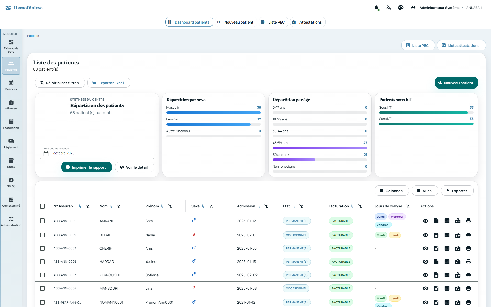
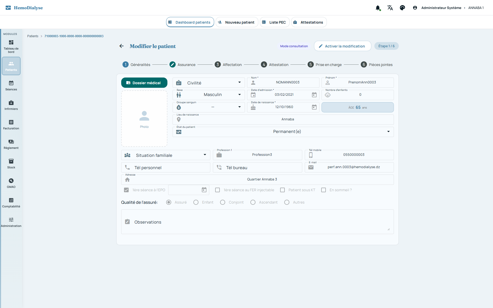
Préfixes
RG-PAT(patient),RG-ASS(assuré),RG-ATT(attestation de droits),RG-PEC(prise en charge). Sources :Patient,PatientDomainService,PatientApplicationService,PatientRestController,Assure,AssurePatientAssignment,AttestationDroit,AttestationDomainService,PriseEnCharge,PecDomainService,PecRestController,PatientListQueryService(historiques) ; depuis PC1 à PC4 :PatientsControleur,Patient,AssurePrincipal,PriseEnCharge,PecControleur,AttestationsControleur,AttestationDroitdu contextepatient-couverture.
Un patient appartient à un centre (centerId) ; sa fiche n'est lisible/modifiable que dans ce centre
(RG-TRV-001/002). Un patient inconnu du centre : « Patient introuvable » (400).
Champs obligatoires à la création : nom, prénom, sexe, date d'admission, date de naissance, numéro d'assurance (valeur non vide). Une valeur manquante est refusée (400).
Le code patient est généré par le système (PAT- + 8 caractères hexadécimaux majuscules) et n'est
jamais
saisi ni modifié.
Le numéro d'assurance est unique par centre : créer un patient avec un numéro déjà utilisé dans le centre est refusé (« Numero assurance deja utilise pour ce centre »).
État du patient : PERMANENT (défaut à la création), OCCASIONNEL, TRANSFERE, DECEDE, GREFFE,
GUERRI, VACANCIER_LOCAL, VACANCIER_ETRANGER, avec une date de l'évènement d'état. À la modification, l'état
fourni
remplace l'état courant ; non fourni, l'état courant est conservé. Sens et obligation de la date : RG-PAT-030/031.
Type de patient dérivé de l'état : VACANCIER si l'état est VACANCIER_LOCAL ou
VACANCIER_ETRANGER,
sinon NON_VACANCIER.
Un patient non vacancier doit avoir une attestation de droits : à la création, dates de début et de fin d'attestation obligatoires ; à la modification, soit fournies, soit déjà existantes (« Attestation obligatoire pour un patient non-vacancier »). Un vacancier en est dispensé.
Un patient « en sommeil » (enSommeil) est conservé mais n'est plus considéré en file active active
(voir
indicateurs).
Téléphones (personnel, mobile, bureau) : normalisés et validés selon RG-TRV-034 (8 à 15 chiffres) ; email validé et mis en minuscules (RG-TRV-033) ; champ vide = absent. Un format invalide est refusé.
La fiche porte aussi : civilité, groupe sanguin, nombre d'enfants, lieu de naissance, situation familiale, profession, adresse, photo, observation, indicateurs « sous KT », EPO (activé + date) et fer (activé + date), pièces jointes.
Affectation clinique et logistique de la fiche : médecin traitant, salle, créneau (position), générateur, transporteurs aller/retour, catégorie de transport, centre payeur, et jours de dialyse (dimanche à samedi, cases à cocher). Un patient sans jour coché n'a pas de séance planifiée.
Le générateur affecté est un équipement du parc GMAO de type générateur de dialyse du même centre ; son nom, sa marque et son état (statut GMAO) sont lus en temps réel à la consultation de la fiche.
L'écriture de la fiche (création, modification, assurés) est refusée au médecin « seul » (il consulte
sans
modifier) ; autorisée à ADMIN, SECRETAIRE, INFIRMIER et aux rôles personnalisés.
Création ou modification : tout le placement (salle, créneau, générateur, jours) est contrôlé côté serveur par la planification (voir RG-PLN-050 à 053). Une fiche sans placement est acceptée ; une fiche dont le placement n'a pas changé n'est pas recontrôlée (une anomalie héritée ne bloque pas la modification d'autres données).
Création et modification notifient en temps réel le centre (évènements « patient créé/modifié ») et vident les caches de listes et de synthèse patient (RG-TRV-004/040).
Les affectations de jours/salles saisies dans l'assistant sont verrouillées côté interface lorsqu'elles dépendent du planning ; seul le planificateur les modifie (voir chapitre planification).
La date d'évènement (dateEvenementEtat) a un sens propre à l'état : pour TRANSFERE,
DECEDE, GREFFE et GUERRI, c'est la date de sortie (transfert, décès, greffe, guérison) ; pour OCCASIONNEL,
VACANCIER_LOCAL et VACANCIER_ETRANGER, c'est la date de fin de séjour (dernier jour inclus), le séjour
commençant à la date d'admission ; pour PERMANENT, elle n'existe pas.
À la création comme à la modification, un état de sortie ou de séjour limité exige une date
d'évènement (PATIENT_DATE_EVENEMENT_REQUISE ; reprise PC1 du 2026-11-03 : le séjour limité n'est plus non borné) et
aucune date d'évènement ne peut précéder la date d'admission (PATIENT_DATE_EVENEMENT_AVANT_ADMISSION). L'état doit
appartenir à la liste fermée PERMANENT, OCCASIONNEL, VACANCIER_LOCAL, VACANCIER_ETRANGER, TRANSFERE,
DECEDE, GREFFE, GUERRI (sinon 422 PATIENT_ETAT_INCONNU, casse comprise) ; les transitions restent libres, y
compris depuis DECEDE (reproduit, à décider). Termes du glossaire : TRANSFERE = transféré, GUERRI = guéri.
Dernier jour d'occupation de la place : TRANSFERE et GUERRI = la date d'évènement incluse
(dernière séance) ; DECEDE et GREFFE = la veille de la date d'évènement (le patient ne dialyse plus ce jour-là) ;
séjour limité = la date de fin de séjour incluse ; un état de sortie sans date libère la place immédiatement ;
PERMANENT n'a pas de limite. Cette règle unique alimente le planning (RG-PLN-010, 040), la charge des infirmiers
(RG-INF-040), les séances attendues (RG-SEA-042) et la libération des places (RG-PAT-033). Exception, absences
(RG-ABS-041, slice A3) : la détection des absences exclut le jour de l'évènement pour les quatre états de sortie
(TRANSFERE, GUERRI, DECEDE, GREFFE) ; un état de sortie sans date n'y est jamais attendu. Une sortie sans date d'évènement est refusée à l'enregistrement (RG-PAT-031).
Libération effective de la place : lorsque le dernier jour d'occupation est dépassé, la fiche perd sa salle, son créneau, son générateur et ses jours de dialyse ; le patient reste dans le centre (consultation, facturation, historique). Le traitement s'exécute chaque nuit à 04:00 (après le contrôle des absences de 02:30, qui a encore besoin des jours de dialyse de la veille) et à l'enregistrement d'une fiche dont l'échéance est dépassée de plus d'un jour. Il est idempotent, libère chaque patient dans sa propre transaction, pour les seuls centres actifs, au jour du centre, et vide les caches de liste et de synthèse patient. Détail et exceptions : RG-PLN-108 à 111 (contexte Planification, qui possède désormais l'écriture).
Mouvements de patients : chaque admission, changement d'état ou de date d'évènement et chaque
libération de place produit un mouvement immuable (ADMISSION, SEJOUR_TEMPORAIRE, REPRISE, TRANSFERT,
DECES, GREFFE, GUERISON, PLACE_LIBEREE) portant l'état précédent et nouveau, la date d'effet et
l' affectation occupée à cet instant (salle, créneau, générateur, jours). Un mouvement n'est jamais modifié ni
supprimé ; la libération automatique est marquée comme telle. Corriger la seule date d'un état de sortie déjà
enregistré ne crée pas un second mouvement (le legacy écrivait TRANSFERT puis TRANSFERT) ; une date de fin de
séjour limité modifiée en écrit un.
Enregistrer la fiche ne dégrade jamais la prise en charge ni l'attestation : la demande de prise
en charge saisie sur la fiche retrouve la PEC existante (par identifiant, à défaut de même demande) et la conserve
avec
son statut et son accord (une PEC VALIDEE reste VALIDEE) ; seule une demande modifiée met à jour les dates et le
forfait demandés. Une PEC n'est créée (état CREE) que si aucune PEC ne correspond. Une attestation déjà présente
avec
les mêmes dates n'est pas recréée (aucun doublon).
Effectif d'une période (règle unique, partout où l'on compte des patients : synthèse mensuelle, tableau de bord de la direction — patients, sexe, âge, caisse, anémie —, file active rapportée à la capacité, nombre de patients du tableau de bord du centre) : un patient est compté s'il est admis au plus tard le dernier jour de la période et s'il n'est pas sorti avant son premier jour. La sortie (transfert, décès, greffe, guérison) ou la fin de séjour est lue à la date d'évènement selon RG-PAT-032 : un évènement pendant ou après la période garde le patient dans l'effectif, un évènement antérieur l'en retire ; un état de sortie sans date n'est jamais compté. La file active de la capacité écarte en plus les patients « en sommeil » (RG-PAT-008).
Le suivi des mouvements est consultable en liste paginée (page 0, taille 20 par défaut,
100 maximum : une page négative ou une taille hors de 1 à 100 est refusée en 400), du plus récent au plus ancien,
filtrable par patient, type et période de date d'effet, limitée au centre courant, pour les profils ADMIN,
SECRETAIRE, MEDECIN et INFIRMIER ; un paramètre illisible répond 400. KB-ORG-10 CORRIGÉ le 2026-11-09 (lot L7, ADR 0115, à confirmer
par les métiers et le DPO avant le 2026-12-15) : le nom de la salle et le libellé du créneau d'un mouvement sont lus DANS le centre du
mouvement ; une salle ou un créneau d'un autre centre (ou disparu) s'affiche vide, l'identifiant restant dans la ligne. (Avant : le libellé
d'un autre centre était affiché.)
Le numéro d'assurance du patient est unique par centre, comparé après retrait des espaces de
bord et sans tenir compte de la casse, à la création et à la modification (422 BUSINESS_RULE_VIOLATION). Aucune
contrainte en base : le contrôle se fait sous le verrou du centre ; les doublons existants se relèvent par la requête de
verifications-production.md §41.
Garde de centre : toutes les lectures de la fiche (fiche, recherche, synthèse, détail, historique
d'assurés, mouvements) et toutes les écritures d'assuré se font dans le centre du jeton (403 pour un autre centre ou
une session sans centre). Droits de rôles inchangés par rapport à l'existant : lecture de la fiche, recherche,
synthèses, assurés et historique ouverts à tout utilisateur authentifié ; mouvements : ADMIN, SECRETAIRE,
MEDECIN, INFIRMIER ; création et modification de la fiche : ADMIN, SECRETAIRE, INFIRMIER ; écritures
d'assuré : tout profil sauf le médecin « seul » (rôles personnalisés compris). Un patient inconnu du centre répond
404 PATIENT_INTROUVABLE.
Cohérence des dates : la date de naissance n'est ni dans le futur
(PATIENT_DATE_NAISSANCE_FUTURE) ni postérieure à la date d'admission (PATIENT_DATE_NAISSANCE_APRES_ADMISSION),
422. Une saisie illisible (corps, date, UUID, booléen, nombreEnfants, month) répond 400 BAD_REQUEST. « Aujourd'hui »
est le jour du centre (fuseau du centre, app.planification.fuseau-par-defaut), y compris pour l'affectation d'un
assuré.
Une ligne héritée aux colonnes nulles (état, jours, sommeil) se lit et se modifie : l'état nul vaut
PERMANENT (sans mouvement REPRISE à l'enregistrement), les indicateurs nuls valent faux, la qualité d'assuré nulle
reste nulle. Un état non nul hors de la liste fermée est rendu tel quel, jamais réécrit par un enregistrement
sans état ; le patient n'est pas plaçable (422 PATIENT_ETAT_INCONNU) tant que son état n'est pas corrigé. Le
numéro d'assurance est contrôlé et enregistré sous le verrou du centre, pris en tête de toute écriture de fiche
(RG-PAT-038).
La recherche de patients est paginée (taille 1 à 100, 20 par défaut ; 400 sinon), toujours limitée au centre, et
filtrable
par code, nom, prénom, sexe, période d'admission, numéro d'assurance, état, statut « non facturable » et, par texte du
libellé
affiché, médecin traitant, créneau, transporteurs aller/retour et forfait. Les filtres sexe et état acceptent
plusieurs valeurs séparées par des virgules (ex. M,F) : le patient doit correspondre à l'une d'elles
(comparaison exacte, insensible à la casse et aux espaces) ; une saisie sans virgule reste une recherche par contenu.
Tri autorisé uniquement sur code, nom, prénom, sexe, date d'admission, numéro d'assurance, état ; un tri demandé sur une autre colonne retombe sur l'ordre par défaut (jamais d'erreur, jamais de tri SQL arbitraire).
Un patient est « non facturable » tant qu'il n'a aucune prise en charge validée ; le statut et le forfait de sa dernière PEC validée apparaissent dans la liste.
Les libellés de référentiels (médecin, créneau, transporteurs, forfait) sont résolus par lot pour la page (pas de requête par ligne).
La synthèse mensuelle des patients (comptages par sexe, âge, KT) est calculée pour le mois demandé
(mois courant par défaut) sur l' effectif du mois (RG-PAT-037), mise en cache par centre et par mois (3 min) ;
ses détails de même (motif d'inclusion : PERMANENT, EVENT_MONTH = sortie ou fin de séjour dans le mois,
ACTIVE_PERIOD = sortie ou fin de séjour postérieure au mois).
Qualité d'assuré : ASSURE_LUI_MEME (défaut), ENFANT, CONJOINT, ASCENDANT, AUTRE.
Patient assuré lui-même : ses propres nom, prénom, sexe, date de naissance, téléphones, adresse et groupe sanguin tiennent lieu d'informations d'assuré, son numéro d'assurance est celui de l'assuré, et toute affectation d'assuré principale antérieure est effacée.
Patient ayant droit : le numéro d'assurance de l'assuré est obligatoire (« N° assurance assuré obligatoire pour cette qualité d'assuré ») ; l'assuré est créé ou mis à jour (clé : numéro d'assurance) avec ses coordonnées, puis affecté comme assuré principal du patient (l'ancien principal est clôturé).
Un même assuré peut être lié à plusieurs patients (fratrie, famille) ; son historique d'affectation est conservé et consultable (numéro, principal ou non, actif, dates).
Affecter explicitement un assuré existant à un patient : impossible si le patient est assuré lui-même (« Impossible d'affecter un assuré si le patient est assuré lui-même ») ; assuré inconnu : « Assuré introuvable » ; la date de début est automatiquement aujourd'hui, l'affectation principale précédente est clôturée à cette même date, la nouvelle est active (sans date de fin).
Correction des dates d'une affectation : la date de fin ne peut précéder la date de début (« La date de fin doit être >= à la date de début ») ; l'affectation doit appartenir au patient et au centre sinon 403.
Modification d'un assuré : l'assuré doit appartenir au centre (sinon 403) ; téléphones validés selon RG-TRV-034.
Une affectation est active tant qu'elle n'a pas de date de fin.
Un seul assuré principal actif par patient (R1), tenu sous le verrou du centre pris en tête de
l'affectation et de la correction de dates : deux affectations simultanées ne laissent jamais deux principaux actifs
(l'une attend, l'autre est refusée 409 si le verrou n'est pas obtenu à temps). Aucune contrainte SQL : les doublons
hérités se relèvent par verifications-production.md §42-1.
Un assuré d'un autre centre ne peut pas être capturé : déclarer, sur une fiche ou une affectation, un
numéro d'assuré détenu par un autre centre est refusé (422 ASSURE_D_UN_AUTRE_CENTRE) ; l'ancien comportement reprenait la
ligne et écrasait ses coordonnées (KB-PAT-31).
Idempotence : enregistrer la fiche d'un ayant droit sans changer d'assuré n'ajoute pas de ligne d'affectation (KB-PAT-32).
La modification d'un assuré (PUT /patients/assures/{numero}) exige le nom (400) ; le prénom reste
facultatif ; c'est un remplacement total : les autres champs absents du corps sont effacés (KB-PAT-33, remplacement
reproduit, à décider avec les métiers).
Une attestation couvre une période : dates de début et de fin obligatoires (« Dates attestation obligatoires ») et la fin ne peut précéder le début (« Date fin avant date debut »).
Une attestation est rattachée à un patient et à un centre ; plusieurs attestations successives sont conservées.
Une attestation est valide à une date donnée si cette date est comprise dans sa période ; sa validité à la date du jour conditionne la création de PEC et de séances pour un non-vacancier (RG-PEC-002, RG-PEC-005).
Création et suppression d'une attestation notifient le centre en temps réel. La recherche des attestations du centre est paginée.
Garde de centre : les quatre routes d'attestation (/api/v1/pec/attestations**) n'agissent que dans
le centre du jeton (403 sinon ; une session sans centre est refusée). Droits de rôles inchangés : tout compte de centre
est admis, DIRECTION et SUPERADMIN sont refusés (403 ROLE_SCOPE). Pour la création et la recherche, le centre est lu en
tête du corps et la garde passe AVANT le reste de la lecture : un appel d'un autre centre reçoit 403 même si le corps est
illisible par ailleurs.
Une attestation n'est créée que pour un patient du centre : patient inexistant ou d'un autre centre,
422 ATTESTATION_PATIENT_INTROUVABLE. Des dates absentes ou une fin avant le début sont refusées en 400 ; les formats
illisibles (corps, identifiant, date) aussi, un type de contenu texte en 415.
Suppression : une attestation inconnue du centre, ou d'un autre patient quand le patient est donné, est
refusée en 404 ATTESTATION_INTROUVABLE et ne diffuse rien ; de deux suppressions simultanées, une réussit et l'autre
reçoit 404 (verrou du centre).
ARGENT / MÉTIER, reproduit à l'identique, À DÉCIDER AVEC LES MÉTIERS : aucun contrôle de période entre attestations (début = fin, période échue ou future, doublons, chevauchements, contiguïtés acceptés) ; l'attestation reste exigée pour FACTURER un vacancier (règle de la création de séance) alors que la saisie en dispense le vacancier ; une attestation peut être supprimée sous une PEC validée ; le tableau de bord compte les attestations déjà échues dans « à échéance ». La règle « attestation liée à une PEC active » (R5) n'est pas retenue.
Recherche : %, _ et \ des filtres texte sont des caractères ordinaires ; une date de filtre illisible
est un 400. Audit : ATTESTATION_CREATION, ATTESTATION_SUPPRESSION, ATTESTATION_RECHERCHE.
« Aujourd'hui » est le jour du centre pour l'échéance du tableau de bord et pour une séance créée sans date (plus le jour de la JVM).
Cycle de vie : CREE → VALIDEE → CLOTUREE. Toute autre transition est refusée (« Transition
invalide vers
VALIDEE » / « …vers CLOTUREE »).
Création : le patient doit exister dans le centre ; pour un non-vacancier, une attestation valide à la date du jour est obligatoire (« Attestation valide obligatoire pour PEC non-vacancier »). La PEC enregistre la période et le forfait demandés.
Validation (réservée à ADMIN) : renseigne la période et le forfait effectifs accordés ;
possible
uniquement depuis CREE. Elle notifie le centre.
Clôture : possible uniquement depuis VALIDEE. Elle notifie le centre.
Une séance ne peut être créée que si la PEC est validée et, pour un non-vacancier, si une
attestation est valide à
la date du jour (session-allowed).
Un patient n'ayant aucune PEC validée est « non facturable » (RG-PAT-022) : aucune séance ne peut lui être facturée.
Saisie dans l'assistant patient : une PEC (période et forfait demandés) et une attestation peuvent être créées en même temps que la fiche, dans la même transaction que le patient et l'assuré.
La suppression d'une PEC exige qu'elle existe dans le centre ; elle notifie le centre. La recherche des PEC du centre est paginée.
Garde de centre sur toutes les routes de PEC : le centre de la requête doit être celui du jeton
(403 sinon ; une session sans centre est refusée). Droits de rôles inchangés (validation ADMIN seul, autres routes ouvertes
à tout utilisateur authentifié). PEC inconnue ou d'un autre centre : 404 PEC_INTROUVABLE ; formats illisibles ou
manquants : 400 ; type de contenu texte : 415 ; un statut stocké hors cycle : 400 « Statut de prise en charge inconnu : X ».
Identifiant de PEC déjà pris (demande saisie sur la fiche, RG-PEC-007) : la fiche est enregistrée, la
PEC n'est pas créée, la réponse est un 409 PEC_IDENTIFIANT_DEJA_UTILISE portant l'identité de la fiche (l'ancien
comportement annulait toute la fiche en 500, KB-PAT-35 ; interprétation à valider).
ARGENT, reproduit à l'identique, À DÉCIDER AVEC LES MÉTIERS : (a) deux règles « PEC valide pour une
séance » (session-allowed : statut VALIDEE plus attestation du non-vacancier au jour du centre ; création de séance :
SeanceBillingEligibilityPort, qui reste la règle de production) ; (b) le forfait lu par les absences ignore le statut de
la PEC ; (c) aucun contrôle de période, de forfait ni de chevauchement, plusieurs PEC validées simultanées possibles ;
(d) une PEC validée peut être supprimée. Diffusions PEC_VALIDATED/PEC_CLOSED avec le nom réel du patient ; audit
PEC_VALIDATION et PEC_CLOTURE.
Tableau de bord administratif du centre (/api/v1/dashboard/stats, mois facultatif au format
AAAA-MM, ignoré s'il est invalide) : nombre de PEC créées et validées (du mois
par date de création, ou au total), d'attestations (idem), de patients, de PEC validées dont la fin demandée est
atteinte et d' attestations dont la fin est atteinte dans l'horizon d'alerte (30 jours par défaut,
paramétrable). Point d'attention : ces deux compteurs « à échéance » comptent aussi les documents déjà expirés
de toute ancienneté (condition « date de fin ≤ horizon »), ce qui
surestime le besoin de renouvellement ; à borner en bas par la date du jour.
GET /api/v1/pec (PEC du centre) et GET /api/v1/pec/patient/{id} renvoient des
listes non
paginées (volume borné par patient pour la seconde ; non borné pour la première) — écart à RG-TRV-020 à résorber au
profit de la
recherche paginée POST /api/v1/pec/pec-center/search.
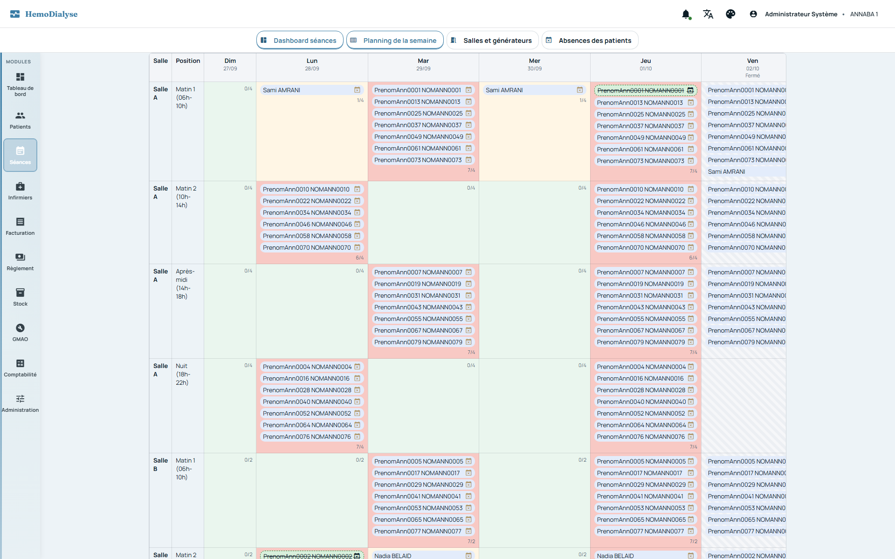
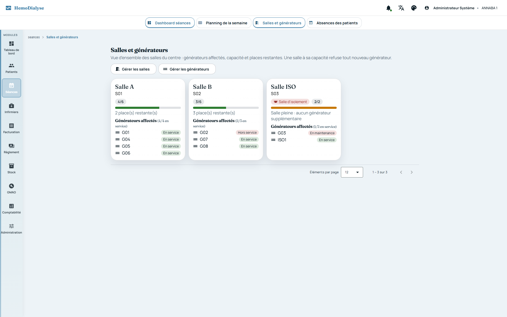
Préfixe
RG-PLN. Le système propose les meilleures places, refuse les placements incohérents, détecte les conflits du planning réel et replace automatiquement un patient devenu à risque infectieux. Sources :PlanificationAffectationService,PlanningSemaineService,PlanningParametres,PlanningParametresService,PlanningDonneesJdbcAdapter,SalleGenerateursService,CapaciteSalleRegle,CapaciteTheoriqueCalculator, contrôleursPlanning*RestController(historique :PlanificationAffectationService,PlanningSemaineService,PlanningDonneesJdbcAdapter,SalleGenerateursServiceetCapaciteSalleReglesont retirés par la slice P9, ADR 0069 : la capacité d'une salle est contrôlée parControlerLaCapaciteDeLaSalle, port publiéCapaciteDesSalles). Depuis la slice P5 (ADR 0059), le placement (propositions, contrôle d'une place, réaffectation, capacité, alerte du générateur) est servi par le contexteplanification(PlacesDuCentre,PropositionsControleur,SallesControleur) ;PlacementPatientService,PlanningAffectationQueryServiceetGenerateurIndisponibleServicesont retirés. Depuis la slice P6 (ADR 0060), le planning de la semaine est servi parSemaineControleur/SemaineDuPlanningdu contexte, la présence des patients (SejourDuPatient, port publiéPresenceDesPatients) est calculée une seule fois pour la semaine, les Absences et la file active de la Direction, et la capacité de la Direction lit ses séries, son ratio et sa file active par le port publiéBaseDeLaCapaciteTheorique.
Chaque centre paramètre : jours d'ouverture, salles d'isolement, ratio de sécurité « patients par infirmier » et nombre de « patients par poste et par série ». Valeurs par défaut : tous les jours ouverts, aucune salle d'isolement, ratio 4, 3 patients par poste et par série.
Au moins un jour d'ouverture est requis (« Au moins un jour d'ouverture est requis »).
Ratio patients par infirmier : entier de 1 à 20. Patients par poste et par série : entier de 1 à 10 (sinon refus 400).
Une salle d'isolement doit appartenir au centre (« Une salle d'isolement n'appartient pas à ce centre »).
Droits du paramétrage (corrigé le 26/10/2026 : la règle disait « tous les rôles de centre peuvent
lire », ce que le filtre de périmètre n'a jamais permis). Lecture : ADMIN et SECRETAIRE ; le MEDECIN seul et
l'INFIRMIER seul sont refusés (403 ROLE_SCOPE, seule la combinaison MEDECIN + INFIRMIER lit) ; le
SUPERADMIN est refusé aussi. Modification : ADMIN seul. Un refus de rôle est rendu avant toute lecture du corps.
Le paramétrage est un remplacement total : ratio ou patients par poste absents reviennent à leurs valeurs par défaut
(4 et 3), des salles d'isolement absentes effacent celles du centre. Les écritures d'un même centre passent l'une
après l'autre (verrou du centre : la seconde attend puis passe, la dernière écrite l'emporte) ; 409
PLANIFICATION_ECRITURE_CONCURRENTE seulement si l'attente dépasse 5 s ou si la même clé est créée entre-temps ; toute écriture est
tracée par le journal d'audit (action PLANNING_MODIFICATION, statut de la réponse compris). Valeur illisible
(JSON, jour inconnu, identifiant, texte pour un nombre) : 400 BAD_REQUEST, jamais 500.
La semaine de dialyse commence le dimanche et se termine le samedi.
Un patient occupe une place dès que sa fiche porte une salle, un créneau (position) et au moins un
jour de
dialyse. Les patients transférés, décédés, greffés ou guéris ne tiennent plus de place à partir de la date de
l'évènement (date_evenement_etat) : le patient transféré ou guéri garde sa place jusqu'à cette date incluse
(dernière séance), le patient décédé ou greffé la libère à cette date (dernier jour occupé = la veille). Sans date
d'évènement, la place est libérée immédiatement. Un séjour occasionnel ou vacancier occupe la place de la date
d'admission à la date de fin de séjour incluse (sans date de fin : non borné) ; l'état permanent n'a pas de limite
(règle détaillée RG-PAT-032). Une fois l'échéance dépassée, la fiche perd son affectation (RG-PAT-033). Un patient
en sommeil garde sa place (évite un double placement à son retour). Les propositions de placement restent
prudentes : une place dont la libération est future, ou dont le séjour n'a pas encore commencé, reste considérée comme
occupée.
Seuls les générateurs en service (statut GMAO EN_SERVICE, non supprimés) de type générateur de
dialyse,
rattachés à une salle du centre, sont disponibles. Un générateur en maintenance, en attente de pièce, hors service,
désactivé
ou réformé n'est jamais proposé.
Un patient est à risque infectieux si sa dernière sérologie conclusive d'au moins un des marqueurs AgHBs, anti-VHC, ARN du VHC ou VIH est positive (la dernière par marqueur, départagée par date de prélèvement puis date de saisie). Seul un résultat positif ou négatif est conclusif : un résultat douteux ou en cours plus récent n'efface plus un positif antérieur (le patient reste à risque, donc en salle d'isolement, tant que la dernière sérologie conclusive du marqueur est positive) ; un douteux ou un en cours seul ne crée pas de risque. KB-MED-106 CORRIGÉ le 2026-11-09 (lot L2, ADR 0113, RG-MED-049h ; RISQUE CLINIQUE, validation médicale attendue au plus tard le 2026-12-15) : avant, un douteux ou un en cours plus récent levait le risque.
Les fermetures datées sont les jours fériés et les jours de fermeture exceptionnelle du centre ; la proposition de placement signale les fermetures des 90 prochains jours tombant sur les jours proposés.
Un patient garde le même créneau, la même salle et le même générateur tous ses jours de dialyse.
Un générateur ne sert qu'un patient par jour et par créneau.
Une salle n'a de place pour un jour et un créneau que si l'un de ses générateurs en service est libre, après déduction des patients placés dans la salle sans générateur précis (ou sur un générateur hors service/d'une autre salle).
Seuls les jours d'ouverture du centre sont proposés ; des jours imposés fermés donnent l'alerte
JOURS_IMPOSES_FERMES et aucune proposition.
Isolement : un patient à risque n'est placé qu'en salle d'isolement et jamais sur un générateur servant un patient sans risque ; un patient sans risque n'est ni placé en salle d'isolement ni sur un générateur dédié à un patient à risque. Aucun générateur ne mélange jamais patients à risque et patients sans risque.
Patient à risque sans aucune salle d'isolement paramétrée : alerte AUCUNE_SALLE_ISOLEMENT, aucune
proposition.
Nombre de séances par semaine : de 1 à 7 (sinon 400) ; si des jours sont imposés, leur nombre fait foi.
Le système classe les propositions de 0 à 100. Le score combine : espacement des jours (poids 55 %), créneau souhaité (+20), salle souhaitée (+15), charge de la salle (+10 : répartition équilibrée) ; normalisé sur le maximum atteignable pour la demande (100 = placement idéal).
Espacement des jours : pénalité de 30 points par paire de jours consécutifs au-delà du minimum
inévitable (2n − 7), 8 points par jour d'écart au-delà de l'écart idéal (⌈7/n⌉) ; léger avantage (−3 aux autres
schémas) aux schémas usuels
lundi-mercredi-vendredi, mardi-jeudi-samedi, lundi-jeudi, mardi-vendredi, mercredi-samedi.
Chaque proposition est accompagnée de raisons lisibles : jours imposés libres, jours bien espacés (score ≥ 95), salle d'isolement, créneau préféré, salle préférée, salle peu chargée (≥ 70 % libre), et des fermetures datées à venir.
Au plus deux propositions par salle et créneau (variété), au plus 30 au total (5 par défaut côté réplacement automatique, nombre demandé côté écran) ; départage : score, nom de salle, ordre du créneau, code du générateur.
Pour modifier le placement d'un patient, son placement actuel est libéré dans le calcul. Le risque est déduit de ses sérologies, sauf si l'utilisateur force l'option « isolement ».
Aucune mise en cache : la réponse reflète l'instant (RG-TRV-041). Accès : ADMIN, SECRETAIRE,
MEDECIN,
INFIRMIER, sous réserve des périmètres restreints (RG-SEC-022/023).
La grille de disponibilité donne, pour chaque salle, créneau et jour, la capacité (générateurs en service) et l'occupation ; un jour de fermeture hebdomadaire, un jour férié ou une fermeture exceptionnelle a une capacité nulle (KB-PLN-72, ADR 0060).
Le planning d'une semaine liste, par salle, créneau et jour, les patients présents (nom, générateur, risque) et la capacité (nulle un jour fermé : fermeture hebdomadaire, férié ou fermeture exceptionnelle). Un patient en sommeil n'est pas affiché (KB-PLN-71, ADR 0060). Un patient dont la place est libérée à une date de la semaine (RG-PLN-010) n'apparaît plus à partir de cette date (de même qu'un séjour avant sa date d'admission) et porte l'indication « place libérée le jj/mm/aaaa » (infobulle de la grille et détail du patient). Les jours fermés (fermeture hebdomadaire, férié, fermeture exceptionnelle) sont signalés avec leur motif.
Conflits détectés automatiquement : GENERATEUR_DOUBLE (générateur réservé deux fois),
GENERATEUR_INDISPONIBLE
(générateur hors service ou d'une autre salle), SANS_GENERATEUR, ISOLEMENT_NON_RESPECTE (patient à risque hors
isolement, ou
patient sans risque en isolement dès qu'une salle d'isolement existe), SALLE_SURCHARGEE (plus de patients que de
générateurs),
GENERATEUR_MIXTE (mélange à risque / sans risque, quel que soit le jour).
Le planning compte les patients à replanifier : ceux qui sont placés sur un jour fermé de la semaine.
Le planning de la semaine est borné par construction (une semaine) : il n'est pas paginé (RG-TRV-022)
ni mis en
cache. Accès ADMIN, SECRETAIRE, MEDECIN, INFIRMIER ; le médecin « seul » peut le lire (RG-SEC-023).
L'interface explique la
notation « N/M » (N patients pour M générateur (s)).
Les absences de patients de la semaine, les séances validées par l'infirmier et le détail d'un patient sont affichés sur le planning (voir RG-ABS-0xx).
Le planning de la semaine est recalculé à chaque affichage à partir des jours et de la place actuels des patients (hors patients en sommeil, présence unique RG-PLN-046). Une séance réalisée (validée, signée ou facturée) que ce calcul ne montre plus — jours ou place du patient modifiés depuis — reste affichée dans la case où elle a eu lieu (place mémorisée à la validation, RG-SEA-049 ; à défaut, place actuelle du patient), avec le repère « réalisée hors du planning actuel ». Elle ne crée pas de conflit (RG-PLN-041) et ne compte pas parmi les patients à replanifier (RG-PLN-042). Une séance réalisée qu'aucune case ne peut accueillir (place non mémorisée, patient plus placé) est listée à part avec sa date. Les séances encore prévues plus tard dans la même semaine pour ce patient, et pas encore réalisées, portent l'alerte « séance déjà réalisée le jj/mm/aaaa » : le patient risque une séance en trop (par exemple séance du lundi validée puis jours passés au mercredi). Ces deux tolérances sont reproduites telles quelles en lecture (KB-PLN-73, 74) : une cible de déplacement temporaire inconnue du centre est ignorée en silence, la place figée n'est pas recontrôlée ; leur refus à l'écriture relève de la slice P8.
Une seule présence (ADR 0060) : un patient est présent un jour donné si sa place est tenue (admission commencée, dernier jour d'occupation non dépassé, RG-PLN-010) et s'il n'est pas en sommeil ; il est attendu s'il est présent et n'est pas parti ce jour-là (transféré ou guéri : aucune séance le jour du départ ; décédé ou greffé : place libérée la veille). Le planning de la semaine, les patients attendus des Absences et la file active de la Direction (patients présents au moins un jour de la période) utilisent ce seul calcul. Depuis la décision du 2026-11-02 (KB-PLN-50, KB-PLN-106), il est aussi celui de la présence des infirmiers : le nombre de patients d'une case, l'effectif requis, les alertes de sous-effectif et de sur-effectif (RG-PLN-050 et suivantes), la charge et « Mon planning » ne comptent plus un patient en sommeil (auparavant, la présence des infirmiers le comptait). Un patient en sommeil garde sa place pour le placement (RG-PLN-021) mais n'est ni affiché, ni attendu, ni compté : la grille peut donc montrer une case apparemment libre que le contrôle de placement refuse encore tant que le patient n'a pas quitté sa place.
Tout placement saisi sur une fiche (création ou modification) est vérifié côté serveur avec les
mêmes règles que
les propositions. Le premier manquement lève PLACEMENT_<règle>, parmi : INCOMPLET (salle, créneau, générateur ou
jours
manquants), SALLE_INCONNUE, CRENEAU_INCONNU, JOUR_FERME, ISOLEMENT_REQUIS, GENERATEUR_INCONNU,
GENERATEUR_INCOMPATIBLE,
GENERATEUR_OCCUPE, et (P5, décision du 27/10) ISOLEMENT_RESERVE (un patient sans risque infectieux n'est jamais
placé en salle d'isolement). Une place partielle est refusée avec PLACEMENT_INCOMPLET. Code PLACEMENT_PATIENT_INTROUVABLE : la fiche ou la sérologie vise un patient inconnu ou
d'un autre centre. Patient sorti (P7, décision du 28/10, KB-PLN-83) : une NOUVELLE place (place différente de celle de la
fiche) pour un patient dont le dernier jour de place est dépassé à l'état que la fiche aura une fois enregistrée (transféré,
guéri, décédé, greffé, séjour terminé, sortie sans date) est refusée en 422 PLACEMENT_PATIENT_SORTI ; la reprise dans la
même saisie (état PERMANENT), une fiche sans place et une place inchangée restent acceptées (l'enregistrement d'une fiche
qui tient encore une place échue la libère, RG-PLN-111). Le sommeil n'y change rien. Un refus répond 422 ; un verrou du centre non obtenu en 5 s répond 409
PLANIFICATION_ECRITURE_CONCURRENTE. Verrou (P5, ADR 0059) : le contrôle et l'écriture de la fiche se font dans
une même transaction sous le verrou du centre ; si le centre n'a pas encore de ligne de paramètres, elle est créée
avec ses valeurs par défaut (la perdante d'une création simultanée reçoit 409). Deux fiches ne peuvent donc plus
occuper le même générateur le même jour. Garde : le centre de la fiche doit être celui du jeton (403 sinon) et
seuls ADMIN, SECRETAIRE et INFIRMIER enregistrent une fiche (403 pour les autres profils, y compris sans rôle).
Les paramètres illisibles répondent 400. Le patient qui n'est pas à risque infectieux ne peut pas être placé en salle
d'isolement (PLACEMENT_ISOLEMENT_RESERVE, y compris sur un générateur d'isolement qu'un autre jour partage).
Exceptions : fiche sans aucun placement (acceptée) ; fiche dont le placement n'a pas changé (acceptée, une anomalie héritée ne bloque pas une autre modification).
Un patient placé en salle d'isolement est traité comme à risque pour la compatibilité du générateur.
Réaffectation automatique : quand la sérologie d'un patient placé devient positive, il est
replacé
automatiquement en salle d'isolement (mêmes jours, créneau conservé si possible, meilleure proposition) et le centre
est notifié (patient replacé en isolement). Sans place d'isolement, le patient reste en place et
l'administration est alertée (isolement impossible, une seule fois par patient et par jour du centre) pour
replanifier. Issues : aucun risque, non placé, déjà conforme, déplacé, à replanifier, retour proposé. P5 (ADR 0059) :
l'enregistrement de la sérologie et la réaffectation se font dans une seule transaction (l'un échoue avec l'autre) ;
la sérologie d'un patient inconnu ou d'un autre centre est refusée (422 PLACEMENT_PATIENT_INTROUVABLE) ; un patient
redevenu sans risque encore en salle d'isolement n'est jamais déplacé : une alerte
RETOUR_SALLE_ORDINAIRE_PROPOSE propose son retour en salle ordinaire à l'administration. L'enregistrement d'une
sérologie est audité SEROLOGIE_ENREGISTREE / SEROLOGIE_MODIFIEE / SEROLOGIE_SUPPRIMEE.
Alerte « générateur indisponible » : quand un générateur de dialyse quitte l'état « en service »
(panne, maintenance, état constaté par une intervention, réforme), une alerte est déposée pour l'administration du
centre, avec le nom du générateur et les cinq premiers patients placés dessus (ordre nom, prénom, affichés « nom
prénom ») et leur nombre total. Une seule alerte par générateur et par jour du centre (une panne puis une réforme
le même jour = une alerte), même sans patient. Aucun patient n'est déplacé automatiquement ; le déplacement se
décide à l'optimisation. Source : événement publié gmao.v1 GenerateurDevenuIndisponible.
Vue d'ensemble des salles (générateurs affectés, capacité, places restantes) : paginée, limitée au
centre, non
mise en cache, réservée à ADMIN et SECRETAIRE. page et size négatifs ou illisibles répondent 400 ; size est
plafonnée à 100.
Capacité d'une salle : le nombre de générateurs affectés ne dépasse jamais la capacité fixée
(SALLE_CAPACITE_DEPASSEE) ;
sans capacité, aucune limite. Le contrôle s'applique à l'affectation d'un générateur à une salle
(création/modification d'un équipement
GMAO) en ignorant le générateur déjà présent dans la salle.
Une salle d'un autre centre est introuvable (aucune limite appliquée, jamais d'accès inter-centres).
Générateurs de secours : 1 pour 8 générateurs, arrondi à l'entier supérieur (16 → 2 ; 17 → 3 ; 0 → 0).
Postes actifs = générateurs en service installés au plus tard à la fin de la période (ni en maintenance, ni hors service, ni réformés : comme le planning de la semaine, KB-PLN-76, ADR 0060) − générateurs de secours.
Capacité théorique (file active maximale) = postes actifs × séries par jour × patients par poste et par série (paramétrable, défaut 3). Exemple : 16 générateurs, 2 séries → 2 secours, 14 postes, 14 × 2 × 3 = 84 patients.
Niveau d'occupation : SANS_CAPACITE (aucune capacité calculable), MARGE (< 90 %), PROCHE (≥
90 %),
ATTEINTE (file active ≥ capacité). Taux = file active / capacité en % (une décimale).
Consolidation de plusieurs centres : générateurs, postes, capacités et files actives s'additionnent ;
séries et
patients par poste n'ont pas de sens consolidé (valent 0). La restitution à la direction est détaillée par centre
(voir RG-DIR). Masquage par centre (comme les Absences, KB-PLN-75, ADR 0060) : un centre dont la file active est de
1 à 4 patients est masqué (file, taux, capacité, niveau et « atteinte » nuls : ils borneraient la file ; les équipements
restent publiés) et exclu du total consolidé (le total ne porte que sur les centres publiés) ; le nombre de centres masqués est
restitué (centresMasques) et affiché sur l'écran de capacité. Une file de 0 n'est pas masquée. La file active est
celle de la présence unique (RG-PLN-046), hors sommeil.
Sources :
domain/planning/optimisation(modèle, ports,IndicateursOptimisationService,EmpreinteOptimisation,VerificationDeplacementsService,SchemasJoursService,MaintenanceGenerateursService,MotifProposition),infrastructure/optimisation/timefold(TimefoldOptimiseurAdapter,PatientsConstraintProvider,InfirmiersConstraintProvider,CompletConstraintProvider,MaintenanceConstraintProvider,PoidsOptimisation),OptimisationPlanningService,OptimisationApplicationService,PreferencesPlanningService,ReplanificationAutomatiqueService,OptimisationDonneesJdbcAdapter,OptimisationRunJdbcAdapter,PreferencePatientJdbcAdapter,ProfilInfirmierJdbcAdapter,ReglagesOptimisationJdbcAdapter,DeplacementTemporaireJdbcAdapter,OptimisationPlanningRecovery,ReplanificationAutomatiqueScheduler,PlanningOptimisationRestController,PlanningPreferencesRestController,CalendrierPropositionService,CalendrierPropositionJdbcAdapter,PlanningOptimiseReportService.
L'optimisation propose un planning qui consomme le moins de ressources possible (générateurs,
salles ouvertes, vacations d'infirmiers) sans enfreindre les règles de la planification. Cinq périmètres :
PATIENTS (replace les patients : salle, créneau, générateur, et choisit les jours de ceux qui le demandent,
RG-PLN-094), ROULEMENT (conçoit le roulement hebdomadaire des infirmiers face aux placements actuels),
COUVERTURE (comble les cases en sous-effectif sur 1 à 8 semaines avec des remplaçants), COMPLET (patients et
roulement dans un seul modèle, RG-PLN-095) et MAINTENANCE (déplacements temporaires des séances dont le
générateur est indisponible, RG-PLN-096). Une proposition n'est jamais appliquée automatiquement, y compris
celles de la replanification nocturne (RG-PLN-100).
Le calcul est asynchrone : le lancement répond immédiatement (202) avec une exécution
EN_COURS, suivie ensuite (avancement et score de la meilleure solution). Un seul calcul à la fois par centre,
garanti par le verrou du centre en base, y compris avec plusieurs instances du serveur : un second lancement répond
409 OPTIMISATION_DEJA_EN_COURS (jamais PLANIFICATION_ECRITURE_CONCURRENTE quand le verrou est tenu par un autre
lancement). Les 20 dernières exécutions de chaque centre sont conservées (historique). Reprise : chaque instance
signe ses calculs en cours (battement de cœur toutes les 10 s) ; un calcul sans signe de vie depuis 60 s passe en échec
(« calcul interrompu par l'arrêt du serveur »), jamais celui d'une instance vivante ; un résultat tardif ne remplace
jamais un état final (mise à jour conditionnelle). Après un arrêt brutal, le centre reste donc « en cours » 70 s au plus.
Nombre de calculs en parallèle : PLANNING_OPTIMISATION_WORKERS (défaut 2).
Paramètres et bornes (sinon refus 400) : début de l'horizon (ramené au dimanche de sa semaine),
nombre de semaines de l'horizon 1 à 8 (défaut du formulaire : 4 ; huit semaines couvrent une absence déclarée
environ deux mois à l'avance), pour tous les périmètres : COUVERTURE et MAINTENANCE calculent chaque
semaine (dates réelles) ; les autres périmètres (PATIENTS, ROULEMENT, COMPLET) calculent une semaine type,
que le planning proposé projette sur chaque semaine de l'horizon (fermetures, jours fériés, absences et
remplaçants datés ; vacations proposées reconduites à l'identique), durée maximale de calcul
par phase 2 à 300
secondes (défaut 20), stabilité 0 à 10 (défaut 5 : 0 = tout peut changer, 10 = changer le moins possible),
objectif des infirmiers EQUITE (défaut) ou ECONOMIE, vacations maximales par jour 1 à 3 (défaut 2) et par semaine
1 à 14 (défaut 6). Les contraintes de personnel (durée d'une vacation, temps plein, repos hebdomadaire) viennent des
réglages du centre (RG-PLN-098), lus à chaque lancement.
Données lues, toutes bornées au centre : générateurs en service (RG-PLN-011), patients actifs placés et patients en attente de place (jours prescrits mais salle ou créneau manquant), à l'exclusion des patients sortis ou dont le séjour est terminé (RG-PLN-010), ainsi que les patients sans jours dont la préférence demande de choisir les jours (RG-PLN-093) ; infirmiers actifs, profils (RG-PLN-097), roulement, absences et remplacements de l'horizon ; préférences et transporteurs (aller, retour) des patients ; compétences demandées (RG-PLN-097) ; indisponibilités des générateurs et déplacements temporaires déjà enregistrés (RG-PLN-096). Les jours de dialyse d'un patient ne sont modifiés que si sa préférence le demande (RG-PLN-094). Un patient dont aucun jour n'est ouvert (ou, jours à choisir, sans schéma possible) garde sa place. Hors couverture et maintenance, le planning est évalué sur la semaine type (sans fermeture datée, absence ni remplacement) : on compare des roulements, pas des aléas.
Placement des patients, règles dures : un générateur ne sert qu'un patient par jour et par
créneau (RG-PLN-021) ; un patient à risque n'est placé qu'en salle d'isolement et un patient sans risque jamais
(RG-PLN-024). Un patient garde la même place tous ses jours (RG-PLN-020). Un patient qu'aucune place ne peut accueillir
reste « non placé » avec sa cause : AUCUNE_PLACE, ISOLEMENT_IMPOSSIBLE (aucune salle d'isolement) ou JOURS_FERMES.
Placement des patients, objectifs souples (poids relatifs) : vacations d'infirmiers exigées par le
ratio (100 par vacation, une par tranche de patients par infirmier, case par case), salles ouvertes (30 par case salle
× créneau × jour), générateurs utilisés (10), réserve de générateurs de secours à garder libre à chaque créneau et
chaque jour (50 par générateur manquant, RG-PLN-070), stabilité : changer un patient de créneau coûte
3 × stabilité × 6, de salle 2 × stabilité × 6, de générateur seul 1 × stabilité × 6 ; préférences et jours
choisis : RG-PLN-094. Placer un patient prime sur tous les objectifs souples. La recherche part des places actuelles
(« ne rien changer » est la solution de départ).
Infirmiers, règles dures : jamais deux salles au même créneau le même jour (RG-INF-022), au plus N vacations par jour (RG-PLN-082). Un infirmier absent ce jour-là, non habilité pour une salle d'isolement ou déjà prévu sur le créneau n'est jamais candidat. Une vacation sans infirmier est signalée (« non pourvue ») et prime sur les objectifs souples.
Infirmiers, objectifs souples : dépassement hebdomadaire (500 par vacation au-delà du maximum),
équité (somme des carrés des vacations) ou, avec l'objectif ECONOMIE, nombre d'infirmiers mobilisés (300 par
infirmier), double vacation dans la journée (40), changement de salle dans la semaine (30), connaissance de la salle
et du créneau d'après le roulement actuel (10 par habitude manquante), stabilité du roulement (8 × stabilité, hors
couverture), au moins un infirmier qui n'est pas aide-soignant par case occupée (200), repos hebdomadaire, quota
d'heures et compétences (RG-PLN-099).
Couverture : les infirmiers déjà prévus (roulement moins absences, plus remplacements en place) sont
conservés tels quels ; seules les vacations manquantes sont à pourvoir, par des infirmiers disponibles sur le créneau.
L'application crée des remplacements (RG-INF-052) ; les vacations déjà tenues sont ignorées. Le remplacé est relié :
c'est l'infirmier absent ce jour-là, normalement prévu sur la case au roulement, pas encore remplacé par une vacation
précédente de la même application, par ordre d'identifiant ; à défaut, aucun. Le remplaçant est jugé éligible (actif, présent,
libre sur le créneau, habilité en salle d'isolement) : sinon toute l'application est refusée,
422 REMPLACEMENT_INELIGIBLE. Règle portée par le domaine (CouvertureDesAbsences).
Chaque proposition comporte les indicateurs avant / après : générateurs utilisés, salles ouvertes, vacations requises, places d'infirmier inutilisées, patients non placés, vacations non pourvues, infirmiers mobilisés, écart de charge, dépassements hebdomadaires. Ils sont recalculés par le domaine à partir des placements et vacations proposés, indépendamment du solveur ; la proposition liste aussi les déplacements (de → vers), les patients non placés, les vacations planifiées (avec l'indication « déjà prévue ») et les vacations non pourvues.
Arrêt anticipé : un calcul en cours peut être arrêté ; la meilleure solution trouvée est conservée et les phases restantes ne reçoivent que 2 secondes. La graine aléatoire du moteur est fixe, mais la limite de calcul étant un temps, deux exécutions identiques peuvent différer légèrement.
Application d'une proposition (ADMIN seul), tout ou rien, dans UNE transaction, sous le verrou du
centre puis celui des fiches des infirmiers concernés (remplaçants et remplacés) : l'exécution doit exister dans le
centre (404 OPTIMISATION_INTROUVABLE), être terminée avec un résultat (OPTIMISATION_NON_APPLICABLE, 422) et ne pas être
déjà appliquée (409 OPTIMISATION_DEJA_APPLIQUEE). Un roulement qui mettrait un infirmier dans deux salles au même
créneau est refusé (422 AFFECTATION_CHEVAUCHEMENT). Après l'application, les infirmiers concernés sont
prévenus (RG-PLN-112). Les transitions d'état sont gardées : une exécution terminée ne peut
plus être repassée en cours, ni marquée échouée ou progressée (OPTIMISATION_TRANSITION_INTERDITE). Le centre ne doit
pas avoir changé depuis le calcul : l' empreinte
(SHA-256 de tout ce que le calcul a lu : jours, places, patients à placer, générateurs, interventions, salles, créneaux,
personnel, absences, roulement, remplacements, réglages) est recalculée sous verrou, sinon 409 OPTIMISATION_PERIMEE et il
faut relancer (une proposition calculée avant la montée de version est périmée). Chaque nouvelle place est
revérifiée avec les règles de RG-PLN-050 face à l'état final des autres patients (OPTIMISATION_PLACEMENT_<règle>).
Effets : PATIENTS déplace les patients et enregistre sur leur fiche les jours choisis par l'optimisation ;
ROULEMENT remplace le roulement des infirmiers actifs (affectations identiques conservées, autres modifiées, créées
ou supprimées) ; COUVERTURE crée les remplacements ; COMPLET fait les deux premiers ; MAINTENANCE enregistre
les déplacements temporaires (RG-PLN-096) sans toucher aux places habituelles — une cible de déplacement incomplète
ou inconnue du centre est refusée (DEPLACEMENT_TEMPORAIRE_CIBLE_INCOHERENTE), rien n'est écrit.
Accès : lancer, consulter, arrêter et lister (ADMIN, SECRETAIRE) ; appliquer (ADMIN). Interdit
à l'infirmier « seul » et au médecin « seul » (RG-SEC-022/023). Aucune mise en cache (RG-TRV-041). L'historique est
paginé (page, size ; page négative : 400 ; size plafonnée à 100, la taille effective est renvoyée) et ne charge pas
le détail des propositions ; une exécution d'un autre centre est introuvable (404 OPTIMISATION_INTROUVABLE). Une entrée
illisible (corps vide ou tronqué, périmètre ou objectif inconnu, nombre ou date mal formés) répond 400 BAD_REQUEST. L'accès
est jugé avant la lecture du corps : un profil sans droit reçoit 403, jamais 400.
Préférences de planification d'un patient (/api/v1/planning/preferences/patients, ADMIN,
SECRETAIRE, liste paginée des patients non sortis du centre, sans cache) : créneau préféré (facultatif, du centre,
sinon PREFERENCE_CRENEAU_INCONNU) et, pour un nouveau patient ou des jours à revoir, « jours choisis par
l'optimisation » avec un nombre de séances hebdomadaires de 1 à 7 (requis dans ce cas). Un patient inconnu ou d'un
autre centre est introuvable (PREFERENCE_PATIENT_INTROUVABLE) ; la préférence d'un patient sorti (transféré,
décédé, greffé, guéri) est refusée en 422 PREFERENCE_PATIENT_SORTI (corrigé le 26/10/2026). Une préférence ne modifie
rien par elle-même : elle n'est prise en compte qu'au prochain calcul. Listes paginées : page ou taille négative =
400 BAD_REQUEST, taille plafonnée à 100 (la taille effective est renvoyée) ; champ obligatoire absent = 400.
Jours choisis et préférences dans le placement : les schémas de jours candidats d'un patient aux
jours à choisir sont ceux du bon nombre de séances, parmi les jours d'ouverture, dont l'espacement (même note que
l'aide au placement, RG-PLN-031) est à au plus 15 points du meilleur (8 schémas au plus) ; ses jours actuels restent
candidats s'ils ont le bon nombre de séances. Objectifs souples : écart d'espacement au meilleur schéma (2 par
point), chaque jour actuel abandonné (20 × stabilité, au moins 20), créneau préféré non respecté (40), deux patients
partageant un transporteur qui dialysent un même jour à des créneaux différents (15 par jour commun). Un patient dont
seuls les jours changent figure parmi les déplacements avec ses nouveaux jours ; les jours sont écrits sur la fiche
avant la nouvelle place, à l'application.
Modèle conjoint (COMPLET) : patients et vacations sont résolus ensemble sur la semaine type.
Chaque case ouverte (salle × créneau × jour) reçoit autant de vacations potentielles que sa salle peut exiger
d'infirmiers (générateurs de la salle rapportés au ratio) ; le besoin d'une case suit, pendant le calcul, les patients
qui y sont placés. Règle moyenne : chaque vacation exigée est tenue (comptée avec les patients non placés). Objectifs
souples : toutes les contraintes du placement (RG-PLN-085, 094) et des infirmiers (RG-PLN-087, 099), une vacation
tenue au-delà du besoin de sa case (50), au moins un infirmier qui n'est pas aide-soignant par case servie (200) et
les compétences demandées par les patients de la case. Le calcul part des places actuelles et du roulement actuel. La
proposition ne garde que les vacations utiles face aux placements retenus (RG-PLN-091) et signale les manques.
Maintenance des générateurs (MAINTENANCE, 1 à 8 semaines datées) : un générateur est
indisponible pendant une intervention GMAO PLANIFIEE ou EN_COURS (non supprimée) qui chevauche l'horizon ; sans
date de fin, une intervention planifiée immobilise son jour de début, une intervention en cours tout l'horizon. Sont
touchées les séances datées (jours d'ouverture hors fermetures, séjour en cours) dont la place effective — la place
habituelle, ou le déplacement temporaire déjà enregistré pour cette date — est sur un générateur indisponible. Places
possibles d'une séance : générateurs disponibles ce jour-là, de la même catégorie (isolement ou non, RG-PLN-024),
qu'aucun autre patient n'occupe à ce créneau ce jour-là. Règle dure : deux séances déplacées ne prennent jamais la même
place le même jour ; règle moyenne : chaque séance trouve une place, sinon elle est listée « sans solution » (à
organiser) ; objectifs souples : garder le créneau (100), puis la salle (30). L'application enregistre un
déplacement temporaire par séance (patient, date, salle, créneau, générateur, motif), qui remplace un déplacement
existant du même patient à la même date ; la place habituelle ne change pas. Le planning de la semaine affiche le
patient dans sa case temporaire à cette date (repère « déplacé temporairement ») et en tient compte pour les conflits
(RG-PLN-040, RG-PLN-041).
Profil de planification d'un infirmier (/api/v1/planning/preferences/infirmiers, ADMIN,
SECRETAIRE, liste paginée des infirmiers actifs du centre) : taux d'activité de 10 à 100 % (défaut 100 : temps
plein) et compétences particulières PEDIATRIE, CATHETER, toujours restituées dans cet ordre. Un infirmier inconnu ou
d'un autre centre est introuvable (PROFIL_INFIRMIER_INTROUVABLE) ; le profil d'un infirmier inactif est refusé en
422 PROFIL_INFIRMIER_INACTIF (corrigé le 26/10/2026). Quota d'heures hebdomadaire = heures d'un temps plein (RG-PLN-098) × taux, arrondi à
l'heure. Compétences demandées par un patient : PEDIATRIE s'il a moins de 18 ans au début de l'horizon, CATHETER
s'il a un abord vasculaire actif de type KT_TUNNELISE ou KT_AIGU.
Réglages de planification du centre (/api/v1/planning/preferences/reglages ; lecture ADMIN,
SECRETAIRE, modification ADMIN) : durée d'une vacation 1 à 12 h (défaut 5), heures hebdomadaires d'un temps plein
10 à 60 (défaut 40), jours de repos minimum par semaine 0 à 6 (défaut 1), replanification automatique nocturne
(défaut non). Hors bornes ou champ absent : refus 400 BAD_REQUEST (c'était 500 avant le 26/10/2026). Un centre sans réglage enregistré a les valeurs par défaut.
Contraintes de personnel (objectifs souples, roulement, couverture et modèle conjoint) : chaque jour
travaillé au-delà de 7 − repos minimum dans une semaine (300), chaque heure au-delà du quota de l'infirmier, les
vacations comptant la durée réglée (100 par heure, soit 500 pour une vacation de 5 h), chaque compétence demandée par
un patient d'une case qu'aucun infirmier de la case n'a (250).
Couverture d'une absence sur sa période. L'alerte d'absence d'un infirmier
(INFIRMIER_ABSENCE_ENREGISTREE, INFIRMIER_ABSENCE_DECLAREE) ouvre l'optimisation en COUVERTURE avec le début
(aujourd'hui, ou le début de l'absence si elle est à venir) et le nombre de semaines nécessaires pour atteindre
sa fin (8 au plus) : le calcul ne se limite plus à la semaine en cours. Le médecin, qui ne lance pas l'optimisation,
est conduit au planning de la semaine de l'absence. Sources : ParametresOptimisation.semainesJusqua,
horizonPourAbsence (frontend).
Parcours d'une proposition semaine par semaine. Le planning proposé affiche « Semaine n sur N »
et se parcourt avec les flèches sur toute la période de l'horizon. Une proposition d'une seule semaine l'indique et
invite à relancer le calcul avec plus de semaines. Sources : CalendrierPropositionService,
PlanningProposeComponent (frontend).
Infirmiers absents dans une proposition « semaine type ». Un calcul PATIENTS, ROULEMENT ou
COMPLET ignore les absences datées. Dans le planning proposé, un infirmier absent un jour donné n'est jamais
présenté comme présent ce jour-là, dans aucune case : il n'est listé qu'en absent (barré), sa vacation reste
« à pourvoir » et le manque d'infirmier est signalé. L'écran le dit et propose « Chercher des remplaçants » :
la couverture est préremplie sur la période de la proposition (8 semaines au plus) ; c'est elle qui propose les
remplaçants (RG-PLN-105). Sources : CalendrierPropositionService.infirmiers, PlanningProposeComponent.
Libération des places échues, de nuit (contexte Planification, slice P7, ADR 0061). Chaque nuit à
04:00, fuseau Africa/Algiers (app.planification.fuseau-par-defaut), le job libère, pour chaque centre ACTIF
(COALESCE(centers.actif, TRUE) : un centre dont actif est NULL est actif, comme pour les Absences), les places dont le dernier jour d'occupation (RG-PAT-032) est dépassé au jour du centre :
salle,
créneau, générateur et jours de dialyse sont effacés, seules ces colonnes de la fiche sont écrites. Reproduit du
legacy : TRANSFERE et GUERRI sont libérés le lendemain de la date d'évènement, DECEDE et GREFFE le jour même
de la
date (dernier jour occupé = la veille), un état de sortie sans date tout de suite (l'API refuse déjà cette saisie,
422),
un séjour limité après sa date de fin (sans date de fin : jamais), PERMANENT, un état non renseigné, inconnu ou en
minuscules jamais ; le sommeil n'empêche pas la libération d'un sorti (voulu, décision du 28/10). Un patient sans salle,
créneau ni
générateur est ignoré ; une place partielle est libérée avec un mouvement partiel. Un centre inactif, ou sans ligne
centers, n'est pas libéré (écart décidé le 27/10 ; contrôle SELECT en recette). Le job est idempotent.
Sources :
LibererLesPlacesEchues, PlaceTenue, PlacesTenuesJdbc, LiberationDesPlacesDe0400.
Un patient, une transaction. Chaque patient est libéré dans sa propre transaction, sous le verrou
des places du centre (RG-PLN-050, ordre global des verrous : centre, puis ligne de la fiche) : la fiche est relue sous
verrou et jugée sur son état réel (une fiche enregistrée au même instant n'est jamais écrasée). Un patient en échec
(écriture du mouvement refusée, verrou du centre non obtenu en 5 s) est journalisé et signalé à l'administrateur
par
la notification LIBERATION_PLACES_EN_ECHEC (une seule par centre et par jour du centre, nombre de patients
concernés) ;
les autres patients du centre et les autres centres sont libérés ; la nuit suivante réessaie. Sources :
LibererUnePlace, NotificationsDeLaLiberationLegacy.
Mouvement PLACE_LIBEREE. Écrit dans la même transaction que la libération, avant
l'effacement : automatique, daté du jour réel de la libération (jour du centre), état conservé (précédent et
nouveau), place quittée figée (salle, créneau, générateur, jours). Jamais en doublon : si le dernier mouvement du
patient
est déjà cette libération (même état, même place), il n'en est pas écrit un second (une fiche renvoyée avec la place
d'un
sorti est libérée sans nouveau mouvement). Aucune notification, aucune diffusion pour une libération normale ;
l'évènement
d'intégration PlaceLiberee v1 est différé (Patient et couverture reste legacy, ADR 0052). Les caches de la fiche, de
la
liste et des comptages sont évincés après validation. Sources : MouvementsDesPatientsJdbc,
CachesDesPatientsLegacy.
Ordre de nuit. La détection des absences (02:30, Africa/Algiers) précède TOUJOURS la
libération des places (04:00, Africa/Algiers) : la détection a besoin des jours de dialyse de la veille ; si la
libération passait avant, un décédé du jour et un séjour fini la veille ne seraient plus « attendus » (leurs jours
seraient
effacés) et une absence en échec reprise les nuits suivantes ne les retrouverait pas. Un test de non-régression
(OrdreDeNuitDeLaLiberationTest) vérifie les horaires et fuseaux. Une seule clé de configuration,
app.planification.fuseau-par-defaut (Africa/Algiers par défaut), règle les trois jobs de nuit (détection des absences 02:30,
replanification automatique 02:30, libération 04:00) : changer le fuseau les déplace ensemble ; la clé app.absences.fuseau-par-defaut
n'est plus qu'une surcharge facultative de la détection des absences. À l' enregistrement d'une fiche
(RG-PAT-033),
l'échéance est jugée à la veille (la veille reste conservée) mais le mouvement, comme celui du changement d'état de la même
fiche, est daté du jour réel du centre ; le verrou du centre est pris AVANT l'écriture de la ligne du patient (ordre global des
verrous : centre, puis fiche, comme la nuit) quand la fiche tient une place échue, jamais sinon (409 si non obtenu en 5 s). Sources :
LibererLaPlaceDeLaFiche, LiberationALEnregistrementDeLaFiche.
Replanification automatique nocturne (ReplanificationAutomatiqueScheduler, 02:30 chaque
nuit, fuseau Africa/Algiers depuis P7 : RG-PLN-111), pour les centres ACTIFS qui l'ont activée, « aujourd'hui » étant le jour de chaque centre : enchaîne, chacun démarrant à la fin du précédent, la couverture (2
semaines au moins, étendue jusqu'à la fin de la dernière absence d'infirmier à venir, 8 semaines au plus : une
absence planifiée dans plusieurs semaines est couverte dès maintenant), la maintenance (2 semaines) à partir de la
semaine en cours, puis le placement des patients (semaine type, projetée sur les deux semaines à partir de la
semaine suivante), 30 secondes par phase, au nom de SYSTEME. Un calcul déjà en cours dans le centre interrompt
l'enchaînement
pour la nuit ; un centre en erreur n'empêche pas les autres. Une proposition terminée est notifiée aux administrateurs
(OPTIMISATION_PROPOSITION) si elle apporte quelque chose : vacations à pourvoir ou non pourvues (motif
SOUS_EFFECTIF), séances à déplacer ou sans solution (MAINTENANCE), vacations requises économisées ou patients en
attente placés (GAIN). La notification est enregistrée au journal du centre : l'administrateur la retrouve à sa
prochaine connexion, même s'il n'était pas connecté à 02:30 (RG-NOT-005), avec un lien direct vers la proposition.
Rien
n'est appliqué d'office : l'administrateur consulte la proposition dans l'historique et l'applique (RG-PLN-091). Un
bilan est envoyé à l'administrateur à chaque exécution (REPLANIFICATION_NOCTURNE, enregistré au journal),
même quand rien n'est proposé : « propositions à examiner » (avec leur nombre), « aucun changement à proposer »,
« échec » (nombre de calculs qui n'ont pas abouti ; un calcul impossible à lancer est compté et les suivants sont
tout de même tentés) ou « reportée » (un calcul était déjà en cours). Sans ce bilan, une nuit sans proposition ne
laissait aucune trace visible. Une notification impossible à envoyer n'interrompt jamais l'enchaînement.
Planning calendaire de la proposition (GET /api/v1/planning/optimisations/{id}/calendrier,
ADMIN, SECRETAIRE) : à la fin du calcul, la proposition est figée en un calendrier semaine par semaine sur
l'horizon (CalendrierPropositionService, table planification_calendrier_case, rattachée au centre et à
l'exécution, purgée avec elle). Une ligne par salle et créneau ayant de l'activité ; une colonne par jour (dimanche à
samedi). Chaque case indique les patients avec leur générateur (repères : patient à risque, déplacé par la
proposition, place temporaire), les infirmiers (prévu, remplaçant, absent, nouveau), le nombre d'infirmiers
affectés (absents exclus), le manque éventuel par rapport à l'effectif requis (ratio de la salle) et le
sur-effectif (infirmiers prévus au-delà de l'effectif requis, y compris
dans
une salle que la proposition vide, RG-INF-047), à l'écran comme à l'impression ; un jour fermé est signalé avec son
motif. Les infirmiers viennent des vacations
de
la proposition quand son périmètre planifie le personnel (ROULEMENT, COUVERTURE, COMPLET), sinon du roulement
actuel. Le calendrier reflète l'état du centre au lancement : il ne change pas si le centre évolue ensuite. Une
exécution sans calendrier (calcul antérieur à cette fonction, échec) est refusée par OPTIMISATION_CALENDRIER_ABSENT
(relancer le calcul) ; l'exécution d'un autre centre est introuvable (OPTIMISATION_INTROUVABLE). Impression
(GET /api/v1/planning/optimisations/{id}/impression) : modèle de document « Planning proposé par
l'optimisation » (planning_optimise, §11.1 des règles du dépôt), A4 paysage, une page par semaine, identité de la
société
et du centre, indicateurs avant/après en en-tête. Isolation par centre : chaque exécution, historique, calendrier,
impression et application est borné au centre de la session ; seul le nombre de calculs en parallèle
(PLANNING_OPTIMISATION_WORKERS) est partagé, jamais les données.
Suppression d'une exécution (DELETE /api/v1/planning/optimisations/{id}, ADMIN) : une
exécution terminée, en échec ou déjà appliquée peut être supprimée de l'historique du centre, avec son planning
calendaire. La suppression n'annule jamais une proposition déjà appliquée (le planning du centre ne change pas). Un
calcul encore en cours est refusé par OPTIMISATION_SUPPRESSION_EN_COURS (l'arrêter d'abord) ; l'exécution d'un autre
centre est introuvable (404 OPTIMISATION_INTROUVABLE). La suppression prend le verrou du centre (exclusion avec une
application ou un lancement).
Infirmiers prévenus à l'application d'une proposition (ADR 0068). Quand l'application change le roulement
d'un infirmier (INFIRMIER_ROULEMENT_MODIFIE) ou l'affecte comme remplaçant (INFIRMIER_REMPLACEMENT_AFFECTE), l'alerte est
adressée au compte lié à sa fiche et à l'administration (ADMIN) du centre, JAMAIS aux autres infirmiers ; sans compte
lié, à l'administration seule. Une seule alerte par exécution, infirmier et case (identifiant déterministe : un rejeu ne
duplique pas). Le contenu (infirmier, date, salle, créneau) se lit au journal des alertes, filtré par compte ; le canal temps
réel du centre ne porte que la cible. SEANCES_DEPLACEES (médecin, secrétariat) part après le commit de l'application.
Sources : AlertesDeLOptimisationLegacy, NotificationService, NotificationJournalJdbcAdapter.
Infirmiers sur le planning de la semaine et accès du médecin. Le planning de la semaine
(RG-PLN-043)
affiche, dans chaque case salle × créneau × jour, en plus des patients et de leur générateur, les infirmiers de la
case d'après la présence réelle de la semaine (/api/v1/infirmiers/presence/semaine, RG-INF-044) : prévus au
roulement,
remplaçants, absents (barrés, avec le type d'absence), le nombre d'infirmiers affectés (et non le nombre requis,
qui n'apparaît que dans le manque) et, en rouge, le
manque
ou, au contraire, le sur-effectif (infirmiers en trop, RG-INF-047).
La légende explique chaque repère. Si la présence ne peut pas être chargée, le planning des patients reste affiché
sans les infirmiers. Le médecin « seul » a le même planning que les autres profils, avec les deux vues semaine
et
jour : c'est son accueil (/medecin, menu Planning), le même composant que le planning des séances ; il y lit
patients, générateurs, infirmiers et légende, sans accès aux autres écrans de planification
(optimisation, salles et générateurs). Dans le planning proposé par l'optimisation (RG-PLN-101), au survol d'un
patient déplacé s'affiche sa place d'avant (salle · créneau · générateur), et pour une place temporaire sa place
habituelle.
Planning en temps réel et lecture seule du médecin. Le planning de la semaine se met à jour
seul
pour tous ceux qui ont le droit de le voir (administrateur, secrétariat, médecin) : le scan du QR code d'un patient ou
la validation d'une séance (SEANCE_VALIDATED, SEANCE_CREATED), la suppression d'une séance, l'absence d'un patient
ou d'un infirmier, un déplacement de patients ou de séances, un placement modifié ou un générateur devenu indisponible
rechargent la semaine affichée, sans action de l'utilisateur (de même la détection nocturne des absences,
ABSENCES_A_QUALIFIER) ; seuls les évènements du centre actif comptent (RG-NOT-001). Le planning de l'infirmier («
Mon planning ») suit la même règle : une absence de patient déclarée, même le jour J, y barre aussitôt le
patient (couleur selon le statut de l'absence) et une séance validée y marque un soleil, comme sur le planning des
séances. Un seul calcul de présence (P9, KB-PLN-106) : un patient en sommeil (comme un patient sorti ou pas encore
admis) n'apparaît plus dans « Mon planning » : ni parmi les occupants des cases, ni dans le nombre patients de la case, ni
dans l'effectif requis (décision du 2026-11-02, KB-PLN-50 et KB-PLN-106). Le calcul est le même que celui de la semaine du
centre et des alertes de sous-effectif et de sur-effectif de la présence (RG-PLN-046) ; auparavant, la présence des
infirmiers comptait le patient en sommeil (un seul de ces trois calculs divergeait).
Pour le médecin, le planning est en lecture seule : il ne peut pas déclarer l'absence d'un
patient (RG-ABS-015) ; le détail d'un patient reste consultable, avec les liens vers sa fiche et son dossier.
Source : PlanningSemaineComponent, evenementRafraichitPlanning, DetectionControleur, AbsencesEcrituresControleur.
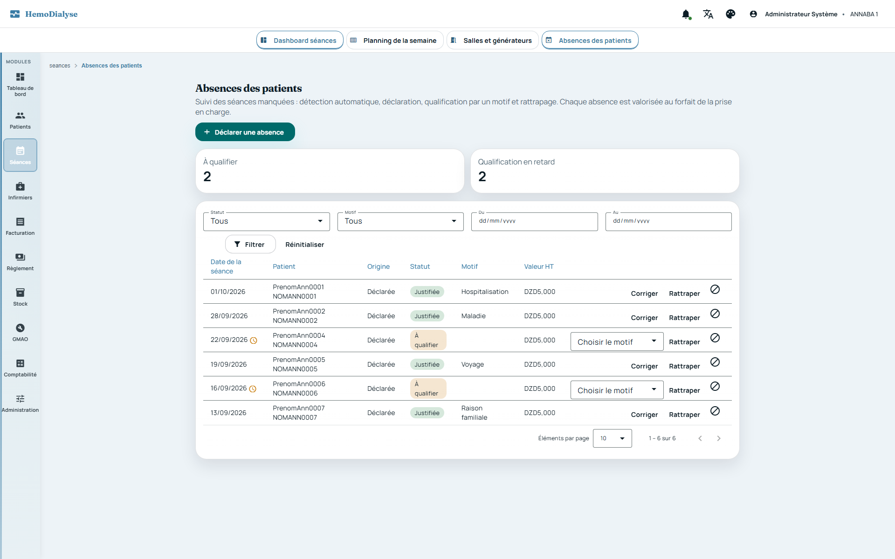
Préfixe
RG-ABS. Le système détecte chaque nuit les séances prévues non réalisées, valorise la perte de chiffre d'affaires, alerte sur les absences à qualifier et sur celles qui sont en retard, et clôture les corrections avec la facturation. Sources :AbsencePatient(contexteabsences-patients),MotifAbsence,StatutAbsence,Valorisation,DetectionAbsences,ReconciliationAbsences,NotificationDesAbsencesAQualifier,ControlerLesAbsences,ControleDeNuitDesAbsences,DetectionControleur,PatientsAttendusJdbc.
Une absence est celle d'un patient à une séance prévue ; il y a au plus une absence par patient et
par jour
(ABSENCE_EXISTANTE, y compris si la précédente a été annulée).
Source : AUTOMATIQUE (détectée par le contrôle nocturne) ou DECLAREE (saisie par un utilisateur).
Statuts : A_QUALIFIER → JUSTIFIEE ou NON_JUSTIFIEE (qualification par un motif) → RATTRAPEE
(séance de
remplacement) ; ANNULEE possible à tout moment. Une absence rattrapée ou annulée n'est plus modifiable
(ABSENCE_NON_MODIFIABLE) ; l'annulation est définitive. Une absence rattrapée ne s'annule pas (ABSENCE_NON_MODIFIABLE, sa date de
rattrapage est conservée ; était : annulable par ADMIN et MEDECIN, KB-ABS-10, corrigé à la slice A2).
Motifs : hospitalisation, maladie, voyage, transport, familial, refus du patient, décès, autre (tous
justifiants) et
« non justifiée » (seul motif non justifiant, donne le statut NON_JUSTIFIEE).
Le motif « autre » exige un commentaire (ABSENCE_COMMENTAIRE_REQUIS). Le motif est obligatoire à la
qualification (ABSENCE_MOTIF_REQUIS).
Une absence est comptabilisée (perte de séance et de chiffre d'affaires) tant qu'elle est à qualifier, justifiée ou non justifiée ; elle ne l'est plus une fois rattrapée ou annulée.
Le patient doit exister dans le centre (PATIENT_INTROUVABLE).
La date de la séance manquée ne peut pas être future (ABSENCE_DATE_FUTURE) ni plus ancienne que
60 jours
(ABSENCE_DELAI_DEPASSE).
Une absence ne peut être déclarée à une date où le patient a une séance réalisée
(ABSENCE_SEANCE_REALISEE) :
est réalisée une séance au statut VALIDEE, SIGNEE ou FACTUREE.
Une déclaration avec motif est qualifiée d'emblée ; sans motif elle reste « à qualifier ».
La déclaration est possible depuis l'écran de suivi des absences (choix du patient par saisie assistée, motif en ligne, erreurs affichées dans le formulaire) et depuis le planning de la semaine.
Qui déclare. La déclaration d'une absence est réservée à ADMIN, SECRETAIRE et INFIRMIER
(refus d'accès côté serveur pour tout autre profil). Le médecin ne déclare pas l'absence d'un patient : son
planning
est en lecture seule (aucun bouton de déclaration, ni sur le planning, ni sur l'écran de suivi des absences,
RG-PLN-104) ;
il consulte le suivi et garde la correction d'une absence déjà qualifiée (RG-ABS-020).
Requalifier une absence déjà qualifiée exige un commentaire (ABSENCE_COMMENTAIRE_REQUIS) et un
profil autorisé :
seuls ADMIN et MEDECIN corrigent une absence déjà qualifiée (ABSENCE_CORRECTION_INTERDITE) ; la première
qualification est ouverte à
ADMIN, SECRETAIRE, MEDECIN, INFIRMIER. Ordre des contrôles (A2, KB-ABS-18 aligné) : absence existante, droit de
correction, état (non modifiable, déjà annulée), période facturée, puis les valeurs.
Rattrapage : la date est obligatoire (ABSENCE_RATTRAPAGE_DATE_REQUISE), postérieure à la séance
manquée (ABSENCE_RATTRAPAGE_ANTERIEUR), non future (ABSENCE_DATE_FUTURE) et le patient doit avoir une séance
réalisée à cette date (ABSENCE_RATTRAPAGE_SANS_SEANCE). Une séance ne rattrape qu'une seule absence du
patient (ABSENCE_RATTRAPAGE_DEJA_UTILISEE). Le rattrapage est réservé à ADMIN et MEDECIN, pour toute absence, même « à
qualifier » (ABSENCE_CORRECTION_INTERDITE sinon ; était ouvert aux quatre profils, KB-ABS-13, corrigé à la slice A2). La
perte n'est alors plus comptabilisée. À l'écran, l'utilisateur
choisit la séance dans une liste (GET /absences-patients/{id}/seances-rattrapage : séances réalisées du patient
après la séance manquée, jusqu'à aujourd'hui, pas déjà utilisées) au lieu de saisir une date ; sans séance éligible,
l'écran renvoie au poste infirmier (le patient doit d'abord venir et être scanné). Cette liste n'est proposée que
pour une absence encore rattrapable : pour une absence déjà rattrapée ou annulée (plus modifiable, RG-ABS-003), elle
est refusée en 422 ABSENCE_NON_MODIFIABLE (était : proposée quand même, KB-ABS-04, corrigé à la slice A1).
Annulation : commentaire obligatoire (ABSENCE_COMMENTAIRE_REQUIS) ; déjà annulée :
ABSENCE_DEJA_ANNULEE ; mêmes droits de
correction que RG-ABS-020 pour une absence déjà qualifiée.
Absence inconnue ou d'un autre centre (indistinguables) : ABSENCE_INTROUVABLE ; 404 sur la
consultation (liste des séances de rattrapage, slice A1 ; était 422, KB-ABS-03 corrigé) et sur les écritures (slice A2).
Clôture avec la facturation : toute création, qualification, rattrapage ou annulation est refusée
si une facture du patient couvre
la date de la séance (ABSENCE_PERIODE_FACTUREE).
Chaque modification enregistre l'auteur et l'horodatage ; la déclaration et la qualification enregistrent leurs propres auteur/date.
La valeur d'une absence est figée à sa création : forfait de la prise en charge applicable à la date de la séance (prix HT, comme en facturation), taux du type de TVA actif ce jour-là, montant TTC = HT × (1 + taux/100), arrondi à deux décimales.
Forfait applicable : PEC dont la période effective (ou, à défaut, demandée) couvre la date ; sinon dernier forfait connu de la PEC (effectif sinon demandé). Sans forfait, la valeur est nulle (jamais bloquant). Une TVA exonérée ou absente vaut 0 %.
Prix, taux et montant HT ne peuvent être négatifs (valeurs refusées sinon).
Contrôle quotidien (02:30, tâche ControleDeNuitDesAbsences.controlerAbsences, un seul déclencheur
serveur) de chaque centre actif (un centre inactif n'est pas contrôlé, KB-ABS-26 corrigé), sur les 7 derniers
jours terminés du centre (hors aujourd'hui, au fuseau du centre, RG-ABS-059 ; une semaine pour absorber un arrêt du
serveur) : (1) réconciliation — les absences détectées (source automatique) encore « à qualifier », hors
période facturée, dont la séance a finalement été réalisée sont annulées avec le commentaire « Séance réalisée à cette
date » et sans auteur ; une absence déclarée par un utilisateur, qualifiée ou en période facturée n'est jamais touchée
(KB-ABS-22 corrigé) ; tout est traité en un seul passage, sans page sautée (KB-ABS-23 corrigé) ; (2) détection des
absences. Un mois d'absences clos est sauté et journalisé (aujourd'hui tous les mois sont ouverts, la clôture A6 n'existe
pas encore). Une absence en incident est isolée, journalisée (compteur par centre au niveau ERROR), et n'arrête ni son centre ni les
autres (KB-ABS-27 corrigé) ; elle est retentée chaque nuit tant que son jour reste dans la fenêtre de 7 jours, puis relancée par
le rattrapage manuel (dont la réponse porte echecs) une fois la cause corrigée.
Rattrapage au démarrage : à chaque démarrage du serveur, le contrôle (réconciliation +
détection) est rejoué sur les 31 derniers jours de chaque centre actif, sans notification (la notification suit le
contrôle de la nuit). Idempotent ; désactivable par la propriété app.absences.startup-catchup.
Rattrapage manuel d'une période passée (POST /api/v1/absences-patients/rattrapage-detection,
ADMIN, centre courant) : réconciliation puis détection jour par jour entre deux dates, pour les absences jamais
détectées (mois antérieurs au déploiement, serveur arrêté, reprise de données), sans notification. La fin est ramenée à
hier et la réponse le signale (fin et finRamenee, champs présents seulement dans ce cas) ; le début doit la précéder
(ABSENCE_PERIODE_INVALIDE, y compris un début aujourd'hui ou futur) ; la période ne dépasse pas 366 jours
(ABSENCE_PERIODE_TROP_LONGUE). Réponse : absences créées et annulées (creees, annulees) et, seulement si des absences
ont été en incident, leur nombre (echecs), et seulement si des jours ont été laissés parce que leur mois d'absences
est clos, la liste de
ces jours (joursIgnores, RG-ABS-074). Une entrée illisible (JSON, date impossible, centerId non UUID) est refusée
en
400 BAD_REQUEST, un corps non JSON en 415 (était 500, KB-ABS-28 aligné). Limite : la détection s'appuie sur la
fiche patient actuelle ; un patient dont les jours de dialyse ont été retirés à la libération de sa place (RG-PAT-033) n'est
plus détecté pour ses jours passés.
Un patient est attendu un jour donné si : le jour de la semaine est coché sur sa fiche, il n'est
pas « en sommeil », sa date d'admission n'est pas postérieure, sa place n'est pas libérée, le centre n'est pas fermé ce
jour (férié ou fermeture exceptionnelle) et il n'a aucune séance réalisée ce jour (validée, signée ou facturée). Sortie
(KB-ABS-24, jour uniformisé) : un patient transféré, guéri, décédé ou greffé n'est plus attendu le jour de l'événement ni
après (était : inclus pour transféré et guéri) ; un état de sortie sans date d'événement n'est jamais attendu
(comportement conservé, en attendant que Patient et couverture interdise une sortie sans date : prérequis noté dans
.ddd/migration/roadmap.md ; liste des cas : verifications-production.md § 25.2) ; séjour occasionnel ou vacancier : attendu jusqu'à la fin de séjour incluse, ou sans fin.
La détection est idempotente : aucune absence n'est créée si une absence existe déjà (même annulée) ou si la période est facturée. Les absences détectées naissent « à qualifier » ; la détection est une transaction par absence (déclaration simultanée du même jour : l'absence existe, rien à créer).
Une absence à qualifier est en retard au-delà de 3 jours après la séance manquée.
Après le contrôle de nuit (jamais au démarrage ni au rattrapage manuel), si des absences sont encore à
qualifier, le centre est notifié en temps réel (ABSENCES_A_QUALIFIER, nombre à qualifier, nombre en retard) aux rôles
ADMIN, SECRETAIRE, INFIRMIER, MEDECIN. Une seule notification par centre et par jour du centre (clé
déterministe : deux contrôles du même jour, même sur deux instances du serveur, n'en créent qu'une ; KB-ABS-25 corrigé).
Les comptes portent sur toutes les absences encore « à qualifier » dont le mois d'absences est ouvert (sans limite de
fenêtre ; les mois clos ne comptent plus). La synthèse (à qualifier / en retard) est consultable à tout moment.
Réconciliation refusée par le domaine : annuler par réconciliation une absence déclarée, qualifiée,
annulée ou en période facturée est refusé (ABSENCE_NON_RECONCILIABLE, jamais exposé en HTTP : la politique saute ces
absences). Source : AbsencePatient.reconcilier.
Fuseau du centre (décision 7, slice A3) : « aujourd'hui », la fenêtre de la nuit, le « en retard »,
la semaine du planning courante et les contrôles de date des écritures (déclaration du jour, rattrapage) se calculent à la
date du fuseau du centre, Africa/Algiers par défaut (app.absences.fuseau-par-defaut) : le centre n'a pas encore de
fuseau en base. Le déclencheur de 02:30 suit ce fuseau. Les instants restent absolus.
Source : HorlogeDesCentres, FuseauParDefaut, ControleDeNuitDesAbsences.
La liste des absences est paginée et filtrable (statut, motif, patient, période), limitée au centre ;
accès ADMIN, SECRETAIRE,
MEDECIN, INFIRMIER (y compris profils restreints, voir RG-SEC-022/023). Tri : date de séance la plus récente
d'abord, puis identifiant. Pagination bornée : page et size négatifs sont refusés (400 BAD_REQUEST),
size est plafonnée à 100 (la taille effective figure dans la réponse), size = 0 ne renvoie aucun élément mais
le total (KB-ABS-02, corrigé à la slice A1). Chaque ligne porte enRetard (RG-ABS-043, jour courant au fuseau du centre, RG-ABS-059).
Le suivi de la semaine (dimanche → samedi) renvoie les absences non annulées et les séances réalisées, pour colorer le planning : les séances réalisées (validées par l'infirmier à la présence du patient) s'affichent avec un soleil sur fond jaune.
Les absences alimentent le tableau de bord de la direction (volumes, perte valorisée, taux — voir
RG-DIR) sans donnée nominative. Le contexte les publie par le langage AbsencesDuPilotage (A4, RG-ABS-060), jamais par sa table.
Paramètres illisibles de la consultation : un statut ou un motif inconnu (ou en minuscules), un
identifiant (centre, patient, absence) qui n'est pas un UUID, une date qui n'est pas au format AAAA-MM-JJ, une
page ou une size non numérique est refusé en 400 BAD_REQUEST (était : 500 INTERNAL_ERROR, KB-ABS-01,
corrigé à la slice A1). Un filtre vide (statut=) est ignoré ; du après au ne retient aucune absence.
Source : AbsencesControleur, EntreesDesAbsencesAdvice (contexte absences-patients).
Écritures concurrentes (slice A2, KB-ABS-11 corrigé) : chaque écriture est une transaction qui verrouille
l'absence (un rattrapage verrouille toutes les absences du patient). Une écriture qui arrive pendant une autre attend, puis
voit l'état validé (donc ABSENCE_DEJA_ANNULEE plutôt qu'une double annulation). Deux déclarations du même patient et du même
jour : la perdante reçoit 409 ABSENCE_ECRITURE_CONCURRENTE (était : erreur technique 500 le plus souvent) ; une
déclaration qui lit l'absence déjà créée reçoit toujours 422 ABSENCE_EXISTANTE, y compris quand cette absence est annulée.
Une séance de rattrapage ne sert qu'à une absence rattrapée (index unique partiel, migration V43 ; une absence annulée
ne réserve rien).
Source : AbsencesJdbc, ErreursMetierDesAbsencesAdvice, V43__absences_patients_unicite_du_rattrapage.sql.
Entrées illisibles des écritures (KB-ABS-17 aligné, slice A2) : JSON illisible, date ou identifiant du
corps illisible, centerId ou identifiant du chemin qui n'est pas un UUID, motif inconnu, commentaire de plus de 1000
caractères : 400 BAD_REQUEST (étaient 500) ; corps qui n'est pas du JSON : 415 UNSUPPORTED_MEDIA_TYPE (était 500) ;
champ obligatoire absent : 400 VALIDATION_ERROR (inchangé).
Source : AbsencesEcrituresControleur, EntreesDesAbsencesAdvice, Commentaire.
Valeur figée (slice A2) : forfait, montants et taux ne s'écrivent qu'à la création, aucune commande ne les
écrit ensuite. La règle de choix du forfait (effectif avant demandé, même hors période ; repli sur la prise en charge la plus
récente portant un forfait) et le taux (règle HEMODIALYSE exacte, exonérée = 0 %) sont reproduits du legacy (KB-ABS-16,
KB-CPT-19). Le taux est renvoyé avec l'échelle de la base (0.00, était 0, KB-ABS-15). Un commentaire donné sans motif à la
déclaration est conservé (était perdu, KB-ABS-12), et une qualification sans commentaire garde le commentaire déjà présent
(était : effacé, KB-ABS-14 aligné) ; une annulation ou une requalification remplace le commentaire par le nouveau.
Source : Valorisation, ForfaitsDesPatientsJdbc, TauxDeTvaComptabilite.
Exclusion et réinclusion d'une séance (Facturation, ADR 0031, slice A2) : l'exclusion déclare l'absence par
le même cas d'usage, dans la transaction de l'exclusion, et diffuse la saisie temps réel ABSENCE après validation (KB-ABS-19,
était : aucune diffusion). L'absence d'une exclusion ne s'annule pas (l'origine est lue sur la séance exclue qui y est liée) :
422 ABSENCE_D_EXCLUSION, « réincluez la séance dans la facturation » ; elle peut en revanche être requalifiée ou rattrapée.
Seule la réinclusion la retire, quel que soit son état (KB-ABS-20 : une séance exclue ne reste plus bloquée) ; une absence annulée
héritée d'avant A2 n'est jamais supprimée par l'application : la réinclusion est alors refusée (422
ABSENCE_D_EXCLUSION_MODIFIEE), à traiter avec l'administrateur (liste : verifications-production.md § 24.4). Une absence déjà
supprimée : la réinclusion réussit.
Source : ExclusionDeLaFacturation, AnnulerUneAbsence, RetirerLAbsenceDeLExclusion, ExclusionsDeSeancesPubliees (lien lu par
le langage publié de la Séance depuis SE7d, RG-SEA-062), SignalementDesSaisiesLegacy.
Lectures publiées pour le pilotage (slice A4, ADR 0041) : le tableau de bord des séances d'un centre (nombre, détail,
exports) et la vue de la Direction (cumul par centre, statut et motif, mensuel) lisent les absences par le langage publié
AbsencesDuPilotage, avec les mêmes requêtes qu'avant : bornes de dates incluses, absences annulées jamais comptées, centres autorisés
fournis par l'appelant. Le mensuel ne garde que les statuts à qualifier, justifiée et non justifiée. Aucune table d'absence n'est lue hors du contexte.
Source : AbsencesDuPilotage, AbsencesDuPilotageJdbc, TableauDeBordDesSeancesControleur, DirectionAbsencesQueryService.
« Aujourd'hui » du pilotage et absences futures (KB-ABS-34, 35, corrigés à la slice A4) : « aujourd'hui » est le jour du fuseau des centres (RG-ABS-059), pas celui de l'UTC, pour la période par défaut de la Direction (année en cours jusqu'à aujourd'hui) et la fin de période du tableau de bord. Aucune absence postérieure à aujourd'hui n'est comptée, dans le tableau de bord (nombre, détail, exports CSV, PDF, XLSX) comme dans la vue Direction (cumul par centre, motifs, mensuel), quelle que soit la fin de période demandée (mois en cours inclus) ; pour un mois futur, le nombre est 0, le détail vide et la fin de période du tableau de bord est égale au début (jamais antérieure). La période affichée et les séances, le chiffre d'affaires et le taux gardent la fin demandée. (Était : jour UTC ; absences futures comptées ; fin de période avant le début.)
Entrées illisibles du pilotage (KB-ABS-33, 36, corrigés à la slice A4) : une date from ou to illisible de
GET /api/v1/direction/absences est refusée en 400 BAD_REQUEST (était : 500) ; un format d'export du tableau de bord autre que
csv, pdf ou xlsx (sans égard à la casse) est refusé en 400 BAD_REQUEST (était : CSV servi silencieusement). Sans format : CSV.
La période de la Direction reste refusée en 422 si inversée (PERIODE_INVALIDE) ou de plus de 5 ans (PERIODE_TROP_LONGUE).
Source : FormesIllisiblesDesRoutesAdvice, TableauDeBordDesSeancesControleur.exporter.
Un mois d'absences (un mois d'un centre) est ouvert ou clos. Un mois sans ligne est ouvert ; aucun mois n'est clos au déploiement.
Clôturer un mois d'absences (POST /api/v1/absences-patients/mois/{AAAA-MM}/cloturer, ADMIN
seul, centre de la session) :
sans condition d'état (l'administrateur décide), mais seul un mois terminé se clôture : le mois en cours et
les mois futurs, au fuseau du centre,
sont refusés (422 MOIS_D_ABSENCES_NON_TERMINE) ; aucun jour de grâce (le mois précédent se clôt dès le
premier jour du mois). La réponse porte
l' avertissement chiffré absencesAQualifierRestantes (absences encore « à qualifier » du mois) et
absencesEnRetard (parmi elles, celles de plus de
3 jours, RG-ABS-043 au jour de la clôture) ; la clôture n'est jamais refusée pour cela. Clôturer deux fois : 409
MOIS_D_ABSENCES_DEJA_CLOS.
Mois illisible : 400 MOIS_INVALIDE ; année illisible : 400 ANNEE_INVALIDE. Lecture des douze mois
(GET /api/v1/absences-patients/mois?annee=AAAA) :
les quatre profils d'accès. Source : CloturerLeMoisDAbsences, MoisAbsences, MoisDAbsencesControleur.
Un mois clos refuse toute écriture d'absence datée de ce mois : déclaration, qualification,
rattrapage, annulation (422
MOIS_D_ABSENCES_CLOS, avec le mois en propriété mois, rien n'est écrit ni signalé). Le mois voisin et les autres
centres ne sont pas touchés. Les lectures (liste, suivi, synthèse, pilotage) comptent tous les mois. Les chiffres déjà
enregistrés ne sont jamais recalculés. Source : GardeDesMoisDAbsences, MoisDAbsencesClos.
Rattrapage : exige que le mois de l'absence et celui de la date de rattrapage soient ouverts
(le second n'était pas regardé avant A6) ;
les deux mois se verrouillent du plus ancien au plus récent. Refus : 422 MOIS_D_ABSENCES_CLOS.
Exclusion et réinclusion d'une séance (Facturation) : l'exclusion qui crée une absence dans un
mois clos échoue avec le même refus 422
MOIS_D_ABSENCES_CLOS et toute l'exclusion est annulée (comme ABSENCE_PERIODE_FACTUREE) ; la réinclusion
d'une séance dont l'absence est dans un mois clos
est refusée (422 MOIS_D_ABSENCES_CLOS, rouvrir d'abord le mois d'absences) et l'absence et la séance restent
inchangées. Source : ExclusionDeLaFacturation, DeclarerUneAbsence, RetirerLAbsenceDeLExclusion.
Détection, réconciliation, rattrapage de détection et notification : les jours d'un mois clos
sont ignorés (aucune absence créée, aucune
absence réconciliée) ; le rattrapage de détection (RG-ABS-046) les liste dans le champ additif joursIgnores de
sa réponse (absent quand rien n'est ignoré,
KB-ABS-37) ; la notification de nuit (RG-ABS-044) ne compte que les mois ouverts et se tait s'il n'en reste aucune
absence à qualifier. Une absence manquante d'un
mois clos se rattrape en rouvrant le mois. Source : DetectionAbsences, ReconciliationAbsences,
NotificationDesAbsencesAQualifier, DetectionControleur.
Rouvrir un mois (POST /api/v1/absences-patients/mois/{AAAA-MM}/rouvrir, ADMIN seul) : motif
obligatoire, rogné, 500 caractères au plus
(400 MOTIF_DE_REOUVERTURE_OBLIGATOIRE) ; un mois non clos ne se rouvre pas (409 MOIS_D_ABSENCES_NON_CLOS,
contrôlé avant le motif). Un mois rouvert peut être
clos à nouveau. La réouverture n'est pas refusée quand le mois de facturation correspondant est clos. Source :
RouvrirLeMoisDAbsences, MoisAbsences.
Lien avec la Facturation (avertissement seulement) : aucune obligation d'ordre. La clôture d'un
mois de facturation (RG-FAC-040) répond
absencesDuMoisNonCloses (vrai si le mois d'absences du centre n'est pas clos) et le dit à l'administrateur ; elle
n'est jamais refusée pour cela. L'ordre de l'ADR 0009 (clore les absences, puis la facturation) reste une
recommandation. Source : ClotureDesAbsences (langage publié de la Facturation), CloturerLeMois.
Concurrence : la ligne du mois est verrouillée (SELECT ... FOR UPDATE) par la clôture, la
réouverture et chaque écriture d'absence du mois : une
écriture en cours fait attendre la clôture (l'avertissement est exact), une clôture en cours fait attendre l'écriture,
ensuite refusée. Un verrou qu'on n'obtient pas dans
le délai de la transaction (5 s) : 409 ABSENCE_ECRITURE_CONCURRENTE (code commun aux absences, aussi rendu par
la clôture et la réouverture d'un mois). Dans la détection de nuit, un verrou de mois indisponible est un incident
compté (echecs) et journalisé, jamais confondu avec une déclaration concurrente. GET /mois ne rend le motif de
réouverture et les identifiants d'auteurs qu'aux ADMIN (null pour les autres profils).
Traçabilité : chaque clôture (auteur, instant, avertissement) et chaque réouverture (auteur,
instant, motif) est ajoutée au journal
mois_absences_journal (jamais modifié ni supprimé) ; la ligne du mois retient la dernière clôture et la dernière
réouverture. Les événements d'intégration
MoisDAbsencesCloture et MoisDAbsencesRouvert sont publiés dans la transaction de l'acte (Spring Modulith, ADR
0013 ; aucun consommateur pour l'instant) ; les écritures
POST sont aussi tracées par le journal d'audit de la plateforme. Source : MoisAbsencesJdbc,
PublicationDesMoisDAbsencesSpring, AuditRequestFilter.
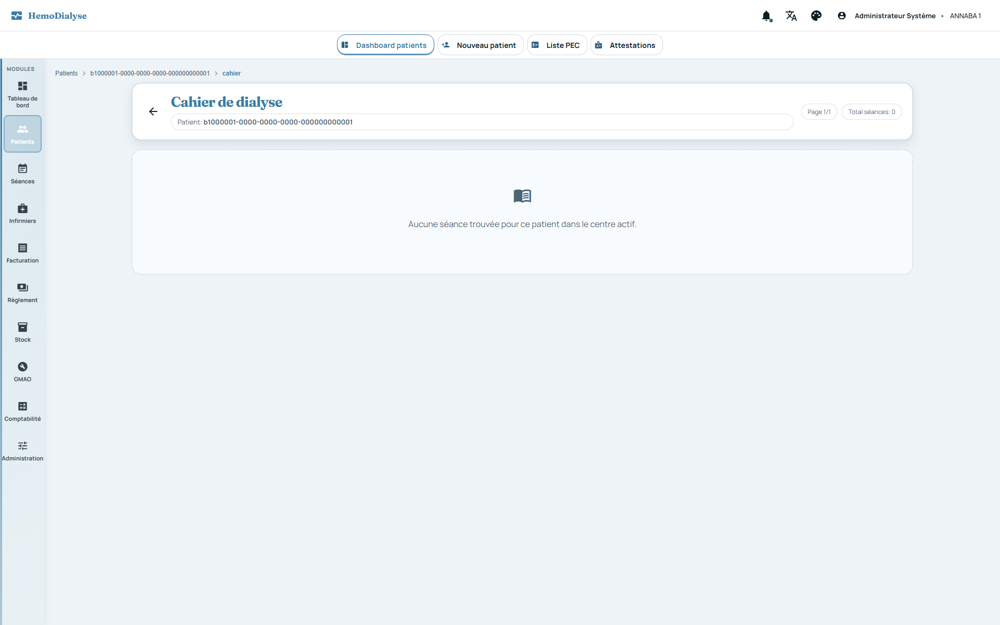
Préfixe
RG-SEA. Sources :Seance,SeanceStatus,SeanceDomainService,SeanceApplicationService,SeanceBillingEligibilityJdbcAdapter,VoletParamedicalDomainService,RenseignerLeVoletMedical,TensionArterielle,SeancesControleur,RoutesResiduellesControleur,TableauDeBordDesSeancesControleur,VoletParamedicalRestController,BonSortieService.
Statuts d'une séance : CREE → VALIDEE (validation infirmière) → SIGNEE (signature médecin) →
FACTUREE
(facturation). Aucun retour en arrière. Statut particulier ABSENT : séance exclue de la facturation depuis la
simulation (RG-FAC-023) ; elle n'est plus validable ni facturable, ne compte pas comme réalisée et n'accepte pas de
volet médical.
Une séance facturée ne peut plus être modifiée : date, forfait, volets paramédical et médical,
consommables (« La seance facturee ne peut plus etre modifiee »). L'entrée de stock liée à une séance facturée est
également immuable. Tous ces refus répondent 422 SEANCE_FACTUREE_NON_MODIFIABLE (date, forfait, validation, signature
du médecin, consommables, volets, déverrouillage, administration de traitement, bon de sortie) ; la suppression garde
SEANCE_FACTUREE_NON_SUPPRIMABLE (RG-SEA-050).
Une séance appartient à un patient et à un centre ; une séance inconnue du centre : « Seance introuvable ».
Suppression d'une séance (ADMIN seul, écran « Historique des séances » ;
DELETE /api/v1/seances/{id}), tout ou rien : la séance doit exister dans le centre (SEANCE_INTROUVABLE) et ne
pas être facturée (SEANCE_FACTUREE_NON_SUPPRIMABLE : annuler d'abord la facture) ; un motif de 5 à 500
caractères est exigé (SEANCE_SUPPRESSION_MOTIF_INVALIDE). Une séance créée, validée ou signée peut être supprimée.
Effets : les consommables et administrations EPO/fer sortis du stock pour la séance sont restitués (lots
recrédités, mouvements et bons de sortie supprimés, PMP recalculé) ; les volets paramédical et médical et les
administrations EPO/fer de la séance sont effacés ; la séance est supprimée. La suppression est journalisée
(séance, patient, date, statut, motif, auteur, horodatage — table seance_suppression) en plus du journal d'audit
(RG-SEC-050), et notifiée en temps réel (SEANCE_SUPPRIMEE) pour rafraîchir les écrans. Irréversible. Reprise dans le module
seance : RG-SEA-057 (qui refuse aussi toute séance rattachée à une facture, et ne restitue aucun stock : lire « restitués »
ci-dessus à la lumière de KB-SEA-51).
Création : ADMIN ou INFIRMIER. Le patient doit exister dans le centre. La date par défaut est
aujourd'hui.
Le patient doit être facturable à la date de la séance : une prise en charge au statut VALIDEE,
avec un forfait (effectif sinon demandé), dont la période couvre la date, et une attestation de droits couvrant
la date. La période est celle de la période effective (début et fin pris ensemble : sans fin, elle reste ouverte)
ou, à défaut, celle de la période demandée — jamais un mélange des bornes, comme pour la résolution du forfait de
la séance. Sans cela, la séance ne se crée pas, et le message dit ce qui manque réellement : « Le patient doit
avoir une prise en charge valide pour être facturé » quand aucune prise en charge ne couvre la date, « La prise en
charge du patient couvre le … mais n'est pas validée » quand elle existe mais n'est pas validée, ou « La prise en
charge du patient est valide mais aucune attestation de droits ne couvre le … » quand seule l'attestation est
absente ou expirée.
Création par scan de QR (ADMIN, INFIRMIER, SECRETAIRE) : le code est résolu, dans cet
ordre, comme identifiant patient (UUID,
éventuellement après un préfixe xxx:), code patient, numéro d'assurance, puis par comparaison tolérante (sans
espace, tiret ni ponctuation) sur code
patient, numéro d'assurance du patient ou de l'assuré ; QR vide ou introuvable : refus explicite. Si le patient a déjà
une séance ce jour-là, elle est
renvoyée (pas de doublon). Scan par un infirmier (INFIRMIER, ADMIN) : la séance est validée directement —
si une séance CREE existe ce jour-là (par exemple créée par la secrétaire) elle passe à VALIDEE, sinon elle est
créée directement à l'état VALIDEE (RG-SEA-011 reste exigée ; le patient doit en outre être programmé ce jour-là,
voir RG-SEA-048), sans passer par « Modifier → Enregistrer » ; la
signature de l'infirmier est celle de l'utilisateur qui scanne. Un second scan d'une séance déjà VALIDEE, SIGNEE
ou FACTUREE ne change rien (réponse alreadyValidated). Le scan de la secrétaire crée seulement la séance
(CREE) : elle ne peut pas valider (RG-SEA-020). La réponse indique created, validatedNow, alreadyValidated et
l'identité du patient.
La création notifie le centre en temps réel (séance créée) ; la réponse indique le générateur affecté au patient et son état (statut GMAO) pour avertir l'équipe d'un générateur indisponible.
Modification de la date d'une séance : ADMIN seul, interdite si facturée ; sans date, aujourd'hui.
Création, scan et consultation reprises dans le module seance (slice SE1, ADR 0088 ;
POST /api/v1/seances, POST /api/v1/seances/scan, GET /api/v1/seances/{id}, GET /api/v1/seances, mêmes URLs, mêmes
rôles que RG-SEA-010, 012 et 029, mêmes tables). Décisions de la reprise : corrigés — (KB-SEA-01) « aujourd'hui »
est le jour du centre (fuseau du centre, Africa/Algiers par défaut), pour la création sans date et pour le scan seulement (la liste des séances récentes d'un patient du poste infirmier et la modification de date lisent encore la date du
serveur : à corriger avec SE4 et SE7 ; la validation et le déverrouillage lisent le jour du centre depuis SE2, RG-SEA-053) ;
(KB-SEA-02) plusieurs séances ce jour-là pour le patient lors d'un scan : 409 SEANCE_DU_JOUR_AMBIGUE au lieu d'un
500 ; (KB-SEA-04) une requête mal formée répond 400 et non 500 (BAD_REQUEST, VALIDATION_ERROR, centerId absent du détail
et de la liste, précision de motif
au-delà de 255 caractères), un refus de droits 403 ACCESS_DENIED passe avant le 400, une écriture concurrente répond
409 ECRITURE_CONCURRENTE ; une création sans centre répond 400 « Centre requis » ; (KB-SEA-06) un QR sans caractère
alphanumérique est refusé en 400 ; un patient inconnu ou d'un autre centre répond 404 PATIENT_INTROUVABLE ; (KB-SEA-07)
une séance au statut illisible n'empêche plus la liste (ligne ignorée, avertissement journalisé avec l'identifiant) et
son détail est refusé sans exposer de nom de classe. Reproduits (à décider avec les métiers) — (KB-SEA-03) la
création manuelle ne contrôle pas le planning (RG-SEA-048 ne vise que le scan) ; (KB-SEA-05) le drapeau created du
scan de la secrétaire reste faux et la diffusion est refaite à chaque scan tant que la séance est CREE ; (KB-SEA-08)
l'audit ne couvre que la création et le scan, sans identifiant d'entité ; (KB-SEA-09) l'auteur de la création n'est pas
conservé ; (KB-SEA-10) l'éligibilité de prise en charge reste cumulative (RG-SEA-011, code générique
BUSINESS_RULE_VIOLATION). Plusieurs séances par patient et par jour restent créables à la main (unicité à décider).
Diffusions : un échec de diffusion en temps réel après l'enregistrement est journalisé et n'annule ni ne fait échouer la
séance (le legacy répondait 500 après l'écriture) ; à confirmer avec les métiers.
Source : SeancesControleur, ErreursDeSeanceAdvice, HorlogeDuCentre.
Validation, signature du médecin et déverrouillage de régularisation reprises dans le module seance
(slice SE2, ADR 0089 ; POST /api/v1/seances/{id}/valider ADMIN, INFIRMIER ; POST /api/v1/seances/{id}/signer-medecin
ADMIN, MEDECIN ; POST /api/v1/seances/{id}/deverrouiller-regularisation?centerId= ADMIN ; mêmes URLs, mêmes rôles, mêmes
tables, mêmes matrices de statuts et mêmes messages que RG-SEA-020, 021, 046 et 049). Le scan de l'infirmier (RG-SEA-012) valide
par la même règle. Corrigés — (KB-SEA-18) la séance est lue sous verrou avant d'être modifiée : un verrou non obtenu répond
409 ECRITURE_CONCURRENTE ; (KB-SEA-16) un corps illisible, absent, nul ou en tableau, un centerId ou un identifiant de séance
absent ou illisible, une ligne de consommable nulle répondent 400 BAD_REQUEST sans message technique (le refus de droits 403 passe
avant le 400) ; un signataire de plus de 100 caractères répond 400 (et non 500) sans rien écrire ; une séance inconnue ou d'un autre
centre répond 400 « Seance introuvable », un patient disparu 404 PATIENT_INTROUVABLE, un article inconnu ou inactif 400, un statut
illisible en base 400 sans nom de classe interne ; le « jour passé » du verrou de validation (RG-SEA-046) et du déverrouillage est le
jour du centre et non plus celui du serveur (KB-SEA-01, 13e écart décidé de SE2 à confirmer avec les métiers : entre minuit du
centre et minuit du serveur, une séance d'« hier » au sens du centre est verrouillée pour l'infirmier). Reproduits, à confirmer avant la mise en production — (KB-SEA-11) le signataire est lu dans le corps
de la requête et non dans la session : un compte peut valider ou signer au nom d'un autre, risque d'imputation d'une signature
médicale (décision juridique et DPO) ; (KB-SEA-12) une séance à venir se valide sans limite ; (KB-SEA-13) la fenêtre de 7 jours de
RG-SEA-046 ne borne pas le déverrouillage (elle ne concerne que le rappel) ; (KB-SEA-15) les consommables relevés se cumulent à
chaque validation répétée. Reproduits sans alerte — (KB-SEA-14) rediffusion à chaque appel ; (KB-SEA-17) l'audit des trois routes
porte l'action SEANCES_CREATION avec l'identifiant de la séance ; (KB-SEA-19) aucun cache à invalider ; (KB-SEA-20) un seul message
pour toute séance non signable ; (KB-SEA-21) les droits (le SUPERADMIN reste refusé en 403 ROLE_SCOPE) et la place figée est la place
courante de la fiche du patient, le déplacement temporaire du jour prioritaire. Un refus du Stock à la validation (stock insuffisant,
article inactif) annule toute la validation (statut, place, consommations).
Source : ValiderUneSeance, SignerUneSeance, DeverrouillerUneSeance, Seance, SeancesControleur, ErreursDeSeanceAdvice.
Consommables déclarés d'une séance et raccourcis de consommables du centre repris dans le module seance
(slice SE3, ADR 0090 ; POST /api/v1/seances/{id}/consommables, PUT /api/v1/seances/{id}/consommables/{articleId},
DELETE /api/v1/seances/{id}/consommables/{articleId} ADMIN, INFIRMIER ; GET /api/v1/seances/raccourcis-consommables
ADMIN, INFIRMIER, SECRETAIRE ; PUT /api/v1/seances/raccourcis-consommables ADMIN ; mêmes URLs, mêmes rôles, mêmes tables,
même cache seance.raccourcis, mêmes messages que RG-SEA-022, 025 et 027). La Séance déclare, le Stock impute (langage publié
ConsommationsDeSeance). Corrigés, à confirmer avec les métiers — (KB-SEA-26) un corps illisible, une quantité ou un identifiant
illisible répondent 400 BAD_REQUEST au lieu de 500, le refus de droits 403 passant avant le 400 ; (KB-SEA-27) la lecture du patient, la
vérification du statut et l'écriture se font dans une seule unité de travail : un patient disparu répond 404 PATIENT_INTROUVABLE sans
rien écrire (comme SE1 et SE2) ; (KB-SEA-25) un seul statut par cause : article inconnu, d'un autre centre ou inactif et quantité
invalide répondent 400 BAD_REQUEST sur les trois routes (les refus du Stock pour séance facturée ou pièce rapprochée restent 422 avec le
code du Stock) ; écritures concurrentes : la séance est lue sous verrou (FOR UPDATE), le remplacement des raccourcis sous verrou
consultatif du centre, verrou non obtenu en 5 s : 409 ECRITURE_CONCURRENTE. Reproduits, à confirmer avant la mise en production —
(KB-SEA-33) l'auteur de la saisie n'est pas conservé par le Stock : risque médico-légal de traçabilité, à valider avec le DPO ;
(KB-SEA-22) aucune sortie de stock n'est créée à la déclaration malgré la Javadoc FEFO ; (KB-SEA-24) la modification et le retrait sont
acceptés sur une séance CREE ou ABSENT ; (KB-SEA-31) PUT des raccourcis avec un corps vide efface tous les raccourcis du centre.
Reproduits sans alerte — (KB-SEA-23, 28, 30, 32, 34) ; (KB-SEA-29) l'audit porte SEANCES_CREATION (POST), SEANCES_MODIFICATION
(PUT) et SEANCES_SUPPRESSION (DELETE) et, pour les raccourcis, SEANCES_MODIFICATION sans identifiant d'entité ; les droits par
route. L'ajout exige une séance VALIDEE ou SIGNEE et non facturée ; les raccourcis sont limités à 12 articles actifs du centre,
sans doublon, dans l'ordre choisi (liste nulle = liste vide).
Source : AjouterUnConsommable, ModifierLaQuantiteDUnConsommable, RetirerUnConsommable, ConsulterLesRaccourcis,
RemplacerLesRaccourcis, RaccourcisDeConsommables, Seance, SeancesControleur, ErreursDeSeanceAdvice.
Rappel quotidien des séances à régulariser repris dans le module seance (slice SE4, ADR 0091 ; aucune route,
aucune table ajoutée ; suite de RG-SEA-046 et 053). Chaque jour à 07:00 (app.seance.fuseau-par-defaut), pour tous les
centres, RappelerLesSeancesARegulariser compte les séances CREE des sept jours passés du centre (la veille comprise, le jour du
centre exclu) non déverrouillées, avec la date de la plus ancienne, et envoie à l'administrateur la notification
SEANCES_A_REGULARISER (ADMIN seul, journal durable) ; rien n'est envoyé s'il n'y en a aucune ; un centre en erreur n'arrête pas
les autres. Il n'existe pas d'agrégat « dérogation de régularisation » : la dérogation est le déverrouillage
(regularisation_deverrouillee_at/by, RG-SEA-053), sans motif ni autorité ; la table derogations_regularisation (V50) n'est jamais
écrite (KB-SEA-40, conservée, vide). Corrigés, à confirmer avec les métiers — (KB-SEA-35) un seul rappel par centre et par jour du
centre (identifiant déterministe dans le journal existant ; pour deux instances, le verrou consultatif par centre et jour est la garantie, sans repli sur la violation de clé du journal, et le scénario à deux instances n'est pas prouvé de bout en bout) : un second
passage du même jour n'émet rien et le rappel du jour reste figé à son premier passage ; (KB-SEA-36) « aujourd'hui » est le jour du
fuseau du centre, plus le jour UTC. Reproduit, à confirmer avant la mise en production — (KB-SEA-37) la fenêtre est de 7 jours
alors que le verrou des jours passés n'a aucune borne : une séance oubliée depuis 8 jours ou plus reste bloquée pour l'infirmier, n'est
plus jamais rappelée et le patient reste compté absent (décision métier prioritaire). Reproduits sans alerte — (KB-SEA-38) une
séance CREE dont le patient a disparu est comptée par le rappel mais refusée au déverrouillage et à la validation ; (KB-SEA-39) le
détail d'une séance ne porte pas l'indicateur de déverrouillage ; droits et libellés inchangés. Le planificateur est actif dès le
déploiement, sans indicateur d'activation : une seule instance du planificateur ou le verrou consultatif vérifié.
Source : RappelerLesSeancesARegulariser, FenetreDeRegularisation, SeancesARegulariser, RappelDeRegularisation,
RappelDesRegularisationsPlanifie, VerrousDesRappelsJdbc, RappelsFournisLegacy.
Surcharge du forfait d'une séance reprise dans le module seance (slice SE5, ADR 0092 ; PUT /api/v1/seances/{id}/forfait ADMIN seul ; mêmes URL, mêmes champs JSON centerId, forfaitId, userId, mêmes tables et colonnes
seances.forfait_override_*, aucune migration ; suite de RG-SEA-033). Intention « imposer un forfait » : la séance copie le code,
le nom et le prix du forfait du référentiel du centre (instantané jamais rafraîchi quand le référentiel change), l'instant et
l'auteur, et le forfait imposé prime sur celui de la prise en charge (détail et liste à sept clés) ; une nouvelle imposition remplace
tout, sans historique. Ordre des refus : centre du corps différent de la session 403, séance introuvable 400, forfait introuvable pour
le centre 400, séance facturée 422 SEANCE_FACTUREE_NON_MODIFIABLE. Aucun montant n'est recalculé : ni TVA ni arrondi. Corrigés, à
confirmer avec les métiers — (KB-SEA-44) un identifiant de forfait, de centre ou de séance illisible, un corps illisible ou absent et un
auteur de plus de 100 caractères répondent 400 BAD_REQUEST au lieu de 500, le refus de droits passant avant le 400 ; deux impositions
simultanées de la même séance se suivent sous le verrou de ligne (FOR UPDATE), verrou non obtenu en 5 s : 409 ECRITURE_CONCURRENTE
(l'ancien code écrasait en silence) ; un statut illisible répond 400 sans nom de classe. Reproduits, RISQUES D'ARGENT à confirmer
avant la mise en production — (KB-SEA-41) un forfait sans prix ou à 0.00 est imposé sans alerte ; (KB-SEA-43) seul le statut
FACTUREE est refusé : une séance CREE ou ABSENT reçoit un forfait et facture_id n'est pas regardé ; (KB-SEA-46) le forfait courant
ignore le statut de la prise en charge (une PEC refusée, annulée ou en brouillon fournit le forfait affiché) ; (KB-SEA-47) la
Facturation (poserLeForfait, hors périmètre, non corrigée) n'écrit pas forfait_override_code ; (KB-SEA-42) l'auteur est un champ libre
du corps, jamais le compte de session. Reproduits sans alerte — (KB-SEA-45) aucun historique, audit réduit à SEANCES_MODIFICATION,
la route et le statut ; (KB-SEA-48) droits : seul ADMIN (DIRECTION et SUPERADMIN : 403 ROLE_SCOPE, MEDECIN, SECRETAIRE,
INFIRMIER : 403 ACCESS_DENIED). Le verrou de ligne ne couvre pas la Facturation (résidu daté, ADR 0092).
Source : ImposerUnForfait, Seance.imposerUnForfait, ForfaitImpose, AuteurDuForfaitImpose, ForfaitsDuCentreParLeLegacy,
ReferentielDeForfaitsFourniLegacy, SeancesJdbc, SeancesControleur, ErreursDeSeanceAdvice.
Changement de jour et suppression d'une séance repris dans le module seance (slice SE6, ADR 0093 ; PUT /api/v1/seances/{id} et DELETE /api/v1/seances/{id}?centerId= ADMIN seul ; mêmes URL, mêmes champs JSON (centerId, dateSeance,
motif), mêmes tables et colonnes (seances.date_seance, seance_suppression), aucune migration ; suite de RG-SEA-002 et RG-SEA-050).
Changer de jour : seule la séance facturée est refusée (422 SEANCE_FACTUREE_NON_MODIFIABLE) ; l'absence de date, null et la
chaîne vide valent « le jour du centre » (HorlogeDuCentre, jamais l'horloge de la JVM) ; la réponse est {id, status, dateSeance}.
Supprimer : ordre des gardes reproduit (centre de la session 403, séance du centre 422 SEANCE_INTROUVABLE, motif de 5 à 500
caractères 422, statut FACTUREE 422 SEANCE_FACTUREE_NON_SUPPRIMABLE) ; puis, tout ou rien dans une seule unité de travail : consommations
imputées annulées par le Stock, administrations et volets effacés, séance supprimée, trace écrite dans seance_suppression ; la diffusion
SEANCE_SUPPRIMEE part APRÈS la validation (un échec de diffusion ne défait jamais la suppression). Corrigés, à confirmer avec les
métiers — (KB-SEA-49) le changement de jour n'écrit que date_seance : la facture, le forfait imposé, les signatures et la place sont
conservés (le legacy effaçait facture_id d'une séance non facturée) ; (KB-SEA-50) toute séance qui porte une facture est refusée à la
suppression, quel que soit son statut (422 SEANCE_RATTACHEE_A_UNE_FACTURE_NON_SUPPRIMABLE : annuler d'abord la facture) ; (KB-SEA-52)
identifiant, centre ou JSON illisibles, corps absent, motif en tableau : 400 au lieu de 500, centerId absent de la suppression : 400
« Centre requis », droits avant 400 ; (KB-SEA-56, partielle) date illisible ou nombre : 400 « Date de séance illisible » (aucune règle de
calendrier ajoutée) ; deux écritures simultanées se suivent sous verrou de ligne, verrou non obtenu en 5 s : 409 ECRITURE_CONCURRENTE.
Reproduits, RISQUES À CONFIRMER avant la mise en production — (KB-SEA-54) le jour d'une séance validée ou signée reste modifiable
alors que le jour détermine la période de facturation ; (KB-SEA-55) le changement de jour contourne le verrou des jours passés
(RG-SEA-053) sans trace de déverrouillage ; (KB-SEA-51) aucun stock n'est restitué à la suppression malgré les mots « restitution » du
legacy (RG-SEA-050 est à lire ainsi), et les bons_sortie / stock_movements de la séance restent sans séance (aucune clé étrangère) ;
(D10) une séance rattachée à une facture mais non FACTUREE peut changer de jour (et sortir de la période de sa facture) alors que sa
suppression est refusée. Écart gardé, à confirmer — (D9) un échec de diffusion de SEANCE_SUPPRIMEE est journalisé et n'empêche
pas la suppression (le legacy renvoyait une 500 après l'effacement). Reproduits sans alerte — (KB-SEA-53) la suppression ne regarde ni le jour, ni la signature du
médecin, ni le patient ; droits, audit (SEANCES_MODIFICATION, SEANCES_SUPPRESSION), diffusion, libellés. Aucun montant n'est recalculé.
Source : ChangerLeJourDUneSeance, SupprimerUneSeance, Seance.changerDeJour, Seance.exigerSupprimable, MotifDeSuppression,
SuppressionDeSeance, FactureId, SeancesJdbc, JournalDesSuppressionsJdbc, SaisiesDeSeanceFourniesLegacy, SeancesControleur,
ErreursDeSeanceAdvice.
Journal du jour, calendrier du centre, volet médical et séances récentes repris dans le module seance (slice
SE7a, ADR 0094 ; mêmes URL, mêmes champs JSON, mêmes droits, mêmes tables seances, patients (lecture), center_holiday,
center_closure_day, volet_medical, aucune migration ; suite de RG-SEA-026, 028 et 031). Journal (GET /seances/journal, ADMIN,
INFIRMIER, MEDECIN, SECRETAIRE) : les patients ayant une séance ce jour-là, tous statuts, triés par nom puis prénom, et les articles
sortis du stock ce jour-là (bons de sortie du Stock, pas les consommables déclarés). Calendrier (GET /seances/calendar mêmes profils ;
POST et DELETE /seances/calendar/holiday et /closure, ADMIN seul) : jours fériés et fermetures exceptionnelles, deux tables,
deux routes ; le calendrier reste dans la Séance (décision par délégation, à confirmer ; transfert à l'Organisation en résidu daté).
Volet médical (PUT /seances/{id}/volet-medical, ADMIN, MEDECIN) : refus 422 des séances absentes, créées ou facturées ; la séance est
lue sous verrou, deux saisies simultanées se suivent (409 ECRITURE_CONCURRENTE après 5 s). Séances récentes
(GET /seances/patient/{id}/recentes) : au plus 10 séances STRICTEMENT antérieures au jour (par défaut le jour du centre, HorlogeDuCentre),
limit ramené à 1..10. Corrigés, à confirmer avec les métiers — (KB-SEA-57) paramètre ou corps absent, illisible ou hors bornes (mois
0 ou 13, journal sans date, identifiant illisible) : 400 BAD_REQUEST au lieu de 500, 403 avant 400 ; (KB-SEA-58, partielle) un second
jour férié ou une seconde fermeture à la même date : 409 JOUR_DEJA_AU_CALENDRIER au lieu de 500, date absente ou libellé de plus de 255
caractères : 400 ; centre absent d'un corps : 400 « Centre requis » ; une séance au statut illisible ne cite plus de nom de classe.
Reproduits, RISQUES À CONFIRMER avant la mise en production (médecins et DPO) — (KB-SEA-59) le volet médical est remplacé en entier :
un champ absent efface la valeur déjà saisie, la route reste ouverte sur une séance signée, ADMIN peut écrire des observations, aucun
plafond de taille (colonnes text) ; (KB-SEA-60) les constantes des séances CREE (non validées) sont servies par les séances récentes.
Reproduits avec signalement — (KB-SEA-58) le retrait d'un jour inexistant répond toujours 200 {deleted:true} ; aucun contrôle de
cohérence avec les séances déjà posées ; l'an 1900 est accepté. Reproduits sans alerte — (KB-SEA-61) droits, libellés, audit générique
des écritures (route et statut), aucune diffusion ni notification. Limite assumée : le golden d'audit n'a pas été rejoué contre le legacy
retiré (le filtre d'audit est générique, non modifié).
Source : ConsulterLeJournalDuJour, ConsulterLeCalendrier, AjouterUnJourAuCalendrier, RetirerUnJourDuCalendrier,
RenseignerLeVoletMedical, ConsulterLesSeancesRecentes, JourDuCalendrier, MoisDuCalendrier, VoletMedical, ObservationsMedicales,
CalendrierDuCentreJdbc, VoletsMedicauxJdbc, PatientsDuJourJdbc, RoutesResiduellesControleur, ErreursDeSeanceAdvice.
Tableau de bord mensuel des séances, détail nominatif et exports repris dans le module seance (slice SE7b,
ADR 0095 ; mêmes URL /seances/dashboard, /dashboard/details, /dashboard/export, mêmes champs JSON, mêmes droits ADMIN,
INFIRMIER, MEDECIN, SECRETAIRE, mêmes tables seances, patients (lecture), center_holiday, center_closure_day, aucune
migration ; suite de RG-SEA-043 et 051, la garde de centre reste celle de RG-SEA-051). Le jour du centre vient de HorlogeDuCentre.
Aucun montant n'est exposé. Les exports CSV, PDF et XLSX gardent les mêmes octets (CSV text/plain sans charset). Corrigés, à
confirmer avec les métiers — (KB-SEA-63) année ou mois absent ou illisible, centre illisible, kind absent : 400 BAD_REQUEST au
lieu de 500, 403 avant 400. Reproduits, RISQUES À CONFIRMER avant la mise en production (métiers et DPO) — (KB-SEA-66) le détail
nominatif sert nom, prénom, identifiant et présence ou absence à tous les profils autorisés, et ses lectures ne sont PAS auditées
(décision DPO requise) ; (KB-SEA-64) les compteurs ne se recoupent pas avec le détail et l'effectif du mois est contaminé par des
patients d'un autre centre ; (KB-SEA-65) un patient peut être compté présent et absent le même jour ; (KB-SEA-62) les clés françaises
de expectedByWeekday restent à 0, les comptes sont sur les clés anglaises. Écart décidé, à confirmer — les absences sont bornées
au jour du fuseau de chaque centre (et non plus du fuseau par défaut). Reproduits sans alerte — (KB-SEA-67) tri du détail
sensible à la casse, droits, libellés. Un échec de lecture du calendrier est avalé avec un WARN portant le seul identifiant du centre.
Source : ConsulterLeTableauDeBord, ConsulterLeDetailDuTableauDeBord, ExporterLeTableauDeBord, MoisDuTableauDeBord,
SeancesAttendues, EffectifDuMois, FinDeLaPriseEnCharge, TrancheDAge, LigneDuDetail, FormatDExport, SeancesRealiseesJdbc,
PatientsDuTableauDeBordJdbc, AbsencesDuCentreParLePilotage, ExportsDuTableauDeBordCsvPdfXlsx, TableauDeBordDesSeancesControleur,
ErreursDeSeanceAdvice.
Lectures publiées de la Séance pour le Stock (slice SE7c1, ADR 0096 ; aucune route, aucune migration, aucun
montant, lecture seule). Le Stock ne lit plus la table seances : il demande à la Séance, par son langage publié, si une séance est
facturée et quelle est sa place (code de la salle, code et libellé du créneau). Une séance est facturée quand son statut est
FACTUREE, sans tenir compte de la casse (KB-SEA-70) ; une séance inconnue ou d'un autre centre n'est pas facturée et n'a pas de place
(le Stock retombe alors sur la sortie « journée »). La salle et le créneau ne sont lus que dans le centre de la séance (sinon aucun,
KB-SEA-69). Le Stock déduit la demi-journée du code ou du libellé du créneau (KB-SEA-68 : « matin », « après-midi », « midi »,
« soir »). Reproduit tel quel, RISQUES À CONFIRMER avant la mise en production (métiers, revue au plus tard le 2026-12-15) :
KB-SEA-68, 69 et 70.
Source : FacturationDesSeancesPubliee, PlacesDesSeancesPubliees, LecturesPublieesDesSeancesJdbc,
StatutDesSeancesParLaSeance, PerimetreDesSeancesParLaSeance.
Écritures et lectures publiées de la Séance pour la Facturation (ARGENT) (slice SE7c2, ADR 0097 ; aucune route,
aucune migration, aucune clé étrangère ajoutée, aucun montant, prix, TVA ni arrondi recalculé : les valeurs financières sont copiées à
l'identique). La Facturation n'écrit ni ne lit plus la table seances : elle passe par quatre ports publiés de la Séance. Séances à
facturer : statut VALIDEE ou SIGNEE (casse exacte, KB-FAC-17), non rattachée à une facture, date dans la période (bornes
incluses), patient du même centre ; tri nom, prénom, date. Exclusion : la séance au statut attendu et non facturée passe à ABSENT
en mémorisant son statut ; réinclusion : elle retrouve ce statut ; forfait imposé : id, nom, prix, date et auteur de la surcharge
sont écrits sur une séance VALIDEE ou SIGNEE non facturée, sans écrire le code du forfait (KB-SEA-47, reproduit). Liaison :
chaque séance VALIDEE ou SIGNEE non facturée du centre passe à FACTUREE et porte l'identité de sa facture ; si une seule n'est plus
éligible, toute l'émission est annulée (« Une ou plusieurs seances ne sont plus eligibles a la validation », 422) : l'émission reste dans
UNE SEULE transaction, non scindée, sans compensation. Comptages : deux définitions de « séance facturée » conservées (tableau de
bord : statut FACTUREE et date de séance dans le mois ; synthèse et répartitions : séances rattachées aux factures du mois ;
KB-SEA-75 CLOS le 2026-11-10 (lot L5b, ADR 0118) sans unifier : les deux définitions ne mesurent pas la même chose (la date de la séance
contre la facture du mois) et coïncident sur des données saines dont les séances sont du mois de leur facture ; un test du contrat fige les
deux définitions, leur équivalence dans ce cas et leur écart quand une facture du mois porte une séance d'un mois antérieur).
Seul écart décidé (à confirmer métiers, KB-SEA-71) : le port publié refuse désormais de lier une absence à une séance déjà rattachée
à une facture (garde facture_id IS NULL, comme la réinclusion). C'est une défense en profondeur sur le port, observée au niveau du
port (golden et contrat), sans effet aujourd'hui sur le trafic HTTP : l'exclusion d'une séance, seul appelant, exclut d'abord la
séance, ce qui exige déjà qu'elle soit non facturée, puis lie l'absence dans la même transaction ; le refus visible par l'utilisateur
reste celui de l'exclusion. Corrigés le 2026-11-09 (lot L3, ADR 0114, à confirmer par les métiers avant le 2026-12-15) :
(KB-SEA-72) la mémoire d'exclusion n'est « présente » que si elle contient au moins un caractère hors espace, pour la lecture comme pour
la liaison à une absence et la réinclusion, qui refusent une mémoire blanche ; (KB-SEA-73) l'exclusion d'une séance n'est acceptée par le
port que si elle est exactement VALIDEE ou SIGNEE (le port redit la règle du domaine), même appelée avec son propre statut ; (KB-SEA-74)
une séance ne se lie qu'à une facture qui existe et appartient au même centre (garde de l'écriture) ; en production PostgreSQL, une clé
étrangère seances.facture_id vers factures (migration V54, NOT VALID) refuse tout nouvel identifiant orphelin et la suppression d'une
facture encore liée, sans empêcher le démarrage sur des données sales ; (KB-SEA-82) en production, un CHECK de statut canonique
(UPPER(TRIM(statut)), migration V55, NOT VALID) refuse tout statut écrit en minuscules ou avec un blanc ; les lecteurs restent en casse
exacte (KB-FAC-17). Les deux contraintes se valident à la main après nettoyage (VALIDATE CONSTRAINT). Clos : KB-SEA-71 (déjà corrigé).
Reproduits, RISQUES À CONFIRMER avant la mise en production (métiers, DPO, DBA, revue au plus tard le 2026-12-15) : KB-SEA-47 (code du
forfait non écrit), KB-SEA-75 (deux définitions). Requêtes de détection : verifications-production.md sections 62 et 76.
Source : SeancesAFacturerPubliees, ExclusionsEtForfaitsDesSeancesPublies, LiaisonDesSeancesAUneFacturePubliee,
SeancesDesFacturesPubliees, FacturationDesSeancesJdbc, LiaisonDesSeancesJdbc, SeancesFacturablesParLaSeance,
SeancesDeFacturationParLaSeance, LiaisonDesSeancesParLaSeance, SeancesDesFacturesParLaSeance.
Lectures publiées de la Séance pour les Absences de patients (slice SE7d, ADR 0098 ; aucune route, aucune
migration, lecture seule, comportement inchangé). Les Absences ne lisent plus la table seances : elles demandent à la Séance, par son
langage publié, les séances réalisées et le lien d'exclusion. Une séance est réalisée quand son statut est VALIDEE,
SIGNEE ou FACTUREE, en casse exacte et sans blanc (validee, VALIDEE ne comptent pas, KB-SEA-82) ; tout est borné au centre,
bornes de dates incluses (des bornes inversées ne donnent rien). Quatre lectures : la semaine (une ligne par patient et par jour
réalisé, dates croissantes puis patient à date égale, ordre déterministe : KB-SEA-77 corrigé), les jours d'un patient (jours
distincts croissants, rattrapage), la séance réalisée un jour (déclaration, rattrapage, réconciliation de nuit) et les patients
ayant une séance réalisée un jour (patients écartés de la détection de nuit). Lien d'exclusion : une absence vient d'une exclusion
tant qu'une séance du centre réellement exclue (statut ABSENT) garde le lien vers elle (KB-SEA-81 corrigé : un lien résiduel resté sur
une séance revenue à un autre statut ne bloque plus l'annulation de l'absence ; le lien reste en base, aucun nettoyage automatique) ; un lien
porté par une séance d'un autre centre est ignoré. Corrigés le 2026-11-10 (lot L5a, ADR 0117), à confirmer par les métiers au plus tard le
2026-12-15 : KB-SEA-77, 81. Reproduit sans correction : KB-SEA-82. Requêtes de détection : verifications-production.md section 63.
Source : SeancesRealiseesPubliees, LiensDExclusionPublies, LecturesDesSeancesRealiseesJdbc, SeancesRealiseesParLaSeance,
LiensDExclusionParLaSeance, SeancesRealiseesFournies, LiensDExclusionFournis, ExclusionsDeSeancesPubliees, PatientsAttendusJdbc.
Lecture publiée des séances réalisées avec leur place pour la Planification (slice SE7d, ADR 0098 ; aucune route,
aucune migration, lecture seule, comportement inchangé). La grille de la semaine du planning (et l'empreinte de l'optimisation) lit
par le langage publié de la Séance les séances réalisées (statuts exacts, KB-SEA-82) de la période avec la place figée à leur
validation (salle, créneau, générateur ; aucune si elle n'a pas été figée, RG-SEA-049) et le nom et le prénom de la fiche ; la
Planification compose le nom « prénom nom ». Tri par date, puis création (la plus ancienne créée d'abord, création inconnue en dernier), puis
identifiant : deux séances réalisées d'un même patient le même jour sortent dans un ordre déterministe et la grille garde la première, la
plus ancienne créée (KB-SEA-78 corrigé le 2026-11-10, lot L5a, ADR 0117). Une séance réalisée n'est lue que si la fiche du patient est
dans le centre de la séance : un patient dont la fiche est dans un autre centre reste invisible dans la grille (cloisonnement voulu ;
KB-SEA-80 CLOS le 2026-11-10, lot L5b, ADR 0118, sans changement de comportement : aucune lecture d'une fiche d'un autre centre, et le
dépôt ne contient aucun code de transfert qui ferait changer le centre d'une fiche ; détection §80 de verifications-production.md).
Reproduit sans correction, à confirmer par les métiers au plus tard le 2026-12-15 : KB-SEA-82.
Source : SeancesRealiseesAvecLeurPlacePubliees, LecturesDesSeancesRealiseesJdbc, SeancesRealiseesAvecLeurPlaceParLaSeance,
SeancesRealiseesAvecLeurPlaceFournies, SeancesRealiseesPubliees (Planification).
Lecture publiée des constantes des séances pour le Dossier médical (slice SE7d, ADR 0098 ; aucune route, aucune
migration, lecture seule, comportement inchangé). L'historique des constantes du patient (GET /api/v1/patients/{id}/constantes)
lit par le langage publié de la Séance toutes les séances du patient dans le centre, quel que soit leur statut, avec les sept
mesures du volet paramédical du même centre (poids avant et après, tension avant et après, débit sang, ultrafiltration, durée ;
toutes vides sans volet ou si le volet est rattaché à un autre centre) ; aucune lecture de la fiche du patient. Le total est lu avant
la page. Ordre : date de séance décroissante, puis création décroissante, puis identifiant décroissant. Une séance sans date de
création se classe en premier (NULLS FIRST écrit explicitement, identique sur H2 et PostgreSQL, ce qui conserve l'ordre servi en
production : KB-SEA-79 corrigé le 2026-11-10, lot L5a, ADR 0117, à confirmer au plus tard le 2026-12-15). Mêmes mesures et mêmes
destinataires MEDECIN, ADMIN (DPO : inchangés).
Source : ConstantesDesSeancesPubliees, ConstantesDesSeancesJdbc, HistoriqueDesConstantesPublie.
Lecture publiée des séances réalisées pour le pilotage de la Direction (slice SE7e, ADR 0099 ; aucune route,
aucune migration, lecture seule, comportement inchangé). La vue d'ensemble, la période précédente, l'évolution mensuelle, la
répartition par caisse, le rapport PDF, l'instantané et le taux d'absentéisme de la Direction comptent les séances par le langage
publié de la Séance. Une séance compte quand son statut est VALIDEE, SIGNEE ou FACTUREE en casse exacte et sans blanc et
que sa date est dans la période, bornes incluses, pour les seuls centres de la société. Un seul prédicat pour les trois vues, celui de
la séance elle-même (KB-DIR-05 et KB-SEA-83 corrigés le 2026-11-10, lot L5b, ADR 0118) : la vue d'ensemble, le taux d'absentéisme et la
répartition par caisse comptent les mêmes séances ; une séance dont la fiche du patient est dans un autre centre reste comptée dans la
caisse « sans code » du centre de la séance (la somme des caisses d'un centre égale sa vue d'ensemble). Chaîne payeur bornée au centre
(KB-SEA-84 corrigé, lot L5b) : le centre payeur d'une fiche n'est suivi que s'il est du centre de la fiche, sinon la séance, le patient et
le chiffre d'affaires (agence figée de la facture, borne ag.center_id = f.center_id) tombent sur la caisse vide ; à chiffre d'affaires égal,
les lignes de caisse sont départagées par le code (ordre indépendant de la lecture). Agrégats seulement, aucune ligne de patient.
À confirmer par les métiers (Direction, Comptabilité) et le DPO au plus tard le 2026-12-15 : KB-DIR-05, KB-SEA-83, 84 corrigés (la ligne
« caisse non renseignée » grossit, l'historique est recalculé en direct, les instantanés figés gardent l'ancienne valeur). Détection :
verifications-production.md §64 et §80.
Source : SeancesRealiseesDesCentresPubliees, SeancesRealiseesDesCentresJdbc, DirectionDashboardQueryService,
DirectionBreakdownQueryService, DirectionAbsencesQueryService.
Lecture publiée des séances pour les statistiques du patient (slice SE7e, ADR 0099 ; aucune route, aucune migration,
lecture seule). Les statistiques paramédicales (écran et export PDF) lisent par le langage publié de la Séance
les seules séances réalisées du patient dans le centre (VALIDEE, SIGNEE, FACTUREE en casse exacte : une séance annulée, créée ou
planifiée sort du compte et des moyennes, comme dans les autres lectures ; KB-SEA-85 b corrigé le 2026-11-10, lot L5b, ADR 0118), avec les
mesures du volet paramédical du centre de la séance seulement (un volet posé sous un autre centre n'est plus lu : KB-SEA-85 a corrigé) ;
le compte s'affiche en entier dans le PDF (« Seances: 3 », KB-SEA-85 c corrigé) : nombre de séances, moyennes des poids avant et
après et de l'ultrafiltration réelle (saisie, sinon perte de poids x 1000 ; une moyenne sans mesure vaut 0.0), évolution du poids avec
le poids sec en vigueur le jour de la séance (dernière prescription du patient au centre portant un poids sec, la plus récemment
modifiée à date égale) et évolution de la tension. Ordre par date, puis création (la plus ancienne créée d'abord, création inconnue en
dernier), puis identifiant ; les clés des lignes de l'évolution du poids sont toutes en minuscules quelle que soit la base (KB-SEA-86
corrigé le 2026-11-10, lot L5a, ADR 0117 : c'est le contrat servi en production, l'écran et le PDF lisent les deux casses). La précision des
moyennes dépend de la base (KB-SEA-87, close sans changement de code : seules 10 décimales sont garanties, comparaison à tolérance dans
les tests, le PDF arrondit à 2 décimales). KB-SEA-85 corrigé, à confirmer par les métiers (infirmier référent, médecins) et le DPO au plus tard
le 2026-12-15 (mêmes rôles ADMIN, INFIRMIER, MEDECIN, SECRETAIRE ; export ADMIN ; les moyennes ne portent plus sur les séances non
réalisées, ni sur un volet d'un autre centre).
Source : StatistiquesDesSeancesPubliees, StatistiquesDesSeancesJdbc, PatientStatsQueryService.
Cahier de dialyse et usage d'un forfait : comptages publiés (slice SE7e, ADR 0099 ; aucune route, aucune migration,
lecture seule, comportement inchangé). Le refus CAHIER_VIDE compte par le langage publié de la Séance les séances du patient au
centre, VALIDEE, SIGNEE ou FACTUREE en casse exacte, dans la période (par défaut du 1900-01-01 au 2999-12-31) ; le contenu du
cahier reste lu par le modèle de document du centre (personnalisable, une requête embarquée ; un forfait imposé sans code recopié sur la
séance imprime désormais le code et le libellé du forfait du référentiel du même centre, le prix restant celui de la surcharge : KB-SEA-88
corrigé le 2026-11-10, lot L5a, ADR 0117), mise en page inchangée. La suppression d'un forfait du référentiel est refusée (REFERENTIAL_IN_USE) tant
qu'une séance de n'importe quel centre et de n'importe quel statut l'impose (KB-SEA-91), compté par le même langage publié.
À confirmer au plus tard le 2026-12-15 (infirmier référent, pour le libellé du forfait imprimé) : KB-SEA-88 corrigé ; KB-SEA-91 CLOS
par documentation le 2026-11-10 (lot L5b, ADR 0118) : le blocage sans borne de centre ni de statut est voulu (prudence : aucune référence
orpheline), figé par le contrat should_count_the_seances_imposing_a_package_in_any_centre_and_any_status.
Source : SeancesDuCahierPubliees, ForfaitsImposesAuxSeancesPublies, SeancesDuCahierEtForfaitsImposesJdbc,
CahierDialyseReportService (l'ancien contrôle en SQL dynamique, ReferentialAdminJdbcAdapter, est retiré : ADR 0161).
Séances reprises de l'ancien logiciel : écritures publiées (slice SE7e, ADR 0099 ; aucune route, aucune migration,
comportement inchangé). L'import des séances d'un lot de reprise et l'annulation du lot passent par le seul port publié qui écrit
et supprime des séances hors de la Séance, réservé à la reprise. Une séance déjà présente le même jour pour le patient dans le
centre du lot, quel que soit son statut sauf annulée (une séance ANNULEE n'est pas une séance tenue et ne bloque plus la reprise :
KB-SEA-89 corrigé le 2026-11-10, lot L5a, ADR 0117), est conservée et la ligne n'est pas reprise ; sinon la
séance est créée FACTUREE (facturée dans l'ancien logiciel) ou SIGNEE. Seuls la date, le statut et le patient sont acceptés. À
l'annulation, un patient repris ne se supprime pas tant qu'il a une séance dans n'importe quel centre qui n'a pas été créée par le
lot (KB-SEA-90) ; une séance reprise ne se supprime pas si elle est facturée ou complétée dans la plateforme ; la suppression ne vise
que le centre du lot. À confirmer au plus tard le 2026-12-15 : KB-SEA-89 corrigé ; KB-SEA-90 CLOS par documentation le 2026-11-10
(lot L5b, ADR 0118) : règle voulue « bloquant sans borne de centre » (une séance d'un autre centre empêche la suppression du patient, sinon
séance orpheline inter-centres puisque la suppression est bornée au centre du lot), figée par le contrat
should_list_the_seances_and_the_invoice_without_the_centre_and_remove_only_in_the_centre_of_the_batch.
Source : SeancesDeLaReprisePubliees, SeancesDeLaRepriseJdbc, HistoricalRecordJdbcAdapter, MigrationRollbackJdbcAdapter.
Volet paramédical : les constantes de la séance appartiennent à la Séance (slice SE7f, ADR 0100 ; même route
PUT /api/v1/seances/{seanceId}/volet-paramedical, mêmes rôles ADMIN, INFIRMIER, SECRETAIRE, mêmes champs, aucune migration ;
comportement inchangé sauf les trois corrections du lot L4 ci-dessous). Le volet porte dix mesures : poids avant et après (kg), tension avant et après, durée (min), débit sang
(ml/min), ultrafiltration (ml), anticoagulant, type de dialysat, incidents. La saisie remplace le volet en entier : une mesure absente
du corps efface la valeur déjà saisie (RG-SEA-030). Un poids présent est strictement positif et au plus 500 kg (sinon 422
BUSINESS_ERROR, « Le poids doit être strictement positif » / « Le poids dépasse la borne plausible (500 kg) ») ; une tension présente
est lue « systolique/diastolique », la notation en cmHg (« 12/8 », « 11,5/7 ») est convertie en mmHg, les valeurs sont bornées de 20 à
400 mmHg et la systolique est au moins égale à la diastolique (sinon 422 BUSINESS_ERROR, messages du legacy) ; une tension vide est
gardée telle quelle ; durée, débit et ultrafiltration ne sont pas bornés. Ordre des refus : centre du corps (403 avant tout 400), séance
inconnue du centre (400 « Seance introuvable »), séance facturée (422 SEANCE_FACTUREE_NON_MODIFIABLE ; CREE, VALIDEE,
SIGNEE et le reliquat ABSENT sont acceptés), mesures, fiche du patient absente du centre (400). Écart assumé sous concurrence, à confirmer par les métiers au plus tard
le 2026-12-15 (ADR 0100, « Parité attendue ») : deux saisies simultanées de la même séance se suivent (séance lue sous verrou de ligne,
la seconde attend la première puis écrit) ; si la première tient le verrou plus de 5 s, la seconde répond 409 ECRITURE_CONCURRENTE
(relire puis recommencer), là où le legacy écrivait deux fois sans verrou (deux 200, la dernière écriture écrasait l'autre). La réponse rend id, seanceId, updatedAt ; deux diffusions suivent (volet enregistré
pour les infirmiers et secrétaires du centre, saisie de l'infirmier de type PARAMEDICAL pour les médecins). Le volet est effacé avec
la séance (RG-SEA-054) et relu par le détail et les séances récentes par la séance (L8 ; le volet médical : au centre).
Corrigé le 2026-11-10 (lot L4, ADR 0116), à confirmer par les métiers au plus tard le 2026-12-15 : (KB-SEA-93) la fiche du patient est
vérifiée avant l'écriture : fiche hors du centre, 400 « Patient introuvable », rien n'est écrit ni diffusé (avant : le volet était écrit
puis la réponse échouait) ; une mesure refusée (422) passe toujours avant ; (KB-SEA-94) le volet d'une séance est cherché par la séance :
un volet posé sous un autre centre est remplacé (200) sans changer son centre, au lieu de bloquer toute saisie (500 DATA_ACCESS_ERROR) ;
depuis le lot L8 (ADR 0120) le détail de la séance et les séances récentes relisent le volet paramédical par la séance, comme la saisie
(la séance est déjà bornée au centre) : l'utilisateur revoit ce qu'il vient d'enregistrer, même si le volet est resté posé sous un autre centre ;
le volet médical reste borné au centre ; la réparation du centre des volets reste une décision manuelle du responsable des données (jamais
automatique, verifications-production.md §78, prérequis 78.1) ; (KB-SEA-99) un corps illisible ou absent, un champ mal typé (durée en texte ou hors
entier) ou un identifiant de séance illisible répondent 400 BAD_REQUEST sans message technique (avant : 500 INTERNAL_ERROR), le 403
restant prioritaire pour un profil sans droit.
Source : VoletParamedical, MesuresDeSeance, Poids, TensionArterielle, Seance.exigerUnVoletParamedical,
RenseignerLeVoletParamedical, VoletsParamedicauxJdbc, VoletParamedicalControleur, ErreursDuVoletParamedicalAdvice.
Lectures reprises de la plateforme par la Séance (slice SE7f, ADR 0100 ; aucune route, aucune migration,
comportement inchangé). Le planning du patient (jours de dialyse, sommeil, état et dates de la fiche AU CENTRE ; centre fermé = jour
férié OU fermeture exceptionnelle à la date, additionnés : KB-SEA-95 reproduit), la place du patient à la validation (déplacement
temporaire du jour, sinon place de la fiche publiée par la Planification ; vide sans salle ou créneau), le forfait courant (imposé, puis
prise en charge couvrant le jour, effective avant demandée, puis la plus récente portant un forfait), l'historique des séances (jointure
séances-fiches, filtres, tris, pagination, statuts illisibles exclus et journalisés), le générateur du patient (équipement GMAO du centre,
hors supprimé), le référentiel des forfaits du centre et le jour du centre (fuseau centers.fuseau_horaire, défaut de la plateforme)
sont lus par la Séance elle-même, requêtes reprises mot pour mot des fournisseurs retirés de la plateforme. Restent fournis par la
plateforme : les fiches des patients, les diffusions, le rappel de régularisation et l'effacement des administrations de traitement.
Source : PlanningDesPatientsJdbc, PlaceDuPatientJdbc, ForfaitsDeSeanceJdbc, HistoriqueDesSeancesJdbc, GenerateursDesPatientsJdbc,
ForfaitsDuCentreJdbc, JourDuCentreJdbc, SaisiesParLeLegacy.
Retrait du module legacy bc-seance et gardes des tables de la Séance (slice SE7f, ADR 0100). Le module Maven
backend/bc-seance et ses dix-sept utilisateurs de la plateforme sont retirés ; la dernière créatinine de l'évaluation KDIGO est lue
par le langage publié du Dossier médical (DerniereCreatininePubliee : analyses du patient au centre, date de prélèvement décroissante,
première créatinine non nulle ; KB-SEA-96 (a) corrigé le 2026-11-10, lot L5a, ADR 0117, à confirmer par les médecins au plus tard le
2026-12-15 : à date de prélèvement égale, la dernière saisie fait foi (création la plus récente, création inconnue en dernier, puis
identifiant), au lieu de l'ordre du SGBD ; (b) clos sans changement : une créatinine à 0 reste retenue et le calcul de la fonction rénale la
juge non évaluable (aucun stade faux), le refus du 0 à la saisie étant une décision médicale. Ancien texte : ordre non défini à date
égale, une créatinine à 0 est retenue) et la capacité théorique des centres par le langage publié de la Planification
(CapaciteTheoriqueDesCentres : un générateur de secours pour huit, capacité = postes actifs x séries x patients par poste et par série,
seuil de proximité 90 %, même résultat). Les tables seances, volet_paramedical et volet_medical ne sont lues ou écrites hors de la
Séance que par une liste blanche nominative datée (TableDesSeancesTest, 6 entrées : l'annulation d'un lot de reprise pour les
volets, le schéma H2, l'état Jasper du cahier et trois scripts de données) ; resultats_analyses hors du Dossier médical de même
(TableDesAnalysesTest, 8 entrées) ; les entités JPA sont détectées. KB-SEA-49 est clos (le code qui effaçait facture_id n'existe plus).
Source : KdigoGreffeQueryService, DerniereCreatinineJdbc, DirectionCapaciteQueryService, ConsulterLaCapaciteTheorique,
CapaciteTheorique, TableDesSeancesTest, TableDesAnalysesTest, FrontieresDesContextesTest.
La validation (ADMIN, INFIRMIER) fait passer la séance de CREE à VALIDEE, date la validation
et enregistre la signature de l'infirmier. Une
séance déjà validée ou signée n'est pas rejetée mais ne change pas de statut ; une séance facturée est refusée. Autre
statut que CREE : « La seance n'est pas en statut CREE ».
À la validation, la séance mémorise la place où elle a eu lieu (salle, créneau, générateur) :
le déplacement temporaire du patient pour ce jour s'il en a un (RG-PLN-096), sinon sa place habituelle ; rien si le
patient n'est pas placé. Une place déjà mémorisée n'est jamais remplacée, même si la séance est revalidée (ajout de
consommables) ou si la place ou les jours du patient changent ensuite. Les séances validées avant cette règle n'ont
pas de place mémorisée (SeancePlaceJdbcAdapter, migration V26).
À la validation, les consommables utilisés sont sortis du stock automatiquement : chaque ligne doit désigner un article existant du centre et actif (« Article inactif »), la quantité est prélevée sur les lots disponibles par FEFO (lot le plus proche de la péremption d'abord) ; si le stock disponible est insuffisant, la validation est refusée avec la quantité manquante (« Stock insuffisant pour l'article … »). Un bon de sortie valorisé au PMP est créé (motif SEANCE), de façon atomique avec le changement de statut.
Modifier la quantité (positive) d'un consommable déclaré ou le retirer (ADMIN, INFIRMIER) met à jour
la consommation imputée par le Stock sur la sortie pour séances du jour (le retrait fixe la quantité à zéro) : aucun
mouvement de stock, aucune restitution et aucune sélection de lots FEFO n'ont lieu à la déclaration (KB-SEA-22, voir
RG-SEA-054) ; le stock physique est décrémenté par la sortie pour séances (RG-STK, ADR 0045) et par la validation
(RG-SEA-021). Interdit si la séance est facturée. Chaque changement notifie le centre.
Déclaration d'un consommable sur une séance déjà validée (ADMIN, INFIRMIER ;
POST /seances/{id}/consommables) : la quantité est imputée par le Stock sur la sortie pour séances du jour (alertes
AUCUNE_PIECE, DEPASSEMENT_DE_LA_SORTIE, ARTICLE_HORS_PIECE) ; elle s'ajoute à celle déjà déclarée pour l'article
(cumul, KB-SEA-23) ; aucun bon de sortie n'est créé ni mis à jour, aucun mouvement ni lot n'est touché (KB-SEA-22). Le
bon de sortie « SEANCE » unique de la séance n'est créé qu'à la validation (RG-SEA-021). Article actif exigé, quantité
d'ajout strictement positive ; autorisé pour une séance VALIDEE ou SIGNEE, refusé si facturée (« La seance facturee ne
peut plus etre modifiee ») ou non validée. Reprise dans le module seance : RG-SEA-054.
Les administrations EPO/fer gardent leur propre bon numéroté (poste « ADMINISTRATION »). Chaque saisie notifie le
médecin (RG-NOT-004).
Poste infirmier (écran « Séances » ; le médecin seul n'y a pas accès, il passe par son tableau de
bord) : un seul écran pour scanner, choisir le patient dans la file du jour (séances du
jour avec leur statut : à valider, validée, signée, facturée, absent) et saisir la séance en quatre étapes —
constantes (avec le poids sec prescrit), consommables, anémie, remarques. Les constantes s'enregistrent à la sortie de
chaque champ et les remarques après une courte pause de frappe, sans bouton « Enregistrer » ; une séance facturée est
en lecture seule. Les consommables les plus sortis du jour dans le centre sont proposés en un toucher (+1 unité,
RG-SEA-025). Une alerte non bloquante signale un générateur affecté dont l'état n'est pas « en service ». Les
statistiques et le tableau des séances sont dans l' historique (RG-SEA-029), accessible depuis le poste. La
secrétaire voit la file et scanne mais n'ouvre pas la saisie clinique. L'écran est responsive : une
colonne (file puis séance) sur mobile, deux colonnes sur tablette, toutes les sections visibles sur PC.
L'habillage suit la charte de l'application (thème actif, titres Fraunces, cartes vitrées, indicateurs du jour).
Sur PC, un panneau de contexte rappelle les dernières séances du patient (RG-SEA-028). L'en-tête de la séance ouverte
propose d'afficher et d'imprimer le badge du patient avec son QR code (le même qu'à la liste des patients).
Source :
SeanceStationComponent, QrScannerComponent.
Validation oubliée : une séance restée CREE après son jour n'est pas réalisée (RG-ABS-041) :
la détection de la nuit compte le patient absent (« à qualifier ») et la perte est valorisée. La régularisation se
fait en deux temps : (1) l' administrateur consulte, dans « À régulariser » du poste infirmier, les séances
CREE des 7 derniers jours (les plus anciennes d'abord, jusqu'à 50) et déverrouille pour régularisation
(POST /seances/{id}/deverrouiller-regularisation, ADMIN seul) celles dont il est sûr qu'il s'agit d'un oubli ;
seule une séance d'un jour passé restée CREE peut l'être (SEANCE_DEVERROUILLAGE_INVALIDE), l'action est
idempotente et notifie les infirmiers (SEANCE_DEVERROUILLEE) ; (2) la séance déverrouillée devient visible de
l' infirmier dans son bloc « À régulariser » (il ne voit que celles-là, jamais les autres) et il peut la valider.
L'infirmier ne valide librement que les séances du jour : valider une séance d'un jour passé non déverrouillée est
refusé par le serveur (SEANCE_REGULARISATION_NON_DEVERROUILLEE) ; l'administrateur valide toujours. La secrétaire
ne voit pas le bloc. Un rappel est envoyé chaque jour à 07:00 (RappelDesRegularisationsPlanifie, après la
détection des absences de 02:30, au jour du fuseau de chaque centre) à l'administrateur de chaque centre qui a de
telles séances pas encore déverrouillées : nombre et date de la plus ancienne (notification
SEANCES_A_REGULARISER, ADMIN seul ; rien n'est envoyé s'il n'y en a aucune ; un seul rappel par centre et par
jour). Une fois validée, la séance compte comme réalisée et
l'absence détectée à tort est annulée à la réconciliation suivante (RG-ABS-040, commentaire « Séance réalisée à
cette date »). Au-delà de 7 jours, la séance reste consultable dans l'historique (RG-SEA-029).
Navigation entre patients du poste infirmier : après un scan réussi, le poste se positionne
automatiquement sur la séance du patient scanné (étape « constantes »). Depuis une séance ouverte de la file du jour,
les boutons « Patient précédent » / « Patient suivant » ouvrent le voisin dans l'ordre de la file sans repasser par la
liste (désactivés aux extrémités, rang « n / total » affiché) ; ils sont masqués pour une séance hors file (ex. séance
à régulariser) ou lorsqu'il n'y a qu'un patient. La saisie en cours est enregistrée avant le changement. Source :
SeanceStationComponent, PatientPagerComponent.
Séance hors planning : le scan qui doit créer la séance du jour (aucune séance n'existe
encore ce jour-là ; une séance existante est simplement renvoyée) vérifie que le patient est attendu à la date,
avec les mêmes critères que la détection des absences (RG-ABS) : la date est un de ses jours de dialyse, le centre
est ouvert (ni jour férié ni fermeture exceptionnelle), le patient n'est ni en sommeil, ni admis plus tard, ni
sorti (transféré, guéri : attendu jusqu'au jour de sortie inclus ; décédé, greffé : jusqu'à la veille ; occasionnel ou
vacancier : jusqu'à la fin du séjour incluse). Sinon, rien n'est créé et le serveur répond 422 avec le motif :
SEANCE_HORS_PLANNING_JOUR (pas un jour de dialyse), SEANCE_HORS_PLANNING_PATIENT (patient non attendu) ou
SEANCE_CENTRE_FERME (centre fermé). L' infirmier (et l'administrateur) peut alors confirmer en renvoyant le
scan
avec un motif — RATTRAPAGE, URGENCE ou AUTRE (précision libre obligatoire :
SEANCE_DEROGATION_PRECISION_REQUISE ; motif absent ou inconnu : SEANCE_DEROGATION_MOTIF_REQUIS) : la séance est
créée
et validée, marquée « hors planning » avec son motif (poste infirmier, historique des séances). Un jour de
fermeture n'est franchi que par l'administrateur (la confirmation d'un infirmier reste refusée par
SEANCE_CENTRE_FERME). La secrétaire ne peut jamais confirmer : son scan hors planning est refusé avec les mêmes
codes et l'écran lui demande de prévenir l'infirmier. La création manuelle d'une séance (POST /seances) n'est pas
concernée. Source : SeanceDomainService.verifierProgramme, ProgrammationSeance, SeancePlanningJdbcAdapter,
HorsPlanningConfirmComponent.
Historique des séances (GET /seances, tous profils de centre ; écran « Historique des
séances ») : statistiques du mois (séances prévues, présences, absences, total, répartitions par sexe et par âge,
détail et export) et liste paginée des séances du centre. La recherche, les filtres et le tri sont appliqués par
le serveur sur toute la liste, jamais sur la seule page affichée : période (from, to, bornes incluses,
début ≤ fin), statut (un ou plusieurs), texte libre sur le nom, le prénom ou le code du patient (tous les mots
doivent correspondre), tri sur la date, le patient, le code, le statut ou la création (liste blanche ; toute autre
colonne retombe sur la date décroissante, avec un départage stable). Réponse {items, total, page, size} ; size
est borné à 500 et la liste est toujours limitée au centre demandé. L'écran est en consultation seule : la saisie se
fait au poste infirmier (RG-SEA-026). Point d'attention : l'ancien écran permettait à l'ADMIN de modifier la
date et le forfait d'une séance (RG-SEA-014 et suivantes) ; ces actions n'ont plus d'écran depuis la refonte
(les points d'accès subsistent). Source : SeanceDomainService.search, SeanceRepositoryAdapter.search,
SeancesHistoriqueComponent.
Raccourcis de consommables du centre : l'ADMIN choisit (au plus 12, sans doublon, articles
actifs du centre, ordre de sélection conservé) les articles proposés en un toucher à l'infirmier
(PUT /seances/raccourcis-consommables) ; la lecture est ouverte à ADMIN, INFIRMIER et SECRETAIRE. Sans
raccourci configuré, l'écran propose les articles les plus sortis du jour (6 au plus). La liste est propre au centre
(isolation stricte), mise en cache par centre et purgée à chaque modification. Un article inconnu, d'un autre centre ou inactif est refusé en 400 (BAD_REQUEST, KB-STK-56 corrigé ; c'était 422 pour l'inactif) ; de même pour l'ajout d'un consommable et pour la validation de la séance avec consommations (KB-STK-57). Source :
RaccourcisDeConsommables, ConsulterLesRaccourcis, RemplacerLesRaccourcis (module seance, RG-SEA-054).
Rappel des dernières séances (GET /seances/patient/{id}/recentes, ADMIN, INFIRMIER,
MEDECIN) : les 3 dernières séances du patient antérieures à la séance ouverte (10 au plus, de la plus récente à
la plus ancienne) avec leurs constantes — poids avant/après, perte de poids, tension, durée, ultrafiltration.
Limité au centre de la session. Source : SeanceDomainService.recentByPatient.
La date d'une sortie de stock rattachée à une séance est immuable
(SEANCE_STOCK_EXIT_DATE_IMMUTABLE).
Valider à nouveau une séance déjà validée avec une liste de consommables retraite ces consommables (nouvelle sortie) : l'idempotence ne porte que sur le statut. L'interface n'expose pas ce cas ; à protéger côté serveur. L'ajout d'un consommable après validation passe par RG-SEA-025.
Volet paramédical (ADMIN, INFIRMIER, SECRETAIRE) : poids avant/après, tension avant/après,
durée, débit sang, ultrafiltration, anticoagulant, type de
dialysat, incidents. Les poids saisis respectent RG-TRV-032 (> 0, ≤ 500 kg). Une tension est normalisée au format
systolique/diastolique en mmHg ; chaque valeur entre 20 et 400 mmHg,
systolique ≥ diastolique. La saisie en centimètres de mercure est acceptée et convertie : dès que la systolique
saisie est ≤ 30, les deux valeurs sont multipliées par 10 (« 12/8 » → 120/80, « 11,5/7 » → 115/70) ; la virgule
ou le point décimal sont tolérés. Enregistrement notifié ; interdit si facturée.
Volet médical (ADMIN, MEDECIN) : prescription, tolérance, examen clinique, résultats
biologiques, ajustements thérapeutiques, conclusion. Il n'est
accessible qu'après validation infirmière (« n'est accessible qu'apres validation infirmiere ») ; interdit si
facturée.
Signature médecin (ADMIN, MEDECIN) : uniquement après validation infirmière, une seule fois
(« deja signee par un medecin ») ; statut SIGNEE.
Forfait de la séance : par défaut celui de la prise en charge ; l'administrateur (ADMIN seul —
l'infirmier ne le modifie pas) peut le surcharger par un forfait du
centre actif (« Forfait introuvable pour le centre actif » sinon), avec enregistrement de l'auteur et de
l'horodatage ; interdit si facturée. Reprise dans le module seance : RG-SEA-056.
La liste des séances est paginée et peut être filtrée par mois ; accès ADMIN, INFIRMIER,
MEDECIN, SECRETAIRE.
Le journal du jour rassemble les patients dialysés à une date, avec leur statut, et le total des articles sortis ce jour-là par code article.
Tableau de bord mensuel : séances prévues = somme, sur les jours ouvrés échus du mois (hors
fériés et fermetures exceptionnelles ; le futur n'est compté ni en présence ni en absence), des patients programmés ce
jour de la semaine, hors patients « en sommeil », à partir de leur date d'admission et jusqu'à la libération de leur
place (transfert, décès, greffe, guérison, fin de séjour : RG-PAT-032) ; présences = séances réalisées (statuts
VALIDEE, SIGNEE, FACTUREE) du mois ; absences = absences du suivi des absences (RG-ABS) du mois, hors
annulées, qu'elles soient déclarées ou détectées par le contrôle quotidien (plus de calcul « prévues − présences »,
supprimé) ; effectif du mois = patients pris en charge sur la période (admis au plus tard le dernier jour du mois,
place non libérée avant le 1er du mois, hors « en sommeil ») auxquels s'ajoutent ceux qui ont une séance réalisée
dans le mois, qu'ils aient déjà dialysé ou non ; répartition par sexe (M/F/autre) et par tranche d'âge (0-17, 18-39,
40-59, 60+, inconnu) de cet effectif (effectifPatients) ; détail par jour de la semaine ; exports PDF, XLSX et CSV.
Le détail du tableau de bord se demande pour presence (séances réalisées du mois) ou absence
(absences du suivi du mois, hors annulées, avec leur statut) ; toute autre valeur est refusée
(« kind must be 'presence' or 'absence' »).
Garde de centre du tableau de bord : le tableau de bord mensuel, son détail et son export
(/seances/dashboard, /dashboard/details, /dashboard/export) n'acceptent que le centre de la session ; un autre
centre est refusé en 403 ACCESS_DENIED (RG-TRV-002). Avant, un administrateur lisait le tableau de bord d'un
autre centre en changeant l'identifiant (KB-ABS-05, corrigé). Le calendrier du centre (/seances/calendar) n'a pas
encore cette garde.
Calendrier du centre : jours fériés (libellé) et jours de fermeture exceptionnelle (motif) par
mois ; ajout et suppression réservés à ADMIN, bornés au centre.
Ces jours bloquent les séances prévues, les absences automatiques et le planning de la semaine. Point
d'attention : l'ajout utilise une instruction MERGE … KEY propre à H2 ; elle est à remplacer par une requête
compatible PostgreSQL (AGENTS.md §10) avant la
mise en production sur ce moteur, et l'unicité d'un jour férié n'est pas contrôlée.
Cahier de dialyse imprimable (modèle de document CAHIER_DIALYSE, GET /api/v1/cahier-dialyse/{patientId}/imprimer, profils ADMIN, SECRETAIRE, MEDECIN, INFIRMIER, patient du centre
courant uniquement) : une page par séance validée, signée ou facturée (jamais une séance seulement créée), de la
plus récente à la plus ancienne comme à l'écran, éventuellement limitée à une période (from, to incluses). Chaque
page reprend toutes les informations du cahier : date, statut et forfait de la séance (forfait modifié sur la
séance, sinon forfait de la prise en charge couvrant la date, sinon dernier forfait connu) ; saisie infirmier (poids
avant et après, TA avant et après, durée, débit sang, ultrafiltration, type de dialysat, anticoagulant, incidents) ;
consommables sortis du stock avec quantité, unité, valorisation unitaire (PMP) et totale, et valorisation totale de la
séance ; saisie médecin (néphropathie initiale, date de mise en dialyse, statuts des hépatites B et C, observation
globale, conclusion du médecin, prescription en vigueur à la date de la séance — poids sec, EPO, fer — et volet
médical de la séance : prescription, tolérance, examen clinique, résultats biologiques, ajustements, conclusion). Une
information absente est imprimée « - ». Chaque page porte l'en-tête (logo, société, centre, identité du patient) et
le pied de page (édition, pagination, centre, pied de page société) du centre. Refus : patient hors du centre
(PATIENT_INTROUVABLE), aucune séance à imprimer (CAHIER_VIDE), début après la fin (CAHIER_PERIODE_INVALIDE).
Préfixe
RG-STK. Le système valorise le stock (PMP recalculé en cascade), choisit les lots à sortir (FEFO), gèle les mouvements pendant un inventaire, surveille péremptions, seuils et ruptures, et trace chaque lot jusqu'au patient. Sources (contextestock,backend/contexts/stock) :FicheArticle,Article,BonDeCommande,BonDeReception,BonDeSortie,GestionDesBonsDeCommande,GestionDesReceptions,GestionDesSorties,RejeuDuPmp,CalculDuPmp,RecalculMassifDuPmp,ControlerLesPeremptions,RegleDesPeremptions,Inventaire,PeriodeDeStock,GestionDesInventaires,EcrituresDuStock(garde d'inventaire sous verrou),SortiePourSeances,GestionDesGroupesDArticles, contrôleurs*Controleur; plateforme :ValorisationStockCalculator,StockDashboardService,StockDashboardAdapter,FeuilleComptageExcel,InventaireReportService.
Fiche article : un article porte son identité (code, libellé, DCI, forme galénique,
code-barres, référence fabricant), ses unités (unité de stock = unité de sortie, unité d'achat et coefficient
d'achat, dosage par unité — voir RG-STK-006), son achat (fournisseur principal, type de TVA, prix d'achat, seuil
d'alerte, stock maximum), sa conservation et sa sécurité (géré par lot, péremption obligatoire, condition de
conservation AMBIANT / REFRIGERE / CONGELE, produit dangereux, génère des déchets DASRI), ainsi que son stock
courant, son PMP courant et son état « actif » (jamais saisis sur la fiche : ils résultent des mouvements). Code,
libellé et unité de stock sont obligatoires (ARTICLE_CODE_REQUIS, ARTICLE_LIBELLE_REQUIS,
ARTICLE_UNITE_REQUISE) ; le coefficient d'achat doit être > 0 (ARTICLE_COEFFICIENT_ACHAT_INVALIDE), prix, seuil
et stock maximum ≥ 0 (ARTICLE_VALEUR_NEGATIVE) et le stock maximum au moins égal au seuil d'alerte
(ARTICLE_STOCK_MAX_INFERIEUR_SEUIL). Un éventuel type de traitement de l'anémie (EPO ou FER_INJECTABLE,
vide = article ordinaire) alimente les listes de prescription (voir RG-MED). Les quatre cases « géré par lot »,
« péremption obligatoire », « produit dangereux » et « déchets DASRI » non transmises valent « non ». Source :
FicheArticle.saisie (contexte stock), ArticlesComponent.
Comptes comptables de l'article (facultatifs) : la fiche peut préciser un compte de stock et
un compte de consommation propres à l'article (1 à 20 lettres ou chiffres, sinon ARTICLE_COMPTE_INVALIDE).
Laissés vides, ce sont les comptes du centre qui s'appliquent à la comptabilisation du stock (RG-CPT-011 à 014).
Source : FicheArticle.saisie (contexte stock), ArticlesComponent.
Dosage par unité de stock : la fiche peut porter « 1 unité de stock = X UI (ou mg…) »,
c'est-à-dire
un dosage (> 0, ARTICLE_DOSAGE_INVALIDE) et son unité, indissociables (ARTICLE_DOSAGE_INCOMPLET). Il relie
l'unité de prescription du médecin à la sortie de stock : quantité sortie = dose ÷ dosage (4 décimales ; ex. 8000
UI avec une seringue de 4000 UI = 2 seringues). Sans dosage, seule une dose déjà exprimée dans l'unité de stock est
acceptée (conversion 1:1). Une dose dans une autre unité que celle du dosage est refusée
(ARTICLE_UNITE_DOSE_INCOMPATIBLE), de même qu'une dose à convertir alors que le dosage n'est pas renseigné
(ARTICLE_DOSAGE_NON_DEFINI) : le stock n'est jamais décrémenté « au hasard ». Comment remplir la fiche (bloc «
Unités et conditionnement ») : l' unité est ce qui se compte en stock et
se sort (seringue, ampoule, pièce…) ; l' unité d'achat et le nombre d' unités de stock par unité d'achat
décrivent la commande au fournisseur (facultatifs) ; le dosage et son unité donnent la quantité de produit
actif d'une unité de stock, dans l'unité de la prescription (UI pour l'EPO, mg pour le fer), et ne se remplissent
que pour ces articles. Exemples : Époétine alfa 4000 UI — unité « seringue », unité d'achat « boîte », 6 unités
par boîte, dosage 4000, unité du dosage « UI » : une prescription de 8000 UI sort 2 seringues (RG-MED-071) ; Fer
saccharose 100 mg — unité « ampoule », unité d'achat « boîte », 5 unités par boîte, dosage 100, unité du dosage
« mg » : une prescription de 200 mg sort 2 ampoules ; Dialyseur FX60 — unité « pièce », unité d'achat « carton »,
12 unités par carton, dosage et unité du dosage laissés vides (aucune conversion). Dès que le dosage et son unité sont
saisis, la fiche affiche la ligne de contrôle « 1 seringue = 4000 UI ». La conversion est publiée aux autres
contextes par le catalogue d'articles (CatalogueDArticles.quantitePourDose, utilisée par l'administration du
traitement de l'anémie). Source : Dosage.quantitePourDose (contexte stock), ArticlesComponent.
Le code article est unique par centre sans tenir compte de la casse (ARTICLE_CODE_EXISTANT) ;
un article inconnu du centre est introuvable (422 ARTICLE_INTROUVABLE). Création, modification et (dés)activation
(paramètre active obligatoire, ARTICLE_ACTIVITE_REQUISE) :
ADMIN, PHARMACIEN. L'écran « Articles » liste les fiches par pages (GET /stock/referentiel/articles/page,
page/size), avec recherche sur le code, le libellé, la DCI ou le code-barres et filtre actif / désactivé ; un
article désactivé n'est plus proposé mais son historique reste. Une condition de conservation ou un type de
traitement inconnu est refusé avec un code stable (ARTICLE_CONDITION_CONSERVATION_INVALIDE,
ARTICLE_TYPE_TRAITEMENT_INVALIDE). Source : ReferentielStockControleur, ReferentielDesArticles, ArticlesJdbc
(contexte stock).
Un article inactif ne peut plus être sorti du stock (« Article inactif »). Une consommation doit être strictement positive et ne peut dépasser le stock (« Stock insuffisant pour l'article »).
Un fournisseur exige une raison sociale ; un emplacement exige un libellé (valeurs nettoyées des espaces de bord). Les fournisseurs et emplacements sont propres au centre.
Création d'articles, de fournisseurs et d'emplacements : ADMIN, PHARMACIEN. Lecture des
articles : ADMIN, PHARMACIEN, INFIRMIER, MEDECIN ;
des fournisseurs et emplacements : ADMIN, PHARMACIEN, INFIRMIER. Sur tout le référentiel, un centre demandé
autre que celui de la session est refusé (403, sauf SUPERADMIN) ; sans centre, celui de la session s'applique.
Source : SessionLegacy (contexte stock).
Les références de pièces sont générées par séquence de centre : BC (bon de commande), BR
(réception), BS (sortie), INV (inventaire).
Un bon de commande naît en BROUILLON avec un fournisseur et des lignes (article, quantité, prix
unitaire) ; ses lignes se remplacent tant qu'il est
brouillon. Le total est la somme des sous-totaux de lignes (montants non négatifs, RG-TRV-030).
Validation : uniquement depuis BROUILLON (« Seul un bon BROUILLON peut etre valide ») et avec au
moins une ligne (« doit contenir au moins une ligne ») ; statut
VALIDE. Il passe à RECU quand un bon de réception issu de lui est validé.
Accès : écriture ADMIN, PHARMACIEN ; lecture + INFIRMIER. Un bon inconnu du centre est
introuvable.
Un bon de réception (BROUILLON → VALIDE) peut être créé librement ou depuis un bon de
commande (lignes reprises, date du jour, fournisseur du bon).
Il exige au moins une ligne à la validation ; seul un bon brouillon se valide.
À la validation, pour chaque ligne : article obligatoire et existant du centre, quantité > 0, un
lot est créé (quantité initiale = restante, PMP = prix
d'entrée) et un mouvement ENTREE daté de la date de réception est enregistré ; le PMP de chaque article touché
est recalculé en cascade ; le bon de commande lié passe
RECU ; le centre est notifié (mouvement de stock).
Article géré par lot : numéro de lot et date de péremption obligatoires. Article non géré par
lot : numéro de lot facultatif, sinon généré (AUTO-<référence du bon>-<rang>).
Correction d'un bon déjà validé : la date des mouvements d'entrée suit toujours la date du bon ; le nombre de lignes ne peut pas changer, l'article d'une ligne ne peut pas être modifié, la nouvelle quantité ne peut être inférieure à ce qui est déjà consommé sur le lot ; le lot et le mouvement sont mis à jour puis le PMP est recalculé sur tout l'historique.
Un article dont le PMP est en cours de recalcul est verrouillé : toute saisie le concernant est refusée (« Recalcul en cours … Saisie temporairement bloquee »).
Accès : écriture ADMIN, PHARMACIEN ; lecture + INFIRMIER.
Un bon de sortie (BS) peut être rattaché à une séance et un patient (poste, date) ; il exige au moins une ligne ; le lot choisi doit appartenir à l'article ; la quantité demandée doit être disponible sur le lot (« Stock insuffisant sur le lot »).
FEFO : pour une sortie automatique (consommation de séance), les lots disponibles sont consommés par date de péremption croissante jusqu'à satisfaire la quantité ; le manque éventuel est signalé (« Stock insuffisant … manque »). Chaque sortie est valorisée au PMP courant de l'article.
Les sorties liées à une séance sont immuables si la séance est facturée
(422 SEANCE_FACTUREE_NON_MODIFIABLE) et leur date ne peut être changée (SEANCE_STOCK_EXIT_DATE_IMMUTABLE).
Corriger un bon de sortie restitue d'abord les quantités aux lots d'origine puis recrée les sorties ; les sorties
recréées gardent la date du bon et l' heure de création du bon comme heure de saisie (RG-STK-041).
Accès : ADMIN, PHARMACIEN, INFIRMIER. La liste des lots disponibles d'un article est triée
FEFO.
Entrée : nouvelle quantité = quantité + q ; nouvelle valeur = valeur + q × prix ; PMP = valeur / quantité (4 décimales, arrondi demi-supérieur). Sortie : valeur diminuée au PMP courant, PMP inchangé ; si le stock tombe à 0 ou moins, valeur remise à 0 et dernier PMP conservé. Ajustement avec prix : traité comme une entrée ; sans prix : comme une sortie. Mouvement d'inventaire : traité comme une entrée.
Toute réception ou correction d'une pièce passée déclenche un recalcul en cascade de l'historique
de l'article (ordre chronologique) : le PMP après chaque
mouvement et la valorisation de chaque sortie sont réécrits, ainsi que le PMP et la quantité courants de l'article.
Ordre chronologique : par date de la pièce, puis par heure réelle de saisie du mouvement, puis, à défaut
(mouvements enregistrés avant que cette heure soit conservée, ou saisis au même instant), les entrées avant les
sorties. Une sortie saisie avant une réception du même jour est donc valorisée au PMP de son heure de saisie ; une
sortie n'est jamais revalorisée à 0 quand l'historique ne donne aucun PMP (stock non expliqué par les entrées
enregistrées) : elle garde la valeur enregistrée à la sortie. Le recalcul massif est un traitement asynchrone suivi
par
un identifiant de tâche et un verrou par article (réservé ADMIN, PHARMACIEN pour le lancer ; consultation +
INFIRMIER). Source : RejeuDuPmp, CalculDuPmp, RecalculMassifDuPmp (contexte stock), MouvementDeStock.CHRONOLOGIE
(colonne saisi_le, migration V38).
L'écran « explication du PMP » détaille, mouvement par mouvement, l'état avant/après et la formule appliquée.
Valorisation historique d'une période : valeur de début, entrées (valorisées au prix), sorties
(valorisées au PMP qui précède), « autres variations » (inventaires, ajustements sans prix, arrondis = fin − début −
entrées + sorties) et valeur de fin ; elle est mise en cache par centre, période et ensemble d'articles (TTL
CACHE_TTL_STOCK_VALORISATION, vidée à chaque écriture de mouvement).
Les statistiques du tableau de bord stock portent sur 7, 30 ou 90 jours (30 par défaut) : quantité et valeur totales, tendance journalière des mouvements (jours sans mouvement comblés) et « top articles » (10 par défaut, 50 maximum) triés par valeur ou volume.
Un seul inventaire peut être en cours par centre (INVENTORY_ALREADY_IN_PROGRESS). La date est
obligatoire (INVENTORY_DATE_REQUIRED), non future (INVENTORY_DATE_IN_FUTURE), postérieure au dernier inventaire
clôturé (INVENTORY_DATE_BEFORE_LAST) et au moins égale à la date du dernier mouvement
(INVENTORY_MOVEMENTS_AFTER_DATE). Ouverture impossible pendant un recalcul de PMP (INVENTORY_RECALC_RUNNING).
À l'ouverture, le stock théorique est figé : une ligne par lot non épuisé de chaque article actif (triée par article puis FEFO) ; un article en stock sans lot (données anciennes) obtient une ligne sans lot.
Tant qu'un inventaire est en cours, aucun mouvement de stock n'est permis dans le centre
(STOCK_INVENTORY_IN_PROGRESS), ni création, modification ou suppression. La garde est sous verrou : l'ouverture
prend le verrou du centre puis celui de chacun de ses articles ; une écriture de stock commencée avant se termine avant
le gel (l'ouverture l'attend et le théorique l'inclut), toute écriture suivante est refusée ; deux ouvertures simultanées
n'en donnent qu'une (le refus ne consomme aucune référence INV-nnnnn). Source : GestionDesInventaires.ouvrir,
EcrituresDuStock (contexte stock).
Comptage : quantité ≥ 0 avec 3 décimales au plus (INVENTORY_QUANTITY_SCALE) ; ligne
introuvable : INVENTORY_LINE_NOT_FOUND ; inventaire introuvable :
INVENTORY_NOT_FOUND ; inventaire clôturé/annulé : INVENTORY_NOT_IN_PROGRESS. Un lot trouvé en rayon mais
inconnu s'ajoute (théorique 0, numéro de lot obligatoire pour un
article géré par lot : INVENTORY_LOT_REQUIRED, article inconnu : INVENTORY_ARTICLE_NOT_FOUND, doublon :
INVENTORY_LINE_DUPLICATE) ; seule une ligne ajoutée se retire (INVENTORY_LINE_NOT_REMOVABLE — pour un lot absent,
on compte 0).
Import d'une feuille de comptage (Excel) : lignes rapprochées par identifiant caché, sinon par
code article + n° de lot ; anomalies listées sans bloquer le
reste (article absent, plusieurs lots possibles, ligne déjà renseignée, quantité invalide) ; une cellule vide laisse
la ligne inchangée ; le motif de l'écran est conservé si le
fichier n'en porte pas. La feuille de comptage Excel est celle téléchargée pour l'inventaire : une feuille d'un
autre inventaire est refusée (INVENTORY_SHEET_OTHER_INVENTORY), une feuille sans les
colonnes attendues aussi (INVENTORY_SHEET_INVALID) ; mêmes contrôles de fichier que RG-REF-010. « Reporter le
théorique » reprend la quantité théorique des lignes non comptées.
Clôture : toutes les lignes doivent être comptées (INVENTORY_NOT_COMPLETE, compter 0 pour un
lot absent) et chaque écart justifié par un motif
(INVENTORY_GAP_WITHOUT_REASON). Alors, de façon atomique : les quantités comptées deviennent le stock des lots (lots
trouvés créés ; INVENTORY_LOT_NOT_FOUND si un lot a disparu) ;
les mouvements des articles inventoriés (ceux qui ont au moins une ligne) jusqu'à la date d'inventaire (fin de
journée UTC) sont clôturés ; un mouvement INVENTAIRE par lot compté pose le stock de départ au PMP de l'inventaire ;
quantités et PMP de ces articles sont recalculés à partir de ce seul stock de départ. Un article hors théorique
(inactif) garde son stock, son PMP et ses mouvements (décision KB-STK-50, écart assumé avec l'ancien comportement).
Source : Inventaire.cloturer, GestionDesInventaires.cloturer (contexte stock).
Période clôturée : aucun mouvement ne peut être daté au plus tard le jour du dernier inventaire
(STOCK_PERIOD_CLOSED) ; un mouvement clôturé ne peut plus être
modifié ni supprimé (STOCK_MOVEMENT_CLOSED).
Annulation : possible tant que l'inventaire est en cours ; il n'a alors aucun effet sur le stock.
Procès-verbal imprimé via le modèle de document INVENTAIRE_STOCK
(filigrane « PROVISOIRE » tant que l'inventaire est en cours). Lecture/comptage : ADMIN, PHARMACIEN, INFIRMIER ;
ouverture, report, clôture, annulation : ADMIN, PHARMACIEN.
Chaque changement d'état notifie le centre. Source : InventairesControleur, GestionDesInventaires,
InventaireReportService (PV), FeuilleComptageExcel (feuille de comptage).
Alertes de stock du centre : péremption (lot encore en stock dont la date de péremption est dans
les 30 jours ou déjà dépassée), rupture (article actif dont le
stock est ≤ 0) et seuil (stock > 0 mais ≤ seuil d'alerte). Consultation : ADMIN, PHARMACIEN, INFIRMIER.
Contrôle quotidien à 07:00 (ControleDesPeremptionsPlanifie → ControlerLesPeremptions, déclencheur au fuseau
app.stock.fuseau-par-defaut, à défaut app.absences.fuseau-par-defaut, Africa/Algiers ; « aujourd'hui » est le jour du fuseau de
chaque centre) : pour chaque centre actif, les lots contenant du stock (> 0) d'articles actifs et expirant dans les 30 jours
(borne J+30 incluse) sont signalés ; un lot déjà périmé est signalé le lendemain de sa péremption puis rappelé chaque semaine
(J+1, J+8, J+15…, sans état conservé) ; un lot reçu déjà périmé est signalé au premier contrôle qui suit sa réception ; si le contrôle de J+1 est manqué, le rappel suivant est J+8. Le signalement est une alerte durable unique par centre et par jour (identifiant
déterministe, sûre en multi-instance) destinée à ADMIN et PHARMACIEN (comptes des lots et des périmés, date la plus proche ; le détail est au tableau de bord), et un événement
d'intégration LotProcheExpiration v1 par lot (registre Spring Modulith, consommateurs idempotents sur son identifiant). Un centre en
échec est journalisé sans arrêter les autres ; les centres inactifs ne sont plus parcourus. « Centre actif » a le même sens
pour le Stock que pour tous les contextes (KB-ORG-09 CORRIGÉ le 2026-11-09, lot L7, ADR 0115, à confirmer par les métiers Stock avant le
2026-12-15) : seul un centre désactivé est exclu ; l'état d'un centre n'est plus jamais vide (migration V56, défaut « actif »), donc un centre
jamais renseigné, jusque-là ignoré de ce contrôle, y entre. (Avant S8 : journal technique seul,
tous les centres, KB-STK-53.) Source : ControlerLesPeremptions, RegleDesPeremptions, NotificationsDesPeremptionsLegacy.
Traçabilité par lot : de l'entrée (bon de réception, fournisseur) aux sorties (séances, patients)
pour un numéro de lot donné (ADMIN, PHARMACIEN).
Un groupe regroupe de 1 à 500 articles du centre (doublons ignorés, articles actifs ou désactivés) ; nom obligatoire (100 caractères maximum, espaces superflus réduits), description facultative (500 caractères maximum, blanche = absente).
Le nom est unique par centre sans tenir compte de la casse, des accents ni des espaces multiples
(« Kit CNAS » = « KIT CNAS ») : GROUPE_ARTICLE_NOM_EXISTANT.
Un groupe inconnu du centre est introuvable (GROUPE_ARTICLE_INTROUVABLE). Un article d'un autre
centre est refusé (GROUPE_ARTICLE_ARTICLE_INCONNU). La gestion des groupes est réservée à ADMIN ; la liste est
paginée et triée par nom (sans casse ni accents). Source : GestionDesGroupesDArticles, GroupeDArticles,
GroupesDArticlesControleur (contexte stock).
La valorisation d'un groupe sur une période est restituée à la direction sans donnée nominative (voir
RG-DIR) ; les groupes de même clé de nom sont consolidés d'un centre à l'autre. Source : langage publié
GroupesDArticlesDesCentres (contexte stock), DirectionStockGroupesQueryService.
Processus unique pour tous les centres : la consommation d'une séance ne fait plus baisser le stock, elle est
imputée
sur la pièce du périmètre ; sans pièce correspondante, elle est acceptée avec l'alerte AUCUNE_PIECE et aucun
mouvement de stock (l'ancienne sortie immédiate FEFO par séance et sa bascule par centre sont retirées).
Une sortie pour séances est préparée par ADMIN ou PHARMACIEN pour un jour et un périmètre
(salle et/ou demi-journée). À l'enregistrement le stock sort réellement : lots en FEFO, une ligne par lot retenu,
valorisée au PMP courant, mouvements SORTIE datés du jour d'enregistrement (PIECE_SANS_LIGNE,
PIECE_LIGNE_INVALIDE, PIECE_ARTICLE_INCONNU, PIECE_ARTICLE_INACTIF, STOCK_INSUFFISANT). Référence SPS-nnnnn.
La pièce précédente du même périmètre doit être rapprochée avant d'en enregistrer une nouvelle
(PIECE_PRECEDENTE_NON_RAPPROCHEE) ; un autre périmètre est libre.
Une consommation de séance est imputée sur la pièce du jour de la séance, du périmètre le plus
précis (salle et demi-journée, puis salle, puis demi-journée, puis « journée »), sur les lots de la pièce en FEFO,
sans mouvement de stock. Une quantité au-delà du reste, un article hors pièce ou l'absence de pièce sont
acceptés avec alerte (DEPASSEMENT_DE_LA_SORTIE, ARTICLE_HORS_PIECE, AUCUNE_PIECE). Une consommation est
immuable si la séance est facturée (SEANCE_FACTUREE_NON_MODIFIABLE) ou la pièce rapprochée
(PIECE_DEJA_RAPPROCHEE).
Rapprochement : écart d'une ligne = consommé − sorti ; l'excédent d'un article devient une ligne
sans lot. Tout écart non nul exige un motif (ECART_SANS_MOTIF), saisi par ADMIN ou PHARMACIEN (l'infirmier
ne justifie pas les écarts).
La validation (ADMIN, PHARMACIEN, DIRECTEUR_ADMINISTRATIF) fait, par ligne, une sortie supplémentaire au PMP
courant pour un écart en plus (lots de la pièce d'abord, puis FEFO) ou un retour en stock (mouvement RETOUR)
dans
le lot d'origine pour un écart en moins, revalorisé au PMP qui le précède sans le modifier ; la pièce est
ensuite figée (PIECE_DEJA_RAPPROCHEE). Le consommé des imputations reste la base du coût par séance.
Aucun inventaire ne peut être ouvert tant qu'une sortie pour séances n'est pas rapprochée
(INVENTORY_SORTIE_POUR_SEANCES_NON_RAPPROCHEE). Le profil DIRECTEUR_ADMINISTRATIF rapproche les pièces et lit le
stock (toutes les routes de lecture) ; il ne fait aucune autre écriture de stock. Les mouvements RETOUR sont repris
par la comptabilité du stock comme un montant de sortie négatif (contre-passation de la consommation).
Fuseau et jour métier : tous les horodatages du serveur sont en UTC ; le jour métier d'un centre (date d'une réception ou d'une sortie sans date, fenêtre de tendance, seuil de péremption, jour d'enregistrement d'une sortie pour séances) est le jour du fuseau de son centre (centers.fuseau_horaire, identifiant IANA, par exemple Africa/Algiers) ; sans fuseau, ou fuseau illisible, c'est UTC. Les mouvements restent datés à minuit UTC du jour métier.
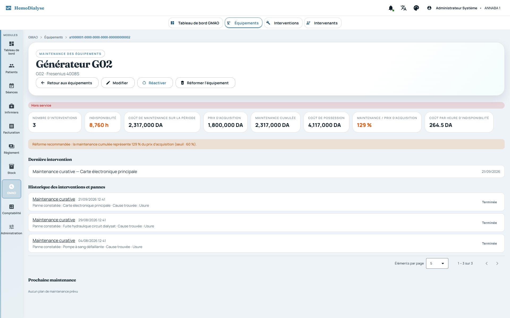
Préfixe
RG-GMA. La GMAO ne se contente pas d'enregistrer : elle calcule le coût de possession et l'indisponibilité de chaque équipement, recommande la réforme quand la maintenance cumulée devient excessive, avertit quand un patient est affecté à un générateur indisponible et relance les interventions et plans en retard. Le générateur de dialyse du parc est l'équipement GMAO : il n'existe pas de second référentiel de générateurs. Sources :Equipement,Intervention,PlanMaintenance,Intervenant,LigneCoutIntervention,PieceJointe,CalculDIndisponibilite,IndicateursDIntervention,AnalyseDeDecision,ConstaterEtat,SuiviControleur,InterventionControleur,EquipementControleur,IntervenantControleur,PlanMaintenanceControleur(contextecontexts/gmao).
Tous les écrans et API GMAO sont réservés à ADMIN et limités au centre de la session : un
équipement, une intervention, un plan ou un intervenant d'un autre centre est
« non trouvé ». La réforme d'un équipement exige le rôle ADMIN et l'habilitation GMAO_REFORME (l'habilitation seule ne suffit plus, KB-GMAO-32), la rectification d'une
intervention le rôle ADMIN et l'habilitation GMAO_RECTIFICATION (l'habilitation seule ne suffit plus, KB-GMAO-52 ;
droits distincts de l'administration GMAO).
Toute liste GMAO (équipements, interventions, plans, intervenants) est paginée (RG-TRV-020) ; les statistiques du tableau de bord sont des comptages serveur, jamais recalculés côté interface.
Types : générateur de dialyse, station de traitement d'eau, osmose inverse, ultrafiltre, charbon actif, adoucisseur, désinfectant chimique, filtre à particules, pompe d'eau, compresseur d'air, alarme de surveillance, autre.
Création : code, désignation, type, date d'installation obligatoires ; prix d'acquisition non négatif ; le code est unique par centre (« Un équipement avec ce code existe déjà dans ce centre ») ; le code, le type et la date d'installation sont immuables ensuite. La salle de rattachement est facultative.
Statuts : EN_SERVICE, EN_MAINTENANCE, EN_ATTENTE_PIECE, HORS_SERVICE, DESACTIF,
A_REFORMER, REFORME.
Mise hors service : refusée si déjà hors service ou réformé ; réactivation : uniquement depuis
HORS_SERVICE (jamais depuis REFORME) ; observation obligatoire non vide.
Réforme : fin de vie définitive (aucun retour en arrière, aucun changement de statut
ensuite), motif obligatoire ; réservée aux administrateurs détenteurs de GMAO_REFORME. Un équipement
réformé n'est plus compté dans la capacité théorique (RG-PLN-071) ni proposé au placement.
Chaque changement de statut (création, hors service, réactivation, réforme, état saisi par une intervention) est inscrit dans l' historique de statuts (statut précédent, nouveau, motif, auteur, date), source du calcul d'indisponibilité.
Capacité de salle : l'affectation d'un générateur à une salle respecte la capacité de la salle (RG-PLN-061). Toute écriture sur un équipement vide le cache du référentiel des générateurs (le wizard patient voit immédiatement le nouvel état).
Avertissement de sécurité patient (non bloquant) : affecter un patient à un générateur
EN_MAINTENANCE, EN_ATTENTE_PIECE, HORS_SERVICE ou REFORME affiche un rappel dans
le wizard patient et à l'affichage de la séance ; l'enregistrement reste possible.
Types : préventive, curative, urgente, contrôle technique, installation, désinstallation, remplacement de pièce, révision complète. Priorités : normale (défaut), haute, urgente.
Création (statut PLANIFIEE) : équipement du centre, type, date de début, description obligatoires ;
état de l'équipement au moment de l'intervention obligatoire parmi
EN_SERVICE, EN_MAINTENANCE, EN_ATTENTE_PIECE, HORS_SERVICE ; l'échéance éventuelle ne précède pas la date de
début ; symptôme facultatif ; intervenant facultatif.
Démarrage : uniquement depuis PLANIFIEE ; l'équipement prend alors l'état constaté à la création
(avec historique), sauf s'il est déjà dans cet état. Un équipement réformé
ne change plus d'état.
Clôture : uniquement depuis EN_COURS ; actions réalisées obligatoires ; date et heure de
fin obligatoires et postérieures au début ; état de l'équipement après
obligatoire parmi EN_SERVICE, EN_ATTENTE_PIECE, HORS_SERVICE, A_REFORMER ; cause de panne facultative.
L'équipement prend l'état « après ».
Une intervention terminée ne peut plus être annulée ; annuler fixe le statut ANNULEE avec motif
et auteur. Les états REFORME et DESACTIF ne peuvent jamais être fixés par
une intervention.
Rectification (GMAO_RECTIFICATION) : seule une intervention terminée se rectifie ; motif
obligatoire ; l'intervention est rouverte (EN_COURS), la clôture précédente est
conservée dans la chronologie, la date de fin, les états et les lignes de coût automatiques sont réinitialisés
(recalculés à la nouvelle clôture) ; une nouvelle date de début peut être donnée.
Lignes de coût : types pièce, main d'œuvre, intervenant, autre ; libellé obligatoire, quantité > 0, prix unitaire valide ; une pièce peut référencer un article du stock. Ajout possible sauf sur une intervention annulée ; suppression uniquement tant que l'intervention est ouverte (planifiée ou en cours — une terminée se rectifie d'abord). Le coût d'une intervention est la somme de ses lignes.
Valorisation automatique du temps de l'intervenant à la clôture : durée (début → fin, en heures arrondies au centième) × tarif horaire par défaut de l'intervenant ; ligne « Honoraires intervenant » pour un prestataire externe, « Main d'œuvre » pour un interne ; sans effet si le tarif est absent ou nul, si la durée est nulle, ou si une ligne de même nature existe déjà (jamais de double comptage). Pour un intervenant externe, saisir manuellement de la main d'œuvre est refusé.
Pièces jointes d'une intervention (R22, R23 ; refonte G5, décisions du 2026-10-12) : bon
d'intervention, facture, photo ou autre ; PDF, PNG ou JPEG reconnus à leur contenu entier (PDF : en-tête %PDF-x.y et
marqueur %%EOF en fin ; PNG : signature, blocs aux sommes de contrôle justes, IHDR cohérent, IEND en dernier ; JPEG : début
FFD8FF et fin FFD9), jamais d'après le type déclaré par le client ; un nom qui porte une extension (1 à 8 lettres ou
chiffres) doit avoir celle du format reconnu (pdf, png, jpg ou jpeg) ; 5 Mo maximum (octets exacts), fichier non
vide, 50 documents au plus par intervention, tenu même sous envois simultanés ; nom assaini (sans chemin, sans ..,
sans caractères de contrôle ni de sens d'écriture, 150 caractères maximum sans couper un emoji), assaini de nouveau à la
lecture ; type servi toujours celui du format reconnu (sinon application/octet-stream), en pièce jointe. On ne joint ni
ne retire de pièce sur une intervention annulée, terminée ou supprimée (422 BUSINESS_RULE_VIOLATION) ; la liste et le
téléchargement restent permis. Accès ADMIN ; ajout et retrait journalisés, téléchargements non ; suppression physique ;
événements PieceJointeAjoutee et PieceJointeRetiree (sans octets, sans consommateur).
Tâches d'une intervention (fonctionnalité créée le 2026-10-12 à la demande de l'utilisateur,
KB-GMAO-55 ; statuts, limite et habilitation à valider par le métier) : A_FAIRE → EN_COURS → COMPLETEE, sans
retour ; description obligatoire (rognée) ; 30 tâches au plus par intervention. Une tâche s'ajoute à une intervention
planifiée ou en cours ; elle ne se démarre que « à faire » et ne s'achève qu'« en cours », et seulement sur une intervention
en cours. Toute transition refusée renvoie 422 BUSINESS_RULE_VIOLATION sans rien modifier ; intervention ou tâche
inconnue (ou d'un autre centre) : 400. Rôle ADMIN, centre de la session. Chaque étape (ajoutée, démarrée, achevée) publie
un événement ; la clôture de l'intervention n'exige pas que les tâches soient achevées. Routes :
POST /api/v1/gmao/interventions/{id}/taches, .../taches/{tacheId}/demarrer, .../taches/{tacheId}/achever. Source :
Intervention, Tache, TransitionDeTacheInvalide, LimiteDeTachesAtteinte, InterventionControleur.
Une intervention est en retard (relance) si elle est planifiée avec une date de début passée, ou ouverte (planifiée ou en cours) avec une échéance dépassée.
Indicateurs d'une intervention : délai de prise en charge (création → début), durée (début → fin,
ou → maintenant si en cours), indisponibilité de l'équipement pendant l'intervention
et sa part dans l'indisponibilité des 12 derniers mois (plafonnée à 100 %, vide s'il n'y a eu aucune
indisponibilité). Un bon d'intervention imprimable et une chronologie sont disponibles ; une intervention supprimée
logiquement (à la main en base) se lit comme un identifiant inconnu : « Intervention non trouvée » (400, KB-GMAO-69 corrigé).
Routes : GET /api/v1/gmao/interventions/{id}/bon, .../indicateurs, .../chronologie. Source : ConsulterLesIndicateurs,
ConsulterLaChronologie, ImprimerLeBon, IndicateursDIntervention, SuiviControleur.
Un intervenant porte nom (obligatoire), type INTERNE ou EXTERNE (obligatoire), téléphone, email,
tarif horaire par défaut (non négatif), état actif ; il se désactive (jamais
supprimé). Référentiel propre au centre, distinct des fournisseurs du stock.
Un plan relie un équipement à une désignation, une fréquence et une prochaine date prévue (tous
obligatoires) ; fréquences : hebdomadaire (7 j), bimensuelle (15 j), mensuelle,
trimestrielle, semestrielle, annuelle. Statuts : ACTIF, INACTIF, ARCHIVE.
Exécuter un plan (uniquement ACTIF) enregistre la date et le nombre d'exécutions et recalcule la
prochaine date à partir d'aujourd'hui (+1 semaine, +15 jours, +1/3/6 mois, +1 an).
Désactiver : uniquement un plan actif ; réactiver : uniquement un plan inactif, avec une nouvelle date prévue.
Un plan en retard est un plan actif dont la prochaine date prévue est atteinte ou dépassée ; la liste des plans en retard et le compteur du tableau de bord servent de relance.
Indisponibilité d'un équipement sur une période = durée cumulée passée en EN_MAINTENANCE,
EN_ATTENTE_PIECE ou HORS_SERVICE, calculée par rejeu de l'historique de statuts ;
DESACTIF et REFORME (fin de vie) ne comptent pas.
Fiche équipement (12 derniers mois) : nombre d'interventions, indisponibilité en heures, coût de
maintenance sur la période et cumulé depuis l'installation, dernière intervention,
prochain plan de maintenance, et analyse de décision. Route : GET /api/v1/gmao/equipements/{id}/fiche. Source :
ConsulterLaFiche, CalculDIndisponibilite, SuiviControleur.
Analyse de décision : coût de possession = prix d'acquisition + maintenance cumulée ; ratio de maintenance = maintenance cumulée / prix d'acquisition (arrondi à 4 décimales pour l'affichage seulement ; vide si le prix est inconnu) ; coût par heure d'indisponibilité = coût de la période / heures d'indisponibilité (vide si aucune).
Réforme recommandée quand l'équipement est encore actif (ni réformé ni désactivé) et soit au
statut A_REFORMER, soit son ratio de maintenance exact (non arrondi) atteint ou dépasse le seuil de
60 % (paramètre serveur hemodialyse.gmao.reforme-seuil-ratio, défaut 0,60, strictement positif ; un seul seuil pour
toute l'application) : à 59,996 % l'écran affiche 0,6000 mais la réforme n'est pas recommandée (KB-GMAO-72 corrigé, décision
du 2026-10-12). La recommandation est une aide : la réforme reste une décision humaine d'un détenteur de GMAO_REFORME.
Source : AnalyseDeDecision.
Les indicateurs GMAO de la direction (coûts, indisponibilité, réformes recommandées, alertes
critiques) sont décrits au chapitre direction (RG-DIR). Leur source est la synthèse GMAO du centre publiée par le
module GMAO (SyntheseGmaoDuCentre) ; le nombre de générateurs de la capacité théorique vient de GenerateursInstalles
(installés avant la fin de la période, ni réformés, ni désactivés, ni supprimés).
Proposition de réforme (P2) (créée le 2026-10-12 à la demande de l'utilisateur, KB-GMAO-57 ; texte et
destinataires à valider par le métier) : quand la clôture d'une intervention fait constater l'état A_REFORMER d'un
équipement, les détenteurs de l'habilitation GMAO_REFORME du centre de l'équipement reçoivent la notification durable
REFORME_PROPOSEE (équipement, état constaté, suggestion de consulter l'aide à la décision, RG-GMA-062/063). Aucune
réforme automatique : la décision reste humaine (RG-GMA-063). Aucune notification pour un autre état constaté, ni quand
l'équipement était déjà A_REFORMER ; un événement rejoué ne crée pas de doublon. Source : GmaoEvenementsReformeListener,
NotificationService.notifyReformeProposee.
Disponibilité d'un équipement pour un patient : avant d'affecter un patient à un générateur, l'écran
demande si l'équipement est disponible ; il l'est seulement s'il est EN_SERVICE (en maintenance, en attente de pièce, hors
service, à réformer, réformé et désactivé ne le sont pas : KB-GMAO-73 corrigé, décision du 2026-10-12). Avertissement non
bloquant : la décision reste au personnel. Équipement inconnu ou d'un autre centre : « Équipement non trouvé » (400). Route :
GET /api/v1/gmao/equipements/{id}/disponibilite-patient. Source : VerifierLaDisponibilite,
StatutEquipement.disponiblePourUnPatient, SuiviControleur.
Statistiques GMAO du centre (GET /api/v1/gmao/stats) : totaux d'équipements (tous statuts) et par statut
(en service, en maintenance, hors service ; les autres statuts ne sont comptés que dans le total, KB-GMAO-77), d'interventions
(total, en cours, terminées), plans actifs et en retard, interventions à relancer (RG-GMA-030) ; les éléments supprimés
logiquement ne sont jamais comptés. Source : ConsulterLesStatistiques.
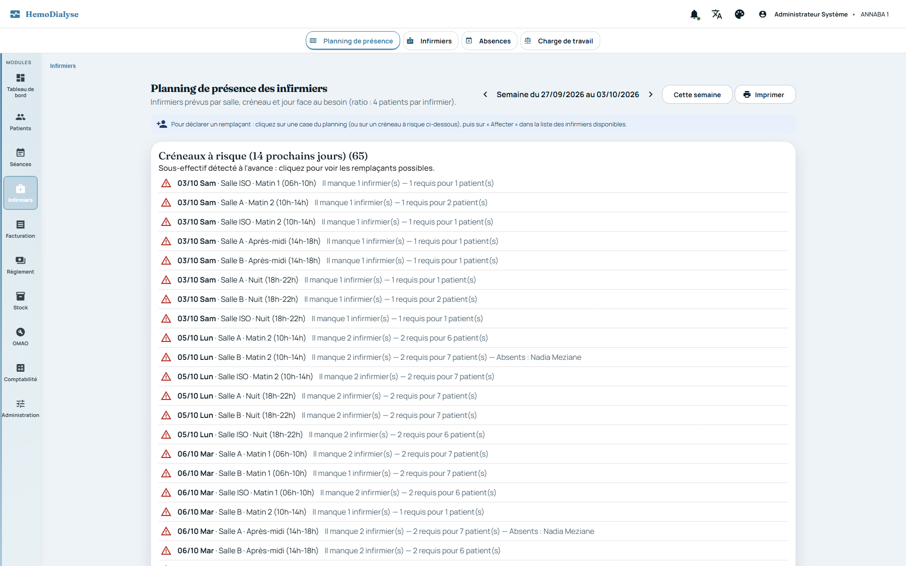
Préfixe
RG-INF. Le système calcule l'effectif requis à partir du ratio de sécurité, détecte à l'avance les créneaux en sous-effectif, propose et classe des remplaçants et équilibre la charge. La présence, les alertes, le classement des remplaçants, la charge, l'impression et le contrôle de 07:15 sont servis par le contexteplanification(slice P4) : service de domainePresenceDeLaSemaine,ClassementDesRemplacants,ChargeDesInfirmiers, cas d'usageConsulterLaPresence,ClasserLesRemplacants,ConsulterLaChargeDesInfirmiers,ImprimerLaPresence,ControlerLaPresence, contrôleurPresenceControleur, jobControleDeLaPresenceDe0715. Le référentiel des fiches et des comptes (10.1 et 10.2) est servi par le contexteplanification(slice P2) : agrégatInfirmier, cas d'usageEnregistrerUnInfirmier,ModifierUnInfirmier,DesactiverUnInfirmier,ReactiverUnInfirmier,LierUnCompte,CreerUnCompte,DelierLeCompte, contrôleurInfirmiersControleur. Le roulement, les absences, « Mon planning » et les remplacements (10.3, 10.4 et 10.6) sont servis par le même contexte (slice P3) : agrégatsRoulementDeLInfirmier,AbsenceInfirmier,Remplacement, cas d'usageAffecterAuRoulement,ModifierLAffectation,RetirerLAffectation,DeclarerUneAbsenceDInfirmier,RetirerUneAbsence,ConsulterMonPlanning,DeclarerMonAbsence,RetirerMonAbsence,AffecterUnRemplacant,AnnulerLeRemplacement, contrôleursRoulementControleur,AbsencesDesInfirmiersControleur,MonPlanningControleur,RemplacementsControleur.
Une fiche infirmier porte : matricule, nom (obligatoires), prénom, téléphone, qualification
(INFIRMIER, MAJOR, AIDE_SOIGNANT — obligatoire), indicateur habilité isolement (facultatif à la saisie, faux par
défaut), état actif, et un éventuel compte utilisateur lié. Bornes (refus 400 BAD_REQUEST, 26/10/2026) : matricule 50
caractères, nom et prénom 255, téléphone 50. Un corps illisible, un champ obligatoire absent, une qualification inconnue ou une
pagination négative sont refusés en 400 (un corps qui n'est pas du JSON : 415) ; une taille de page est plafonnée à 100 et la
taille effective est renvoyée.
Le matricule est unique par centre, sans tenir compte de la casse (INFIRMIER_MATRICULE_EXISTANT) ;
il est enregistré en majuscules (26/10/2026 ; les fiches existantes gardent leur casse jusqu'à leur modification) ; fiche
inconnue du centre : INFIRMIER_INTROUVABLE. Deux écritures du référentiel d'un même centre sont sérialisées (verrou du
centre) ; une écriture qui n'obtient pas le verrou en 5 secondes est refusée en 409 PLANIFICATION_ECRITURE_CONCURRENTE.
Chaque cas d'usage est une seule transaction (fiche et compte atomiques).
Un infirmier désactivé n'apparaît plus dans le planning de présence mais reste au référentiel ;
désactiver ou réactiver une fiche reliée à un compte désactive ou
réactive aussi le compte, et inversement (un compte activé/désactivé dans l'administration des utilisateurs fait
suivre sa fiche, dans le centre de l'administrateur seulement ; désactiver une fiche n'agit que sur le centre de la
fiche). Aucune opération n'impose à un compte un état que la fiche n'a pas : réactiver une fiche déjà active dont le compte
est désactivé, ou délier une fiche inactive dont le compte est actif, est refusé en 422 (COMPTE_ETAT_INCOHERENT,
COMPTE_DELIAISON_INCOHERENTE). Un compte lié à une fiche active ne se supprime pas (422
COMPTE_LIE_A_UNE_FICHE_ACTIVE) ; sinon ses fiches inactives sont déliées et le compte supprimé dans la même
transaction. Les noms de la fiche et du compte ne sont pas synchronisés (à décider, KB-PLN-14).
Droits (corrigé le 26/10/2026 : la règle disait « tous les rôles de centre peuvent lire », ce que le
filtre de périmètre n'a jamais permis). Lecture du référentiel : ADMIN et SECRETAIRE ; le MEDECIN seul et
l'INFIRMIER seul sont refusés (403 ROLE_SCOPE, seule la combinaison MEDECIN + INFIRMIER lit) ; le SUPERADMIN et la
DIRECTION sont refusés aussi. Écriture : ADMIN seul ; la liste des comptes liables : ADMIN seul. Le refus de rôle est
rendu avant toute lecture du corps (403 avant 400 et 415). La liste est paginée. Garde : matrice routes × profils de
AutorisationsDesInfirmiersCharacterizationIntegrationTest.
Lier un compte existant : le compte doit exister dans le centre avec le rôle infirmier
(COMPTE_INTROUVABLE), ne pas être déjà relié à un autre infirmier (COMPTE_DEJA_UTILISE) ni à une fiche d'un autre centre
(COMPTE_LIE_A_UN_AUTRE_CENTRE : un compte ne se lie qu'à un seul centre, 26/10/2026), et avoir le même état que
la fiche (COMPTE_ETAT_INCOHERENT) ; la fiche ne doit pas déjà avoir de compte (COMPTE_DEJA_LIE).
Créer un compte depuis la fiche : fiche active uniquement (COMPTE_ETAT_INCOHERENT), identifiant
de 3 à 50 caractères [A-Za-z0-9._-]
(COMPTE_IDENTIFIANT_INVALIDE), identifiant libre tous centres confondus et sans tenir compte de la casse
(COMPTE_IDENTIFIANT_EXISTANT), adresse e-mail facultative mais au format valide et de 150 caractères au plus (400) ; un
mot de passe temporaire de
14 caractères (majuscule, minuscule, chiffre, symbole, sans
caractères ambigus) est généré, affiché une seule fois à l'administrateur et jamais journalisé ; le compte devra
être modifié au premier accès (RG-SEC-025). Le compte et la liaison sont créés dans une seule transaction.
Délier une fiche de son compte est possible (le compte est conservé et redevient liable), sauf pour une
fiche inactive dont le compte est actif (COMPTE_DELIAISON_INCOHERENTE) ; les comptes pouvant être liés sont listés
(paginés). Dans la liste des infirmiers, chaque ligne porte une action « Compte d'accès » (icône lien, ou gestion
de compte si déjà lié) qui ouvre la carte permettant de lier un compte existant, d'en créer un ou de le délier.
Source : InfirmiersComponent.
Une affectation place un infirmier actif dans une salle, sur un créneau, certains jours
de la
semaine (au moins un) ; un infirmier peut avoir plusieurs affectations. Affecter ou modifier le roulement d'un
infirmier désactivé est refusé (INFIRMIER_INACTIF) ; retirer une de ses affectations reste possible. Écriture
réservée à ADMIN.
Ordre des contrôles : infirmier (INFIRMIER_INTROUVABLE), état, salle, créneau, chevauchement ; à la modification,
l'affectation (AFFECTATION_INTROUVABLE) d'abord. Les entrées illisibles (corps, jour inconnu ou en minuscules,
identifiant)
sont refusées en 400 BAD_REQUEST après la vérification des droits (403 avant le corps).
La salle et le créneau doivent appartenir au centre (AFFECTATION_SALLE_INCONNUE,
AFFECTATION_CRENEAU_INCONNU) ; affectation inconnue ou d'un autre infirmier : AFFECTATION_INTROUVABLE.
Jamais deux affectations d'un même infirmier sur le même créneau un même jour, même dans deux
salles (AFFECTATION_CHEVAUCHEMENT). Le contrôle se fait sous le verrou de la fiche de l'infirmier : deux
écritures simultanées
du même infirmier sont départagées, la seconde est refusée (AFFECTATION_CHEVAUCHEMENT, ou 409
PLANIFICATION_ECRITURE_CONCURRENTE si le verrou n'est pas obtenu en 5 s). Des chevauchements hérités d'avant ce
verrou restent
lisibles et supprimables ; on ne peut modifier l'une des affectations tant qu'elle chevauche l'autre.
Avertissement de sur-effectif : la réponse d'une affectation ajoutée ou modifiée liste les jours
de la semaine courante du centre où la case dépasse l'effectif requis (joursEnSureffectif, RG-INF-047) ; il
n'est jamais
bloquant et son calcul en échec est ignoré. « Aujourd'hui » est le jour du fuseau du centre (Africa/Algiers par
défaut).
Chaque écriture du roulement est tracée au journal d'audit sous un libellé métier
(AFFECTATION_AJOUTEE,
AFFECTATION_MODIFIEE, AFFECTATION_RETIREE) avec l'identifiant de l'affectation.
Types : congé, maladie, formation, autre (en majuscules). Une absence couvre une période (bornes
incluses)
qui se superpose au roulement ; la fin ne précède pas le début ; durée maximale 366 jours ; type obligatoire ;
motif de
255 caractères au plus (blanc = sans motif, espaces de bord retirés). Une période, un type ou un motif inutilisable
est
refusé en 400 BAD_REQUEST. Deux absences du même infirmier ne partagent jamais un jour (doublon, chevauchement
partiel,
absence incluse : ABSENCE_CHEVAUCHEMENT, y compris par « Mon planning » ; des absences contiguës sont acceptées) ;
le contrôle
se fait sous le verrou de la fiche. Écrire une absence pour un infirmier désactivé est refusé (INFIRMIER_INACTIF).
Déclaration par l'administration ou le secrétariat (ADMIN, SECRETAIRE) pour un infirmier du
centre (INFIRMIER_INTROUVABLE sinon) ; suppression de même, quelle que soit la date de l'absence ni son auteur.
Droits de
lecture de la liste (paginée, du début le plus récent au plus ancien, 100 par page au plus, page ou taille négative
refusée en
400) : ADMIN, SECRETAIRE, et la combinaison MEDECIN + INFIRMIER ; le médecin seul et l'infirmier seul
sont refusés (403 ROLE_SCOPE) par le filtre de rôles (règle corrigée le 26/10/2026 : elle disait « lisible
par ADMIN, SECRETAIRE,
MEDECIN, INFIRMIER », ce que le filtre n'a jamais permis aux profils seuls ; le test d'autorisation des 12
routes verrouille
la matrice). Absence inconnue : ABSENCE_INTROUVABLE. Le médecin est toujours prévenu d'une déclaration,
l'administrateur
aussi quand la saisie ne vient pas de lui ; le retrait d'une absence est lui aussi notifié et diffusé (type
INFIRMIER_ABSENCE_RETIREE, les écrans de planification se rafraîchissent). L'auteur de la saisie est
conservé.
« Mon planning » : un infirmier connecté déclare lui-même ses absences à venir ou en cours
(fin non antérieure à aujourd'hui au jour du centre, sinon ABSENCE_PASSEE) et l'administration, le secrétariat
et le
médecin sont prévenus ; il ne retire que ses absences non commencées (début strictement postérieur à
aujourd'hui au jour du centre, sinon ABSENCE_NON_ANNULABLE) et déclarées par lui : une absence saisie par
l'administration ne peut être retirée que par l'administration (ABSENCE_NON_ANNULABLE) ; une absence sans auteur
connu (antérieure à la conservation de l'auteur) reste retirable par l'infirmier concerné. Il ne voit ni ne modifie
jamais
les données d'un autre (l'absence d'un collègue est ABSENCE_INTROUVABLE) ; sans fiche liée à son compte :
INFIRMIER_NON_LIE. Droits : « Mon planning » est ouvert à ADMIN, SECRETAIRE, INFIRMIER (seul) et
MEDECIN + INFIRMIER ; le médecin seul
est refusé (403 ROLE_SCOPE) ; un compte ADMIN ou SECRETAIRE lié à une fiche l'utilise comme un infirmier (règle
corrigée
le 26/10/2026 : elle ne précisait pas ces droits). Ordre des contrôles : entrées illisibles (400), fiche liée, état,
passé,
chevauchement. Son planning de la semaine (semaine courante du fuseau du centre par défaut) se présente
comme le planning des séances : une grille semaine (salles et créneaux en lignes, jours du dimanche au samedi en
colonnes) ou une vue jour (une carte par salle et créneau, onglets de jours), limitées aux salles et créneaux
où il est affecté. Chaque case indique sa situation (prévu, remplaçant, absent), le nombre de patients de la salle,
le nombre de collègues prévus avec lui (sans nom, un autre infirmier n'est jamais identifié), la salle
d'isolement et le détail des patients placés dans cette salle et ce créneau ce jour-là (nom, générateur,
signalement du risque infectieux, libération prochaine de la place) — uniquement ceux de ses propres cases ; les jours
de fermeture du centre (fermeture hebdomadaire, férié, fermeture exceptionnelle) sont grisés. Une fiche désactivée
reste
lisible. L'écran est responsive : défilement horizontal local de la grille, cartes en une colonne sur mobile.
Source :
ConsulterMonPlanning, DeclarerMonAbsence, RetirerMonAbsence, MonPlanningComponent.
Chaque écriture d'absence est tracée au journal d'audit sous un libellé métier (ABSENCE_DECLAREE,
ABSENCE_RETIREE, ABSENCE_DECLAREE_PAR_L_INFIRMIER, ABSENCE_RETIREE_PAR_L_INFIRMIER) avec l'identifiant de
l'absence.
Effectif requis d'une case (salle, créneau, jour) = ⌈patients / patients par infirmier⌉ (0 sans patient) ; le ratio vient du paramétrage du centre (RG-PLN-001, 4 par défaut). Les patients sont ceux placés sur la case (RG-PLN-010).
Les infirmiers prévus d'une case sont ceux du roulement, absences déduites, plus les remplaçants ajoutés ; en salle d'isolement, seuls les infirmiers habilités comptent dans l'effectif.
Statut d'une case : FERME (fermeture hebdomadaire, férié ou fermeture exceptionnelle),
SANS_PATIENT, COUVERT, SOUS_EFFECTIF ; le manque = requis − effectif compté (jamais négatif). Les absents
normalement prévus sont listés avec leur type d'absence.
Conflits : DOUBLE_AFFECTATION (un infirmier prévu dans deux salles sur le même créneau le même
jour) et NON_HABILITE (infirmier non habilité prévu en salle d'isolement).
La semaine de présence (dimanche → samedi) donne le nombre de cases en sous-effectif ; elle est
calculée à la demande, non mise en cache, bornée au centre. Droits (corrigé le 27/10/2026 : la règle disait « lisible
par ADMIN, SECRETAIRE, MEDECIN, INFIRMIER ») : les routes de présence sont annotées pour ces quatre rôles mais
le filtre de périmètre refuse le MEDECIN seul sur tout sauf la semaine (403 ROLE_SCOPE sur alertes, sur-effectif,
remplaçants, charge, impression), refuse l'INFIRMIER seul partout (il lit son planning par « Mon planning », RG-INF-032),
et refuse le SUPERADMIN et la DIRECTION ; seuls ADMIN, SECRETAIRE et la combinaison MEDECIN + INFIRMIER lisent
tout. Entrées (27/10/2026) : un paramètre illisible ou manquant (centerId, date, jours, page, size, mois,
salleId, creneauId) est refusé en 400 BAD_REQUEST ; sans date, le jour du centre (fuseau du centre, défaut
Africa/Algiers) et non le jour UTC. Garde : matrice routes × profils de
AutorisationsDeLaPresenceCharacterizationIntegrationTest.
Alertes de sous-effectif : liste des cases en sous-effectif sur un horizon donné (14 jours par défaut, de 1 à 60, sinon 400), de la plus proche à la plus lointaine, avec les absents responsables. Le jour de départ est « aujourd'hui » au fuseau du centre.
Contrôle quotidien à 07:15 (ControleDeLaPresenceDe0715.controlerLaPresence, fuseau Africa/Algiers,
« aujourd'hui » calculé par centre) : pour chaque centre actif (avec ou sans infirmier actif ; un centre désactivé
n'est pas contrôlé), si au moins un créneau est en sous-effectif dans les 14 jours à venir, l'administration, le
secrétariat et les médecins reçoivent une notification temps réel et durable (INFIRMIER_SOUS_EFFECTIF : nombre de
créneaux et première date). Une seule alerte par centre, par jour du centre et par type (identifiant déterministe) :
une nouvelle exécution le même jour n'envoie rien de plus (un sous-effectif apparu après la première exécution du jour n'est signalé que le lendemain). Un seul cron à 07:15 Africa/Algiers sert tous les centres : un centre d'un autre fuseau est contrôlé à une autre heure locale, mais sur son propre jour. Un ratio illisible en base (hors 1 à 20) est lu comme le
défaut 4 et journalisé ; le ratio est refusé en 400 à l'écriture hors de 1 à 20 (RG-PLN-003). Un centre ou un contrôle en
erreur n'empêche pas les autres (journalisé).
Sur-effectif. Chaque case porte aussi le nombre d'infirmiers en trop (surplus) : infirmiers
comptés (en salle d'isolement, seuls les habilités comptent) moins l'effectif requis, jamais négatif ; dans une salle
sans patient, tous les infirmiers prévus sont en trop. Le sur-effectif n'est pas un manque : le statut de la case
reste COUVERT (ou SANS_PATIENT), aucune alerte n'est envoyée ; il est signalé en jaune avec « +N » sur le planning
de
présence et en « N infirmier (s) en trop » sur le planning des séances, pour réaffecter ces ressources aux cases en
sous-effectif. C'est toutefois du personnel payé sans activité utile : le contrôle quotidien de 07:15 (RG-INF-046)
prévient aussi l'administrateur (INFIRMIER_SUREFFECTIF) dès qu'une case des 14 prochains jours est en sur-effectif —
y compris une case avec patients dont les infirmiers dépassent le ratio (3 infirmiers pour 4 patients avec un
ratio de 4) — avec le nombre de cases, de vacations en trop et les heures payées sans activité utile (vacations en
trop × durée d'une vacation des réglages du centre, RG-PLN-098). Ce contrôle est indépendant de celui du
sous-effectif : l'échec de l'un n'empêche pas l'autre. À l' affectation d'un infirmier à une salle (RG-INF-020),
la
réponse indique les jours de la semaine en cours où elle crée un sur-effectif ; l'écran affiche un avertissement, sans
jamais refuser ni annuler l'affectation (un échec du calcul de cet avertissement est ignoré). Lecture par HTTP
(27/10/2026) : GET /api/v1/infirmiers/presence/alertes-sureffectif?jours= (horizon des alertes, RG-INF-045) liste les
cases en sur-effectif (sureffectifs) et les infirmiers prévus dans deux salles au même créneau le même jour
(doublesAffectations : date, créneau, infirmier, salles) — un tel infirmier reste compté présent dans chaque salle (la
couverture peut être surestimée) et la semaine continue de signaler le conflit DOUBLE_AFFECTATION (RG-INF-043). Le
contrôle de 07:15 ne notifie que les surplus par case.
Pour une case, les candidats exclus sont : les infirmiers absents ce jour-là, ceux déjà prévus sur ce créneau (dans n'importe quelle salle), et, en salle d'isolement, les non habilités.
Les autres sont classés de 0 à 100 : base 40 ; +15 salle connue ; +10 créneau habituel ; +max
(0 ; 20 − 4 × séances de la semaine) selon la charge ; +10 jour libre ou −25 si double vacation (déjà prévu sur un
autre créneau le même jour) ; +10 habilité isolement pour une salle d'isolement. Les raisons sont affichées :
salle connue, créneau habituel, charge faible (≤ 2 séances),
jour libre, habilité isolement, double vacation. Départage par nom ; dix candidats au plus. La case est validée
(27/10/2026) comme pour l'affectation d'un remplaçant (RG-INF-052) : salle et créneau du centre (422
AFFECTATION_SALLE_INCONNUE, AFFECTATION_CRENEAU_INCONNU), date non passée au jour du centre (422
REMPLACEMENT_DATE_PASSEE), jour ouvert (422 REMPLACEMENT_JOUR_FERME) ; date, salleId et creneauId sont
obligatoires (400).
Affecter un remplaçant (ADMIN, SECRETAIRE). Ordre des contrôles : un infirmier ne peut se
remplacer lui-même (400 BAD_REQUEST, en premier) ; salle et créneau du centre (AFFECTATION_SALLE_INCONNUE,
AFFECTATION_CRENEAU_INCONNU) ; date non passée au jour du centre (REMPLACEMENT_DATE_PASSEE) et jour ouvert
(REMPLACEMENT_JOUR_FERME : fermeture hebdomadaire, férié, fermeture exceptionnelle) ; remplacé éventuel du centre
(INFIRMIER_INTROUVABLE) qui doit être absent ce jour-là ou prévu sur la case
(REMPLACEMENT_REMPLACE_NON_CONCERNE) ; remplaçant éligible (REMPLACEMENT_INELIGIBLE : inconnu, autre centre,
désactivé, absent, déjà prévu ou déjà remplaçant sur ce créneau, non habilité en salle d'isolement). L'éligibilité est
jugée sous le verrou de la fiche du remplaçant : deux affectations simultanées du même remplaçant sur un créneau
sont départagées (la seconde est REMPLACEMENT_INELIGIBLE ou 409 PLANIFICATION_ECRITURE_CONCURRENTE, jamais une
erreur 500) ; un remplaçant
devenu absent n'est plus compté ; l'annulation d'un remplacement est possible (REMPLACEMENT_INTROUVABLE sinon).
Écritures
tracées au journal d'audit (REMPLACANT_AFFECTE, REMPLACEMENT_ANNULE) avec l'identifiant du remplacement.
Charge mensuelle d'un infirmier = séances du roulement (jours d'ouverture du centre, hors jours
d'absence) + remplacements effectués dans le mois un jour de présence et d'ouverture (un remplacement posé un jour
d'absence du remplaçant ou de fermeture du centre n'est pas compté, 27/10/2026) ; les jours d'absence sont comptés à
part ; la moyenne du centre (une décimale) sert de repère d'équité pour répartir les remplacements. La liste est
triée par nom de famille puis prénom (27/10/2026) et paginée : page négative 400, taille plafonnée à 100 et
taille effective renvoyée (size), mois illisible 400 ; sans mois, le mois courant du centre.
Impression du planning de présence d'une semaine (GET …/presence/imprimer) par le modèle de
document PLANNING_PRESENCE_INFIRMIERS du centre. Formats servis : PDF (par défaut, en ligne), HTML (une page qui
embarque le PDF en base64) et EXCEL, XLS, XLSX (toujours un classeur .xlsx, en pièce jointe) ; tout autre format
de modèle (CSV, RTF, inconnu) est refusé en 400 (27/10/2026). Un centre sans modèle utilise le modèle livré, sans
que la lecture le crée (aucune écriture dans modele_document) ; un modèle désactivé refuse l'impression (422
DOCUMENT_MODEL_INACTIVE).
Le roulement des infirmiers peut être conçu et les cases en sous-effectif couvertes par
l'optimisation du planning (RG-PLN-080 à 100). L'application d'une proposition remplace le roulement des infirmiers
actifs (ROULEMENT, COMPLET) ou crée des remplacements (COUVERTURE) ; elle respecte les mêmes règles que la saisie
manuelle (jamais deux salles au même créneau le même jour, RG-INF-022 ; absents et non habilités exclus, RG-INF-050).
Le profil de planification d'un infirmier (taux d'activité, compétences pédiatrie et cathéter, RG-PLN-097) et les réglages du centre (durée d'une vacation, temps plein, repos hebdomadaire, RG-PLN-098) sont pris en compte par l'optimisation : un temps partiel ne dépasse pas son quota d'heures, chacun garde son repos hebdomadaire et les patients qui le demandent sont suivis par un infirmier compétent (RG-PLN-099). Ils n'imposent rien à la saisie manuelle du roulement.
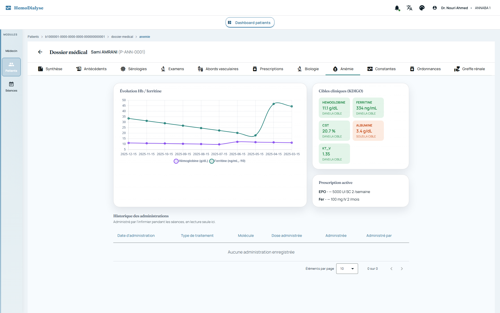
Préfixe
RG-MED. Le dossier médical n'est jamais saisi en double : les constantes viennent du cahier de dialyse, les évaluations KDIGO sont recalculées à la demande. Le système compare chaque résultat aux cibles KDIGO, contrôle chaque jour l'observance des traitements EPO/fer, replace en isolement un patient devenu à risque et alerte le médecin. Sources : agrégats debc-medical(Allergie,Antecedent,Serologie,DemandeExamen,ObservationBiologique,Ordonnance,AdministrationTraitement,AlerteObservance,BilanPreGreffe,EtapeBilanPreGreffe,DonneurVivant,DecisionRcp),Kdigo*Policy,PrescrireUnTraitement(DM2),AnalyseetObservationBiologique(DM6, contextedossier-medical),EnregistrerLeDossierMedicalDeBaseetExporterLeDossierMedical(DM8),ControleDeNuitDeLObservance,PeriodeDObservance,ConsulterLeSuiviDeLAnemie,KdigoGreffeQueryService, contrôleurs du dossier.
Écriture réservée au médecin (rôle MEDECIN) pour : antécédents, allergies, sérologies, demandes
d'examen, observations biologiques, ordonnances, prescriptions
médicales, résultats d'analyse, abords vasculaires, dossier médical, bilan et donneurs de greffe (le volet médical de
séance est ouvert à MEDECIN et ADMIN, RG-SEA-031). Lecture : MEDECIN et ADMIN (+ INFIRMIER pour dossier
médical, abords vasculaires, prescription active, observance, administrations, étapes de greffe). L'administrateur lit
mais n'écrit pas.
Toute donnée est rattachée à un patient et à un centre ; un patient ou une pièce d'un autre centre est introuvable (RG-TRV-001/002).
Toute consultation du dossier médical d'un patient est inscrite au journal d'audit (RG-SEC-050) ; les écritures aussi.
Les listes cliniques sont paginées (taille par défaut 20, plafond 200) ; les périodes de recherche exigent « du ≤ au » (« La date from doit être <= à la date to »).
Les codes cliniques sont des concepts codés : système (CIM10 diagnostics, LOINC analytes,
ATC médicaments, LOCAL dernier recours), code obligatoire (CONCEPT_CODE_SYSTEM_REQUIRED,
CONCEPT_CODE_REQUIRED) et format valide (CONCEPT_CODE_INVALID_CIM10, CONCEPT_CODE_INVALID_LOINC). Une période
clinique exige une date de début (PERIODE_DEBUT_REQUIS) et une fin non antérieure (PERIODE_FIN_ANTERIEURE).
Types : médical, chirurgical, familial, obstétrical, comorbidité. Statuts : ACTIF, RESOLU,
INACTIF. Patient, centre et type obligatoires (ANTECEDENT_CHAMPS_REQUIS) ; un code
CIM-10 ou un libellé est obligatoire (ANTECEDENT_DIAGNOSTIC_REQUIS) ; la date de début n'est pas future
(ANTECEDENT_DATE_FUTURE).
Un même code CIM-10 ne peut pas être actif deux fois chez un patient ; un antécédent résolu ou inactif n'est pas en conflit (« Un antécédent actif avec ce diagnostic existe déjà pour ce patient »).
« Résoudre » fixe la date de fin et le statut RESOLU ; un antécédent déjà résolu ne se résout pas
deux fois (ANTECEDENT_DEJA_RESOLU).
Antécédents, reprise sur place DM5 (contexte dossier-medical, AntecedentsControleur, ADR 0084 ;
décisions déléguées, à confirmer avec les métiers et le DPO) :
(a) droits : MEDECIN et ADMIN lisent, le MEDECIN seul écrit ; l'INFIRMIER n'a aucun accès (reproduit, à confirmer) ;
DIRECTION et SUPERADMIN 403 ROLE_SCOPE ; garde de centre sur les 5 routes ;
(b) patient : un patient inconnu ou d'un autre centre est refusé en 404 PATIENT_INTROUVABLE à l'enregistrement
(avant : une fiche orpheline était créée) ; les lectures d'un tel patient restent une page vide en 200 (reproduit) ;
(c) entrées illisibles : corps, type, système de codage, statut, date, identifiant, centerId, page/size
absents ou illisibles : 400 stable BAD_REQUEST sans nom de classe interne (avant : 500), et 403 avant 400 pour un profil
sans droit ; code sans système : 400 ;
(d) bornes de colonne : sévérité 50 caractères, libellé libre et affichage du code 255, code 20 : 400 stable
(avant : 500) ;
(e) diagnostic : tous les systèmes CIM10, LOINC, ATC et LOCAL sont acceptés avec un simple contrôle de forme (CIM-10
et LOINC), code mis en majuscules (reproduit) ; l'unicité du diagnostic actif est protégée par un verrou de transaction
pendant l'enregistrement et la correction, sans contrainte en base ; une écriture qui n'obtient pas le verrou en 5 s
répond 409 ANTECEDENT_ECRITURE_CONCURRENTE ; jamais d'unicité pour un libellé libre (reproduit) ;
(f) correction : elle remplace diagnostic, libellé, dates, sévérité et note (absents = effacés), ignore le type,
conserve le statut s'il est absent, ne contrôle pas le futur et peut poser RESOLU sans fin ou rouvrir un antécédent
(reproduit, à confirmer) ; antécédent introuvable : 400 BAD_REQUEST (reproduit) ;
(g) résolution : la date peut être absente ou future (reproduit) ;
(h) suppression : un antécédent inexistant répond toujours 204 (reproduit) mais n'est plus inscrit au journal
d'audit ; aucun événement « antécédent ajouté / résolu » n'est publié (reproduit, rien inventé) ; les lectures ne sont
pas tracées (à décider avec le DPO) ;
(i) jour : la limite « pas dans le futur » lit le jour UTC de la JVM (reproduit, à confirmer : jour du centre).
Catégories : médicament, aliment, environnement, biologique ; criticité BASSE ou HAUTE ; type de
réaction allergie ou intolérance ; vérification SUSPECTEE (défaut),
CONFIRMEE, REFUTEE. Substance codée, catégorie, criticité et type obligatoires (ALLERGIE_CHAMPS_REQUIS) ; date
de constatation par défaut aujourd'hui, jamais future (ALLERGIE_DATE_FUTURE).
Une allergie de criticité haute doit décrire ses manifestations
(ALLERGIE_MANIFESTATIONS_REQUISES) ; déclarer ou passer une allergie en criticité haute émet l'événement
« allergie critique déclarée ». Une consultation dédiée liste les allergies critiques du patient. (Reprise DM5 :
l'événement n'est plus levé, le legacy ne le publiait jamais, voir RG-MED-036 g.)
Allergies, reprise sur place DM5 (contexte dossier-medical, AllergiesControleur, ADR 0084 ;
décisions déléguées, à confirmer avec les métiers et le DPO) :
(a) droits : MEDECIN et ADMIN lisent (liste et critiques), le MEDECIN seul écrit ; l'INFIRMIER est refusé partout,
y compris sur critiques (reproduit, à confirmer : bandeau d'allergie pour l'infirmier ?) ; garde de centre ;
(b) patient : inconnu ou d'un autre centre : 404 PATIENT_INTROUVABLE à la déclaration (avant : fiche orpheline) ;
lectures : page ou liste vide en 200 (reproduit) ;
(c) entrées illisibles : corps, système de codage, catégorie, criticité, type de réaction, statut, date, identifiant
absents ou illisibles : 400 stable sans nom de classe interne (avant : 500), 403 avant 400 pour un profil sans droit ;
code absent : 422 CONCEPT_CODE_REQUIRED (reproduit) ;
(d) bornes de colonne : code de la substance 20 caractères, affichage 255 : 400 (avant : 500) ;
(e) déclaration : aucune unicité, la même substance peut être déclarée plusieurs fois (reproduit, à décider) ;
(f) correction : seuls la criticité (obligatoire), les manifestations (remplacées, même absentes : une criticité basse
les efface) et le statut (conservé s'il est absent) se corrigent ; substance, catégorie, type et date sont immuables ;
allergie introuvable : 400 (reproduit) ; écriture concurrente : 409 ALLERGIE_ECRITURE_CONCURRENTE ;
(g) bandeau « critiques » : toute criticité haute, y compris une allergie réfutée (reproduit, à confirmer) ; aucun
événement « allergie déclarée » ni « allergie critique déclarée » n'est publié (reproduit, rien inventé) ;
(h) suppression : une allergie inexistante répond toujours 204 (reproduit) sans ligne d'audit ; lectures non tracées ;
codes FHIR d'allergie inchangés (DM8).
Marqueurs : VIH (Ac), AgHBs, AcHBs, AcHBc, AcVHC, ARN VHC, TPHA, CMV IgG/IgM, toxoplasmose IgG/IgM,
EBV IgG/IgM ; résultats : positif, négatif, douteux, en cours. Patient, centre,
marqueur, résultat et date de prélèvement obligatoires (SEROLOGIE_CHAMPS_REQUIS) ; date non future
(SEROLOGIE_DATE_FUTURE).
Un résultat positif impose de documenter la conduite à tenir (SEROLOGIE_CONDUITE_REQUISE), à la
saisie comme à la correction.
Un seul résultat par patient, marqueur et date de prélèvement (« Un résultat existe déjà pour ce marqueur à cette date de prélèvement »). Le résumé du patient présente le dernier résultat de chaque marqueur.
Conséquence automatique : après enregistrement ou correction d'une sérologie, le patient est évalué « à risque infectieux » (dernier résultat positif pour AgHBs, anti-VHC, ARN VHC ou VIH, RG-PLN-012) et, si besoin, replacé en salle d'isolement ou signalé à l'administration (RG-PLN-053), dans la même transaction que la sérologie (un patient inconnu du centre ou un verrou non obtenu annule aussi la sérologie). Aucun événement « sérologie positive détectée » n'est publié : le legacy le levait sans jamais le diffuser et la reprise n'en invente pas (RG-MED-034 e).
Sérologies, reprise sur place DM4 (contexte dossier-medical, SerologiesControleur, ADR 0083 ;
décisions déléguées, à confirmer avec les métiers et le DPO) :
(a) droits : MEDECIN et ADMIN lisent (liste, synthèse), le MEDECIN seul écrit (enregistrer, corriger, supprimer) ;
l'ADMIN ne peut pas écrire ; l'INFIRMIER n'a aucun accès au statut sérologique (reproduit, à confirmer) ; DIRECTION et
SUPERADMIN 403 ROLE_SCOPE ; garde de centre sur les 5 routes ;
(b) entrées illisibles : corps absent ou mal formé, marqueur ou résultat absent ou inconnu, titre non numérique,
date illisible ou impossible, identifiant, centerId, page/size illisibles : 400 stable BAD_REQUEST sans nom de
classe interne (avant : 500, ou le nom d'une classe interne dans le détail), et 403 avant 400 pour un profil sans
droit ;
(c) bornes de colonne : unité au plus 20 caractères, laboratoire 255, titre arrondi à 3 décimales et d'au plus
7 chiffres entiers : 400 stable (avant : 500) ; reproduit : titre négatif, prochain contrôle antérieur au prélèvement,
date très ancienne et conduite sans limite acceptés ;
(d) règle de positivité : seul POSITIF impose une conduite à tenir non blanche (SEROLOGIE_CONDUITE_REQUISE) ;
DOUTEUX et EN_COURS passent sans conduite (reproduit, à confirmer) ; la règle de risque infectieux de la Planification
(derniers résultats de AgHBs, anti-VHC, ARN VHC, VIH) et celle de la Direction restent séparées (non unifiées ici) ;
(e) événement : SerologiePositiveDetectee n'est pas publié (reproduit, rien inventé) ;
(f) correction : seuls le résultat et la conduite à tenir se corrigent ; la conduite du corps remplace l'ancienne,
même absente (reproduit, à confirmer) ; sérologie introuvable (inconnue, d'un autre patient ou d'un autre centre) : 400
BAD_REQUEST (reproduit) ;
(g) suppression : une sérologie inexistante répond toujours 204 (reproduit) mais n'est plus inscrite au journal
d'audit SEROLOGIE_SUPPRIMEE ; la suppression ne réévalue pas la place du patient (reproduit) ;
(h) lectures : patient inconnu ou d'un autre centre = page ou liste vide en 200 (reproduit) ; les lectures ne sont
pas tracées dans le journal d'audit et l'audit des écritures désigne le patient (reproduit, à décider avec le DPO) ;
(i) concurrence : l'unicité (patient, marqueur, date) est protégée par un verrou consultatif de transaction posé
pendant l'enregistrement, sans contrainte en base (aucune migration) ; une écriture qui n'obtient pas le verrou de la
sérologie ou du couple en 5 s répond 409 SEROLOGIE_ECRITURE_CONCURRENTE ; ordre global des verrous : centre,
fiches, app_user, verrous consultatifs ; les doublons déjà en base sont à relever (verifications-production.md §48) ;
(j) jour : la date de prélèvement par défaut et la limite « pas dans le futur » lisent le jour UTC de la JVM, comme
les demandes d'examen (reproduit, à confirmer : jour du centre).
Une demande d'examen a une catégorie (biologie, imagerie, fonctionnel, anapath), un caractère urgent
éventuel, un motif et au moins une ligne (DEMANDE_EXAMEN_LIGNE_REQUISE) ;
patient, centre et catégorie obligatoires (DEMANDE_EXAMEN_CHAMPS_REQUIS) ; date non future
(DEMANDE_EXAMEN_DATE_FUTURE).
Chaque ligne d'une demande d'examen exige un code d'examen (nomenclature LOINC, CIM10, ATC ou LOCAL) ou,
à défaut, un libellé (LIGNE_DEMANDE_EXAMEN_REQUISE).
Machine à états : DEMANDE → PRELEVE → RESULTAT_DISPONIBLE → VALIDE ; ANNULE possible
uniquement avant que le résultat soit disponible ; VALIDE et ANNULE sont
terminaux. Toute autre transition : DEMANDE_EXAMEN_TRANSITION_INVALIDE. La validation enregistre la conclusion du
médecin.
Demandes d'examen, reprise sur place DM3 (contexte dossier-medical, DemandesDExamenControleur,
ADR 0082 ; décisions déléguées, à confirmer avec les métiers et le DPO) :
(a) droits : le MEDECIN écrit (demander, prélever, résultat disponible, valider, annuler), MEDECIN et ADMIN
lisent ; l'ADMIN ne peut pas écrire (reproduit, à confirmer) ; tout autre profil 403 ; garde de centre sur les
6 routes ;
(b) patient : demander un examen pour un patient inconnu ou d'un autre centre est refusé en 404
PATIENT_INTROUVABLE (avant : demande orpheline) ; la liste d'un patient inconnu reste une page vide en 200 ;
(c) introuvable : une demande inconnue, d'un autre patient ou d'un autre centre reste un 400 BAD_REQUEST (contrat
conservé, à confirmer) ; une demande dont le statut, la catégorie ou une ligne (nomenclature inconnue, code mal formé)
est illisible en base est ignorée par la liste (elle ne la casse plus ; avertissement dans le journal avec son seul
identifiant ; sa transition reste 400 « introuvable ») ; le total de la page compte les demandes aux statut et
catégorie lisibles, il peut donc dépasser le nombre d'éléments listés (limite consignée) ;
(d) entrées illisibles : corps absent ou mal formé, date illisible, identifiant, centerId, page/size,
catégorie ou urgent absents, nomenclature inconnue ou absente, texte plus long que sa colonne : 400 stable (avant :
500), et 403 avant 400 pour un profil sans droit ;
(e) codes d'examen : la nomenclature n'est pas limitée à LOINC (CIM10, ATC, LOCAL acceptés), le code est mis en
majuscules, seuls CIM10 et LOINC ont un format (422 CONCEPT_CODE_INVALID_*) ; un code blanc est ignoré ; conclusion
non obligatoire ni contrôlée, prescripteur libre, aucune date minimale, aucune idempotence (reproduit, à confirmer) ;
(f) statut : « résultat disponible » est une action manuelle du médecin ; la saisie d'une observation liée à la
demande ne change jamais le statut et aucun événement n'est publié (reproduit, à confirmer) ;
(g) concurrence : deux écritures sur la même demande se suivent (verrou de la demande, délai de 5 s sur
PostgreSQL, au-delà 409 DEMANDE_EXAMEN_ECRITURE_CONCURRENTE) ; une transition ne réécrit plus les lignes ;
lignes lues dans un ordre déterministe (libellé, code, commentaire, identifiant) ;
(h) jour : date par défaut et limite « pas dans le futur » = jour de la JVM (UTC), reproduit ; audit sous
PATIENTS_*, lectures non tracées (reproduit, à confirmer DPO).
Une observation biologique est codée LOINC (OBSERVATION_ANALYTE_NON_LOINC), porte une
valeur numérique avec unité (VALEUR_MESUREE_REQUISE,
VALEUR_MESUREE_UNITE_REQUISE) ou textuelle, jamais les deux ni aucune (OBSERVATION_VALEUR_INVALIDE) ; patient,
centre, analyte et date obligatoires (OBSERVATION_CHAMPS_REQUIS) ; date non
future (OBSERVATION_DATE_FUTURE). Statuts préliminaire, final (défaut), corrigé ; sources saisie directe, import,
dérivée d'un bilan.
Corriger une observation passe son statut à « corrigé » ; une observation dérivée automatiquement
d'un bilan est immuable (OBSERVATION_DERIVEE_IMMUABLE).
Observations biologiques, reprise sur place DM6 (contexte dossier-medical,
ObservationsBiologiquesControleur, ADR 0085 ; décisions déléguées, à confirmer avec les métiers et le DPO) :
(a) droits : MEDECIN et ADMIN lisent, le MEDECIN seul écrit (reproduit) ; garde de centre sur les 5 routes ;
(b) patient : enregistrer pour un patient inconnu ou d'un autre centre est refusé en 404 PATIENT_INTROUVABLE
(avant : observation orpheline) ; la liste d'un patient inconnu reste une page vide en 200 ;
(c) entrées illisibles et bornes : corps absent ou mal formé, date, identifiant, pagination, statut ou système de
codage inconnu ou absent, valeur au-delà de 10 chiffres entiers et 4 décimales, unité au-delà de 20 caractères, texte
au-delà de 500, libellé du code au-delà de 255 : 400 stable sans nom de classe interne (avant : 500), et 403 avant 400
pour un profil sans droit ;
(d) correction : seule la valeur change (code, date, statut et demande du corps sont ignorés) ; une observation
inconnue, d'un autre patient ou d'un autre centre reste un 400 BAD_REQUEST « Observation introuvable » (contrat
conservé, à confirmer) ; deux écritures sur la même observation se suivent (délai de 5 s sur PostgreSQL, au-delà 409
OBSERVATION_ECRITURE_CONCURRENTE) ;
(e) suppression : toujours 204, même sans effet (reproduit), mais une suppression qui n'a rien supprimé n'est plus
inscrite au journal d'audit ; une observation dérivée d'un bilan reste supprimable (reproduit) ;
(f) lecture par demande d'examen : la demande doit appartenir au centre ET au patient de l'URL, sinon la réponse est
une liste vide en 200 (avant : les observations de n'importe quel patient de la demande, KB-MED-44) ;
(g) reproduit, à confirmer : aucune règle de plausibilité de valeur, deux envois identiques créent deux
observations, la référence de demande n'est pas contrôlée à l'écriture et la saisie ne change jamais le statut de la
demande, aucun événement, jour de la JVM (UTC) pour la limite « pas dans le futur », liste triée du prélèvement le plus
récent au plus ancien, filtre de code par égalité stricte, page négative = 0, taille nulle ou négative = 20, plafond
200, lectures non tracées ; une ligne dont le statut, la source ou le système est illisible en base, ou dont la valeur
numérique n'a pas d'unité, est ignorée par les lectures (avertissement dans le journal avec son seul identifiant).
Les résultats d'analyse (bilan biologique à colonnes fixes : Hb, Ht, plaquettes, ferritine, CST, EPO endogène, urée pré/post, créatinine, Kt/V mensuel, phosphore, calcium, PTH, albumine, protéines, CRP) portent une date de prélèvement (aujourd'hui par défaut) ; ils alimentent le suivi de l'anémie, l'évaluation KDIGO et les statistiques. La recherche est paginée.
Analyses, reprise sur place DM6 (contexte dossier-medical, AnalysesControleur, ADR 0085 ;
décisions déléguées, à confirmer avec les métiers et le DPO) :
(a) droits : MEDECIN et ADMIN lisent et recherchent, le MEDECIN seul écrit (reproduit) ; garde de centre ;
(b) patient : enregistrer pour un patient inconnu ou d'un autre centre est refusé en 404 PATIENT_INTROUVABLE ;
(c) modifier n'est plus créer : une analyse inconnue, d'un autre patient ou d'un autre centre est refusée en 404
ANALYSE_INTROUVABLE ; elle n'est jamais créée par la modification ni réaffectée à un autre patient ou centre
(avant : trou de sécurité) ; la modification remplace le bilan en entier (une mesure absente est effacée, la date
absente redevient le jour) et réinitialise la date de création (reproduit, à confirmer) ;
(d) entrées illisibles et bornes : corps, date, identifiant, pagination, plaquettes hors entier ou en texte, mesure
au-delà de 36 chiffres entiers et 2 décimales : 400 stable (avant : 500), 403 avant 400 ; la recherche (POST /analyses/search) sans page ni taille : 400 « La page et la taille sont obligatoires », page négative, taille hors de
1 à 200, patient ou centre absent : 400 VALIDATION_ERROR « Invalid request content. » (reproduit) ;
(e) suppression : toujours 204, même sans effet (reproduit), sans ligne d'audit quand rien n'est supprimé ;
écriture concurrente : 409 ANALYSE_ECRITURE_CONCURRENTE ;
(f) reproduit, à confirmer : aucune règle de valeur (négative, nulle, démesurée, date dans le futur acceptées),
plusieurs bilans le même jour, aucun événement, aucune interprétation normal / anormal (elle vit chez les lecteurs :
suivi de l'anémie, KDIGO, statistiques, export CSV et FHIR, inchangés) ; la recherche est une lecture que le journal
d'audit inscrit comme une création ; les observations (RG-MED-038) et les analyses sont deux modèles qui coexistent
sans projection de l'un vers l'autre.
Une ordonnance exige un patient et un centre (ORDONNANCE_CHAMPS_REQUIS) et au moins une ligne
(ORDONNANCE_LIGNE_REQUISE) ; chaque ligne exige un code ATC ou un nom de médicament
(LIGNE_ORDONNANCE_MEDICAMENT_REQUIS) et une posologie (LIGNE_ORDONNANCE_POSOLOGIE_REQUISE) ; durée et quantité
éventuelles strictement positives (LIGNE_ORDONNANCE_DUREE_INVALIDE, LIGNE_ORDONNANCE_QUANTITE_INVALIDE).
Cycle : BROUILLON → SIGNEE → IMPRIMEE, ANNULEE depuis tout statut non terminal
(ORDONNANCE_TRANSITION_INVALIDE sinon). La signature attribue le numéro définitif (ORDONNANCE_NUMERO_REQUIS)
et verrouille le contenu : corriger une ordonnance signée impose de l'annuler et d'en créer une nouvelle. La
réimpression ne change pas le statut.
Le numéro ORD-nnnnn est une séquence par centre, attribuée dans l'ordre des signatures. Un refus de
signature (ordonnance annulée, déjà signée…) consomme un numéro : la séquence peut avoir des trous (reproduit du legacy,
ADR 0081, KB-MED-20, à confirmer avec les métiers). Une ordonnance introuvable n'en consomme pas. La date de prescription par
défaut est le jour du centre (fuseau Africa/Algiers), pas celui du serveur.
Une ordonnance ou une prescription ne se rédige que pour un patient du centre de la session : patient
inconnu ou d'un autre centre = refus 404 PATIENT_INTROUVABLE (ADR 0081, KB-MED-19). Une saisie illisible (corps, date,
identifiant, code sans nomenclature, ligne vide, texte trop long) est refusée en 400 BAD_REQUEST. Les lignes d'ordonnance sont
rendues à la lecture dans un ordre déterministe (libellé, posologie, identifiant) ; la réponse à la création les rend dans
l'ordre saisi.
Modifier une prescription exige qu'elle existe pour CE patient dans CE centre (404 PRESCRIPTION_INTROUVABLE
sinon) : elle n'est ni créée sous un identifiant inconnu ni réaffectée à un autre centre ou patient (ADR 0081, KB-MED-17). La
modification remplace tout le contenu. La suppression d'une prescription sans correspondance répond 204 sans rien supprimer.
Imprimer une ordonnance (POST /documents/print, type ORDONNANCE) exige le profil MEDECIN ou ADMIN et le
centre de la session (403 sinon, avant tout accès aux données ; ADR 0081, KB-MED-18, à confirmer avec les métiers).
La prescription médicale fixe les cibles de séance (débit sang Qb, débit dialysat Qd, UF max, durée cible), le type de dialyseur et d'anticoagulant, le poids sec cible (si renseigné : 20 à 300 kg, arrondi au centième), et les traitements EPO et fer injectable (article de stock, dose, voie, fréquence = valeur + unité heure/jour/semaine/mois/année). La prescription la plus récente fait foi ; le poids sec cible en vigueur un jour donné est celui de la dernière prescription datée au plus tard ce jour-là.
Les articles EPO / fer des listes déroulantes sont ceux du stock marqués EPO ou FER_INJECTABLE
(RG-STK-001).
Un abord vasculaire (type, côté, localisation, dates, actif, complications) ne peut être retiré
avant d'avoir été créé (ABORD_DATE_FIN_ANTERIEURE) ; actif par défaut ; la
liste est paginée (taille par défaut 20, plafond 200).
Abords vasculaires, reprise sur place DM5 (contexte dossier-medical, AbordsVasculairesControleur,
ADR 0084 ; décisions déléguées, à confirmer avec les métiers et le DPO) :
(a) droits : MEDECIN, ADMIN et INFIRMIER lisent (c'est l'infirmier qui ponctionne l'abord), le MEDECIN seul écrit
(reproduit) ; garde de centre ;
(b) patient : inconnu ou d'un autre centre : 404 PATIENT_INTROUVABLE à l'enregistrement (avant : ligne orpheline) ;
(c) le PUT n'est plus un « enregistrer » : un identifiant inconnu, ou l'abord d'un autre patient ou d'un autre centre,
est refusé en 404 ABORD_VASCULAIRE_INTROUVABLE ; l'abord n'est jamais créé par un PUT ni réaffecté à un autre patient
ou centre (avant : trou de sécurité) ;
(d) remplacement : tous les champs sont remplacés (absents = effacés), actif absent = actif (réactive un abord
terminé), la date d'enregistrement (rendue comme updatedAt) est réécrite (reproduit, à confirmer) ;
(e) type libre : le type est un texte libre obligatoire (vide accepté) ; la Planification n'exige la compétence
CATHETER que pour KT_AIGU et KT_TUNNELISE en majuscules, abord actif et non terminé (RG-PLN-097, inchangée) ; aucune
cohérence entre « actif » et la date de fin, aucune limite de date (reproduit, à confirmer : liste fermée partagée) ;
(f) entrées illisibles et bornes : corps, actif, dates, identifiants, pagination illisibles, type absent, type
au-delà de 20 caractères, côté 10, localisation 255, complications 500 : 400 stable (avant : 500), 403 avant 400 ;
(g) suppression : un abord inexistant répond toujours 204 (reproduit) sans ligne d'audit ; écriture concurrente : 409
ABORD_VASCULAIRE_ECRITURE_CONCURRENTE ; liste triée de la création la plus récente, les abords sans date en dernier.
Le dossier médical du patient (néphropathie initiale, date de mise en dialyse, statuts hépatite B/C, observation globale, conclusion) est unique par patient (création puis mise à jour du même dossier).
Une administration (EPO ou fer) porte patient, centre, type de traitement et date
(ADMINISTRATION_CHAMPS_REQUIS) ; si administrée, la dose est obligatoire (ADMINISTRATION_DOSE_REQUISE, dose >
0 DOSE_ADMINISTREE_INVALIDE, unité DOSE_ADMINISTREE_UNITE_REQUISE) ; si non administrée, un motif est
obligatoire (ADMINISTRATION_MOTIF_REQUIS) et
l'événement « écart prescription/administration » est émis. Saisie par INFIRMIER ou MEDECIN.
Une administration rattachée à un article, à une séance et à une dose sort le stock au FEFO,
datée du jour réel de la saisie, via un bon de sortie numéroté (motif
ADMINISTRATION) ; si le stock est insuffisant, l'administration n'est pas créée (pas de trace sans sortie réelle).
La quantité sortie est déduite par le serveur de la dose (UI, mg) et de la fiche article (dose ÷ dosage par
unité, RG-STK-006) : elle n'est plus saisie à la main et toute quantité envoyée par le client est ignorée. Une unité
de dose incompatible avec l'article refuse l'administration (ARTICLE_UNITE_DOSE_INCOMPATIBLE,
ARTICLE_DOSAGE_NON_DEFINI) ; l'écran de l'infirmier affiche la sortie de stock calculée avant l'enregistrement.
À l'enregistrement d'une prescription, la dose d'EPO (UI) et la dose de fer (mg) doivent pouvoir
se convertir dans l'unité de stock de l'article choisi (RG-STK-006) : sinon la prescription est refusée avec les mêmes
codes (ARTICLE_UNITE_DOSE_INCOMPATIBLE, ARTICLE_DOSAGE_NON_DEFINI). Le formulaire de prescription affiche la
sortie
de stock correspondant à la dose saisie. Ainsi unité prescrite et unité de sortie restent conformes. Source :
PrescriptionsControleur (contexte dossier-medical, DM2).
Périodes d'observance : la prescription la plus récente découpe le temps en périodes successives
ancrées sur sa date (fenêtre : heure/jour = 1 jour, semaine = 7, mois = 30,
année = 365 jours). Quand la prescription porte une dose (UI pour l'EPO, mg pour le fer), le calcul est en
quantités : attendu = dose × fréquence ; administré = somme des doses effectivement administrées dans la
période, dans la même unité ; restant = attendu − administré (≥ 0) ; doses restantes = restant ÷ dose, arrondi
au supérieur. Une prescription relevée en cours de période (ex. 4000 → 8000 UI après une administration de
4000 UI) laisse donc 4000 UI à administrer, soit un complément : l'infirmier peut le saisir en séance, la dose
proposée étant exactement le reste. Sans dose prescrite, repli sur le nombre d'administrations (attendues =
fréquence ; administrées = administrations effectives). L'infirmier voit, en séance, ce qu'il reste à administrer et
l'échéance (même calcul que l'alerte planifiée). Quand le médecin crée, modifie ou supprime une prescription, le
poste de l'infirmier qui a ce patient à l'écran se met à jour en temps réel, sans rechargement (évènement
PRESCRIPTION_CHANGED limité au centre et au patient, absent de la cloche). Il en va de même, pour un médecin qui a
ouvert le même dossier, de la liste des prescriptions et de l'onglet Anémie (périodes d'observance et alertes).
Contrôle quotidien à 06:30 (ControleDeNuitDeLObservance.controlerObservance, cas d'usage ControlerLObservance, contexte dossier-medical DM2), pour chaque
patient ayant une prescription EPO/fer avec article et fréquence : (1) retard
constaté — la période close compte moins (en quantité, ou en nombre d'administrations sans dose) que prescrit :
alerte RETARD_CONSTATE, qui explique le constat (traitement, période, prescription « dose × fréquence »,
attendu,
administré, manque, conduite à tenir ; les champs sont conservés avec l'alerte ; les alertes antérieures gardent leur
texte d'origine), acquittée
manuellement par le médecin ; (2) rappel d'échéance — il reste des doses et il reste
au plus ⌊fenêtre / 3⌋ jours (1 jour si fenêtre ≤ 2) : alerte RAPPEL_ECHEANCE, résolue automatiquement dès que le
retard est rattrapé. Une alerte déjà ouverte du même type n'est pas dupliquée ;
une notification durable (OBSERVANCE_NON_RESPECTEE, RG-NOT-005) est adressée au rôle MEDECIN, avec un lien vers
l'onglet Anémie du patient.
Alerte inconnue : ALERTE_OBSERVANCE_INTROUVABLE. Consultation et acquittement : MEDECIN, ADMIN.
Le suivi de l'anémie assemble, pour un patient : les 10 derniers bilans (courbe Hb, ferritine, CST, albumine), l' évaluation du dernier bilan face aux cibles, la prescription active et les 10 dernières administrations (les 10 plus récentes, de la plus récente à la plus ancienne : le legacy rendait les 10 premières lues sans tri, corrigé par l'ADR 0081, KB-MED-26). Une administration saisie pour un patient inconnu ou d'un autre centre est refusée en 404 (KB-MED-19).
Cibles (versionnées avec le code, aucune alerte persistée, tout recalculé) : hémoglobine 10 –
11,5 g/dL (KDIGO 2012) ; ferritine ≥ 200 ng/mL ; CST ≥ 20 % ; Kt/V ≥ 1,2 ;
phosphore 2,5 – 4,5 mg/dL, calcium 8,4 – 10,2 mg/dL, PTH 130 – 600 pg/mL (KDIGO 2017 CKD-MBD) ; albumine ≥ 4,0 g/dL.
Statut : SOUS_CIBLE (< borne basse), AU_DESSUS_CIBLE (> borne haute),
DANS_CIBLE, NON_EVALUABLE (valeur absente — une valeur absente n'est pas une valeur hors cible).
Aide à la décision greffe (KDIGO 2020) : risque immunologique d'après le PRA (le pire de classe I et II) : faible < 20 %, intermédiaire 20 – 80 %, élevé > 80 %, non évaluable sinon ; DFG estimé par CKD-EPI 2021 (sans coefficient ethnique) d'après la dernière créatinine, l'âge et le sexe, avec stade G1 (≥ 90) à G5 (< 15) — informatif chez un patient dialysé ; alertes sérologiques pour VIH, AgHBs, AcVHC, ARN VHC et TPHA positifs avec message de conduite. Ces évaluations sont des aides : la décision d'éligibilité reste celle de la RCP et du médecin.
Un bilan pré-greffe par patient, ouvert au premier accès au statut NON_DEBUTE. Machine à
états : NON_DEBUTE → BILAN_EN_COURS | CONTRE_INDICATION_DEFINITIVE ;
BILAN_EN_COURS → ELIGIBLE | CI_TEMPORAIRE | CI_DEFINITIVE ;
ELIGIBLE → INSCRIT_LISTE_ATTENTE | CI_TEMPORAIRE | CI_DEFINITIVE ; INSCRIT_LISTE_ATTENTE → GREFFE_REALISEE | CI_TEMPORAIRE | CI_DEFINITIVE ; CI_TEMPORAIRE → BILAN_EN_COURS | CI_DEFINITIVE ; CI_DEFINITIVE et GREFFE_REALISEE terminaux.
L'inscription sur liste d'attente n'est possible que depuis ELIGIBLE.
Violation : BILAN_GREFFE_TRANSITION_INVALIDE ; statut absent : BILAN_GREFFE_STATUT_REQUIS ; patient ou centre
absent à l'ouverture : BILAN_GREFFE_CHAMPS_REQUIS.
Dates automatiques : début de bilan (au passage en cours, si vide), inscription sur liste d'attente, greffe réalisée = date du jour. Le bilan immunologique (groupe sanguin confirmé, typage HLA, PRA classes I/II) et les notes (contre-indications, conclusion du néphrologue) se mettent à jour séparément.
Une décision de RCP exige une date de réunion et un avis (DECISION_RCP_CHAMPS_REQUIS), date non
future (DECISION_RCP_DATE_FUTURE) ; avis : favorable, défavorable, ajourné ;
prochaine revue facultative ; une décision absente est refusée (DECISION_RCP_REQUISE) ; les décisions s'accumulent
(historique).
Étapes du bilan : catégorie, libellé obligatoires (ETAPE_GREFFE_CHAMPS_REQUIS) ; statuts
A_FAIRE, PLANIFIE, FAIT, NON_APPLICABLE ; le statut est obligatoire (ETAPE_GREFFE_STATUT_REQUIS) ; une étape
faite exige une date de
réalisation (ETAPE_GREFFE_DATE_REALISATION_REQUISE) ; peut lier une demande d'examen ou une sérologie. La
checklist standard (23 étapes : cardiologie, pneumologie, dentaire, ORL, gynécologie,
urologie, digestif, oncologie, psychiatrie, virologie, immunologie, vaccination, nutrition) se génère à la demande ;
le médecin ajoute ou retire des étapes ensuite. Saisie : MEDECIN, INFIRMIER
(suppression : MEDECIN).
Donneur vivant candidat : nom et lien de parenté (conjoint, parent, enfant, fratrie, autre
famille, non apparenté) obligatoires (DONNEUR_VIVANT_CHAMPS_REQUIS) ; statut de
bilan CANDIDAT (défaut), BILAN_EN_COURS, COMPATIBLE, INCOMPATIBLE, EXCLU, RETENU ; crossmatch non fait
(défaut), négatif, positif ; décision finale datée.
Dossier de synthèse greffe exportable en PDF (receveur + donneurs candidats) pour le centre de
transplantation (MEDECIN).
Bilan pré-greffe, reprise sur place DM7 (contexte dossier-medical, BilanPreGreffeControleur, ADR 0086 ;
décisions déléguées, à confirmer avec les métiers et le DPO) :
(a) droits : MEDECIN et ADMIN lisent, le MEDECIN seul écrit (reproduit) ; garde de centre ;
(b) patient : un patient inconnu ou d'un autre centre est refusé en 404 PATIENT_INTROUVABLE sur toutes les routes du
bilan, et la lecture n'ouvre alors AUCUN bilan (avant : la lecture écrivait une ligne orpheline) ; pour un patient valide,
la première lecture ouvre un bilan NON_DEBUTE (la lecture écrit, reproduit, à confirmer) ;
(c) un seul bilan par patient : l'ouverture est sérialisée par un verrou consultatif (aucun changement de schéma) ; un
doublon déjà présent en base est lu sans erreur (le plus ancien l'emporte, avertissement avec son seul identifiant) ;
(d) concurrence : les écritures du bilan se suivent (délai de 5 s sur PostgreSQL, au-delà 409
BILAN_PRE_GREFFE_ECRITURE_CONCURRENTE) ; les décisions de RCP ne sont plus perdues ; un statut illisible en base répond
422 BILAN_PRE_GREFFE_ILLISIBLE ;
(e) entrées illisibles et bornes : corps, statut, avis, date, identifiant absents ou inconnus, groupe sanguin
au-delà de 5 caractères, typage au-delà de 500, PRA au-delà de 3 chiffres entiers et 2 décimales : 400 stable sans nom de
classe interne (avant : 500) ; 403 avant 400 pour un profil sans droit ;
(f) reproduit, à confirmer : machine à états (RG-MED-090), dates d'inscription et de greffe réécrites à chaque appel du
même statut, jour de la JVM (UTC), PUT immunologique et notes qui remplacent tout (champ absent effacé), aucune règle de
valeur sur le PRA (négatif, supérieur à 100 acceptés), décisions de RCP en doublon et revue antérieure acceptées, audit
pauvre PATIENTS_*, lectures non tracées, aucun événement ni notification.
Étapes du bilan, reprise sur place DM7 (EtapesDeBilanControleur, ADR 0086) :
(a) droits : lecture MEDECIN, ADMIN et INFIRMIER ; création, génération et mise à jour MEDECIN et INFIRMIER ;
suppression MEDECIN seul (reproduit) ;
(b) patient : 404 PATIENT_INTROUVABLE à la création et à la génération ; une étape inconnue, d'un autre patient ou
d'un autre centre est refusée en 404 ETAPE_BILAN_INTROUVABLE (avant : 400) ;
(c) suppression : toujours 204, même sans effet (reproduit), sans ligne d'audit quand rien n'est supprimé ;
(d) génération : deux générations simultanées ne doublent plus les étapes (verrou consultatif du patient) ; une ligne
existante, lisible ou non, n'est jamais recréée ; une écriture qui n'obtient pas le verrou répond 409
ETAPE_BILAN_ECRITURE_CONCURRENTE ;
(e) lecture robuste : une ligne dont la catégorie ou le statut est illisible en base est ignorée par les lectures
(avertissement avec son seul identifiant) au lieu de faire échouer toute la liste (avant : 400) ; elle reste supprimable ;
(f) entrées et bornes : catégorie, statut, corps, identifiants illisibles ou absents, libellé au-delà de 255
caractères : 400 stable (avant : 500) ; 403 avant 400 ;
(g) reproduit, à confirmer : la mise à jour remplace tous les champs, une date de réalisation est acceptée pour tout
statut, les références d'examen et de sérologie ne sont pas contrôlées, deux étapes identiques sont permises.
Donneurs vivants, reprise sur place DM7 (DonneursVivantsControleur, ADR 0086) :
(a) droits : MEDECIN et ADMIN lisent, MEDECIN seul écrit (reproduit) ;
(b) patient : 404 PATIENT_INTROUVABLE à l'enregistrement (avant : donneur orphelin ou croisé entre centres) ; un
donneur inconnu, d'un autre patient ou d'un autre centre est refusé en 404 DONNEUR_VIVANT_INTROUVABLE (avant : 400) ;
(c) suppression : 204 même sans effet, sans ligne d'audit quand rien n'est supprimé ;
(d) concurrence : 409 DONNEUR_VIVANT_ECRITURE_CONCURRENTE après le délai de 5 s ;
(e) entrées et bornes : lien de parenté, statut de bilan ou crossmatch absents ou inconnus (y compris le crossmatch
absent à la mise à jour, avant : 500), nom et prénom au-delà de 100 caractères, téléphone de 30, groupe sanguin de 5,
typage de 500 : 400 stable ; 403 avant 400 ; une ligne illisible en base est ignorée par la liste, reste supprimable et ne
peut plus être mise à jour (404) ;
(f) reproduit, à confirmer : la mise à jour remplace tout, aucune règle croisée (statut retenu avec crossmatch positif,
naissance dans le futur, crossmatch positif sans date acceptés).
Évaluation KDIGO et dossier de synthèse PDF, garde DM7 (EvaluationKdigoControleur depuis DM9, auparavant
KdigoGreffeRestController ; GreffeExportRestController, ADR 0086) : un patient inconnu ou d'un autre centre est refusé en 404 PATIENT_INTROUVABLE
(avant : 200 avec une évaluation « non évaluable » ou un PDF sans en-tête) ; aucune lecture n'ouvre de bilan. Reproduit
et signalé comme risque clinique prioritaire (KB-MED-94, à confirmer par les médecins et le DPO) : pour un même
marqueur sérologique, le résultat le plus ANCIEN l'emporte dans l'évaluation KDIGO ; le calcul de la fonction rénale, du
risque immunologique et le contenu du PDF sont inchangés ; le PDF reste réservé au MEDECIN.
Dossier médical de base, reprise sur place DM8 (contexte dossier-medical,
DossierMedicalDeBaseControleur, ADR 0087 ; complète RG-MED-063) :
(a) droits : lecture MEDECIN, ADMIN, INFIRMIER ; écriture (POST et PUT, mêmes effets : remplacement complet) MEDECIN
seul (reproduit) ; garde de centre inchangée ; 403 avant 400 ;
(b) patient : un patient inconnu ou d'un autre centre est refusé en 404 PATIENT_INTROUVABLE à l'écriture (avant :
dossier orphelin ou écrit pour un patient d'un autre centre) ; la lecture d'un patient sans dossier reste un 404 sans corps ;
(c) un seul dossier par patient (unicité globale de la base) : un conflit sur l'unicité ou un verrou non obtenu en 5 s
répond 409 DOSSIER_MEDICAL_ECRITURE_CONCURRENTE (avant : 500) ; un doublon déjà en base est lu sans erreur (le plus ancien) ;
(d) bornes : néphropathie initiale au-delà de 255 caractères, statut d'hépatite B ou C au-delà de 20 : 400
VALIDATION_ERROR ; date illisible ou inexistante, corps absent ou illisible : 400 BAD_REQUEST (avant : 500) ;
(e) reproduit, à confirmer : les statuts d'hépatite restent libres (aucune énumération) ; audit inégal (seule la lecture
du dossier est tracée, KB-MED-100).
Export FHIR du dossier, reprise sur place DM8 (ExportFhirControleur, ADR 0087 ; complète RG-MED-102) :
(a) patient : inconnu ou d'un autre centre : 404 PATIENT_INTROUVABLE ; droit MEDECIN seul ; aucune trace d'audit
(reproduit, KB-MED-100, à confirmer avec le DPO) ;
(b) contenu inchangé : mêmes ressources, mêmes codes, même ordre (Patient, Condition, AllergyIntolerance, Observation,
MedicationRequest, Procedure) ; abords vasculaires triés de la création la plus récente, ceux sans date en dernier, à
égalité par horodatage de création puis identifiant (ordre déterministe, prouvé sur PostgreSQL 16) ;
(c) RISQUE CLINIQUE reproduit (KB-MED-101, à confirmer par les médecins et le DPO) : seules les 500 observations et les
500 ordonnances les plus récentes sont exportées, sans aucune indication de troncature ;
(d) ligne illisible, RISQUE CLINIQUE à trancher par les médecins (KB-MED-102) : une allergie, une observation, un
antécédent ou une ordonnance dont la lecture échoue est ignorée EN SILENCE pour le destinataire (journalisée côté serveur
avec son seul identifiant) au lieu de rendre tout l'export impossible (avant : 400 ou 422 pour tout l'export) ; un antécédent au code
CIM-10 mal formé est exporté tel quel (le module ne valide pas le code à la lecture).
Statistiques médicales du patient et leur export, garde DM8 (stats/medical, stats/export, y compris
les POST de recherche, ADR 0087 ; complète RG-MED-101) : calculs, clés de tendance en MAJUSCULES, moyennes à 0.0, formats
CSV et PDF et droits inchangés (reproduit) ; date illisible, paramètre format absent ou corps de recherche illisible :
400 (avant : 500) ; 403 avant 400 ; les POST de recherche restent journalisés PATIENTS_CREATION (libellé trompeur
reproduit, KB-MED-100, à confirmer avec le DPO).
Indicateurs Direction, période et totaux (/api/v1/direction/indicators, ADR 0087) : from ou to
illisible : 400 (avant : 500) ; 403 avant 400. KB-MED-104 CORRIGÉ le 2026-11-09 (lot L1, RG-MED-049g, validation DPO attendue au plus
tard le 2026-12-15) : les effectifs inférieurs à 5 sont masqués par centre ; avant, les totaux additionnaient les valeurs non masquées et
la différence entre le total et les centres visibles révélait l'effectif masqué ; désormais un consolidé est supprimé dès qu'un centre est
masqué. Seuil, formes, règles de comptage des sérologies et droits inchangés.
Reprise sur place DM9 du calcul médical restant et retrait du module legacy bc-medical (ADR 0101 ; décisions
déléguées, à confirmer par les médecins, les métiers et le DPO au plus tard le 2026-12-15) :
(a) le contexte dossier-medical possède tout le calcul, la plateforme ne garde que la présentation : statistiques médicales du
patient (StatistiquesMedicalesPubliees : moyennes, tendances, lignes d'export, poids sec en vigueur ; JSON, CSV et PDF toujours
rendus par la plateforme, mêmes URL, mêmes rôles), indicateurs cliniques de la Direction (IndicateursCliniquesPublies, déjà masqués
par EffectifMasque, seuil 5), administrations de l'anémie du Pilotage (TraitementDeLAnemiePublie), dossier de synthèse greffe
(DossierDeGreffePublie, PDF rendu par la plateforme) ; plus aucune requête SQL de la plateforme ni d'un autre contexte sur les
dix-sept tables du Dossier médical (garde TableDuDossierMedicalTest, liste blanche nominative et datée) ;
(b) évaluation KDIGO du candidat (EvaluationKdigoControleur, contexte dossier-medical, mêmes URL, champs et droits) : cibles
et seuils de RG-MED-081 et 082 repris à l'identique dans CiblesKdigo et EvaluationKdigoDuCandidat (valeurs non validées
médicalement, à confirmer) ; la garde du patient (404) est dans le cas d'usage, pour l'évaluation comme pour le PDF ; le résultat
sérologique le plus ancien l'emporte toujours (KB-MED-94, reproduit) ;
(c) risque infectieux et cathéters lus par la Planification (RisquesInfectieuxPublies, AbordsVasculairesPublies, fournis à la
Planification par la plateforme : RisquesInfectieuxFournis, AbordsVasculairesFournis) : même règle (RG-PLN-012, RG-PLN-097) ;
KB-MED-106 CORRIGÉ le 2026-11-09 (lot L2, RG-MED-049h, RISQUE CLINIQUE, validation médicale attendue ≤ 2026-12-15) : avant, un
résultat DOUTEUX ou EN_COURS plus récent qu'un positif levait le risque infectieux sans résultat négatif ; désormais seule la dernière
sérologie conclusive (positive ou négative) décide ; reproduits : à égalité totale le positif l'emporte
(KB-MED-107), lecture par le centre de la sérologie ou de l'abord et non de la fiche (KB-MED-108) ;
(d) reproduits, à confirmer : KB-MED-104 (CORRIGÉ depuis le 2026-11-09, voir RG-MED-049g), KB-MED-100 (audit inégal, trois POST stats/*/search sans appelant
frontend conservés), KB-MED-109 (ordre non défini à date égale dans les tendances, le CSV et le PDF ; double comptage des taux de la
Direction) ;
(e) effacement des administrations d'une séance supprimée fourni à la Séance par le Dossier médical
(Administrations.effacerCellesDeLaSeance, même unité de travail que la suppression, RG-SEA) ;
(f) écart assumé (KB-MED-110, à confirmer avec les métiers) : le PDF de greffe et l'évaluation KDIGO d'un patient dont une étape
ou un bilan porte une valeur illisible en base répondaient 400 avec le nom qualifié d'une classe Java du module retiré ; le contexte
ignore l'étape illisible (le PDF est rendu sans elle, avertissement serveur avec son seul identifiant) et refuse un bilan illisible en
422 BILAN_PRE_GREFFE_ILLISIBLE (règles de RG-MED-046 d et 047 e) ; de même, une sérologie ou un antécédent illisible en base
(marqueur, résultat, type, statut ou système de codage hors des valeurs connues) faisait échouer tout le PDF et l'évaluation KDIGO en
400 dans le legacy ; le contexte ignore la ligne illisible (avertissement serveur) et rend les lignes lisibles du patient (règles des
lecteurs DM4/DM5) ; à confirmer par les médecins (ignorer ou refuser une sérologie illisible).
Suppression complémentaire des consolidés cliniques (KB-MED-104, CORRIGÉ le 2026-11-09, lot L1, ADR 0112 ; à la
demande de l'utilisateur, validation du DPO attendue au plus tard le 2026-12-15) : IndicateursCliniquesPublies.desCentres masque par
centre tout effectif de 1 à 4 (EffectifMasque, zéro reste zéro, 5 exactement publié) ; le consolidé de la société est publié nul dès qu'au
moins un centre porte l'effectif masqué, champ par champ : porteurs AgHBs, anti-VHC et VIH positifs, patients en retard d'observance,
inscrits en liste d'attente, bilans de greffe en cours, greffes de la période ; pour chacun des cinq marqueurs (Kt/V, hémoglobine, phosphore,
PTH, albumine), les patients évalués et les trois taux consolidés sont supprimés ensemble (le taux d'un total dont un centre est masqué
permettrait la même déduction). Le booléen « observance en retard » (valeur brute servant l'alerte de la Direction, RG-DIR-105) est inchangé.
Une société sans centre garde des consolidés à zéro. Avant la correction, les consolidés étaient la somme des valeurs brutes puis masquées.
Source : CalculerLesIndicateursCliniques, EffectifMasque.consolider. Règle commune : RG-DIR-111.
Dernière sérologie conclusive du risque infectieux (KB-MED-106, CORRIGÉ le 2026-11-09, lot L2, ADR 0113 ; à la demande
de l'utilisateur, RISQUE CLINIQUE, validation médicale attendue au plus tard le 2026-12-15) : seul un résultat POSITIF ou NEGATIF est
conclusif. Pour chaque patient et chaque marqueur surveillé (AgHBs, anti-VHC, ARN du VHC, VIH ; centre de la sérologie), le risque est décidé
par la dernière sérologie conclusive (date de prélèvement, puis horodatage de saisie ; à égalité totale le positif l'emporte, KB-MED-107) :
le patient est à risque si elle est positive. Un résultat DOUTEUX ou EN_COURS plus récent n'efface plus un positif antérieur ; un
DOUTEUX ou EN_COURS seul, ou précédé d'un seul négatif, ne crée aucun risque ; positif, négatif puis douteux : pas de risque ; les marqueurs
sont indépendants. La casse reste stricte (un résultat ou un marqueur en casse inattendue n'est ni positif ni conclusif). Même règle sur tous les
chemins qui décident de l'isolement (placement d'un patient, réaffectation après une sérologie, propositions de place, semaine : RG-PLN-012).
Effet : des patients aujourd'hui hors isolement parce qu'un douteux ou un en cours a succédé à un positif y reviennent (liste à faire valider
par les médecins avant mise en production : détection §75.1 de verifications-production.md). Non modifié : la règle propre de l'indicateur
Direction des porteurs positifs (RG-MED-049e, KB-MED-105), où un douteux plus récent compte encore « non positif ».
Source : RisqueInfectieux, PatientsARisqueInfectieuxJdbc.
Les constantes (poids, tension, débit, UF, durée) sont une vue longitudinale en lecture seule
du volet paramédical saisi en séance (source unique de vérité), paginée (MEDECIN, ADMIN). Valeurs restituées
telles qu'enregistrées, sans normalisation. Du plus récent au plus ancien (date de séance, puis création), tous statuts
de séance ; une séance sans volet figure avec des constantes vides ; un patient inconnu ou d'un autre centre donne une
liste vide. Garde de centre : un centerId qui n'est pas le centre de la session est refusé (403) ; paramètre
illisible ou taille de page hors de 1 à 100 : 400 (ADR 0080, à confirmer avec les métiers/RGPD). La lecture n'est pas
journalisée (question ouverte pour le DPO). Module contexts/dossier-medical, slice DM1.
Garde de centre sur les mesures paramédicales : l'enregistrement du volet paramédical d'une
séance (PUT /seances/{id}/volet-paramedical), le détail, la liste, le journal et le calendrier des séances
(GET /seances/{id}, /seances, /seances/journal, /seances/calendar), la création, le scan et la modification
d'une séance (POST /seances, POST /seances/scan, PUT /seances/{id}), les statistiques paramédicales et médicales
du patient et leur export CSV/PDF (GET /patients/{id}/stats/paramedical, stats/medical, stats/export et les
POST de recherche correspondants) confrontent le centre demandé (ou celui du corps) au centre du jeton : 403 sinon
(avant : fuite et écriture inter-centres, KB-MED-01 et 02). Il en va de même pour les autres actions de la séance :
forfait, validation, déverrouillage de régularisation, signature du médecin, consommables, jours fériés et fermetures
du calendrier, volet médical : toute route de /api/v1/seances est confrontée au centre de la session. Droits inchangés (le médecin seul lit les constantes mais n'en saisit pas, KB-MED-08).
Statistiques du patient (ADMIN, INFIRMIER, MEDECIN, SECRETAIRE) : moyennes médicales (Hb,
Kt/V, ferritine…) et paramédicales sur une période ; UF réelle = ultrafiltration
saisie, sinon perte de poids per-dialytique × 1000 ; tension lue au format « sys/dia » (ou « sys-dia ») ; poids sec
cible en vigueur le jour de la séance ; export CSV et PDF réservé à ADMIN.
Export FHIR R4 du dossier d'un patient (MEDECIN), en lecture seule, sous forme de Bundle
JSON : Patient, Condition (antécédents), AllergyIntolerance, Observation
(résultats d'analyse et observations LOINC), MedicationRequest (ordonnances), Procedure (abords vasculaires). Les
demandes d'examen et les administrations d'anémie ne sont pas encore
exportées (limite connue).
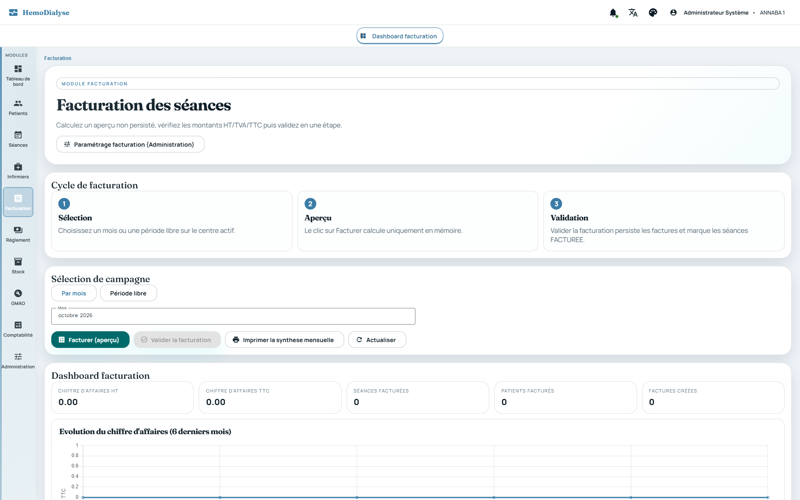
Préfixes
RG-FAC(facturation et TVA),RG-REG(règlements),RG-CPT(comptabilité). Le système n'accepte à la facturation que des séances validées et couvertes, fige prix, TVA et payeur sur chaque facture, calcule le solde de chaque facture et génère les écritures comptables équilibrées. Sources :ConsulterLeTableauDeBord,ImprimerLaSynthese,SyntheseFinanciereDesCentres,Simulation,Facture,ValiderLaFacturation,RegleTva,GererLesTypesDeTva,ParametresDeFacturation,ModeleDeNumerotation,Reglement,SituationDeFacture,EnregistrerUnReglement,RedactionDesEcritures,EcritureComptable,MappingComptable,RegleTVA, listeners comptables, contrôleursFacturation*,TypesTvaControleur,ParametresFacturationControleur,Reglement*,Comptabilite*.
Un type (ou règle) de TVA est propre à un centre : libellé obligatoire, taux de 0 à 100 %
(arrondi à deux décimales par la base), type de prestation obligatoire (texte comparé tel que saisi), indicateur
d'exonération, date de début de validité obligatoire, date de fin facultative égale ou postérieure au début,
texte de référence légale facultatif. Deux types actifs du même centre et du même type de prestation ne se
chevauchent pas (périodes [début, fin] bornes incluses, fin absente = période ouverte, types désactivés ignorés).
C'est la même règle que celle des règles de TVA comptables (RG-CPT-006) : une seule table, dont la Comptabilité
est propriétaire (ADR 0030) ; les types déjà enregistrés ne sont pas revalidés. Refus (400) : taux hors bornes, « La
date de fin de validité (…) précède la date de début (…) », « La règle de TVA … chevauche la règle existante … ».
Source : RegleTva, TauxDeTva, GererLesTypesDeTva (contexte comptabilite) → TypesTvaControleur
(/tva-types).
La TVA applicable à une date est le type actif couvrant cette date pour la prestation
HEMODIALYSE (le dernier commencé) ; sans type actif, le taux est 0 %. Le taux est figé sur chaque facture au
moment de la validation. La simulation et la validation appliquent le taux en vigueur à la fin de la période
facturée (RG-FAC-022, RG-FAC-030). Source : langage publié ParametrageFiscal (contexte comptabilite), lu par
la simulation et la validation (TauxDeTvaComptabilite, contexte facturation).
Les types de TVA se désactivent (jamais supprimés) : la désactivation est idempotente et répond
204 même pour un type inconnu du centre. La modification remplace libellé, taux, type, exonération, dates et texte
selon RG-FAC-001 (le type modifié ne se compare pas à lui-même) ; elle garde l'état (un type désactivé le reste)
et l'auteur d'origine ; un type inconnu dans le centre répond 404 et rien n'est écrit. Création, modification,
désactivation : ADMIN ; consultation : ADMIN, MEDECIN, SECRETAIRE (liste paginée, triée par début décroissant
puis libellé, relue à chaque appel). Le centre demandé est confronté à celui de la session : un autre centre est
refusé (403). Source : GererLesTypesDeTva → TypesTvaControleur.
Chaque centre définit un modèle de numérotation des factures (défaut FAC-{YEAR}-{SEQ}) : jetons
{YYYY}/{YEAR}, {YY}, {CENTER} (8 premiers caractères de l'identifiant du centre), {SEQ} ou {SEQn}
(séquence sur n chiffres, n de 1 à 99, 4 par défaut). Le modèle est obligatoire, contient un jeton de séquence et
aucun jeton inconnu, et tient en 120 caractères ; sinon il est refusé (400 : « Le modèle de numérotation doit
contenir le jeton de séquence {SEQ} ou {SEQn} … », « Jeton inconnu {…} … »). Les modèles déjà enregistrés ne sont pas
revalidés. La séquence est strictement positive et propre au centre (et à l'année). Source : ModeleDeNumerotation,
ParametresDeFacturation, ConfigurerLaFacturation (contexte facturation) → ParametresFacturationControleur
(/facturation/settings) ; numéro calculé par ModeleDeNumerotation.numero, séquence réservée par
SequenceDeFacturation (RG-FAC-030).
Option « regroupement multi-forfait » (défaut oui) : une facture par patient et par période
(plusieurs lignes de forfaits) ; sinon une facture par patient et par forfait. Un centre qui n'a rien enregistré
lit les valeurs par défaut, sans date de mise à jour : la lecture n'écrit rien. Modification des paramètres :
ADMIN ; lecture : ADMIN, SECRETAIRE (le profil MEDECIN, admis par la route, est refusé par le filtre des
profils : 403 ROLE_SCOPE). Le centre demandé est confronté à celui de la session (403 sinon). Source :
ConfigurerLaFacturation → ParametresFacturationControleur.
Est éligible une séance du centre, dans la période, au statut VALIDEE ou SIGNEE (la signature
médecin n'est pas exigée) et pas déjà facturée. Le statut se compare en majuscules exactes (une séance « validee »
est ignorée). La période est un mois entier (le mois l'emporte sur les dates) ou deux dates (fin non antérieure au
début, 400 sinon ; période absente : 400 « La periode de facturation est obligatoire »). Source :
SeanceFacturable,
PeriodeDeFacturation, SeancesFacturablesJdbc (ACL sur les séances, contexte facturation).
Forfait appliqué à une séance : le forfait de surcharge posé sur la séance (RG-SEA-033) ; à
défaut, le forfait de la prise en charge couvrant la date (effectif sinon demandé,
de préférence la PEC dotée d'un forfait effectif, puis la plus récente) ; à défaut de PEC qui couvre la date, la PEC
la
plus récente même échue ; sans forfait, « Forfait non defini » à prix 0. Source : PolitiqueDeForfaitApplique.
La simulation (aperçu) construit les factures par groupe patient (ou patient + forfait selon le
regroupement demandé), regroupe les séances par forfait en lignes (prix unitaire HT × nombre de séances),
calcule HT, TVA, TTC (arrondis à deux décimales, TVA = HT × taux, taux en vigueur à la fin de la période
facturée, 0 % sans règle) et le numéro prévisionnel : séquence courante du centre pour l'année du jour + 1, + 2…
dans l'ordre des factures (patients triés par nom), selon le modèle du centre (RG-FAC-010), sans rien réserver. Elle
n'enregistre rien. Accès : ADMIN (le profil MEDECIN est refusé par le filtre des profils, 403 ROLE_SCOPE) ; le
centre demandé est confronté à celui de la session (403 sinon). Source : Simulation, FactureSimulee,
NumerotationPrevisionnelle, TauxDeTva, SimulerLaFacturation → SimulationControleur
(POST /facturation/preview).
Depuis la simulation, on peut exclure une séance, la réinclure ou changer son forfait ;
la
simulation est recalculée à chaque fois, dans la même transaction. Exclure (séance validée/signée non facturée
uniquement) exige un motif d'absence (HOSPITALISATION, MALADIE, VOYAGE, TRANSPORT, FAMILIAL,
REFUS_PATIENT, DECES, AUTRE, NON_JUSTIFIEE ; AUTRE exige un commentaire) : la séance passe au statut
ABSENT et une absence de patient est déclarée avec ce motif, au nom de l'utilisateur de la session, selon les
règles
des absences (RG-ABS-001, 005, 011, 012 : déclaration au plus 60 jours après la séance, pas de date future, période du
patient non encore facturée, une absence par patient et par jour) ; un refus annule l'exclusion (422). Le statut
d'avant (validée ou signée)
est mémorisé. Réinclure (POST /facturation/preview/seances/{id}/include) rend à la séance exclue non facturée
son
statut d'avant et retire l'absence déclarée par l'exclusion ; une séance ABSENT sans cette mémoire (absence réelle,
exclusion antérieure) ne se réinclut pas (422). Changer le forfait impose à la séance validée/signée non facturée
un
forfait du centre (surcharge, RG-FAC-021). Accès et centre : comme RG-FAC-022. ABSENT est un statut à part entière
des
séances (RG-SEA-001) : la séance exclue reste consultable, n'est plus facturable, n'est plus « réalisée » (RG-ABS-012)
et n'accepte pas de volet médical. Source : SeanceDeFacturation, ExclureUneSeance, ReinclureUneSeance,
ChangerLeForfaitDUneSeance → SimulationControleur ; ACL AbsencesDesPatientsLegacy (ADR 0031).
Le tableau de bord de facturation d'un mois (GET /api/v1/facturation/dashboard) présente : chiffre
d'affaires HT et TTC, séances facturées, patients facturés, factures créées, ventilation par caisse d'assurance et par
état du patient. Les montants sont les totaux enregistrés sur les factures émises dans le mois (date de
facturation, bornes incluses), jamais recalculés. Les « séances facturées » comptent les séances au statut FACTUREE
dont la date tombe dans le mois, alors que les ventilations comptent les séances rattachées aux factures du mois : les
deux nombres peuvent différer. Le mois est obligatoire. Accès : ADMIN, MEDECIN, SECRETAIRE (le médecin seul est
refusé) ; le centre demandé doit être celui de la session (403 sinon). Source : ConsulterLeTableauDeBord →
TableauDeBordControleur (ADR 0034).
La synthèse mensuelle de facturation s'imprime sur une période (début et fin incluses, aucun
plafond de durée) en PDF, Excel ou HTML (PDF embarqué). Deux voies coexistent : POST /api/v1/facturation/synthese/print
(tableau forfait x caisse, une colonne HT et TTC par caisse, indicateurs, barres de répartition par caisse et par
situation du patient) et POST /api/v1/documents/print avec le type SYNTHESE_FACTURATION_MENSUELLE (gabarit à
quatre colonnes CNAS, CASNOS, CAMSSP, Autres). Les montants globaux (HT, TVA, TTC) sont la somme des totaux
enregistrés des factures de la période (RG-FAC-024), y compris les factures sans ligne ; dans le tableau, le TTC d'une
ligne est sa part du TTC enregistré de la facture. Sans facture dans la période, le document est vide. Les deux voies exigent
le même profil (ADMIN ou SECRETAIRE ; MEDECIN seul refusé) et le centre de la session (403 sinon). Source :
ImprimerLaSynthese, SyntheseControleur, FacturationSyntheseMensuelleReportService (rendu, plateforme), DocumentRestController.
La part financière du pilotage de la Direction (vue d'ensemble, répartition par caisse, absences)
lit la Facturation par son langage publié SyntheseFinanciereDesCentres : chiffre d'affaires HT et TTC (totaux enregistrés),
nombre de factures, encaissé (somme signée des règlements de toutes dates des factures émises dans la période),
chiffre d'affaires par mois et HT par caisse (agence figée sur la facture). Source : DirectionDashboardQueryService,
DirectionBreakdownQueryService, DirectionAbsencesQueryService (plateforme).
La validation (POST /api/v1/facturation/validate, ADMIN ; le centre du corps doit être celui
de
la session, sinon 403) émet de façon atomique les factures de la simulation de la période (RG-FAC-022) : une
facture par groupe, regroupement choisi par le corps de la requête (jamais par les réglages du centre). Chaque
facture reçoit le numéro suivant de la séquence du centre pour l' année du jour (RG-FAC-010) ; la réservation
est atomique (deux validations simultanées d'un centre se mettent en file : jamais le même numéro). Elle fige
le
patient (code, nom, état, numéro d'immatriculation), le centre payeur et l'agence, la période, la date de facturation
(jour de validation), le taux de TVA en vigueur à la fin de la période facturée, les forfaits, prix et quantités,
et l'utilisateur qui a validé ; elle marque chaque séance FACTUREE rattachée à sa facture. Refus : 409 si le
numéro réservé est déjà celui d'une facture du centre (séquence en retard sur les factures existantes ; rien n'est
émis, la séquence est restituée) ; 422 si une séance éligible n'a aucun forfait (ni surcharge, ni prise en
charge) : « N séances éligibles n'ont pas de forfait défini », aucune facture n'est créée ; 422 si une séance a
changé entre-temps (« Une ou plusieurs seances ne sont plus eligibles »). Sans séance éligible : 0 facture, la
séquence ne bouge pas. Une deuxième facture pour la même période et le même patient reste possible (séance validée
après l'émission). Source : Facture, LigneFacture, ValiderLaFacturation, SequenceDeFacturation,
SeancesSansForfait, NumeroDeFactureDejaPris (contexte facturation, ADR 0032) → ValidationControleur ;
ACL LiaisonDesSeancesJdbc.
Une facture a au moins une ligne et couvre au moins une séance ; ligne : prix unitaire HT valide
(jamais négatif) et nombre de séances > 0 ; totaux : HT = somme des lignes, TVA arrondie (HALF_UP) sur le total HT
de
la facture (pas ligne par ligne), TTC = HT + TVA, à deux décimales ; période valide. Une facture émise ne se modifie
plus (le prix, le libellé du forfait, le patient et le taux restent ceux de l'émission). Source : Facture,
LigneFacture (contexte facturation).
Après validation, un évènement « facturation validée » (FacturationValideeEvent, version 3, ADR 0036) annonce
ce qui a été émis — centre, période réellement facturée, nombre de factures émises, nombre de séances
facturées, total TTC exact, instant de la validation ; il ne liste plus les factures (taille bornée) — et
déclenche, après le commit, la génération des écritures de ventes (RG-CPT-001), qui relit en base les factures de la
période encore sans écriture (idempotent). Aucun évènement quand aucune facture n'est émise ; la reconstitution des ventes manquantes passe par
POST /api/v1/comptabilite/rebuild. L'existence d'une facture couvrant une date clôt les absences du patient à
cette date (RG-ABS-024) ; les séances facturées deviennent immuables (RG-SEA-002). Source :
FacturationValideeEvent (langage publié du contexte facturation) → ComptabilisationDesVentesApresLaValidation (contexte facturation, ACL vers la Comptabilité ; ex-écouteur de la plateforme, LST ADR 0183).
Clôture d'un mois (POST /api/v1/facturation/periodes/{mois}/cloturer, mois AAAA-MM, ADMIN) : un
mois par centre, sans précondition d'état (l'administrateur décide, y compris un mois sans séance), mais seul un
mois terminé
se clôture : le mois en cours et les mois futurs, au fuseau du centre et sans jours de grâce, sont refusés (422
PERIODE_NON_TERMINEE,
propriété mois), comme les mois d'absences (RG-ABS-070 ; ADR 0044, 2026-10-23). La réponse
porte l'avertissement chiffré seancesEligiblesRestantes : nombre de séances du centre dans ce mois encore éligibles à la
facturation (statut VALIDEE ou SIGNEE, non facturées, non exclues), et un second avertissement, jamais
bloquant (slice A6, RG-ABS-076) :
absencesDuMoisNonCloses (vrai si le mois d'absences du centre n'est pas clos ; l'ordre recommandé est de clore les
absences d'abord). Le centre du corps (facultatif) ou de la requête doit
être celui de la session (403 sinon) ; l'auteur est l'utilisateur de la session. Clôturer deux fois le même mois est refusé
(409 PERIODE_DEJA_CLOTUREE, la première clôture reste). Mois illisible : 400 MOIS_INVALIDE. Source : MoisDeFacturation,
CloturerLeMois (contexte facturation, ADR 0037).
Effets d'un mois clos : sont refusés (422 PERIODE_DE_FACTURATION_CLOTUREE, message avec le mois) la
validation de la facturation dont la période touche au moins un mois clos du centre (tout mois couvert par l'intervalle,
même d'un seul jour), et l'exclusion, la réinclusion et le changement de forfait d'une séance dont la date est
dans un mois clos (la période demandée n'y change rien). Restent permis : la simulation (POST /preview), toutes les
lectures, les règlements (RG-REG-001) et la comptabilisation des factures déjà émises. Les autres mois et les autres centres ne
sont pas touchés. Aucun mois n'est clos par défaut. Source : GardeDesMoisClos (appelée par ValiderLaFacturation,
ExclureUneSeance, ReinclureUneSeance, ChangerLeForfaitDUneSeance).
Clôture et émission se sérialisent pour un même (centre, mois) : la ligne du mois est verrouillée
(SELECT ... FOR UPDATE) jusqu'à la fin de la transaction de la clôture, de la réouverture, de la validation et de chaque
modification de la simulation. Une validation en cours fait attendre la clôture (qui compte alors des séances restantes
exactes) ; une clôture en cours fait attendre la validation, qui est ensuite refusée (RG-FAC-041). Les mois d'un intervalle
se verrouillent du plus ancien au plus récent, ensemble. L'attente d'un verrou est bornée à 5 secondes (comme les
absences) :
au-delà, ou en cas d'interblocage, l'acte est annulé sans rien écrire et répond 409 FACTURATION_ECRITURE_CONCURRENTE
(réessayer ; ADR 0043, 2026-10-23). Source : MoisDeFacturationJdbc.verrouiller, verrouillerDe,
UniteDeTravailSpring.
Réouverture (POST /api/v1/facturation/periodes/{mois}/rouvrir, ADMIN) : le motif est
obligatoire (400 MOTIF_DE_REOUVERTURE_OBLIGATOIRE ; 500 caractères au plus), l'auteur est l'utilisateur de la session ;
rouvrir un mois qui n'est pas clos est refusé (409 PERIODE_NON_CLOTUREE). Un mois rouvert peut être clos à nouveau.
Ordre des refus : mois non clos (409), puis motif (400), puis période comptable close (422, RG-FAC-044) — un motif
absent
répond donc toujours 400 (correction de revue du 2026-10-23).
Source : RouvrirLeMois.
La réouverture est refusée (422 PERIODE_COMPTABLE_CLOTUREE) si la période comptable du même mois et du
même centre est clôturée (RG-CPT-005) : la Facturation lit cet état par le langage publié PeriodesComptables de la
Comptabilité ; on ne rouvre pas la facturation d'un mois dont la comptabilité est close. Source : ClotureComptable
(ACL ClotureComptableComptabilite).
Traçabilité et lecture : chaque clôture (auteur, instant, séances éligibles restantes) et chaque
réouverture (auteur, instant, motif) est ajoutée à un journal append-only (periodes_facturation_journal) et publiée
par un évènement d'intégration (PeriodeDeFacturationCloturee, PeriodeDeFacturationRouverte, jamais publié si l'acte est
refusé ; aucun consommateur pour l'instant). GET /api/v1/facturation/periodes?annee=AAAA (ADMIN, 2000 à 2100, 400
ANNEE_INVALIDE sinon) donne l'état des 12 mois du centre : ouvert ou clôturé, dernière clôture (par, le), dernière
réouverture (par, le, motif). Source : PeriodesDeFacturationControleur, ConsulterLesPeriodes.
Un règlement est rattaché à une facture et à un centre : montant non nul (un montant négatif est
un remboursement, voir RG-REG-005), date (le jour d'exécution si elle est absente, jamais contrôlée), auteur =
l'utilisateur de la session (« system » s'il est inconnu ; le userId du corps est ignoré), code REG- + 8
caractères généré, montant arrondi au centime. Le centre du corps ou de la requête doit être celui de la session (403
sinon, en écriture comme en lecture). Accès : ADMIN, SECRETAIRE. Un règlement enregistré ne se modifie ni ne
s'annule : le seul moyen de corriger est un remboursement.
Situation d'une facture = lecture calculée de la somme signée des règlements contre le total
TTC figé : NON_REGLEE (somme nulle, reste = total), PARTIELLEMENT_REGLEE (reste > 0), REGLEE (soldée ;
si le réglé dépasse le facturé, la situation est « trop-perçu » et le montant excédentaire est affiché : le
trop-perçu est accepté). Les montants sont arrondis au centime.
Remboursement (à valider par le métier) : un règlement négatif ne peut pas dépasser le total déjà
réglé de la facture (somme signée, trop-perçu compris) : refus 422 REMBOURSEMENT_SUPERIEUR_AU_TOTAL_REGLE. Il est
comptabilisé par l'écriture de sens inverse de l'encaissement (débit du compte client, crédit de la banque ou de la
caisse), libellée « Remboursement … » (décision du 2026-10-21).
Export CSV des règlements : une cellule de texte (numéro de facture, assurance, nom, prénom, caisse,
agence, centre payeur) qui commence par =, +, -, @, une tabulation ou un retour chariot est précédée d'une
apostrophe ', pour qu'un tableur ne l'exécute pas comme une formule ; les montants ne sont pas modifiés.
Mode de règlement et référence de paiement (à valider par le métier) : un règlement peut porter un
mode (BANQUE, CHEQUE, CAISSE, ESPECES) et une référence libre (≤ 120 caractères). CAISSE et ESPECES sont
comptabilisés au journal de caisse ; BANQUE, CHEQUE et l'absence de mode (anciens règlements, reprise de données) au
journal de banque BQ. Un mode inconnu est refusé (400).
Clé d'idempotence (à valider par le métier) : le corps peut porter une clé (cleIdempotence,
≤ 120 caractères) ; un renvoi pour la même facture et le même centre avec la même clé ne crée ni règlement, ni
événement, ni écriture et répond la situation courante de la facture. Sans clé, un renvoi crée un second règlement.
La recherche et le tableau de bord des règlements portent sur une année (2000 à 3000) et facultativement un mois (1 à 12), une caisse, une agence ou un centre payeur ; les listes sont paginées (page ≥ 0, taille > 0) et exportables en Excel ou PDF.
Chaque règlement enregistré déclenche, après son enregistrement, la génération d'une écriture de
trésorerie (RG-CPT-002) par l'événement FactureReglementRecordedEvent (langage publié du contexte facturation,
porteur de l'identifiant du règlement, du montant signé et du mode) → ComptabilisationDuReglementApresEncaissement (contexte facturation, ex-écouteur de la plateforme, LST ADR 0183). Un mois
comptable clos n'empêche pas le règlement : l'écriture est alors à régénérer (POST /comptabilite/rebuild).
Écriture de ventes par facture, dans le journal que le centre a choisi pour les ventes (VE par
défaut, RG-CPT-010) : débit du compte client (411xxx), crédit du compte
de ventes (706) pour le HT, crédit de la TVA collectée (44571) si la TVA est > 0 (dérivée de TTC − HT si le total de
TVA manque) ; date de l'écriture = fin de la période facturée (jamais la date d'émission) ; axes analytiques
centre et type de tiers ; statut VALIDEE. Idempotence : une facture n'a qu'une écriture (recherche par pièce
source, quel que soit le journal : changer le journal des ventes ne recrée jamais une écriture déjà passée) ; la
base le garantit aussi : une seule écriture par source et par centre (index unique, migration V37 ; le numéro de
pièce, lui, n'est pas contraint). L'écriture est générée après l'enregistrement de la validation de facturation,
facture par facture, chacune indépendamment : un refus (mois clôturé, facture déséquilibrée…) n'annule jamais la
facturation, n'empêche pas les factures suivantes, et laisse la facture à régénérer (RG-CPT-024). Source :
ComptabiliserLesVentesEtReglements, EcritureComptable.generer, RedactionDesEcritures.ventes (contexte
comptabilite), écouteur ComptabilisationDesVentesApresLaValidation (Facturation, LST ADR 0183) → langage publié
ComptabilisationDesVentesEtReglements.
Écriture de règlement : journal choisi pour les règlements en banque (BQ par défaut, débit
512) ou en caisse (CA par défaut, débit 530, si le mode
est « caisse » ou « espèces ») ; crédit du compte client ; un remboursement (règlement négatif) est l'écriture de
sens inverse (débit du compte client, crédit de la trésorerie) pour la valeur absolue du montant ; une écriture par
règlement (idempotence par identifiant de règlement, garantie aussi en base comme RG-CPT-001). Sans mode
(anciens règlements), le règlement est comptabilisé en « banque » (RG-REG-006). Comme la vente, l'écriture est générée après l'enregistrement du
règlement, dans sa propre transaction : un refus n'annule jamais le règlement, qui reste à régénérer
(RG-CPT-024).
Toute écriture comporte au moins deux lignes et doit être équilibrée (total débit = total
crédit à deux décimales : ECRITURE_DESEQUILIBREE) ; compte SCF obligatoire, débit et
crédit non négatifs ; numéro de pièce par journal et par année, qui suit le plus grand numéro existant comparé
numériquement (après VE-2026-999999 vient VE-2026-1000000, un suffixe non numérique est ignoré), attribué sous
verrou. Toute écriture naît dans un mois ouvert (RG-CPT-005) : la règle est portée par l'écriture elle-même, quel
que soit le chemin (vente, règlement, stock, pièce saisie, extourne).
Statuts : BROUILLON → VALIDEE → EXPORTEE. Une écriture exportée est immuable
(ECRITURE_EXPORTEE_IMMUABLE) ; seules les écritures validées sont exportables (EXPORT_ECRITURE_NON_VALIDEE) ;
l'export marque les écritures validées comme exportées. Écriture inconnue : ECRITURE_INTROUVABLE.
Clôture de période (mois) : réservée à ADMIN ; une période déjà clôturée ne se reclôt pas
(PERIODE_DEJA_CLOTUREE) ; aucune écriture ne peut être générée dans une période clôturée (PERIODE_CLOTUREE).
Lorsque la période d'une facture ou d'un règlement est clôturée, la facture ou le règlement reste enregistré mais
aucune écriture n'est générée : le refus est journalisé et la source figure parmi les factures à régénérer
(RG-CPT-024).
Plan de comptes par centre (MappingComptable), entièrement paramétrable depuis l'écran
« Paramétrage comptable » (ADMIN) : comptes ventes, client « patient qui paie lui-même », client « payeur sans
compte propre », banque, caisse — tous obligatoires ; valeurs par défaut :
706, 411100, 411500, 512, 530, 44571 (TVA collectée) ; comptes du stock (RG-CPT-011). Le compte client d'un payeur se
règle payeur par payeur (RG-CPT-019) : il n'existe plus de compte
figé par type de payeur (CNAS, CASNOS, mutuelle). Chaque compte se choisit dans le plan comptable du centre
(RG-CPT-018) ; un compte qui n'y figure pas, ou désactivé, est refusé (COMPTE_INCONNU). Le paramétrage ne vaut que
pour les écritures générées
ensuite : les écritures déjà passées ne sont pas réimputées. La TVA collectée est facultative à l'enregistrement
(vide : la réponse la montre vide, mais toute relecture et toute écriture de ventes lisent 44571). Les comptes du
stock et
les journaux non précisés gardent leur valeur actuelle (aucun retour aux valeurs par défaut hors renvoi explicite) ;
tout
le mapping est revalidé à chaque enregistrement, journaux d'abord (JOURNAL_INCONNU) puis comptes
(COMPTE_INCONNU).
Un numéro de compte du mapping s'écrit en majuscules (un numéro en minuscules est refusé). Source :
MappingComptable,
ComptesDuStock, ModifierLeMapping (contexte comptabilite), ComptabiliteParametrageComponent →
ComptabiliteParametrageStore → ComptabiliteApiService → MappingControleur (/mapping) →
MappingComptableRepository. Règles de TVA comptables (/regles-tva, ADMIN) versionnées dans le temps : type
de prestation (texte brut, 120 caractères), taux de 0 à 100 % (arrondi à deux décimales par la base), exonération
(obligatoire), début de validité obligatoire, fin facultative, texte de référence. L'écran comptable les ajoute ;
la modification et la désactivation passent par l'écran « Types de TVA » (RG-FAC-003). La liste montre toutes les
règles du centre, de la plus récente à la plus ancienne. Un ajout est refusé (400) si le taux dépasse 100 %, si la
date de fin précède la date de début, ou si la règle chevauche une règle active du même centre et du même type
(périodes [début, fin] bornes incluses, fin absente = période ouverte ; les règles désactivées sont ignorées) : c'est
la règle unique de RG-FAC-001 (ADR 0030) ; les règles déjà enregistrées ne sont pas revalidées. Un ajout est visible
aussitôt dans les deux écrans (la liste n'est plus mise en cache). La règle applicable à une date est la dernière
commencée parmi les règles actives du type. Source : RegleTva, EnregistrerUneRegleDeTva →
ReglesTvaControleur (/regles-tva) → RegleTvaRepository.
Reconstruction (rejeu) des écritures de factures et règlements existants sur une période,
réservée à ADMIN ; l'idempotence évite tout doublon. Une vente régénérée est datée de la fin de sa période
facturée (comme RG-CPT-001). Chaque source est traitée indépendamment : un refus (mois clôturé…) n'arrête pas les
suivantes ; il est rapporté avec sa raison (RG-CPT-024). Consultation des écritures et des journaux :
ADMIN, SECRETAIRE (paginée) ; la liste des écritures est relue à chaque ouverture de l'écran Comptabilité
(les écritures générées entre-temps — stock, ventes, règlements — apparaissent sans recharger la page) ; validation,
export, paramétrage (comptes, journaux, mapping), règles TVA, clôture, comptabilisation du stock : ADMIN. Source :
ComptabiliserLesVentesEtReglements.reconstruire → VentesEtReglementsControleur (/rebuild) ;
ComptabiliteDashboardComponent → ComptabiliteStore.refresh.
(point d'attention levé) Les créances ne sont plus toutes imputées au compte client « autre » : chaque facture débite le compte de son payeur (RG-CPT-019), le compte par défaut si le payeur n'en a pas, et le compte « patients » si la facture n'a pas de payeur. Le règlement crédite le compte que l'écriture de la facture a débité, même si le compte du payeur a changé entre-temps (à défaut d'écriture de facture, le compte actuel du payeur).
Journaux paramétrables par centre : chaque centre définit librement ses journaux (code de 1 à 10
lettres majuscules ou chiffres, libellé de 100 caractères au plus, actif ou non). Tant qu'il n'a rien paramétré, il
dispose des journaux par défaut VE Ventes, BQ Banque, CA Caisse, AC Achats, ST Stocks ; ils sont
enregistrés comme les siens à sa première modification. Un journal choisi pour une opération ne peut être ni
désactivé ni supprimé (JOURNAL_UTILISE) ; un journal qui porte des écritures se désactive mais ne se supprime
pas (JOURNAL_AVEC_ECRITURES) ; supprimer un journal inconnu est refusé (JOURNAL_INTROUVABLE). La liste est
paginée ; l'indicateur « actif » est obligatoire (400 sinon). Source : Journal, CodeJournal,
EnregistrerUnJournal, SupprimerUnJournal (contexte comptabilite), ComptabiliteParametrageComponent →
ComptabiliteParametrageStore →
ComptabiliteApiService → JournauxControleur (/journaux) → JournalRepository.
Journal de chaque opération : le centre choisit le journal des ventes, des règlements en banque,
des règlements en caisse, des réceptions de stock, des sorties de stock et des écarts d'inventaire (par défaut VE,
BQ, CA, AC, ST, ST). Seul un journal existant et actif peut être choisi (JOURNAL_INCONNU). Le numéro
de pièce reprend le code du journal : <JOURNAL>-<année>-<n° sur 6 chiffres>, numéroté par journal et par année.
Comptes du stock (inventaire permanent), paramétrables par centre : stock (322 par défaut), consommation (602), factures non parvenues (408), boni d'inventaire (757), mali d'inventaire (657). La fiche d'un article peut préciser son propre compte de stock et son propre compte de consommation (RG-STK-008) ; à défaut, ceux du centre s'appliquent.
Écriture de réception : un bon de réception validé donne une écriture, dans le journal des réceptions, à la date de réception : débit du compte de stock (de l'article ou du centre), crédit des factures non parvenues, pour la valeur hors taxe quantité × prix unitaire. La TVA d'achat et le compte fournisseur se traitent à la facture, hors application. Une écriture par bon, jamais doublée.
Écriture des sorties : les sorties de stock d'une journée (consommations de séance, sorties
manuelles) sont centralisées en une écriture par centre et par jour, dans le journal des sorties : débit du
compte de consommation, crédit du compte de stock, valorisés au prix moyen pondéré appliqué à la sortie (à
défaut le PMP après mouvement, puis le PMP courant de l'article ; ordre de valorisation : RG-STK-041). Une ligne par
compte. Un article sorti sans prix ni PMP (valeur nulle) ou reçu sans prix n'est pas valorisé : la journée ou le
bon est signalé avec les articles concernés (SANS_VALEUR, RG-CPT-015).
Écriture des écarts d'inventaire : un inventaire clôturé donne une écriture, dans le journal des inventaires, à la date de l'inventaire : excédent (compté > théorique) = débit stock, crédit boni ; manquant = débit mali, crédit stock ; écarts valorisés au PMP de la ligne d'inventaire. Une ligne non comptée ne produit rien.
Comptabilisation du stock rejouable : elle a lieu chaque nuit sur les 35 derniers jours
(ComptabiliteStockScheduler) et à la demande de l'administrateur sur une période d'un an au plus. Seule la
différence entre ce qui devrait être comptabilisé et ce qui l'est déjà est écrite : la rejouer ne crée aucun
doublon. Quand les sorties d'un jour changent après coup (mouvement saisi en retard, PMP recalculé), l'écriture du
jour est mise à jour tant qu'elle n'est ni exportée ni dans une période clôturée (son numéro de pièce est
conservé) ; sinon la différence fait l'objet d'une écriture de complément — datée du jour même, ou du jour du
traitement si la période d'origine est clôturée (au plus 50 compléments par journée). Une réception ou un inventaire
dont la période est clôturée n'est pas comptabilisé : il est compté comme « ignoré ». Le résultat affiché à
l'écran détaille chaque pièce non comptabilisée — nature (réception, inventaire, journée de sorties), référence
(numéro du bon ou de l'inventaire, date de la journée) et raison : mois clôturé (PERIODE_CLOTUREE), articles sans
valeur cités par leur code (SANS_VALEUR), plafond de compléments atteint (COMPLEMENTS_MAX) ; la tâche de nuit les
journalise. Le stock d'un centre n'est jamais comptabilisé dans un autre. Source : ComptabiliserLeStock,
SoldesDuStock, EcritureComptable.generer/reviserLesSorties (contexte comptabilite),
ComptabiliteParametrageComponent → ComptabiliteParametrageStore → ComptabiliteApiService →
ComptabilisationDuStockControleur (/stock/synchroniser), ComptabilisationDuStockPlanifiee (nuit) →
OperationsDeStock (OperationsDeStockJdbc).
Isolement par centre de la comptabilité : toute requête comptable (écritures, export, clôture,
paramétrage, journaux, comptabilisation du stock, reconstruction) est confrontée au centre de la session ; demander
un autre centre est refusé (403). Source : contrôleurs du contexte comptabilite (annexe 16), SessionCourante.
Le stock n'est pas comptabilisé à chaque mouvement mais par traitement (nuit ou demande) : une sortie du jour n'apparaît en comptabilité qu'après le traitement suivant. La TVA déductible sur achats et la dette fournisseur (401) ne sont pas gérées automatiquement : le compte des factures non parvenues se solde par une pièce saisie (RG-CPT-021), à la comptabilisation de la facture du fournisseur.
Plan comptable par centre : chaque centre tient la liste de ses comptes (numéro de 1 à 20
lettres ou chiffres, libellé de 150 caractères au plus, actif ou non), paginée et recherchable par numéro ou
libellé. Tant qu'il n'a rien paramétré, il dispose d'un plan SCF de départ (stock, fournisseurs, clients,
personnel, TVA, trésorerie, charges, produits), complété des comptes que son paramétrage utilise déjà ; ce plan est
enregistré comme le sien à sa première modification. Partout où un compte est demandé (paramétrage, payeur, modèle
de pièce), il se choisit dans ce plan. Un compte utilisé par le paramétrage, un payeur ou un modèle de pièce
ne peut être ni désactivé ni supprimé (COMPTE_UTILISE) ; un compte qui porte des écritures se désactive mais ne
se supprime pas (COMPTE_AVEC_ECRITURES) ; supprimer un compte inconnu est refusé (COMPTE_INTROUVABLE). Ajouter
un compte ne demande aucun développement. Le numéro est enregistré en majuscules (comme le code d'un journal) ; un
compte
rattaché à un article compte comme utilisé. Source : PlanComptable, CompteComptable, EnregistrerUnCompte,
SupprimerUnCompte, PlanComptableComponent →
PlanComptableStore → ComptabiliteApiService → PlanComptableControleur (/comptes) →
CompteRepository.
Compte client de chaque payeur : chaque payeur du référentiel (caisse, mutuelle, entreprise…)
peut porter son propre compte client, choisi dans le plan comptable (COMPTE_INCONNU sinon) ; ses factures y sont
débitées. Un payeur sans compte propre utilise le compte client par défaut du centre ; vider le compte d'un payeur
l'y ramène. Un payeur d'un autre centre est introuvable (PAYEUR_INTROUVABLE). Un nouveau client ne demande aucun
développement : on crée le payeur dans les référentiels, on ajoute son compte au plan, on le lui affecte. La liste
des payeurs est paginée et recherchable. Source : CompteClientDuPayeur, AffecterUnCompteAuPayeur,
PlanComptableComponent →
PlanComptableStore → ComptabiliteApiService → ComptesPayeursControleur (/payeurs) →
CompteClientDuPayeurRepository.
Modèles de pièces : un centre définit ses propres types de pièces (loyer, salaires, facture
fournisseur, opération diverse…). Un modèle porte un code unique dans le centre (1 à 20 lettres majuscules,
chiffres, tirets ; MODELE_CODE_EXISTANT), un libellé, un journal actif (JOURNAL_INCONNU sinon) et de 2 à 20
lignes — un sens (débit ou crédit), un compte du plan et un libellé facultatif chacune — dont au moins une au
débit et une au crédit (MODELE_LIGNES_INVALIDES). Un modèle désactivé ne sert plus à saisir (MODELE_INACTIF) ;
le supprimer conserve les pièces déjà saisies ; un modèle inconnu est refusé (MODELE_INTROUVABLE). Le journal d'un
modèle ne peut être ni désactivé ni supprimé (JOURNAL_UTILISE). Un nouveau type de pièce ne demande aucun
développement. Liste paginée ; gestion réservée à ADMIN. Source : ModeleDePiece, GererLesModelesEtPieces,
ModelesPieceComponent → PiecesComptablesStore → ComptabiliteApiService →
ModelesEtPiecesControleur (/modeles) → ModeleDePieceRepository.
Saisie d'une pièce (ADMIN, SECRETAIRE) : on choisit un modèle actif, une date, un libellé (à
défaut celui du modèle) et un montant par ligne ; une ligne à zéro n'est pas écrite. La pièce devient une
écriture validée dans le journal du modèle, numérotée comme les autres (RG-CPT-010). Elle est refusée si un
montant est négatif, s'il n'y a pas un montant par ligne ou s'il reste moins de deux lignes
(PIECE_MONTANTS_INVALIDES), si elle n'est pas équilibrée (ECRITURE_DESEQUILIBREE), si sa période est clôturée
(PERIODE_CLOTUREE) ou si un de ses comptes a quitté le plan (COMPTE_INCONNU). Source :
ModeleDePiece.composerLaPiece, EcritureComptable.saisir, GererLesModelesEtPieces.saisir,
SaisiePieceComponent → PiecesComptablesStore → ComptabiliteApiService → ModelesEtPiecesControleur
(/pieces) → EcritureComptableRepository.
Extourne d'une pièce saisie (ADMIN) : une écriture ne se supprime jamais ; une pièce saisie
par erreur s'annule par une écriture inverse (débits et crédits échangés), datée du jour, dans le même journal,
libellée « Extourne <n° de pièce> ». Une pièce ne s'extourne qu'une fois et une extourne ne s'extourne pas
(PIECE_DEJA_EXTOURNEE) ; une écriture générée par le système (vente, règlement, stock) ne s'extourne pas à la
main (PIECE_NON_SAISIE) ; la période du jour doit être ouverte (PERIODE_CLOTUREE). Source :
EcritureComptable.exigerExtournable/extourner, GererLesModelesEtPieces.extourner,
ComptabiliteDashboardComponent → PiecesComptablesStore → ComptabiliteApiService → ModelesEtPiecesControleur
(/pieces/{id}/extourne).
Les comptes propres à un article (RG-STK-008) se saisissent encore librement sur la fiche article : ils ne sont pas contrôlés contre le plan comptable du centre.
Factures sans écriture et régénération (ADMIN, écran « Paramétrage comptable », carte
« Comptabiliser les ventes et les règlements ») : pour une période choisie, l'écran liste les factures émises qui
n'ont aucune écriture de ventes (numéro, date d'émission, fin de période, total TTC) ; « Régénérer les écritures »
demande une confirmation puis crée les écritures manquantes des factures émises et des règlements encaissés de la
période (RG-CPT-007), sans jamais modifier une écriture existante ; l'écran affiche alors le nombre de factures et de
règlements comptabilisés, chaque source refusée avec sa raison (mois clôturé PERIODE_CLOTUREE, facture
déséquilibrée ECRITURE_DESEQUILIBREE, ERREUR_TECHNIQUE), puis relit la liste des factures encore sans écriture.
Les refus de la comptabilisation du stock (RG-CPT-015) s'affichent de la même façon. Source :
ComptabiliserLesVentesEtReglements.facturesSansEcriture/reconstruire → VentesEtReglementsControleur
(/ventes/non-comptabilisees, /rebuild) ; ComptabiliteParametrageComponent → ComptabiliteParametrageStore
(chercherVentesNonComptabilisees, reconstruireVentes).
Les soldes d'ouverture ne sont pas comptabilisés par la plateforme. Les factures de reprise
(numéro commençant par REPRISE-, créées par l'import « soldes d'ouverture ») et leurs règlements de reprise (auteur
REPRISE) sont exclus de la liste des factures sans écriture, de la régénération des écritures (/rebuild) et de la
comptabilisation automatique d'une période : ces soldes figurent déjà dans la comptabilité de l'ancien logiciel. Un
encaissement saisi ensuite dans la plateforme sur une facture de reprise reste un règlement ordinaire. Source :
FacturesEmisesJdbc, ReglementsEncaissesJdbc (contexte facturation, ports publiés par la Comptabilité) ; décision
du 2026-10-21 (KB-FAC-67).
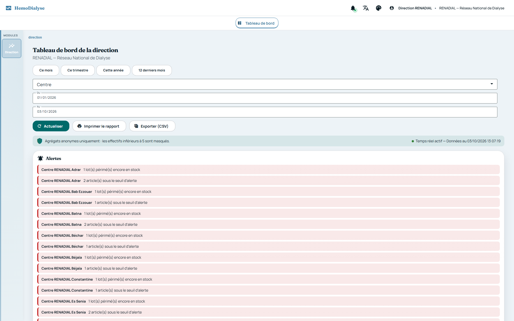
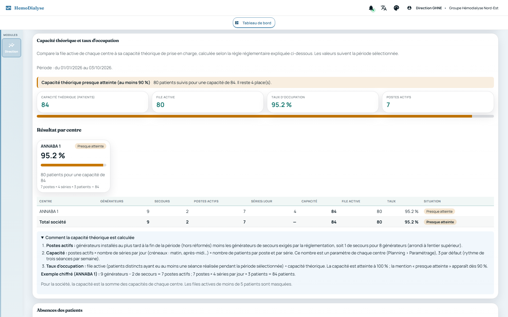
Préfixe
RG-DIR. La direction voit tous les centres de sa société sans jamais voir un patient : le système consolide, compare à la période précédente, lève des alertes et diffuse les changements en temps réel. Sources :DirectionDashboardRestController,DirectionSnapshotRestController,AnonymityPolicy,Direction*QueryService,DirectionReportPdfService,DirectionAccessGuard, et, dans le contexte Pilotage direction :PolitiqueDAlertes,RapprochementDesAlertes,EnregistrerLesAlertes,ConsulterLHistoriqueDesAlertes,ConstatDesIndicateurs,SuivreLeTempsReel,TempsReelPlanifie(exDirectionAlertPolicy,DirectionAlertHistoryService,DashboardDiff,DirectionRealtimeService,DirectionRealtimeScheduler, retirés).
Les routes /api/v1/direction/** sont réservées au rôle DIRECTION, en lecture seule ; la
société est déduite de la session (jamais d'un paramètre) et revérifiée à chaque
appel (RG-SEC-021, RG-SEC-030). Aucune requête n'est exécutée hors des centres de la société (filtre
center_id IN (centres de la société)).
Toutes les réponses sont sans mise en cache (no-store).
Période : par défaut du 1er janvier de l'année en cours à aujourd'hui (« aujourd'hui » = le jour du fuseau de
référence Africa/Algiers, CORRIGÉ le 2026-11-10, KB-DIR-03, RG-DIR-113) ; la date de début doit
précéder la date de fin (PERIODE_INVALIDE) et l'amplitude ne dépasse pas 5 ans
(PERIODE_TROP_LONGUE). Tous les chiffres d'un écran (sauf mention contraire) sont ceux de la période choisie.
Le tableau de bord s'ouvre sur le mois en cours (du 1er du mois à aujourd'hui) : le raccourci actif (« Ce mois »,
« Ce trimestre », « Cette année », « 12 derniers mois ») est mis en évidence (bouton plein, coche, état exposé aux
lecteurs d'écran) et aucun ne l'est pour une période personnalisée ; le bouton a un contour de focus bien visible au
clavier. Source : DirectionDashboardComponent.
Chaque écran présente par centre et pour l'ensemble de la société ; un centre inactif apparaît marqué comme tel.
Seuls des agrégats sortent : aucun nom, identifiant ni ligne de patient. Tout effectif compris entre 1 et 4 est masqué (affiché « < 5 ») ; zéro reste zéro. Le seuil est 5.
Tout taux calculé sur moins de 5 patients est masqué, ainsi que toute valorisation ou variation qui permettrait de déduire l'effectif. Une alerte sur un taux n'est jamais levée sur une valeur masquée ; les variations en temps réel ignorent un indicateur qui devient masqué ou publiable.
Absences : masquage par centre. Un centre dont les absences comptabilisées sont au nombre de 1 à 4
est masqué (null) dans tous les chiffres qui en découlent : nombre d'absences, répartition justifiées / non
justifiées / à qualifier, valorisation HT et TTC, taux d'absentéisme et part du chiffre d'affaires ; chaque effectif par
statut de 1 à 4 est aussi masqué, y compris pour un centre publié, ainsi que le nombre d'absences rattrapées (1 à 4). Les
séances réalisées et le chiffre d'affaires du centre restent publiés. Un centre masqué est exclu du total, des motifs
consolidés et du mensuel, qui ne portent que sur les centres publiés ; la réponse indique centresMasques (nombre de
centres exclus) et l'écran l'affiche. Ainsi la différence total moins centres publiés ne redonne pas le centre masqué
(KB-ABS-07). Limite connue : si un seul effectif par statut d'un centre publié est masqué, il se déduit par différence avec le
nombre d'absences du centre (dix absences dont neuf justifiées...) : le seuil protège les petits effectifs, pas toutes les
inférences. Décision de l'utilisateur du 2026-10-22 (« masquer par centre seulement ») ; à valider avec la direction.
Par centre et total : patients (effectif de la période, RG-PAT-037 : un patient sorti avant la période n'est pas compté, un patient sorti pendant ou après l'est), patients « sous KT », séances réalisées de la période (statuts validée, signée ou facturée), factures, chiffre d'affaires HT et TTC, montants encaissés des factures de la période, évolution mensuelle, et comparaison avec la période précédente de même durée (activité et finances seulement : le nombre de patients est un effectif instantané, il n'est pas comparé).
Par centre et total : patients évalués et répartition dans / sous / au-dessus de la cible KDIGO pour l'hémoglobine, la ferritine, le CST, le Kt/V, le phosphore, le calcium, la PTH et l'albumine, en retenant la dernière valeur de chaque patient sur la période ; patients porteurs d'une sérologie positive (VHB, VHC, VIH — dernier résultat positif à la fin de la période) ; patients avec retard d'observance non acquitté ; patients en attente de greffe, en bilan, greffés dans la période ; stock (articles actifs, sous seuil, valeur) et lots périmés ou proches de la péremption. Cibles : RG-MED-081.
Alertes levées par centre :
KTV_CONFORMITE_BASSE (avertissement) : moins de 80 % des patients évalués ont un Kt/V à la cible ;HB_HORS_CIBLE (avertissement) : moins de 50 % des patients évalués ont une hémoglobine dans la cible ;OBSERVANCE_EN_RETARD (avertissement) : au moins un patient a un retard d'observance constaté non acquitté ;STOCK_SOUS_SEUIL (critique) : au moins un article actif dont le seuil d'alerte est renseigné (> 0) est au niveau
ou sous ce seuil (le tableau de bord de stock du centre signale en plus les articles à seuil nul dont le stock est
épuisé, RG-STK-060) ;LOTS_PERIMES (critique) : au moins un lot périmé contient encore du stock ;LOTS_PEREMPTION_PROCHE (avertissement) : au moins un lot expire dans les 90 jours.Un historique des alertes journalise leur apparition et leur résolution (en cours puis résolues, 50 par défaut, borné). Il n'est alimenté que lorsqu'une direction est connectée à la société : c'est un historique récent, pas un audit exhaustif.
Par centre : patients par sexe et par tranche d'âge (0-17, 18-29, 30-44, 45-59, 60+, inconnu), patients / séances / chiffre d'affaires HT par caisse d'assurance (agence figée sur la facture ; « sans caisse » regroupé), et traitement de l'anémie (EPO, fer) ; effectifs faibles masqués.
Par centre et total : équipements, hors service, en maintenance, réformés, interventions en cours, coût de maintenance de la période, heures d'indisponibilité cumulées, patients affectés à un générateur indisponible, équipements dont la réforme est recommandée, et classement des 5 équipements les plus coûteux de la période (complété par tous ceux dont la réforme est recommandée) avec coût de période, coût cumulé, ratio sur le prix d'acquisition et signal de réforme (RG-GMA-062/063). Aucune donnée patient n'est exposée.
Alertes GMAO : GMAO_PATIENT_SUR_EQUIPEMENT_EN_MAINTENANCE (critique, au moins un patient
affecté à un générateur en maintenance, en attente de pièce, hors service, à réformer ou
réformé), GMAO_GENERATEURS_HORS_SERVICE (avertissement), GMAO_REFORME_RECOMMANDEE (avertissement).
Valorisation du stock des groupes d'articles sur la période, par centre et consolidée : stock de début, entrées, sorties valorisées au PMP, autres variations (inventaires, ajustements, arrondis) et stock de fin (RG-STK-043). Un même nom de groupe (insensible à la casse, aux accents et aux espaces) présent dans plusieurs centres est consolidé en un seul groupe.
Par centre et total : nombre d'absences comptabilisées (ni rattrapées ni annulées), répartition
par motif (« non qualifié » pour celles en attente), valorisation (HT et TTC), taux
d'absentéisme = absences / (absences + séances réalisées) en %, et part du chiffre d'affaires HT = valorisation
HT / CA HT facturé de la période. Effectifs et valorisations faibles masqués, y compris dans les totaux (RG-DIR-012). Sources : RG-ABS. La répartition par
motif est présentée en tableau (nombre, part, valorisation) et en deux graphiques en anneau : l'un par nombre
d'absences, l'autre par valeur HT ; les motifs masqués (effectif faible) et à zéro n'y figurent pas, et aucun
graphique n'est affiché s'il ne reste aucun motif publiable. Source : DirectionDashboardComponent.
Par centre et total, pour la période : générateurs installés au plus tard à la fin de la période (hors réformés, désactivés, supprimés), générateurs de secours (1 pour 8), postes actifs, séries par jour (créneaux configurés), patients par poste et par série (paramètre du centre, 3 par défaut), capacité théorique, file active (effectif de la période, RG-PAT-037 : patients admis non sortis avant la période, hors « en sommeil ») et taux d'occupation avec son niveau (marge, proche de la saturation ≥ 90 %, atteinte, sans capacité). Le total additionne les centres ; séries et patients par poste n'ont pas de sens consolidé. Une file active de 1 à 4 patients est masquée avec son taux. Voir RG-PLN-070 à 074.
Le dernier jour de chaque mois, les agrégats anonymes de la société sont figés dans un instantané (tâche planifiée le 1er du mois à 02:30, ou à la première demande de la direction pour un mois écoulé). Un instantané n'est jamais recalculé : il garde sa valeur historique même si les données sources sont corrigées ensuite.
Le mois est au format AAAA-MM (MOIS_INVALIDE) ; seul un mois écoulé peut être figé
(MOIS_NON_TERMINE) ; au plus 5 ans en arrière (MOIS_TROP_ANCIEN) ; un instantané absent :
SNAPSHOT_INTROUVABLE. La liste des instantanés et chaque instantané sont consultables ; un rapport PDF est généré
par mois.
Rapport PDF de la période : généré à la demande à partir des mêmes agrégats anonymes, avec l'en-tête (logo, raison sociale, coordonnées) et le pied de page de la société (RG-ORG-022/030).
Les changements d'indicateurs (familles patients, séances, finances, caisses, clinique, anémie, stock, alertes) sont détectés par comparaison d'instantanés recalculés — donc quelle que soit l'origine de la modification (saisie, import, tâche planifiée) — et diffusés à la direction connectée sur le canal de la société (RG-SEC-040). Au plus 60 changements par évènement.
Une écriture dans un centre signale la société « à recalculer » : traitement rapide toutes les secondes pour les sociétés signalées, balayage de sécurité toutes les 10 secondes pour toutes les sociétés suivies. Seules les sociétés ayant au moins une direction connectée sont recalculées.
L'apparition ou la disparition d'une alerte est elle-même un changement diffusé ; les indicateurs masqués par l'anonymat ne sont jamais diffusés.
La société, la vue d'ensemble, les répartitions (sexe, âge, caisse, anémie) et le rapport de synthèse sont calculés
par le contexte Pilotage direction (langage publié TableauDeBordDeLaDirection et RapportDeSyntheseDeLaDirection) ; la plateforme
ne fait que garder le jeton, porter les routes et rendre le PDF (HTML vers PDF). Règles reproduites à l'identique du fonctionnement
antérieur : la période par défaut et ses refus (RG-DIR-003, réponse 422 avec le même code) sont contrôlés avant toute lecture ;
la période précédente (même durée) n'est pas soumise à la limite de 5 ans ; l'effectif d'une période est celui de RG-PAT-037 ;
l'âge d'une tranche est l'âge révolu au dernier jour de la période demandée (CORRIGÉ le 2026-11-10, KB-DIR-08, lot L6, ADR 0119,
RG-DIR-113 ; avant, c'était le jour de l'appel) ; CORRIGÉ le 2026-11-09 (KB-DIR-01, lot L1, ADR 0112, validation DPO
attendue au plus tard le 2026-12-15) : un total de patients (société, total d'une caisse, total du rapport) est publié nul dès que l'un
des centres qui le composent est masqué (RG-DIR-111) ; avant, les totaux étaient calculés sur les effectifs bruts et la différence avec la
somme des centres publiés révélait l'effectif masqué ; « aujourd'hui » est le jour du fuseau de référence Africa/Algiers (CORRIGÉ le
2026-11-10, KB-DIR-03, RG-DIR-113 ; avant, la date du serveur en UTC). Le rapport mensuel imprime l'instantané figé (RG-DIR-090) et le rapport de la période le calcul en direct, avec
les mêmes libellés d'alerte ; un code d'alerte inconnu est imprimé tel quel. Source : ConsulterLaVueDEnsemble,
ConsulterLaRepartition, ConstituerLeRapportDeSynthese.
Les instantanés mensuels (RG-DIR-090 à 091) sont gérés par le contexte Pilotage direction (langage publié
InstantanesMensuelsDeLaDirection, table direction_snapshot dont il est le seul propriétaire) ; la plateforme garde le jeton, la route
et le rendu PDF. Règles reproduites à l'identique du fonctionnement antérieur : le mois est contrôlé avant toute lecture (illisible,
puis non terminé, puis trop ancien) ; le mois d'il y a exactement 60 mois est capturable, celui d'il y a 61 mois est refusé ; un instantané
contient la vue d'ensemble, les indicateurs et les répartitions du mois (bornes du premier au dernier jour) ; la capture est
idempotente (un instantané existant n'est ni recalculé ni remplacé, même generated_at ; une capture simultanée perdue est ignorée) ;
la lecture d'un mois futur répond SNAPSHOT_INTROUVABLE (aucun contrôle du futur en lecture, KB-DIR-06 b) ; un instantané antérieur
aux répartitions est servi avec breakdown nul (KB-DIR-06 a) ; l'horodatage de capture est celui de la base (KB-DIR-06 c) ; un contenu
illisible en base est listé mais sa lecture répond 422 INSTANTANE_ILLISIBLE sans détail technique (CORRIGÉ le 2026-11-10, KB-DIR-06 e,
RG-DIR-112 ; avant, 500) ; la tâche du 1er du mois à 02:30 (fuseau de référence, RG-DIR-113) fige le mois précédent de chaque
société active, société sans centre comprise (instantané à zéro, KB-DIR-06 d), ignore l'inactive, est rejouable, et un échec sur une
société n'empêche pas les suivantes. « Mois courant » = le mois du jour du fuseau de référence Africa/Algiers (CORRIGÉ le 2026-11-10,
KB-DIR-03, RG-DIR-113 ; avant, la date du serveur en UTC, à confirmer métiers/DPO au plus tard le 2026-12-15). Comportements clos par
documentation, sans changement (KB-DIR-06 a à d, à confirmer métiers/DPO au plus tard le 2026-12-15) : l'ancien instantané sans répartition
est servi avec breakdown nul ; la lecture d'un mois futur répond SNAPSHOT_INTROUVABLE ; une société active sans centre est figée vide ; un
instantané porte trois horodatages (la capture, la vue d'ensemble, les indicateurs). Source : MoisDInstantane, InstantaneMensuel, CapturerUnInstantaneMensuel, ConsulterUnInstantane,
ListerLesInstantanes, CapturerLesInstantanesDuMoisEcoule.
Les règles RG-DIR-031, RG-DIR-032 et RG-DIR-100 à RG-DIR-102 sont désormais portées par le contexte Pilotage direction (lot C, PD3, ADR 0104) sans changement de comportement ; les cinq règles ci-dessous (RG-DIR-105 à RG-DIR-109) précisent ce que le fonctionnement antérieur faisait sans l'écrire. Tous les points marqués « statu quo » sont à confirmer métiers / DPO au plus tard le 2026-12-15.
La politique d'alertes (PolitiqueDAlertes, langage publié AlertesDeLaDirection) lève, par centre et dans cet ordre,
les six codes de RG-DIR-031. Les seuils de taux sont inclusifs du minimum (Kt/V exactement 80 %, hémoglobine exactement 50 % : aucune
alerte) ; un taux masqué par l'anonymat ne lève jamais d'alerte de taux ; l'observance en retard ne porte pas de valeur ; la valeur des alertes
de stock est le nombre d'articles ou de lots. Les alertes de stock sont évaluées à la date de fin de la période demandée, pas à
aujourd'hui (KB-DIR-07, statu quo). Les alertes GMAO (RG-DIR-040 et suivantes) utilisent le même enregistrement mais restent calculées par la
plateforme. Source : PolitiqueDAlertes.
Le temps réel recalcule une société à chaque signal d'un de ses centres (toutes les secondes) et à chaque balayage (toutes
les 10 secondes), seulement si au moins une direction y est abonnée ; le premier recalcul d'un abonnement n'est qu'un constat de
référence (rien n'est diffusé) ; le dernier abonné parti, le constat est oublié ; un échec de lecture est journalisé et ignoré (rien n'est écrit,
ni historique ni diffusion) ; un échec de diffusion survient après l'écriture de l'historique et le rangement du constat : l'historique
est écrit et le changement est perdu, jamais rediffusé (statu quo) ; la diffusion est plafonnée à 60 changements. Un signal pour un centre inconnu est ignoré. Le suivi des
abonnements STOMP reste dans la plateforme (RG-DIR-109). Source : SuivreLeTempsReel.
L'historique des alertes est alimenté par chaque recalcul. L'identité d'une alerte ouverte est le couple (centre,
code), sans notion de jour : tant qu'elle est ouverte, sa valeur, sa gravité et le nom du centre restent figés à la première
apparition (stock sous seuil 3 puis 7 : reste 3) ; si elle disparaît, elle est résolue ; si elle réapparaît (même le jour même), c'est une
nouvelle ligne ; une alerte du centre A n'affecte jamais celle du centre B ni une autre société (KB-DIR-04, option (a) de R2). KB-DIR-04
CLOS par documentation le 2026-11-10, sans changement de comportement : l'historique est une trace d'ouverture et de résolution d'une
alerte, pas un suivi de sa valeur ; la valeur, la gravité et le nom figés sont ceux de l'ouverture, et l'historique n'est alimenté que
pendant qu'une direction est connectée (une apparition hors connexion n'est pas datée). Question métier ouverte : garder la valeur à
l'ouverture ou la plus récente (à confirmer métiers/DPO au plus tard le 2026-12-15). Aucune contrainte d'unicité en base : deux recalculs
simultanés peuvent ouvrir deux lignes (résiduel PD3-R2). L'horodatage est un instant en UTC pris sur l'horloge injectée du Pilotage
(KB-DIR-03, RG-DIR-113). Source : RapprochementDesAlertes, EnregistrerLesAlertes.
La consultation de l'historique (GET /api/v1/direction/alerts/history) rend les entrées de la société de la session, de la
plus récemment active (COALESCE(résolue, vue)) à la plus ancienne ; limit vaut 50 par défaut, est ramené à 1 (0 ou négatif) ou à 200
(au-delà) sans refus ; un limit illisible répond 400 BAD_REQUEST (CORRIGÉ le 2026-11-10, KB-DIR-02, RG-DIR-112 ; avant, 500).
Le contexte est le seul propriétaire de la table
direction_alert_history. Source : ConsulterLHistoriqueDesAlertes, LimiteDHistorique.
Une société est suivie (RG-DIR-106) tant qu'au moins un abonnement de direction au canal
/topic/societe/{id}/… subsiste. Chaque couple (session, abonnement) n'est compté qu'une fois (un abonnement répété ne double pas le
compte) ; le désabonnement d'un abonnement inconnu ne retire personne ; la déconnexion d'une session libère tous ses abonnements et eux
seuls ; une destination qui n'est pas un canal de société, ou dont l'identifiant est illisible, est ignorée sans erreur. Le premier abonné
d'une société pose son constat de référence au prochain passage rapide (une seconde au plus). Le contrôle des droits d'abonnement
(direction de cette société seule) précède ce suivi et reste dans la plateforme (WebSocketAuthentication). Pas de comptage persistant :
un redémarrage du serveur oublie les abonnements (les clients se réabonnent). Source : DirectionSubscriptionTracker (plateforme, filet :
LesAbonnementsDeLaDirectionCharacterizationTest).
Les indicateurs servis par GET /api/v1/direction/indicators (RG-DIR-030, RG-DIR-031) sont désormais composés par le contexte Pilotage
direction (PD6, ADR 0106, langage publié IndicateursDeLaDirection) à partir des indicateurs cliniques du Dossier médical et du stock du
Stock, sans changement de comportement. Les points marqués « statu quo » sont à confirmer métiers / DPO au plus tard le 2026-12-15.
La période est contrôlée avant toute lecture (RG-DIR-003, 422 PERIODE_INVALIDE ou PERIODE_TROP_LONGUE). Les
indicateurs cliniques de chaque centre et leur consolidé sont ceux du Dossier médical, déjà masqués (effectif de 1 à 4 publié nul, zéro
reste zéro) ; CORRIGÉ le 2026-11-09 (KB-MED-104, lot L1, RG-MED-049g) : un consolidé est publié nul dès qu'un centre le porte masqué, et le
Pilotage ne le recalcule jamais à partir des centres publiés. Le stock de chaque centre est évalué à la date de fin de la période
(KB-DIR-07, CLOS par documentation le 2026-11-10, sans changement : c'est la sémantique d'un rapport de période, une vue historique
cohérente ; une consultation d'une période passée montre donc des lots périmés et des alertes relatifs à cette date ; question ouverte
« rétrospectif ou état courant », à confirmer métiers/DPO au plus tard le 2026-12-15) ;
sa valeur est la quantité en stock multipliée par le prix moyen pondéré (un article sans prix vaut zéro), arrondie au centime (demi supérieur)
par centre, tandis que les totaux de la société additionnent les valeurs non arrondies des centres puis arrondissent une seule fois
(0,003 et 0,003 donnent 0,00 et 0,00 par centre mais 0,01 au total). Un centre inactif est servi comme les autres ; un centre inconnu du
Stock a un stock à zéro. Une société sans centre reçoit des totaux à zéro, aucun centre et aucune alerte (le stock n'est pas lu). Les
alertes (RG-DIR-105) sont levées centre par centre, dans l'ordre des centres, sur les taux déjà masqués et sur l'observance brute ; le seuil
d'anonymat servi est 5 (seuilAnonymat). Le même résultat est gravé dans les instantanés mensuels (RG-DIR-090) et lu par le rapport de
synthèse et le temps réel (RG-DIR-106). Source : ConsulterLesIndicateursDeLaDirection, IndicateursDeLaSociete, StockDuCentre.
Suppression complémentaire des totaux (KB-DIR-01 et KB-MED-104, CORRIGÉS le 2026-11-09, lot L1, ADR 0112 ; correction
faite à la demande de l'utilisateur, validation du DPO attendue au plus tard le 2026-12-15) : un effectif de patients de 1 à 4 est masqué
par centre (RG-DIR-030) ; un total est désormais publié nul (« < seuil » à l'écran et dans le PDF) dès qu'au moins un des effectifs
qui le composent est masqué, de sorte que « total moins somme des centres publiés » ne révèle plus l'effectif masqué. Règle unique appliquée à :
totaux.patients et totaux.patientsSousKt de la vue d'ensemble ; caisseTotaux[].patients de la répartition (un total par caisse, selon les
centres qui portent cette caisse) ; les sept effectifs cliniques consolidés (RG-MED-049g) et, pour chacun des cinq marqueurs, les patients
évalués et les taux consolidés ; la synthèse, la ligne « Total société » et le total de chaque caisse du rapport PDF ; la qualité des soins
du rapport. Zéro reste zéro ; un effectif de 5 exactement n'est pas masqué ; une société à un seul centre masqué n'a pas de total. Les séances,
le chiffre d'affaires, les factures et les administrations (RG-DIR-030) ne sont pas des effectifs de patients : inchangés. Instantanés déjà
figés (RG-DIR-090) : ils contiennent des totaux bruts d'avant la correction ; ils sont masqués à la lecture (règle relue du JSON publié :
total nul si une valeur de centre de la même colonne est nulle, y compris pour le rapport PDF d'un instantané ancien) sans jamais réécrire
direction_snapshot.payload ; un instantané capturé après la correction est déjà conforme. Résiduels de confidentialité non traités (DPO) :
effectif d'un centre moins la somme de sa ventilation sexe, âge ou caisse (une seule cellule masquée se déduit de l'effectif publié du centre) ;
pourcentages cliniques d'un petit échantillon ; une société dont un centre est petit n'a plus jamais de total patients (effet voulu).
Précision du lot L8 (ADR 0120, revue L1-L2) : « corrigé » ne vaut que pour les totaux ; le recoupement « effectif réel d'un centre moins la
ventilation publiée » reste un résiduel OUVERT, condition de mise en production avec avis du DPO (2026-12-15). La règle a une seule
définition dans le domaine (SeuilDAnonymat.totalPublie sur effectifs bruts ; totalPublieDepuis en est la lecture sur valeurs déjà publiées, test
de parité) ; un champ absent ou illisible d'un centre d'un instantané figé est lu « masqué » (le total est supprimé : choix prudent, le payload
figé ne sert plus de preuve du total brut) ; dans le PDF, le total d'une caisse sans code et celui d'une caisse au code vide se comparent à la
même clé (code nul ou « — » = vide). Question ouverte médecins : porteursPositifs (RG-DIR-110, MAX(date)) peut différer de
l'isolement (RG-PLN-012, dernier résultat conclusif) ; règle NON changée.
Source : BilanDuCentre.consolider, RepartitionDeLaSociete (CaisseDeLaSociete), SeuilDAnonymat.totalPublie, SeuilDAnonymat.totalPublieDepuis,
MasqueDesTotauxFiges, ConstituerLeRapportDeSynthese.
Corrections faites à la demande de l'utilisateur, à confirmer métiers / DPO au plus tard le 2026-12-15.
Erreurs de requête de l'API de la Direction (KB-DIR-02 et KB-DIR-06 e, CORRIGÉS le 2026-11-10) : une valeur illisible d'un
paramètre (date from ou to, entier limit) répond 400 BAD_REQUEST (« Paramètre illisible : /overview, /breakdown, /report, /gmao, /alerts/history, /indicators, /absences, /stock-groupes, /capacite (avant,
500 sur les cinq premières). Sur les routes ajoutées, le 403 d'un profil sans droit passe avant le 400. Une méthode non supportée
sous /api/v1/direction/ répond 405 METHOD_NOT_ALLOWED avec l'en-tête Allow, sans le message technique du serveur (avant, 500) ; le reste
de l'application garde sa réponse. Un instantané mensuel dont le contenu stocké est illisible répond 422 INSTANTANE_ILLISIBLE à la
lecture (route de lecture, rapport PDF du mois, capture d'un mois déjà figé), sans détail technique ; il reste listé (la liste n'ouvre pas le
contenu) et la donnée n'est jamais réécrite (sa réparation est hors périmètre). Résiduel documenté (L8, ADR 0120) : le 405 n'est pas précédé du
contrôle des droits (l'erreur survient avant le choix du contrôleur) : un profil authentifié sans droit reçoit 405 + Allow, jamais 403 ; sans
authentification, 401 comme partout (anyRequest().authenticated()). Source : FormesIllisiblesDesRoutesAdvice
(et son gestionnaire de méthode non supportée), InstantanesMensuelsPublies, ErreursDuPilotageAdvice.
Horloge et âge (KB-DIR-03 et KB-DIR-08, CORRIGÉS le 2026-11-10) : « aujourd'hui » du Pilotage (fin de période par défaut,
RG-DIR-003 ; mois courant et mois écoulé des instantanés, RG-DIR-104 ; capture du 1er du mois à 02:30) est le jour du fuseau de référence
Africa/Algiers (le défaut que les autres contextes appliquent à un centre sans fuseau ; propriété app.pilotage.fuseau-par-defaut), et non
celui de la machine ; l'horloge est injectée (les tests la figent) ; les horodatages (alertes, génération) sont des instants en UTC. Entre
23 h et minuit UTC, il est déjà le lendemain à Alger : la fin par défaut et le mois écoulé suivent Alger. Résiduel nommé « fuseau par
centre » : une société peut porter des centres de fuseaux différents et la table societes n'a pas de fuseau ; un fuseau par centre ou par
société n'est pas tenté ici. Les tranches d'âge de la répartition (et du rapport) sont l'âge révolu au dernier jour de la période demandée
(avant, au jour de l'appel, même pour une période passée) : une naissance postérieure à ce jour ou absente reste INCONNU. Le sexe reste lu à
l'initiale (M, F, la casse et les blancs ignorés ; '', X et absent = « autre ») : tolérance existante, documentée sans changement
(KB-DIR-08, à confirmer métiers). Notes L8 (ADR 0120) : (1) les tranches d'âge d'un instantané déjà figé gardent « l'âge au jour de la capture »,
celles des instantanés nouveaux sont « à la fin de période » : le contenu figé n'a pas de marqueur de version, ne pas comparer les deux
populations (question ouverte Direction) ; (2) la route /gmao calcule encore sa fin de période par défaut avec le fuseau de la JVM
(DirectionGmaoQueryService) : résiduel déclaré, à traiter avec le fuseau par centre. Source : HorlogeDuPilotage, PilotageDirectionConfiguration, CaptureDuMoisEcoulePlanifiee,
ConsulterLaRepartition, TrancheDAge.
Préfixes
RG-REF(référentiels),RG-DOC(modèles de documents),RG-MIG(reprise de données). Le système valide chaque ligne avant d'écrire, n'enregistre rien tant qu'un fichier contient une anomalie, rapproche au lieu de dupliquer et défait une reprise qui n'a pas encore servi. Sources :ReferentialKind,ReferentialField,ReferentialAdminDomainService(façade fine qui distribue aux contextes, ADR 0161),ReferentialAdminRestController,ModeleDocumentCatalog,ModeleDocumentProvisioner,ModeleDocumentPrinter,ModeleDocumentTemplateService,JrxmlSecurityValidator,DocumentRestController,TabularFileReader,MigrationDomainService,MigrationBatch,*Migrator,MigrationRestController.
Référentiels propres à chaque centre, gérés par ADMIN (et SUPERADMIN) : forfaits (code,
libellé, prix), créneaux (code, libellé), salles (code, nom, isolement oui/non, capacité en
générateurs), médecins traitants (nom, prénom, spécialité), caisses (code, nom, type standard/vacancier),
agences (code, nom, caisse), centres payeurs (code, nom, adresse, agence), transporteurs (nom, téléphone).
Les générateurs ne sont plus un référentiel plat : ce sont des équipements GMAO (RG-GMA-010).
Clé naturelle (unicité par centre, casse et espaces ignorés) : le code pour forfaits,
créneaux, salles, caisses, agences, centres payeurs ; nom + prénom pour les médecins ; nom
pour les transporteurs. Un doublon est refusé (ALREADY_EXISTS).
Hiérarchie : une agence référence une caisse, un centre payeur référence une agence ; la
référence se donne par identifiant (formulaire) ou par code (fichier) et doit exister dans le centre
(REFERENCE_NOT_FOUND). Ordre d'import conseillé : ordre 1 (forfaits, créneaux, salles, médecins, caisses,
transporteurs), puis agences, puis centres payeurs.
Validation d'un champ (formulaire comme import) : obligatoire (REQUIRED) après application de
la valeur par défaut ; texte à longueur maximale (TOO_LONG) ; téléphone au format
[+0-9 ().-/] d'au moins 6 caractères (INVALID_PHONE) ; nombre décimal positif ou nul, virgule acceptée, arrondi à
2 décimales, maximum 99 999 999,99 (INVALID_NUMBER, NEGATIVE_NUMBER,
NUMBER_TOO_LARGE) ; entier de 1 à 999 (INVALID_INTEGER, INTEGER_OUT_OF_RANGE) ; liste de valeurs fermée,
accents et casse tolérés (INVALID_VALUE).
Suppression : refusée tant que l'élément est utilisé (REFERENTIAL_IN_USE : patients, prises en
charge, séances, équipements, autres référentiels) ; élément inconnu :
REFERENTIAL_NOT_FOUND. Les salles servent aux patients et équipements ; les forfaits aux PEC et séances ; etc.
Pour un transporteur, seuls comptent les patients du centre du transporteur (aller ou retour), un patient d'un
autre centre ne bloque pas la suppression (KB-RF1-03 corrigé, ADR 0123, à confirmer par les métiers avant le
2026-12-15). Sur les routes d'administration des transporteurs, un corps ou un paramètre illisible répond 400
BAD_REQUEST (et non plus 500) ; le refus de droits (403) passe avant (KB-RF1-01 corrigé).
Pour un forfait (catalogue de forfaits de Patient et couverture, RF2, ADR 0124), le refus compte les prises en
charge (forfait demandé ou effectif) du centre du forfait (une prise en charge d'un autre centre ne bloque pas la
suppression), ainsi que les lignes de facture et les séances qui imposent le forfait (KB-RF2-02 corrigé, ADR 0125, à
confirmer par les métiers avant le 2026-12-15). Sur les routes d'administration des forfaits, un corps ou un paramètre
illisible répond 400 BAD_REQUEST (et non plus 500), de même qu'un centerId absent de la liste de choix ; le refus
de droits (403) passe avant (KB-RF2-01 corrigé). Le prix d'un forfait est facultatif :
un prix omis à la modification efface le prix ; le sens d'un prix absent reste à définir (KB-RF2-04).
Pour une caisse d'assurance, une agence et un centre payeur (chaîne des payeurs de Patient et couverture,
RF3a, ADR 0126), le refus compte les agences d'une caisse, les centres payeurs d'une agence et les patients d'un centre
payeur (comptés par identité et limités au centre : une ligne d'un autre centre ne retient jamais un payeur,
KB-RF3-05 corrigé, ADR 0130, à confirmer par les métiers avant le 2026-12-15). Sur toutes les routes d'administration des référentiels (caisses,
agences, centres payeurs, mais aussi forfaits, transporteurs, créneaux, salles, médecins et générateurs), un corps, un
identifiant, un centre ou une page illisible répond 400 BAD_REQUEST (et non plus 500), de même qu'un centerId
absent des listes de choix des payeurs et des catégories de transport ; le refus de droits (403) passe avant
(KB-RF3-01 à 03 corrigés, ADR 0129, à confirmer par les métiers avant le 2026-12-15).
La capacité d'une salle (en générateurs) limite l'affectation de générateurs (RG-PLN-061) ; la modifier ne contrôle pas rétroactivement les générateurs déjà affectés. L'indicateur d'isolement est une propriété de la salle (RG-PLN-004).
Les listes sont paginées (20 par défaut, 100 maximum) avec recherche texte. Toute modification vide les caches de référentiels concernés (RG-TRV-040) ; les caches sont par centre.
Formats acceptés : fichiers tableur (Excel) ou texte tabulé ; 5 Mo maximum
(IMPORT_FILE_TOO_LARGE), non vide (IMPORT_EMPTY_FILE), classeur non protégé par mot de passe
(IMPORT_ENCRYPTED_FILE), lisible (IMPORT_UNREADABLE_FILE), format reconnu (IMPORT_UNSUPPORTED_FORMAT). Un
modèle de fichier avec exemples est téléchargeable pour chaque référentiel.
Les colonnes sont reconnues par leur libellé ou leurs alias ; une colonne inconnue est ignorée
(signalée) ; une colonne obligatoire absente rejette le fichier ; 5 000 lignes
maximum (TOO_MANY_ROWS) ; 500 anomalies maximum affichées.
Vérification à blanc (« dry run ») disponible : elle produit le compte rendu (lignes à créer, à
mettre à jour, anomalies) sans rien écrire. L'import réel est tout ou rien : une
seule anomalie (valeur invalide, DUPLICATE_IN_FILE, référence introuvable…) empêche toute écriture. Une ligne dont
la clé naturelle existe met à jour l'élément ; sinon elle le crée.
Documents livrés : fiche signalétique patient, attestation d'ouverture de droit, prise en charge, liste des patients, liste des PEC, liste des attestations, synthèse mensuelle de facturation, ordonnance, procès-verbal d'inventaire, bon d'intervention GMAO, planning de présence des infirmiers, cahier de dialyse (RG-SEA-045). Aucun rapport ne contourne le catalogue : déclaration au catalogue, provisionnement par centre (au démarrage et à la première impression), impression uniquement via le service d'impression des modèles. Un test échoue si un modèle livré n'est pas au catalogue.
Pour chaque centre, un modèle peut être désactivé (jamais réactivé automatiquement) ; sinon le modèle actif imprime la version personnalisée active si elle existe, sinon le modèle d'origine. L'identité de la société et du centre (logo, en-tête, pied de page, coordonnées) est posée par le serveur et ne peut être retirée d'un modèle personnalisé.
Imprimer un document dont le modèle est désactivé pour le centre est refusé
(DOCUMENT_MODEL_INACTIVE) ; toute autre défaillance de génération est signalée par DOCUMENT_GENERATION_FAILED
avec la cause.
Personnalisation (ADMIN, SUPERADMIN) : téléverser une version, voir l'historique, réactiver
une ancienne version, revenir au modèle d'origine, télécharger la source. Toute opération
est bornée au centre ; un modèle d'un autre centre est inexistant ; commentaire de version 500 caractères maximum ;
nom de modèle sûr ([A-Za-z0-9_-]+.jrxml).
Un modèle téléversé est refusé s'il n'est pas sûr (liste blanche) : fichier ≤ 512 Ko
(TOO_LARGE), XML sans DOCTYPE ni entité externe, ≤ 5 000 éléments, éléments de mise en page
uniquement (pas de scriptlet, sous-rapport, graphique), requête SQL strictement identique à celle du modèle
d'origine, paramètres et champs sous-ensemble de l'original avec mêmes types, en-tête
société/centre conservé, seule image autorisée = logo de la société (jamais de chemin ni d'URL), expressions limitées
(≤ 2 000 caractères, grammaire minimale, aucun appel de méthode arbitraire).
Aucune donnée n'est conservée si une anomalie est détectée.
Les modèles utilisent les polices standard uniquement (aucune police externe n'est garantie sur le serveur) ; l'impression produit un PDF ou un HTML.
La liste des modèles (types et modèles du centre) est paginée ; création, modification et suppression
d'un modèle de document : ADMIN, SUPERADMIN ; l'impression est ouverte aux profils
de l'écran appelant.
La reprise se fait par lot (MigrationBatch) propre à un centre : libellé obligatoire
(MIGRATION_LABEL_REQUIRED), système d'origine facultatif, date de début de reprise facultative
non future (MIGRATION_START_IN_FUTURE) qui borne les données historiques (les lignes antérieures sont ignorées avec
avertissement OUT_OF_PERIOD). Un seul lot actif par centre
(MIGRATION_BATCH_ALREADY_OPEN) ; lot inconnu : MIGRATION_BATCH_NOT_FOUND. Réservé à ADMIN (son centre) et
SUPERADMIN.
Statuts d'un lot : EN_COURS (fichiers importables autant de fois que nécessaire, la reprise est
rejouable), TERMINE, ANNULE ; passé TERMINE ou ANNULE, plus aucun import (MIGRATION_BATCH_CLOSED).
Ordre des données : 1 assurés, 2 patients, 3 affectations assuré↔patient, 4 attestations, 5
prises en charge, 6 dossiers médicaux, 7 antécédents, 8 sérologies, 9 abords vasculaires, 10 résultats
d'analyses, 11 séances, 12 soldes d'ouverture. Les référentiels du centre (RG-REF) doivent exister avant les
patients ; chaque donnée rattachée à un patient le désigne par son identifiant d'origine
(PATIENT_NOT_MIGRATED s'il n'a pas été repris).
Mêmes règles de fichier que les référentiels (5 Mo, 5 000 lignes, 500 anomalies, modèle
téléchargeable, alias de colonnes, vérification à blanc, tout ou rien par fichier). Les valeurs de
l'ancien logiciel sont converties par correspondances de valeurs enregistrées par le centre (colonne à liste
fermée seulement : MIGRATION_MAPPING_COLUMN_INVALID, valeur d'origine obligatoire
MIGRATION_MAPPING_SOURCE_REQUIRED, cible dans les valeurs autorisées MIGRATION_MAPPING_TARGET_INVALID) ; entité
non disponible : MIGRATION_ENTITY_UNSUPPORTED.
Assurés : le n° d'assurance est unique sur toute la plateforme : un n° déjà rattaché à un
autre centre est refusé (OTHER_CENTER) ; déjà présent dans le centre, l'assuré est rapproché (mis à jour) et non
dupliqué (MATCHED_EXISTING) ; doublons dans le fichier refusés (DUPLICATE_IN_FILE) ; conflit d'identifiant
d'origine (LEGACY_ID_CONFLICT).
Patients : nom, prénom, n° d'assurance, date de naissance et d'admission obligatoires ; naissance
non future (DATE_IN_FUTURE), admission non antérieure à la naissance (INCONSISTENT_DATES) ; pour un état
transféré, décédé, greffé ou guéri la date d'événement est attendue (EVENT_DATE_MISSING) ; un patient du centre au
même n° d'assurance est rapproché
(MATCHED_EXISTING), un n° pris par un autre patient est refusé (NUMERO_USED_BY_OTHER), un code patient déjà pris
est refusé (CODE_ALREADY_USED), un homonyme probable est signalé (POSSIBLE_DUPLICATE) ; un patient ayant droit
exige le n° de l'assuré (REQUIRED) qui doit exister (ASSURE_NOT_FOUND). Une reprise n'efface jamais une donnée
déjà saisie : seules les valeurs
renseignées sont reportées. Un générateur situé dans une autre salle est signalé (GENERATEUR_OTHER_ROOM).
Affectations assuré↔patient : patient et assuré repris (PATIENT_NOT_MIGRATED,
ASSURE_NOT_FOUND), fin non antérieure au début, une affectation principale ne peut être terminée (PRIMARY_ENDED)
et il n'y a qu'une affectation principale par patient (DUPLICATE_PRIMARY).
Données historiques (attestations, PEC, dossiers médicaux, antécédents, sérologies, abords,
analyses, séances) : une ligne déjà présente (même clé métier) est mise à jour ou, si la
donnée ne l'autorise pas, conservée (ALREADY_PRESENT_KEPT) ; dates incohérentes refusées (INCONSISTENT_DATES),
dates futures refusées (DATE_IN_FUTURE), ligne d'analyse sans aucun résultat refusée (NO_RESULT), élément actif
mais terminé signalé (ACTIVE_BUT_ENDED). Une séance historique est reprise dans son état final : FACTUREE
si elle était facturée dans l'ancien logiciel (jamais
refacturée), sinon SIGNEE (donc facturable) ; une séance déjà présente n'est jamais modifiée.
Soldes d'ouverture : seules les factures non soldées sont reprises avec le montant déjà
encaissé ; montant positif (INVALID_AMOUNT), réglé ≤ facturé (OVERPAID), période et date
valides, factures soldées ignorées (FULLY_PAID), facture déjà encaissée dans la plateforme non modifiable
(PAID_IN_PLATFORM).
Annulation d'un lot : supprime les données créées par le lot (dans l'ordre inverse des
dépendances) et ses correspondances ; refusée si une donnée reprise a déjà été utilisée
(MIGRATION_CANCEL_BLOCKED avec la liste des blocages). Terminer un lot est définitif. Chaque exécution de fichier
est journalisée (fichier, lignes, créations, mises à jour, anomalies, auteur, date).
Préfixe
RG-NOT. Ce chapitre recense, en un seul endroit, tout ce que le système surveille et signale, avec son déclencheur, son destinataire et le chapitre qui en détaille la règle. Sources :NotificationService,WebSocketStockEventPublisher,WebSocketInventaireEventPublisher,WebSocketDirectionPublisher,SuivreLeTempsReel(Pilotage direction, RG-DIR-106), schedulers.
Les évènements d'un centre sont poussés sur /topic/center/{centerId}/events (STOMP sur /ws) avec
un type, le centre, une charge utile et un horodatage ; un évènement peut porter
targetRoles : la cloche de notifications de l'interface ne l'affiche qu'aux utilisateurs ayant l'un de ces rôles
(RG-TRV-060). Sans targetRoles, il sert surtout à rafraîchir les écrans ouverts.
Chaque évènement de centre signale aussi à la direction qu'une donnée a changé (RG-TRV-061, RG-DIR-101).
Les évènements temps réel ne sont pas persistés : un utilisateur hors ligne ne les reçoit pas (sauf les alertes durables, RG-NOT-005) ; les états à surveiller (alertes de stock, absences à qualifier, alertes d'observance, sous-effectif, conflits de planning, alertes de la direction) restent consultables dans leurs écrans.
Journal durable des alertes. Les alertes qui demandent une action sont, en plus d'être poussées
en
temps réel, enregistrées dans le journal du centre (INFIRMIER_SOUS_EFFECTIF, INFIRMIER_ABSENCE_DECLAREE,
INFIRMIER_ABSENCE_ENREGISTREE, INFIRMIER_ABSENCE_RETIREE, OPTIMISATION_PROPOSITION, ABSENCES_A_QUALIFIER,
SEANCES_A_REGULARISER,
PATIENT_REPLACE_ISOLEMENT, ISOLEMENT_IMPOSSIBLE, GENERATEUR_INDISPONIBLE, SEANCES_DEPLACEES,
INFIRMIER_SUREFFECTIF, OBSERVANCE_NON_RESPECTEE, REPLANIFICATION_NOCTURNE, REFORME_PROPOSEE,
LIBERATION_PLACES_EN_ECHEC) ; les autres
évènements (création, mise à jour) ne valent que sur le moment. À sa connexion, la cloche relit les 50 alertes
récentes (30 derniers jours) destinées à ses rôles dans son centre (GET /api/v1/notifications, paginé) : une
proposition calculée à 02:30 est donc retrouvée même si personne n'était connecté. La lecture est propre à chaque
utilisateur (POST /api/v1/notifications/lecture et /lecture-tout) ; une alerte d'un autre centre ne peut ni se
lire
ni se marquer lue. Le journal ne ralentit ni ne fait échouer l'alerte temps réel (une base indisponible est ignorée) ;
les alertes de plus de 60 jours sont purgées chaque jour à 03:40 (NotificationPurgeScheduler). Source :
NotificationService, NotificationJournalPort, NotificationJournalJdbcAdapter,
NotificationRestController.
Alertes liées à l'exploitation. Un générateur de dialyse en service qui devient indisponible
(maintenance, attente de pièce, panne, réforme — par la fiche équipement ou une intervention GMAO) alerte ADMIN et
SECRETAIRE (GENERATEUR_INDISPONIBLE) avec le code du générateur, son nouveau statut, le nombre de patients dont
c'est
la place habituelle et les cinq premiers noms : leurs séances sont à déplacer. Aucune alerte pour un autre équipement,
pour un générateur déjà indisponible, ni à la création. Une absence d'infirmier alerte toujours MEDECIN
(INFIRMIER_ABSENCE_ENREGISTREE, INFIRMIER_ABSENCE_DECLAREE), quel que soit l'auteur de la saisie ; saisie par le
secrétariat, elle alerte aussi ADMIN ; saisie par l'administrateur, elle ne le prévient pas. L' application
d'une
proposition d'optimisation qui déplace des patients ou des séances alerte MEDECIN et SECRETAIRE
(SEANCES_DEPLACEES). Le contrôle quotidien de sous-effectif (RG-INF-046) prévient aussi MEDECIN ; son contrôle
jumeau
de sur-effectif (INFIRMIER_SUREFFECTIF, RG-INF-047) prévient ADMIN des infirmiers payés au-delà de l'effectif
requis, avec les heures concernées. Un échec de ces
alertes ne fait jamais échouer l'opération qu'elles accompagnent. Depuis la cloche, chaque alerte porte une action
qui mène à l'écran où la traiter (RG-NOT-007). Source : AlerterUnGenerateurIndisponible (RG-PLN-054),
AbsenceInfirmierService, OptimisationApplicationService.
Chaque notification a un libellé, un message et une action. Dans la cloche, une notification n'affiche jamais un code technique : elle porte un libellé court (« Absence d'un infirmier à remplacer », « Générateur indisponible »…), un message en phrase complète avec les dates au format jour/mois/année, la mention « Action requise » quand l'utilisateur a quelque chose à faire, et une action — un bouton qui ouvre l'écran où la traiter ou la consulter. Ouvrir l'action marque la notification comme lue. L'action dépend du profil : elle ne mène jamais vers un écran fermé à l'utilisateur.
| Notification | Action (administrateur, secrétariat) | Médecin seul | Infirmier seul | |---|---|---|---| | Absence d'un infirmier, sous-effectif | Chercher des remplaçants : optimisation « Couverture » sur toute la période de l'absence | planning de la semaine concernée | — | | Sur-effectif d'infirmiers | Revoir le roulement (optimisation « Roulement ») | — | — | | Générateur indisponible | Proposer des déplacements (optimisation « Maintenance ») | — | — | | Proposition de la replanification nocturne | Ouvrir la proposition | — | — | | Planning modifié, patient replacé en isolement | Voir le planning / le nouveau placement | planning du jour | — | | Isolement impossible | Replanifier le patient (optimisation « Patients ») | sérologies du patient | — | | Traitement de l'anémie en retard ou à terminer | suivi de l'anémie du patient | suivi de l'anémie du patient | — | | Saisie d'un infirmier | — | cahier de dialyse du patient ; suivi de l'anémie ; absences de patients, selon la saisie | — | | Absences de patients à qualifier | Qualifier les absences | Qualifier les absences | Qualifier les absences | | Séances à régulariser, séance à valider, séance créée / validée / volets / consommables | Ouvrir le poste infirmier | cahier de dialyse du patient | Ouvrir le poste infirmier | | Séance supprimée | historique des séances | planning du jour | historique des séances | | Nouveau patient, fiche modifiée | fiche du patient | fiche du patient (lecture) | — | | Prise en charge validée / clôturée / supprimée | liste des prises en charge | fiche du patient | — | | Attestation créée / supprimée | liste des attestations | fiche du patient | — | | Mouvement de stock, inventaire ouvert / clôturé / annulé | stock, inventaires | — | — |
« — » : la notification n'est pas destinée à ce profil ; si elle lui parvenait, l'action ouvrirait son écran
d'accueil. Les évènements purement techniques (PRESCRIPTION_CHANGED, STOCK_RECALC_LOCKS_CHANGED) rafraîchissent
les écrans sans apparaître dans la cloche. Sur un téléphone, l'action figure directement sous chaque notification.
Source : notification-presentation.util.ts (presenterNotification), NotificationBellComponent →
NotificationBellStore → NotificationApiService → NotificationRestController.
Toute saisie d'un infirmier prévient le médecin du centre : l'évènement SAISIE_INFIRMIER
(destinataire MEDECIN) nomme l'auteur, le patient, la date et la nature de la saisie — séance créée ou validée
(SEANCE_CREEE, SEANCE_VALIDEE), volet paramédical (PARAMEDICAL), consommable ajouté / modifié / retiré
(CONSOMMABLE_AJOUT, CONSOMMABLE_MODIF, CONSOMMABLE_RETRAIT), traitement anémie (ANEMIE), absence de patient
(ABSENCE). La notification accompagne la saisie sans jamais la faire échouer (une panne du canal temps réel est
ignorée). Les évènements de séance historiques ne visent plus le médecin : il n'est prévenu que par ce message.
Source : SaisieInfirmierNotifier, NotificationService.notifySaisieInfirmier.
| Évènement | Déclencheur | Destinataires (cloche) | Règle |
|---|---|---|---|
PATIENT_CREATED, PATIENT_UPDATED |
création / modification d'une fiche patient | tous (rafraîchissement) | RG-PAT-015 |
ATTESTATION_CREATED, ATTESTATION_DELETED |
attestation de droits | tous | RG-ATT-004 |
PEC_VALIDATED, PEC_CLOSED, PEC_DELETED |
cycle de vie d'une PEC | tous | RG-PEC-003/004/008 |
SEANCE_CREATED |
création / scan d'une séance | INFIRMIER, SECRETAIRE |
RG-SEA-013 |
SEANCE_VALIDATED |
validation infirmière | INFIRMIER, SECRETAIRE |
RG-SEA-020 |
SEANCE_PARAMEDICAL_SAVED |
volet paramédical enregistré | INFIRMIER, SECRETAIRE |
RG-SEA-030 |
SEANCE_MEDICAL_SAVED |
volet médical enregistré | INFIRMIER, MEDECIN, SECRETAIRE |
RG-SEA-031 |
SEANCE_SUPPRIMEE |
séance supprimée par l'administrateur (motif journalisé) | ADMIN, INFIRMIER, SECRETAIRE |
RG-SEA-050 |
SEANCE_CONSOMMABLE_CHANGED |
consommable ajouté / modifié / retiré | INFIRMIER, SECRETAIRE |
RG-SEA-022 |
SAISIE_INFIRMIER |
toute saisie d'un infirmier (voir RG-NOT-004) | MEDECIN |
RG-NOT-004 |
OBSERVANCE_NON_RESPECTEE |
retard constaté ou rappel d'échéance EPO/fer (contrôle de 06:30) | MEDECIN |
RG-MED-073 |
ABSENCES_A_QUALIFIER |
absences détectées à qualifier (contrôle de 02:30) | ADMIN, SECRETAIRE, INFIRMIER, MEDECIN |
RG-ABS-044 |
SEANCES_A_REGULARISER |
séances des 7 derniers jours jamais validées, pas encore déverrouillées (rappel de 07:00) | ADMIN |
RG-SEA-046 |
SEANCE_DEVERROUILLEE |
l'administrateur déverrouille une séance oubliée pour régularisation | INFIRMIER |
RG-SEA-046 |
INFIRMIER_SOUS_EFFECTIF |
créneaux en sous-effectif dans les 14 jours (contrôle de 07:15) | ADMIN, SECRETAIRE, MEDECIN |
RG-INF-046, RG-NOT-006 |
INFIRMIER_SUREFFECTIF |
infirmiers au-delà de l'effectif requis dans les 14 jours, salle sans patient comprise (contrôle de 07:15) | ADMIN |
RG-INF-047, RG-NOT-006 |
INFIRMIER_ABSENCE_ENREGISTREE |
une absence d'infirmier est enregistrée (secrétariat ou administrateur) | MEDECIN, + ADMIN si saisie par le secrétariat |
RG-NOT-006 |
GENERATEUR_INDISPONIBLE |
un générateur en service passe en maintenance, attente de pièce, panne ou réforme | ADMIN, SECRETAIRE |
RG-NOT-006 |
REFORME_PROPOSEE |
un équipement est constaté « à réformer » à la clôture d'une intervention (à valider par le métier) | détenteurs de GMAO_REFORME du centre |
RG-GMA-065 |
SEANCES_DEPLACEES |
une proposition d'optimisation appliquée déplace des patients ou des séances | MEDECIN, SECRETAIRE |
RG-NOT-006 |
OPTIMISATION_PROPOSITION |
proposition utile de la replanification nocturne (sous-effectif, maintenance, gain) | ADMIN |
RG-PLN-100 |
LIBERATION_PLACES_EN_ECHEC |
administrateur : la libération de 04:00 n'a pas pu libérer des patients du centre (nombre et jour) ; une seule alerte par centre et par jour, les autres places sont libérées, réessai la nuit suivante (RG-PLN-109) | ||
REPLANIFICATION_NOCTURNE |
bilan de chaque replanification nocturne : propositions à examiner, rien à proposer, échec ou report | ADMIN |
RG-PLN-100 |
INFIRMIER_ABSENCE_DECLAREE |
un infirmier déclare une absence | ADMIN, SECRETAIRE, MEDECIN |
RG-INF-032 |
INFIRMIER_ABSENCE_RETIREE |
une absence d'infirmier est retirée (administration, secrétariat ou l'infirmier lui-même) : les écrans de planification se rafraîchissent | MEDECIN, + ADMIN si retrait par le secrétariat ; ADMIN, SECRETAIRE, MEDECIN si retrait par l'infirmier |
RG-INF-031, 032 |
PATIENT_REPLACE_ISOLEMENT |
patient replacé automatiquement en isolement | ADMIN, SECRETAIRE, MEDECIN |
RG-PLN-053 |
ISOLEMENT_IMPOSSIBLE |
patient à risque sans place d'isolement | ADMIN, SECRETAIRE, MEDECIN |
RG-PLN-053 |
STOCK_MOVEMENT_CHANGED |
entrée ou sortie de stock | tous (rafraîchissement) | RG-STK-021, RG-STK-030 |
STOCK_RECALC_LOCKS_CHANGED |
verrous de recalcul de PMP modifiés | tous | RG-STK-024, RG-STK-041 |
STOCK_INVENTORY_CHANGED |
ouverture, clôture ou annulation d'inventaire | rôles du stock (ADMIN, PHARMACIEN, INFIRMIER) |
RG-STK-057 |
| Surveillance | Cadence / fraîcheur | Produit | Règle |
|---|---|---|---|
| Absences de patients | contrôle nocturne 02:30, 3 jours rétro-contrôlés | absences « à qualifier », « en retard » (> 3 jours) | RG-ABS-040 à 044 |
| Observance EPO / fer | contrôle quotidien 06:30 | alertes RETARD_CONSTATE et RAPPEL_ECHEANCE |
RG-MED-073 |
| Sous-effectif infirmiers | contrôle quotidien 07:15, horizon 14 jours | alertes de présence, conflits | RG-INF-045/046 |
| Conflits de planning | à la demande (planning réel) | générateur double, salle surchargée, isolement non respecté, générateur mixte, patients à replanifier | RG-PLN-041/042 |
| Placement incohérent | à l'enregistrement d'une fiche | refus PLACEMENT_* |
RG-PLN-050 |
| Stock | à la demande | péremption (≤ 30 j), rupture, seuil | RG-STK-060 |
| Péremption J+30 | quotidien 07:00 (centres actifs) | alerte unique par centre et par jour à ADMIN et PHARMACIEN (lots à J+30 inclus, périmés le lendemain puis chaque semaine) | RG-STK-061 |
| Disponibilité d'un générateur | à l'affectation d'un patient | avertissement non bloquant | RG-GMA-017 |
| Interventions et plans en retard | à la demande | compteurs de relance | RG-GMA-030, RG-GMA-052 |
| Réforme recommandée | à la demande | fiche équipement, direction | RG-GMA-063 |
| Cibles cliniques KDIGO | à la demande | statut dans / sous / au-dessus de la cible | RG-MED-081 |
| Alertes de la direction | temps réel (1 s / 10 s) | Kt/V, Hb, observance, stock, péremption, GMAO | RG-DIR-031, RG-DIR-051, RG-DIR-100 |
| Licence | à chaque requête (60 s en cache), contrôle en ligne quotidien 03:15 | refus 402 | RG-SEC-032, RG-SEC-036 |
| Journal d'audit | écriture asynchrone (3 s), purge 03:30 | traces des actions | RG-SEC-050 à 053 |
| Instantanés de la direction | le 1er du mois à 02:30 | mois précédent figé | RG-DIR-090 |
Cette annexe rattache chaque contrôleur REST et chaque tâche planifiée du code aux chapitres de règles qui les décrivent (AGENTS.md §18). Un test automatique vérifie qu'aucun contrôleur ni aucune tâche n'est absent de ce tableau (voir
ReglesDeGestionDocumentationTest). Toute nouvelle route ou tâche doit y être ajoutée dans la même modification.
| Contrôleur | Base de l'API | Accès principal | Règles |
|---|---|---|---|
AuthRestController |
/api/v1/auth |
public (connexion, annuaires, rafraîchissement) puis authentifié | RG-SEC-010 à 019b |
InitialSetupRestController |
/api/v1/auth/setup |
public, une seule fois | RG-SEC-039 |
MfaRestController |
/api/v1/auth/mfa |
utilisateur connecté | RG-SEC-027 à 029 |
LicenseRestController |
/api/v1/licenses |
SUPERADMIN (émission, révocation), ADMIN (activation) |
RG-SEC-031 à 037 |
UserRestController |
/api/v1/users |
ADMIN |
RG-SEC-003, 005, 038 |
RoleRestController |
/api/v1/roles |
ADMIN |
RG-SEC-001 à 005 |
AuditRestController |
/api/v1/audit |
ADMIN, SUPERADMIN |
RG-SEC-050 à 053 |
SupervisionBaseRestController |
/api/v1/supervision/base-donnees |
SUPERADMIN |
RG-SEC-060 à 066 |
SocietesControleur (contexte organisation, slice O5) |
/api/v1/organisation/societes + legacy /api/v1/societes (logos, centres, transfert) |
SUPERADMIN |
RG-ORG-001 à 031 |
SocieteAdminAccountRestController |
/api/v1/societes/{id}/admin-accounts |
SUPERADMIN |
RG-ORG-040 à 043 |
SocieteDirectionAccountRestController |
/api/v1/societes/{id}/direction-accounts |
SUPERADMIN |
RG-ORG-050 à 052 |
SystemRestController |
/api/v1/system |
public (ping) | RG-SEC-036 |
ReferentielsLegacyControleur (cutover O5, à supprimer après migration frontend) |
/api/v1/referentials |
profils de centre (lecture, mis en cache) | RG-REF-001, RG-TRV-040 |
ReferentialAdminRestController |
/api/v1/admin/referentials |
ADMIN, SUPERADMIN |
RG-REF-001 à 012 |
MigrationRestController |
/api/v1/admin/migration |
ADMIN, SUPERADMIN |
RG-MIG-001 à 010 |
DocumentRestController |
/api/v1/documents |
impression ouverte, gestion ADMIN/SUPERADMIN |
RG-DOC-001 à 006 |
ModeleDocumentTemplateRestController |
/api/v1/documents/modeles/{id} |
ADMIN, SUPERADMIN |
RG-DOC-003, 004 |
PatientsControleur |
/api/v1/patients — contexte patient-couverture, slice PC1 |
lecture tout utilisateur authentifié ; fiche ADMIN, SECRETAIRE, INFIRMIER ; assuré tout sauf médecin « seul » ; garde de centre |
RG-PAT-001 à 024, 030 à 041, RG-ASS-001 à 012 |
PatientStatsRestController |
/api/v1/patients/.../stats |
ADMIN, INFIRMIER, MEDECIN, SECRETAIRE (export ADMIN) |
RG-MED-101, 049d |
CahierDialyseRestController |
/api/v1/cahier-dialyse |
ADMIN, SECRETAIRE, MEDECIN, INFIRMIER |
RG-SEA-045 |
MouvementsControleur |
/api/v1/mouvements-patients — contexte patient-couverture, slice PC1 |
ADMIN, SECRETAIRE, MEDECIN, INFIRMIER |
RG-PAT-034, 035, 039 |
AttestationsControleur |
/api/v1/pec/attestations** — contexte patient-couverture, slice PC4 |
tout compte de centre (DIRECTION et SUPERADMIN refusés) ; garde de centre | RG-ATT-001 à 010 |
PecControleur |
/api/v1/pec (prise en charge) — contexte patient-couverture, slice PC3 |
validation ADMIN ; autres routes tout utilisateur authentifié ; garde de centre |
RG-PEC-001 à 013 |
TransportsControleur |
/api/v1/referentials/{transporteurs,categories-transport} et /api/v1/organisation/referentiels/{transporteurs,categories-transport} — contexte patient-couverture, slice RF1 |
tout utilisateur authentifié (lecture, mise en cache) ; garde de centre ; DIRECTION et SUPERADMIN refusés | RG-REF-001, RG-REF-002 |
ForfaitsControleur |
/api/v1/referentials/forfaits et /api/v1/organisation/referentiels/forfaits — contexte patient-couverture, slice RF2 (catalogue de forfaits, ADR 0124) |
tout utilisateur authentifié (lecture, mise en cache) ; garde de centre ; DIRECTION et SUPERADMIN refusés | RG-REF-001, RG-REF-002, RG-REF-005 |
DashboardRestController |
/api/v1/dashboard |
profils de centre | RG-PEC-010 |
SeancesControleur |
POST /api/v1/seances, POST /api/v1/seances/scan, GET /api/v1/seances/{id}, GET /api/v1/seances (module seance, SE1) |
ADMIN, INFIRMIER (création), ADMIN, INFIRMIER, SECRETAIRE (scan), profils de centre (lecture) |
RG-SEA-010 à 013, 029, 048, 052 |
SeancesControleur (suite) |
POST /api/v1/seances/{id}/valider, POST /api/v1/seances/{id}/signer-medecin, POST /api/v1/seances/{id}/deverrouiller-regularisation (module seance, SE2) |
ADMIN, INFIRMIER (validation), ADMIN, MEDECIN (signature), ADMIN (déverrouillage) |
RG-SEA-020, 021, 046, 049, 053 |
SeancesControleur (suite SE3) |
POST /api/v1/seances/{id}/consommables, PUT et DELETE /api/v1/seances/{id}/consommables/{articleId}, GET et PUT /api/v1/seances/raccourcis-consommables (module seance, SE3) |
ADMIN, INFIRMIER (consommables), ADMIN, INFIRMIER, SECRETAIRE (lecture des raccourcis), ADMIN (écriture) |
RG-SEA-022, 025, 027, 054 |
SeancesControleur (suite SE5) |
PUT /api/v1/seances/{id}/forfait (module seance, SE5, ADR 0092) |
ADMIN seul |
RG-SEA-002, 033, 056 |
TableauDeBordDesSeancesControleur |
GET /api/v1/seances/dashboard, /dashboard/details, /dashboard/export (tableau de bord mensuel, module seance, SE7b, ADR 0095) |
ADMIN, INFIRMIER, MEDECIN, SECRETAIRE |
RG-SEA-051, RG-SEA-059, RG-ABS-060 à 062 |
SeancesControleur (suite SE6) |
PUT /api/v1/seances/{id} (changement de jour), DELETE /api/v1/seances/{id} (suppression motivée) (module seance, SE6, ADR 0093) |
ADMIN seul |
RG-SEA-002, 050, 057 |
RoutesResiduellesControleur |
GET /api/v1/seances/journal, GET, POST et DELETE /api/v1/seances/calendar/..., PUT /api/v1/seances/{id}/volet-medical, GET /api/v1/seances/patient/{id}/recentes (module seance, SE7a, ADR 0094) |
ADMIN, INFIRMIER, MEDECIN, SECRETAIRE (journal, calendrier), ADMIN (écriture du calendrier), ADMIN, MEDECIN (volet médical), ADMIN, INFIRMIER, MEDECIN (récentes) |
RG-SEA-026, 028, 029, 031, 058 |
VoletParamedicalControleur (contexte seance, slice SE7f) |
/api/v1/seances/{id}/volet-paramedical |
ADMIN, INFIRMIER, SECRETAIRE |
RG-SEA-030, RG-SEA-069, 070 |
MoisDAbsencesControleur |
/api/v1/absences-patients/mois (états des mois, clôture, réouverture) — contexte absences-patients, slice A6 |
ADMIN (clôturer, rouvrir) ; ADMIN, SECRETAIRE, MEDECIN, INFIRMIER (lire) |
RG-ABS-070 à 078 |
DetectionControleur |
/api/v1/absences-patients/rattrapage-detection (détection d'une période passée) — contexte absences-patients, slice A3 |
ADMIN (détection d'une période) |
RG-ABS-001 à 046 |
AbsencesEcrituresControleur |
/api/v1/absences-patients (déclaration, qualification, rattrapage, annulation) — contexte absences-patients, slice A2 |
ADMIN, SECRETAIRE, INFIRMIER (déclaration) ; ADMIN, SECRETAIRE, MEDECIN, INFIRMIER (qualification, annulation) ; ADMIN, MEDECIN (rattrapage, corrections) |
RG-ABS-003, 010 à 025, 054 à 057 (annulation refusée pour une exclusion : 057) |
AbsencesControleur |
/api/v1/absences-patients (liste, /semaine, /synthese, /{id}/seances-rattrapage) — contexte absences-patients, slice A1 |
ADMIN, SECRETAIRE, MEDECIN, INFIRMIER |
RG-ABS-021, 023, 043, 050 à 053 |
PropositionsControleur |
/api/v1/planning/affectations — contexte planification, slice P5 |
ADMIN, SECRETAIRE, MEDECIN, INFIRMIER |
RG-PLN-020 à 036 |
ParametresControleur |
/api/v1/planning/parametres — contexte planification, slice P1 |
lecture ADMIN, SECRETAIRE, MEDECIN, INFIRMIER (le filtre de périmètre écarte le médecin seul et l'infirmier seul), écriture ADMIN |
RG-PLN-001 à 006 |
SemaineControleur |
/api/v1/planning/semaine |
ADMIN, SECRETAIRE, MEDECIN, INFIRMIER |
RG-PLN-040 à 044, RG-PLN-103, 104 |
SallesControleur |
/api/v1/planning/salles — contexte planification, slice P5 |
ADMIN, SECRETAIRE |
RG-PLN-060 à 062 |
OptimisationsControleur |
/api/v1/planning/optimisations — contexte planification, slice P8 |
ADMIN, SECRETAIRE (application : ADMIN) |
RG-PLN-080 à 096, 101, 102, 103, RG-INF-070 |
PreferencesControleur |
/api/v1/planning/preferences — contexte planification, slice P1 |
ADMIN, SECRETAIRE (réglages : modification ADMIN) |
RG-PLN-093, 097, 098, RG-INF-071 |
InfirmiersControleur |
/api/v1/infirmiers (fiches, comptes liables, liaison/création/déliaison de compte) — contexte planification, slice P2 |
lecture ADMIN, SECRETAIRE, MEDECIN + INFIRMIER ; écriture et comptes liables ADMIN |
RG-INF-001 à 004, 010 à 012 |
RoulementControleur |
/api/v1/infirmiers/{id}/affectations (roulement) — contexte planification, slice P3 |
écriture ADMIN |
RG-INF-020 à 024 |
AbsencesDesInfirmiersControleur |
/api/v1/infirmiers/absences — contexte planification, slice P3 |
lecture ADMIN, SECRETAIRE, MEDECIN + INFIRMIER ; écriture ADMIN/SECRETAIRE |
RG-INF-030, 031, 033 |
PresenceControleur |
/api/v1/infirmiers/presence (semaine, alertes, alertes-sureffectif, remplaçants proposés, charge, impression) — contexte planification, slice P4 |
lecture ADMIN, SECRETAIRE, MEDECIN, INFIRMIER |
RG-INF-040 à 047, 060 |
RemplacementsControleur |
/api/v1/infirmiers/presence/remplacements — contexte planification, slice P3 |
écriture ADMIN/SECRETAIRE |
RG-INF-052 |
NotificationRestController |
/api/v1/notifications |
tout profil de centre (alertes destinées à ses rôles) | RG-NOT-005 |
MonPlanningControleur |
/api/v1/infirmiers/moi — contexte planification, slice P3 |
ADMIN, SECRETAIRE, INFIRMIER, MEDECIN + INFIRMIER (fiche liée) |
RG-INF-032, 033 |
DossierMedicalDeBaseControleur |
/api/v1/patients/{id}/dossier-medical — contexte dossier-medical, slice DM8 |
MEDECIN (écriture), MEDECIN/ADMIN/INFIRMIER (lecture) ; garde de centre |
RG-MED-063, 049b |
AntecedentsControleur |
/api/v1/patients/{id}/antecedents — contexte dossier-medical, slice DM5 |
MEDECIN (écriture), MEDECIN/ADMIN (lecture) ; garde de centre |
RG-MED-010 à 012, 035 |
AllergiesControleur |
/api/v1/patients/{id}/allergies — contexte dossier-medical, slice DM5 |
MEDECIN (écriture), MEDECIN/ADMIN (lecture, y compris critiques) ; garde de centre |
RG-MED-020, 021, 036 |
SerologiesControleur |
/api/v1/patients/{id}/serologies — contexte dossier-medical, slice DM4 |
MEDECIN (écriture), MEDECIN/ADMIN (lecture) ; garde de centre |
RG-MED-030 à 034 |
DemandesDExamenControleur |
/api/v1/patients/{id}/demandes-examen — contexte dossier-medical, slice DM3 |
MEDECIN (écriture), MEDECIN/ADMIN (lecture) ; garde de centre |
RG-MED-040, 040b, 041, 045 |
ObservationsBiologiquesControleur |
/api/v1/patients/{id}/observations — contexte dossier-medical, slice DM6 |
MEDECIN (écriture), MEDECIN/ADMIN (lecture) ; garde de centre |
RG-MED-042, 043, 038 |
AnalysesControleur |
/api/v1/patients/{id}/analyses, /api/v1/patients/analyses/search — contexte dossier-medical, slice DM6 |
MEDECIN (écriture), MEDECIN/ADMIN (lecture et recherche) ; garde de centre |
RG-MED-044, 039 |
OrdonnancesControleur |
/api/v1/patients/{id}/ordonnances — contexte dossier-medical, slice DM2 |
idem ; garde de centre | RG-MED-050, 051, 052, 053, 055 |
PrescriptionsControleur |
/api/v1/patients/{id}/prescriptions — contexte dossier-medical, slice DM2 |
MEDECIN (écriture), MEDECIN/ADMIN/INFIRMIER (lecture) ; garde de centre |
RG-MED-060, 061, 053, 054 |
AbordsVasculairesControleur |
/api/v1/patients/{id}/abords-vasculaires — contexte dossier-medical, slice DM5 |
MEDECIN (écriture), MEDECIN/ADMIN/INFIRMIER (lecture) ; garde de centre |
RG-MED-062, 037 |
ConstantesControleur |
/api/v1/patients/{id}/constantes — contexte dossier-medical, slice DM1 |
MEDECIN, ADMIN ; garde de centre |
RG-MED-100, 103 |
AnemieControleur (DM2) |
/api/v1/patients/{id}/administrations-anemie |
INFIRMIER, MEDECIN (écriture) |
RG-MED-070, 071 |
AnemieControleur (DM2) |
/api/v1/patients/{id}/observance-anemie |
MEDECIN, ADMIN, INFIRMIER |
RG-MED-072 |
AnemieControleur (DM2) |
/api/v1/patients/{id}/alertes-observance |
MEDECIN, ADMIN |
RG-MED-073, 074 |
AnemieControleur (DM2) |
/api/v1/patients/{id}/suivi-anemie |
MEDECIN, ADMIN |
RG-MED-080, 081 |
EvaluationKdigoControleur |
/api/v1/patients/{id}/greffe/kdigo — contexte dossier-medical, slice DM9 ; garde de patient 404 dans le cas d'usage |
MEDECIN, ADMIN |
RG-MED-082, 049, 049f |
BilanPreGreffeControleur |
/api/v1/patients/{id}/greffe/bilan — contexte dossier-medical, slice DM7 |
MEDECIN (écriture), MEDECIN/ADMIN (lecture) ; garde de centre |
RG-MED-090 à 092, 046 |
EtapesDeBilanControleur |
/api/v1/patients/{id}/greffe/etapes — contexte dossier-medical, slice DM7 |
MEDECIN, INFIRMIER (création, génération, mise à jour), MEDECIN (suppression), lecture MEDECIN/ADMIN/INFIRMIER ; garde de centre |
RG-MED-093, 047 |
DonneursVivantsControleur |
/api/v1/patients/{id}/greffe/donneurs — contexte dossier-medical, slice DM7 |
MEDECIN (écriture), MEDECIN/ADMIN (lecture) ; garde de centre |
RG-MED-094, 048 |
GreffeExportRestController |
/api/v1/patients/{id}/greffe/export-pdf — garde de patient 404 (DM7) par DossierDeGreffePublie (contexte dossier-medical, DM9) ; PDF rendu par la plateforme |
MEDECIN |
RG-MED-095, 049, 049f |
ExportFhirControleur |
/api/v1/patients/{id}/dossier-medical/export-fhir — contexte dossier-medical, slice DM8 |
MEDECIN ; garde de centre |
RG-MED-102, 049c |
ReferentielStockControleur (contexte stock) |
/api/v1/stock/referentiel |
ADMIN, PHARMACIEN (écriture) |
RG-STK-001 à 008 |
BonsDeCommandeControleur (contexte stock) |
/api/v1/stock/bons-commande |
ADMIN, PHARMACIEN (ecriture), INFIRMIER (lecture) |
RG-STK-010 - 012 |
ReceptionsControleur (contexte stock) |
/api/v1/stock/bons-reception |
ADMIN, PHARMACIEN (ecriture), INFIRMIER (lecture) |
RG-STK-020 - 025 |
SortiesControleur (contexte stock) |
/api/v1/stock/bons-sortie |
ADMIN, PHARMACIEN, INFIRMIER |
RG-STK-030 - 033 |
SortiesPourSeancesControleur (contexte stock) |
/api/v1/stock/sorties-pour-seances |
ADMIN, PHARMACIEN (enregistrement), DIRECTEUR_ADMINISTRATIF (rapprochement, lecture) |
RG-STK (sortie pour seances, ADR 0045) |
ConsommationsControleur (contexte stock) |
/api/v1/stock/sorties-pour-seances/favoris, /api/v1/stock/consommations-de-seance (et /{seanceId}/favoris) |
lecture : ADMIN, PHARMACIEN, INFIRMIER, DIRECTEUR_ADMINISTRATIF |
RG-STK (sortie pour seances, ADR 0045) |
InventairesControleur (contexte stock) |
/api/v1/stock/inventaires |
ADMIN, PHARMACIEN, INFIRMIER |
RG-STK-050 à 057 |
LecturesDuStockControleur (contexte stock) |
/api/v1/stock/dashboard |
ADMIN, PHARMACIEN, INFIRMIER |
RG-STK-040 - 044, 060, 062 |
RecalculDuPmpControleur (contexte stock) |
/api/v1/stock/dashboard/pmp-recalc |
ADMIN, PHARMACIEN (lancement), INFIRMIER (suivi) |
RG-STK-060, 062 |
GroupesDArticlesControleur (contexte stock) |
/api/v1/stock/groupes-articles |
ADMIN |
RG-STK-070 à 073 |
EquipementControleur |
/api/v1/gmao/equipements |
ADMIN (réforme : ADMIN et GMAO_REFORME) |
RG-GMA-010 à 016 |
InterventionControleur |
/api/v1/gmao/interventions |
ADMIN (rectification : ADMIN et GMAO_RECTIFICATION) |
RG-GMA-020 à 027 |
SuiviControleur |
/api/v1/gmao/interventions/{id} (bon, indicateurs, chronologie), /api/v1/gmao/equipements/{id} (fiche, disponibilite-patient), /api/v1/gmao/stats |
ADMIN |
RG-GMA-002, 017, 030, 031, 052, 061 à 063, 066, 067 |
PieceJointeControleur |
/api/v1/gmao/interventions/{id}/documents |
ADMIN |
RG-GMA-028 |
IntervenantControleur |
/api/v1/gmao/intervenants |
ADMIN |
RG-GMA-040 |
PlanMaintenanceControleur |
/api/v1/gmao/plans-maintenance |
ADMIN |
RG-GMA-050 à 052 |
TypesTvaControleur |
/api/v1/tva-types |
ADMIN (écriture), MEDECIN/SECRETAIRE (lecture) |
RG-FAC-001 à 003, RG-CPT-006 |
TableauDeBordControleur, SyntheseControleur |
/api/v1/facturation (/dashboard, /synthese/print) |
ADMIN, MEDECIN, SECRETAIRE |
RG-FAC-024, RG-FAC-025 |
ValidationControleur |
/api/v1/facturation/validate |
ADMIN |
RG-FAC-030 à 032, 041, 042 |
SimulationControleur |
/api/v1/facturation/preview (et /preview/seances/{id}/exclude, /include, /forfait) |
ADMIN |
RG-FAC-020 à 023, 041, 042 |
PeriodesDeFacturationControleur |
/api/v1/facturation/periodes (GET ?annee=, /{mois}/cloturer, /{mois}/rouvrir) |
ADMIN |
RG-FAC-040 à 045 |
ParametresFacturationControleur |
/api/v1/facturation/settings |
ADMIN (écriture), SECRETAIRE (lecture) |
RG-FAC-010, 011 |
ReglementControleur |
/api/v1/reglements |
ADMIN, SECRETAIRE |
RG-REG-001 à 004 |
EcrituresControleur |
/api/v1/comptabilite (/ecritures, /ecritures/{id}/valider, /ecritures/export, /periodes/cloturer) |
ADMIN (SECRETAIRE en lecture des écritures) |
RG-CPT-003 à 005, 007 |
VentesEtReglementsControleur |
/api/v1/comptabilite (/rebuild, /ventes/non-comptabilisees) |
ADMIN |
RG-CPT-001, 002, 007, 024 |
ComptabilisationDuStockControleur |
/api/v1/comptabilite/stock/synchroniser |
ADMIN |
RG-CPT-012 à 015, 017 |
PlanComptableControleur |
/api/v1/comptabilite/comptes |
ADMIN (SECRETAIRE en lecture) |
RG-CPT-018 |
ComptesPayeursControleur |
/api/v1/comptabilite/payeurs |
ADMIN |
RG-CPT-019 |
JournauxControleur |
/api/v1/comptabilite/journaux |
ADMIN (SECRETAIRE en lecture) |
RG-CPT-009 |
MappingControleur |
/api/v1/comptabilite/mapping |
ADMIN |
RG-CPT-006, 010, 011 |
ReglesTvaControleur |
/api/v1/comptabilite/regles-tva |
ADMIN |
RG-CPT-006 |
ModelesEtPiecesControleur |
/api/v1/comptabilite (/modeles, /pieces, /pieces/{id}/extourne) |
ADMIN (SECRETAIRE : lecture des modèles, saisie de pièces) |
RG-CPT-020 à 023 |
DirectionDashboardRestController |
/api/v1/direction |
DIRECTION |
RG-DIR-001 à 080, 100 à 103, 112, 113, RG-ABS-060 à 062 |
DirectionSnapshotRestController |
/api/v1/direction/snapshots |
DIRECTION |
RG-DIR-090 à 092, 104, 112 |
ReferentielsControleur (contexte organisation, slice O3) |
/api/v1/organisation/referentiels (médecins, machines, protocoles) |
ADMIN |
RG-ORG, RG-REF-001 à 012 |
CentresControleur (contexte organisation, slice O2) |
/api/v1/organisation/centres |
SUPERADMIN |
RG-ORG-001 à 010 |
CreneauxControleur (contexte organisation, slice O2) |
/api/v1/organisation/creneaux |
ADMIN |
RG-ORG |
ApiExceptionHandler |
(contrat d'erreur) | — | RG-TRV-010 à 016 |
ReferentialAdminExceptionHandler |
(erreurs d'import et de référentiels) | — | RG-REF-004, RG-REF-012 |
Sans contrôleur : SE7c1 (ADR 0096) n'ajoute aucune route. Les lectures publiées de la Séance (FacturationDesSeancesPubliee,
PlacesDesSeancesPubliees) sont appelées par le Stock (traducteurs StatutDesSeancesParLaSeance, PerimetreDesSeancesParLaSeance de la
plateforme) depuis les routes de sortie pour séances et de consommation de séance déjà listées au chapitre Stock ; règle : RG-SEA-060.
SE7c2 (ADR 0097, ARGENT) n'ajoute aucune route non plus : les écritures et lectures de la Facturation sur la table des séances (séances à
facturer, exclusion, réinclusion, forfait imposé, liaison séance -> facture, comptages de la synthèse et du tableau de bord) passent par les
ports publiés SeancesAFacturerPubliees, ExclusionsEtForfaitsDesSeancesPublies, LiaisonDesSeancesAUneFacturePubliee et
SeancesDesFacturesPubliees de la Séance, fournis à la Facturation par les traducteurs de la plateforme
(infrastructure/acl/facturation/) depuis les routes de Facturation déjà listées au chapitre Facturation ; règle : RG-SEA-061.
Le lot L3 (ADR 0114, 2026-11-09) n'ajoute aucune route non plus : il corrige KB-SEA-72, 73, 74 et 82 dans les mêmes ports publiés (mémoire
d'exclusion, garde de l'exclusion, liaison à une facture existante du même centre) et pose deux contraintes PostgreSQL NOT VALID
(migrations V54 clé étrangère seances.facture_id, V55 CHECK du statut) ; règle : RG-SEA-061 (mise à jour).
Le lot L7 (ADR 0115, 2026-11-09) n'ajoute aucune route non plus : il corrige KB-ORG-09 (un seul sens de « centre actif », Stock compris ;
migration V56 centers.actif NOT NULL DEFAULT TRUE ; règle RG-STK-061 mise à jour) et KB-ORG-10 (le journal des mouvements lit la salle et le
créneau dans le centre du mouvement ; règle RG-PAT-035 mise à jour) dans le langage publié organisation.v1.
SE7d (ADR 0098) n'ajoute aucune route : les lectures des Absences de patients (/api/v1/absences-patients/semaine,
/{id}/seances-rattrapage, déclaration, rattrapage, annulation, ControleDeNuitDesAbsences), de la Planification
(/api/v1/planning/semaine, optimisations) et du Dossier médical (/api/v1/patients/{id}/constantes) déjà listées passent par les ports
publiés SeancesRealiseesPubliees, LiensDExclusionPublies, SeancesRealiseesAvecLeurPlacePubliees (fournis par les traducteurs
infrastructure/acl/absences/ et infrastructure/acl/planification/ de la plateforme) et ConstantesDesSeancesPubliees (dépendance
directe du Dossier médical) ; règles : RG-SEA-062, 063, 064. Lot L5a (ADR 0117, 2026-11-10) : tris déterministes (KB-SEA-77, 78, 79), lien
d'exclusion bloquant seulement sur une séance ABSENT (KB-SEA-81).
SE7e (ADR 0099) n'ajoute aucune route : le pilotage de la Direction (/api/v1/direction/overview, /breakdown, /absences, /report,
/snapshots), les statistiques du patient (/api/v1/patients/{id}/stats/paramedical, /stats/export, recherches), le cahier de dialyse
(/api/v1/cahier-dialyse/{id}/imprimer, refus CAHIER_VIDE), la reprise de données (/api/v1/admin/migration/batches/{id}/import/seances,
/cancel) et la suppression d'un forfait (/api/v1/admin/referentials/forfaits/{id}) déjà listés passent par les ports publiés
SeancesRealiseesDesCentresPubliees, StatistiquesDesSeancesPubliees, SeancesDuCahierPubliees, SeancesDeLaReprisePubliees (seul port
d'écriture hors de la Séance, réservé à la reprise) et ForfaitsImposesAuxSeancesPublies, injectés directement (la plateforme dépend du
module Séance, aucun cycle) ; règles : RG-SEA-065, 066, 067, 068. Lot L5a (ADR 0117, 2026-11-10) : tri déterministe et clés d'évolution du poids en
minuscules (KB-SEA-86), précision des moyennes close par tolérance (KB-SEA-87), cahier de dialyse : forfait du référentiel à défaut du code recopié
(KB-SEA-88), séance annulée n'empêchant plus la reprise (KB-SEA-89). Lot L5b (ADR 0118, 2026-11-10) : un seul prédicat pour la vue d'ensemble, les
absences et la répartition par caisse, centre payeur borné au centre de la fiche, tri des caisses départagé par le code (KB-DIR-05, KB-SEA-83, 84),
statistiques des séances réalisées seulement, volet borné au centre, compte entier dans le PDF (KB-SEA-85) ; KB-SEA-75, 80, 90, 91 clos sans
changement de comportement.
RF3a (ADR 0126, 2026-11-10) n'ajoute aucune route : /api/v1/admin/referentials/{caisses,agences,centres-payeurs} (ReferentialAdminRestController, déjà listé)
délègue la chaîne des payeurs à Patient et couverture par GestionDesPayeurs (traducteur infrastructure/acl/patientcouverture/PayeursParPatientCouverture) ;
mêmes URLs, mêmes rôles, mêmes codes et messages ; règles : RG-REF-002, 003, 005 (400 sur corps ou identifiant illisible depuis RF3d, ADR 0129 : KB-RF3-01 et 02 corrigés, étendu à toute l'administration générique).
RF3c (ADR 0128, 2026-11-10) : les lectures GET /api/v1/referentials/{caisses,agences,centres-payeurs,centres-payeurs-details} et leurs doublons
/api/v1/organisation/referentiels/{...} passent au contrôleur PayeursControleur de Patient et couverture (mêmes URLs, même JSON, 403 hors centre, 400
sur centerId illisible, 400 aussi sur centerId absent depuis RF3d, ADR 0129 : KB-RF3-03 corrigé) ; Comptabilité lit les payeurs par PayeursDuCentre (GET /payeurs : mêmes tri
et recherche, KB-RF3-06) ; la reprise des soldes de la Facturation fige l'agence du centre payeur par PayeursDuCentre ; quatre lecteurs de la Facturation
restent sur les tables des payeurs (KB-RF3-07, butoir 2027-03-31).
RF4 (ADR 0130, 2026-11-10, revue indépendante RF1-RF3d) : le compte d'usage à la suppression d'un payeur est limité au centre (RG-REF-005, KB-RF3-05) ;
l'impression de la synthèse mensuelle lit le code de caisse comme une valeur (un code contenant ]]> ou $P{..} ne la casse plus, KB-RF4-01) ;
le tri des payeurs de Comptabilité est départagé par identifiant (KB-RF4-03) ; aucune route ni aucun rôle ne change.
SE7f (ADR 0100) retire le module legacy bc-seance et ses dix-sept utilisateurs de la plateforme. La route PUT /api/v1/seances/{id}/volet-paramedical
passe au contrôleur VoletParamedicalControleur du module Séance (même URL, mêmes rôles, mêmes champs, mêmes codes sauf les corrections du lot L4,
ADR 0116 : fiche vérifiée avant l'écriture, volet cherché par la séance, corps illisible en 400 ; règle : RG-SEA-069) ;
les lectures que la plateforme fournissait à la Séance (planning, place, forfaits, historique, générateurs, référentiel des forfaits, jour du
centre, volets) sont reprises mot pour mot dans le module (RG-SEA-070) ; les ports publiés VoletsFournis, PlanningFourni, PlaceFournie,
ForfaitsFournis, HistoriqueFourni, GenerateursFournis, ReferentielDeForfaitsFourni et JourDuCentreFourni disparaissent du langage
publié ; restent fournis FichesFournies, DiffusionsFournies (+ voletParamedicalEnregistre), RappelsFournis et SaisiesDeSeanceFournies
(administrations de traitement seulement). GET /api/v1/patients/{id}/greffe/kdigo lit la dernière créatinine par DerniereCreatininePubliee
(Dossier médical) et GET /api/v1/direction/capacite calcule la capacité théorique par CapaciteTheoriqueDesCentres (Planification) ;
règle : RG-SEA-071 (lot L5a, ADR 0117 : départage déterministe à date égale de la dernière créatinine, KB-SEA-96 a ; le zéro est clos sans changement).
Les 6 lecteurs SQL des tables de la Séance (seances, volet_paramedical, volet_medical depuis SE7f) hors du contexte Séance qui restent
(Facturation : 0 depuis SE7c2, autres contextes : 0 depuis SE7d, lecteurs Java du pilotage, des statistiques, du cahier, de la reprise et du
référentiel sur seances : 0 depuis SE7e, fournisseurs de seance.v1 et entités JPA : 0 depuis SE7f ; plateforme : l'annulation d'un lot de
reprise qui lit les volets, le schéma H2 db/schema.sql, 3 scripts de données et l'état Jasper du cahier de dialyse, modèle personnalisable
gardé avec sa requête, ADR 0099) sont inscrits dans la liste blanche datée de TableDesSeancesTest (revue au plus tard le 2026-12-15, butoir
propre à chacun). Les 8 lecteurs de resultats_analyses hors du Dossier médical sont inscrits dans TableDesAnalysesTest.
PD1 et PD4 (ADR 0102, contexte pilotage-direction) n'ajoutent aucune route : /api/v1/direction/societe, /overview, /breakdown et /report
restent servies par DirectionDashboardRestController (qui garde le jeton et la garde de société, et héberge les routes caractérisées par leurs
contextes) mais calculent par le langage publié TableauDeBordDeLaDirection et RapportDeSyntheseDeLaDirection du Pilotage direction ;
DirectionReportPdfService ne fait plus que le rendu HTML vers PDF. Les refus de période (PERIODE_INVALIDE, PERIODE_TROP_LONGUE) sont
produits par le module (422, mêmes codes) ; règle : RG-DIR-103. PD2 (ADR 0103, lot B) n'ajoute aucune route non plus : /api/v1/direction/snapshots
reste servie par DirectionSnapshotRestController (jeton, garde de société, rendu PDF) mais lit et fige par le langage publié
InstantanesMensuelsDeLaDirection du Pilotage direction (règle : RG-DIR-104) ; DirectionSnapshotService et DirectionSnapshotScheduler sont retirés.
PD3 (ADR 0104, lot C) n'ajoute aucune route non plus : /api/v1/direction/alerts/history reste servie par DirectionDashboardRestController
mais lit par le langage publié AlertesDeLaDirection ; la politique d'alertes, l'historique et le temps réel (détection, diffusion, cadences)
sont dans le contexte (règles : RG-DIR-105 à RG-DIR-108), la plateforme gardant le canal STOMP (WebSocketDirectionPublisher), le suivi des
abonnements (DirectionSubscriptionTracker, règle RG-DIR-109) et les indicateurs ; DirectionAlertPolicy, DirectionAlertHistoryService,
DirectionRealtimeService, DirectionRealtimePort, DashboardDiff et DirectionRealtimeScheduler sont retirés.
PD5 (ADR 0105, clôture du Pilotage) ne retire ni n'ajoute aucune classe ni route : elle caractérise le suivi des abonnements STOMP
(DirectionSubscriptionTracker, restée dans la plateforme avec WebSocketAuthentication), inscrit la liste nominative de ce qui reste dans
application/direction (rendu PDF, comptes de l'Organisation / IAM, services de lecture d'Absences, Planification, GMAO, Stock, Dossier
médical : TableDuPilotageTest) et consigne les résiduels PD5-R1 à R6.
PD6 (ADR 0106, composition des indicateurs) n'ajoute aucune route : /api/v1/direction/indicators reste servie par
DirectionDashboardRestController mais lit par le langage publié IndicateursDeLaDirection du Pilotage direction (règle : RG-DIR-110) ;
DirectionIndicatorsQueryService et les trois traducteurs qui le fournissaient au module (instantanés, rapport, temps réel) sont retirés ;
il ne reste dans application/direction que le rendu PDF, les comptes et les services de lecture des autres contextes.
Le lot L1 (2026-11-09, ADR 0112) n'ajoute aucune route ni tâche : il change le contenu de /overview, /breakdown, /indicators, /report,
/snapshots/{mois} et /snapshots/{mois}/report (totaux de patients supprimés dès qu'un centre est masqué, y compris à la relecture d'un
instantané ancien ; règles : RG-DIR-111 et RG-MED-049g).
Le lot L6 (2026-11-10, ADR 0119) n'ajoute aucune route ni tâche : une valeur illisible sur les routes /overview, /breakdown, /report, /gmao et
/alerts/history répond 400, une méthode non supportée sous /api/v1/direction/ répond 405, un instantané au contenu illisible répond 422
INSTANTANE_ILLISIBLE ; « aujourd'hui », le mois écoulé et le cron du 1er du mois suivent le fuseau de référence Africa/Algiers ; les tranches d'âge
sont celles du dernier jour de la période (règles : RG-DIR-112 et RG-DIR-113).
Le lot L2 (2026-11-09, ADR 0113) n'ajoute aucune route ni tâche : il change le résultat du risque infectieux lu par la Planification pour
l'isolement (placement d'un patient, réaffectation après une sérologie, propositions de place, lecture de la semaine) : seule la dernière
sérologie conclusive (positive ou négative) d'un marqueur décide, un résultat douteux ou en cours plus récent n'efface plus un positif
(règles : RG-PLN-012 et RG-MED-049h).
Les tables direction_snapshot et direction_alert_history ont chacune pour seul propriétaire un adaptateur JDBC du module
(InstantanesMensuelsJdbc, HistoriqueDesAlertesJdbc), inscrits dans TableDuPilotageTest. Depuis SE7e, la
garde voit les noms de table calculés ou indirects (NomsDeTableCalcules, KB-SEA-92) ; depuis SE7f, les entités JPA (@Table) et les
CREATE TABLE IF NOT EXISTS (KB-SEA-98).
| Tâche | Cadence | Règles |
|---|---|---|
ControleDeNuitDesAbsences |
02:30 chaque jour et au démarrage | RG-ABS-040 à 046 |
RappelDesRegularisationsPlanifie |
07:00 chaque jour | RG-SEA-046, 055 |
AuditScheduler |
écriture toutes les 3 s, purge 03:30 | RG-SEC-051, RG-SEC-052 |
TempsReelPlanifie |
1 s et 10 s | RG-DIR-100, RG-DIR-101, RG-DIR-106 |
CaptureDuMoisEcoulePlanifiee |
02:30 le 1er du mois (fuseau de référence Africa/Algiers, propriété app.pilotage.fuseau-par-defaut) |
RG-DIR-090, RG-DIR-104, RG-DIR-113 |
ControleDesPeremptionsPlanifie |
07:00 chaque jour | RG-STK-061 |
LicenseOnlineCheckJob |
03:15 chaque jour | RG-SEC-032 |
LiberationDesPlacesDe0400 |
04:00 chaque jour (fuseau Africa/Algiers) | RG-PAT-033, RG-PLN-108 à 111 |
ControleDeNuitDeLObservance |
06:30 chaque jour | RG-MED-073 |
ControleDeLaPresenceDe0715 |
07:15 chaque jour (fuseau Africa/Algiers) | RG-INF-046 |
NotificationPurgeScheduler |
03:40 chaque jour | RG-NOT-005 |
ReplanificationDe0230 |
02:30 chaque nuit | RG-PLN-100 |
ComptabilisationDuStockPlanifiee |
03:15 chaque jour | RG-CPT-015 |
Écarts constatés entre l'intention métier et le comportement actuel. Ils sont retirés du référentiel dès leur correction.